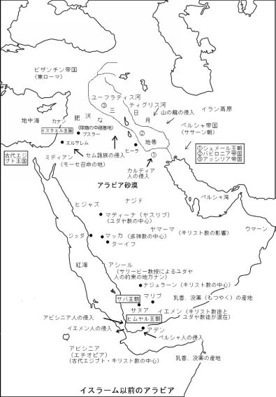
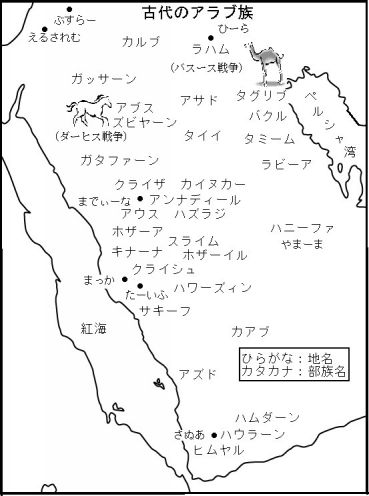
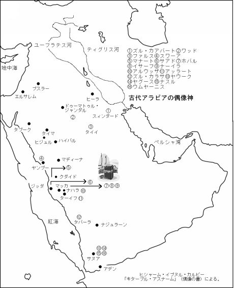
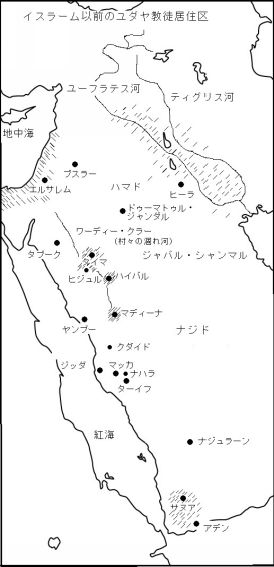

| 預言者の生涯 第一巻: イスラーム文明を創造した男の物語 | |
| イブン・イスハーク | |
| (2015) | |
目次
まえがき
預言者誕生以前のアラビア
文明のゆりかご、アラビア砂漠
セム族の文明
伝承の共有
アラビア半島のアラブ化
アラブとしての覚醒
世界文明を創造した男の物語
神の使徒、ムハンマドの伝記 イブン・イスハーク
アーダムにまでさかのぼる神の使徒ムハンマドの正統な系譜
イスマイールの系譜
イエメン王ラビーア・イブン・ナスルと、二人の占い師、シックとサティーハニの物語
ティバーン・アスアド・アブー・カリブは、いかにしてイエメン王国を領有し、ヤスリブに遠征したか
ハッサーン・イブン・ティバーン・アスアドの統治と、アムルによる兄ハッサーンの殺害
ラフニーア・ズゥー・シャナーティルは、いかにしてイエメンの王権を獲得したか
ズゥー・ヌワースの支配
ナジュラーンのキリスト教の起原
アブドッラー・イブヌッ・サーミルと坑の住人
ダウス・ズゥー・サアラバーンと、アビシニアによるイエメン支配の始まり、そしてイエメンの総督となったアルヤートの物語
アブラハはいかにしてイエメンを支配し、アルヤートを殺したか
象と暦調節師の物語
象の物語に言及している詩
サイフ・イブン・ズゥー・ヤザンの旅と、ワハリズのイエメン支配
イエメンにおけるペルシャの支配の終焉
ニザール・イブン・マアッドの子孫
アムル・イブン・ルハイイの物語と、アラブにおける偶像崇拝
バヒーラ、サーイバ、ワスィーラ、そしてハーミーについて
系譜の続き
サアマの物語
アウフ・イブン・ルアイイの移住
ザムザムの泉の掘削
ジュルフム族とザムザムの泉の埋め立て
キナーナ、ホザーア両部族によるカアバ神殿の管理権奪取と、ジュルフムの追放
ホザーア族によるカアバの管理の専制
クサイイ・イブン・キラーブとフッバア・ビント・フライルの婚姻
巡礼に対するアルガウスの権威
アドワーン族とムズダリファの出発儀式
アーミル・イブン・ザリブ・イブン・アムル・イブン・イーヤード・イブン・ヤシュクル・イブン・アドワーン
クサイイ・イブン・キラーブは、いかにしてマッカの実権を握ったか、彼はいかにしてクライシュ一族を団結させたか、そしてクダーアが彼に与えた支援について
クサイイ後のクライシュ一族の分裂と、アルムタイイブーン（香る者たち）同盟
アルフドゥールの誓約
ザムザムの掘削
クライシュ一族がマッカで所有した井戸
アブドゥル・ムッタリブの、息子を犠牲にする誓い
アブドッラー・イブン・アブドゥル・ムッタリブとの結婚を自ら申し入れた娘
神の使徒ムハンマドの誕生
アーミナが使徒を懐妊していたときの神のお告げ
預言者ムハンマドの誕生と養育
アーミナの死、使徒と祖父の生活
アブドゥル・ムッタリブの死と惜別の詩
使徒の保護者となったアブー・ターリブ
バヒーラの物語
アルフィジャール（冒涜）戦争
使徒ムハンマドとハディージャの結婚
カアバの再建と使徒ムハンマドによる審判
ホムスについて
アラブの占い師、ユダヤ教のラビ、キリスト教の修道士らによる神の使徒に関する報告
神の使徒に関するユダヤ教徒の警告
サルマーンはいかにしてムスリムとなったか
多神教を拒絶した四人の男
福音書の中で神の使徒に言及した言葉
預言者としての召命
神の啓示の始まり
ホワイリドの娘、ハディージャの入信
礼拝の定め
イスラームに帰依した最初の男性、アリー・イブン・アブー・ターリブ
イスラームに帰依した二番目の男性、ザイド・イブン・ハーリサ・シュラフビール・イブン・カアブ・イブン・アブドゥル・ウッザ・イブン・イムリウルカイシ・アルカルビイ
アブー・バクルのイスラームへの入信
アブー・バクルの招請でイスラームに帰依した教友たち
使徒ムハンマドの公開説教と人びとの反応
アルワリード・イブヌル・ムギーラとコーラン
神の使徒は彼自身の民からどのように扱われたか
ハムザの入信
ウトゥバが使徒について語ったこと
使徒とクライシュ族指導者の交渉と、コーランの洞穴の章の説明
コーランを声高らかに朗誦した最初の男
クライシュ、使徒の読誦を聴く
多神教徒による下層階級ムスリムの迫害
アビシニアへの最初の移住
クライシュ、移住者を連れ戻すため使者をアビシニアに派遣
アンナジャーシイは、いかにしてアビシニアの王となったか
アビシニア人のアンナジャーシイへの反乱
ウマルのイスラームへの入信
ボイコットを宣言する文書
神の使徒が彼の民から受けた迫害
アビシニアに避難した教友の帰国
アルワリードの保護を放棄したウスマーン・イブン・マズウーン
第二巻目次
コラム
参考文献

まえがき
本書はイブン・イスハークによる「アッスィーラトン・ナバーウィーヤ」（預言者の生涯）の、アラビア語原典からの翻訳の第一巻である。本書は、「スィーラト・ラスーリッラーヒ」（アッラーの使徒の生涯）という別名でも広く知られており、アラブの歴史を知る上で欠かすことのできない、イスラーム世界に限らず全世界においても非常に著名な書である。
アラブ史上、最も著名な伝承学者の一人として知られているムハンマド･イブン・イスハーク・イブン・ヤサール・イブン・ヒヤール（ヒジュラ暦一五二年頃、西暦七六七年頃没、以下イブン・イスハーク）は、イブン・クーサーン、アブー・バクル、アブー・アブドッラー、アルマダニル・クライシィの四つの俗称で呼ばれていた。彼は、カイス・イブン・マクラマ・イブヌル・ムッタリブ・イブン・アブド・マナーフ（マッカ出身のクライシュ族）の奴隷であったが、後に解放された。
彼の祖父ヤサールは、ヒジュラ暦一二年（ヒジュラ暦は、西暦六二二年を元年とする）に、初代正統カリフ（預言者ムハンマドの後継者）アブー・バクル率いるイスラーム軍が、イラクのクーファ西部のアルアンバールの街近くのアイヌッ・タムル村に入った際に、同村の教会で捕虜となり、マディーナに連れて行かれた。そのような経緯から、ヒジュラ暦八五年頃、ヤサールの孫のイブン・イスハークは、マディーナで生まれた。青年時代をマディーナで過ごしたイブン・イスハークは、ペルシャ人のような非常に美しい風貌の持ち主だったと言われている。やがて彼は、マディーナからエジプトのアレクサンドリアへ、それからクーファ、さらにアルジャジーラ（ティグリス・ユーフラテス両河の間の地）、アッライ（イラン）、アルヒーラと転々と移り住み、最後にバグダッドで亡くなり、アルカイズラーン墓地に葬られた。
以下は、イブン・イスハークが本書を著すことになった経緯である。
ある日、イブン・イスハークは、バグダッドで（一説ではヒーラで）、アッバース朝の第二代カリフであるアルマンスール（在位西暦七五四―七七五年）に謁見した。その時、アルマンスールは息子のアルマフディー（同七七五―七八五年）と共にいた。カリフは息子を指差し、イブン・イスハークに向かって、「彼は誰か、そなたは知っているか」と尋ねた。彼は「はい、存じております。この御方は、カリフのご子息アルマフディー様です」、と答えた。カリフは、「我が息子のために、主がアーダム（アダム）を創造された時から今日に至るまでのすべての出来事を書き記せ」と命じた。当時の学者たちの間で、イブン・イスハークの知性とその能力は傑出した存在であり、その事実はカリフであるアルマンスールも知るところであった。それゆえ彼は、イブン・イスハークにこのような任務を命じたのであった。
やがてイブン・イスハークは、預言者伝を完成させ、カリフのもとへ参上した。彼の書を閲覧したカリフは、「イブン・イスハークよ、そなたの書は長すぎる。概要をまとめよ」とさらに彼に命じ、彼の書を金庫に保管させた。イブン・イスハークは、今度は概要版を編さんし、再びカリフに謁見して、書を献上した。このように、アッスィーラトン・ナバーウィーヤには完全版と概要版の二つの書があったとされている。
なぜ、イスラーム帝国の最高権力者、カリフ自らが、このような使命を彼に課したのであろうか。それを知るためには、イブン・イスハークが本書を著した当時のアラブの環境が、どのような状況であったかを知らねばならない。
唯一の主アッラーが、ムハンマドを最後の預言者として召命され、彼に最終段階の啓示、イスラームを授けられたことは、人類史上、とりわけアラブにとっては史上最大の出来事であった。アラブの歴史において、イスラームの降臨がなぜ、そのような意義を持つ出来事といえるのだろうか。
人は、主の唯一性と啓示を受け入れ、主のみを崇拝することによって、それまでのあらゆるものへの隷従から初めて解き放たれ、主の被造物である一人の人間としての尊厳を獲得することが可能となる。そしてこのような主からの啓示は、人間に自由と平等をもたらす教えであるため、この教えを受け入れて遵守し、実践することによって、人間は自由と平等をも得ることになる。そればかりではなく、現世のみならず来世における平安を主から拝受することが約束されるため、主の教えを追究することは、真の永遠なる幸福を享受することにつながる、とアラブは考えたからである。
それまでのアラブ史は、父祖の時代の日々の詳細な出来事や血族の系譜を、父祖から子孫へと、連綿とした口述伝承を残すことによって形成されてきた。しかし、イスラームの出現は、それまでのアラブ史の在り方を根本から変革してしまった。イスラームの啓示が下り、史実として後世に残すべき出来事の重要性も、伝えるべき情報量やその詳細も、飛躍的に増大、拡大した。しかも、情報を精確、確実に伝達するためには、口承ではなく、文字として記録することが不可欠となった。
それゆえ、従来、自分の部族の歴史のみを継承してきたアラブは、イスラームの降臨以降、ムスリム、ノンムスリムを問わず、アラブ全体で起こる重要な出来事に関する膨大な情報を史実として継承することになり、歴史の蓄積、継承、伝達において、アラブ民族の知的能力を飛躍的に向上させた。口述伝承から記述伝承へと、パラダイムの転換が起き、アラブが知的に覚醒したのである。
すなわち、唯一神の信仰と、歴史認識の革新は、自由かっ達で、知的好奇心にあふれる人間精神を育み、歴史の叙述のみならず、すべての学問分野で、アラブの創造力を刺激し、イスラーム文明興隆の起爆剤となったのである。帝国の最高権力者カリフは、十八世紀西洋の啓蒙君主のごとく振る舞い、学問を奨励し、学者を保護、支援、自らも勉学に励み、万巻の書物を国家財産として図書館に収蔵した。
正統カリフ（預言者ムハンマドに次ぐ四人の後継者）の時代（西暦六三二―六六一年）が終わるまで、アラブ世界ではコーランとアラビア語文法書を除いて、書物として記述することは一切許されなかった。これは、書物が氾濫することによって、コーランの原典としての神聖さ、純粋性が損なわれることを畏れたためであった。しかし、ウマイヤ朝の初代カリフ、ムアーウィヤ（六六一―六八〇年）の時代になると、カリフ自身が歴史書を編さんすることを提案し、イエメンからウバイド・イブン・シャリーヤを呼び寄せて、彼に歴史書の著述を依頼した。ウバイドの著作「キターブル・ムルーキ・ワ・アフバールル・マーディーン」（諸王と父祖の歴史）は、それまでのアラブ史を初めて編さんしたものであった。
一方、ウバイドの後に出現した伝承学者たちは、預言者ムハンマドの伝記のみに対象を絞り、ミクロ的観点から詳細な歴史書を著した。このような伝承学者たちの中でも、以下の学者たちがとりわけ有名である。ウルワ・イブヌッ・ズバイル・イブヌル・アッワーム（ヒジュラ暦九二年没）は、預言者の教友（預言者と行動を共にした最初期のムスリム）アッズバイルと、初代正統カリフ、アブー・バクルの娘アスマアを両親に持ち、神の使徒ムハンマドに非常に近い環境で育ったため、彼の歴史書は、アビシニア（エチオピア）とマディーナへの聖遷、バドルの戦いなどのイスラーム初期の史実に関する詳細な記述が特色である。アバーン・イブン・ウスマーン・イブン・アッファーヌル・マダニーユ（ヒジュラ暦一〇五年没）の歴史書は、神の使徒の言行が中心に記述されており、まさしく預言者の伝記と呼ぶべき内容であった。ワハブ・イブン・ムナッビヒル・ヤマニ（ヒジュラ暦一一〇年没）の歴史書の一部分は、ドイツのハイデルベルグ市立図書館に現存している。このほかにも当時の伝承学者として、アースィム・イブン・ウマル・イブン・カターダ(ヒジュラ暦一二〇年没)、シュラハビール・イブン・サアド（ヒジュラ暦一二三年没）、イブン・シハーブッ・ズフリー（ヒジュラ暦一二四年没）、アブドッラー・イブン・アブー・バクル・イブン・ハズム（ヒジュラ暦一三五年没）、ムーサ・イブン・ウクバ（ヒジュラ暦一四一年没）、マーマル・イブン・ラーシッド（ヒジュラ暦一五〇年没）等が有名であった。
本書の著者であるイブン・イスハーク以前に、上記のように伝承学者たちが預言者伝を書き残しているが、非常に残念なことに、これらの原典は散逸してしまった。イブン・イスハークの預言者伝は、現存する最古の伝記であり、預言者の言行録（ハディース）が中心であるものの、イスラーム以前からの伝承や詩文に至るまで、膨大かつ詳細な出来事を網羅しており、その書は預言者ムハンマドの伝記という範疇を超え、アラブ史の一つの集大成として、現在でも歴史書として広く読まれている。今日に至るまで預言者伝は多数出版されてきたが、イブン・イスハーク以降の著作は、本書を参考引用するものがほとんどであり、本書は、今なお史上、傑出した存在となっている。
本書原典の印刷版としては、ウィストフィルドによるドイツのグーテンゲン版（一八六〇年、全二巻)、エジプトのブーラーク版（ヒジュラ暦一二二五年、全三巻）、エジプトのアルアフバール版（一九九八年、全四巻)が著名である。
今日、イブン・イスハーク著のアッスィーラトン・ナバーウィーヤとして世界中で読まれている預言者伝は、実際のところ、イブン・ヒシャーム（ヒジュラ暦二一八年没）の校訂版である。イブン・ヒシャームの校訂版の特徴は、イブン・イスハークの原典におけるアーダムからイスマイール（イシュマエル）の時代の記述が割愛されていることである。また校訂版であるため、イブン・ヒシャームは、原典に追記・補足を加えているが、原典本文に対しては、上記の割愛以外、無修正で取り扱っている。
今回、本書の日本語訳にあたり、本書の完全版の原典はイスタンブールのキョプルル図書館に保管（管理番号一一四〇）されているという説や、エジプトのダールル・クトゥブ図書館内のアハマド・タイムール・パシャの蔵書中に彼の書が保管されているという別説に基づき、私たちは彼の書物を確認した。両図書館の書物を確認した結果、現存するすべてのアッスィーラトン・ナバーウィーヤは、アーダムからイスマイールの時代の記述が割愛されていることが判明した。この理由により、ダールル・クトゥブの蔵書資料からの日本語訳である本書も同時代の記述を割愛していることをご了承いただきたい。
ムスリム、ノンムスリムを問わず、我々がイスラームについて知ろうとするとき、先ず、唯一の神アッラーから使徒ムハンマドに授けられた啓示を記したコーランを学ぶことになる。イスラーム初期の時代においては、人びとは使徒ムハンマドと同じ時代に生き、神から下された啓示を伝承によって平易に学びとることができたが、やがて時代が過ぎ、人びとはコーランの内容を理解するために、コーランと共にハディース（神の使徒ムハンマドの言行）を知ることが不可欠となった。
さらに時代が過ぎ、人びとがコーランとハディースを理解することがより困難な状況となった。そこで、当時のアラブの史実や時代背景・環境・文化を知ることによって、コーランとハディースの理解を深め、総体的にイスラームの教えを学ぶようになった。それでは一体、このようなアラブの史実や時代背景を、我々は何から学ぶことができるのであろうか。スィーラ （伝記）と総称される預言者の伝記に関する学問が、その答えである。本書「アッスィーラトン・ナバーウィーヤ」は、数多く著されたスィーラの中で、その完成度と網羅する情報量から、今日においても最古、最高峰の存在である。
日本において、コーランの内容はこれまで様々な日本語訳が出版され、ハディースについても伝承者として著名なブハーリー版とムスリム版について日本語訳を入手することが可能となった。しかしながら、我々が平易にそしてより深くイスラームについて理解するためのスィーラについては、残念ながらこれまで日本語版は存在せず、スィーラ研究は未踏の分野と言っても過言ではない。今回、私たちが本書の全訳を決意した意義はその点にある。本書が、今後の日本におけるイスラーム研究、そしてスィーラ研究に一石を投じることができれば幸甚である。
預言者誕生以前のアラビア
文明のゆりかご、アラビア砂漠
「文明はシュメールに始まる」、という。
人は、古代文明の偉大さを知り、畏敬の念を禁じ得ない。そこに人間生活の進歩、幸福、輝きを発見し、限りないあこがれを抱く。そこで人々は、文明という概念、現象、歴史を具体的に、厳密に、かつ知的に探求しようと献身を重ねてきた。
人類最古の文明は、「肥沃な三日月地帯」、あるいは「メソポタミア」と呼ばれる地に誕生した。そこは世界地図で見ると、イラクのペルシャ湾岸から、ティグリス・ユーフラテス河を北西にさかのぼり、シリア、レバノン、パレスチナに湾曲する弓張月の形をしている。出身を知られていない謎の民族シュメール人は、この弓張月の下弦にあたるイラク南部に定住、紀元前四千年紀、地上に初めて都市国家群を建設した。それ以来、文明とはすなわち都市、都会を意味するようになった。
非文明的なるものは未開、野蛮と見なされる。東方のイラン高地からやって来て、殺戮と略奪をほしいままにする蛮族を、シュメール人は「山の龍」と呼んで恐怖した。南西のアラビア砂漠からは、ラクダを操る凶暴で剽悍な遊牧民が絶えず押し寄せ、都会人を苦しめた。聖書に「ノアの箱舟」として描写されているように、この三日月地帯で最悪の災厄は洪水だった。シュメール語で、災害と洪水は同じ意味で使われていた。やがて、アラビア砂漠からの無法者の侵入を、「洪水」と言うようになった、と主張する研究者さえいる。
未開の砂漠は常に死のイメージで語られてきた。そこは不毛で無法な暗黒の世界である。イザヤ書三十章六節は砂漠を、「ほえたける雌獅子（めじし）や雄獅子（おじし） 蝮（まむし）や、飛び回る炎の蛇が住む 悩みと苦しみの道」（日本聖書協会新共同訳「聖書」）、と描く。神話では砂漠は、悪霊や妖怪が潜む黄泉の国である。
都市と文明を自明のごとく同一視する歴史観の下、砂漠の民が文明の発展に貢献した役割は、現代に至るまで、正しく評価されないばかりか、間違って解釈され続けている。輝かしい文明の実像を明らかにしようとする長年の献身にもかかわらず、人類はいまだこの試みに成功していない。
飢餓、貧困、疫病が克服されたわけではないが、現代ほど人間生活が豊かな時代はかつてない。だが、都会の物質的な豊かさだけが現代人に幸福を保証しはしない。最終破壊兵器、環境汚染、地球温暖化は、人類を破滅の淵に立たせている。すなわち現代人は、文明を創造したシュメール人のような、精神的エネルギーを欠いているがために、文明を維持、継承する能力をも喪失してしまった。文明を衝突させ、破壊しようとする現代人は、前四千年紀のシュメール人ほどには、文明的ではないのである。
文明はメソポタミアに、何の脈絡もなく突然、発祥したのではない。いかなる都会も単独で、孤立して存在することは出来ず、都市文明の歴史は、その周辺の環境との関連においてのみ理解できる。
このことを、十四世紀アラブの歴史哲学者イブン・ハルドゥーンは、「砂漠は文明の根源であり、都市はその副産物である」、と言った。
生物がほぼ死に絶える砂漠は、飢餓の場所である。ラクダを追う遊牧の部族は、勇気に導かれてその奥深く入って行く。極限の状態では、人間は単独で生存できない。砂漠の民は必ず集団を構成し、アサビーヤ（連帯意識）という至聖の絆で融合する。
城壁や城門を持たない彼らは、いつも武器を持ち、注意深く四方を警戒する。極限状態で彼らは次々に世代を生み、勇猛さは彼らの固有の性質になってしまう。彼らは、叫び声を聞き、不安に襲われたときにこの本性を発揮する。
知性を伴わない勇気は蛮勇にしかすぎず、彼らは目的もなく、ただ放浪のために放浪する流浪の民ではない。彼らは、飢餓を生き残るため、新緑の牧草と水を求めて、常に全身、全霊を傾けるよう強制される。
砂漠は、人々が想像するような単調な世界ではない。突然の状況変化、未知に遭遇したとき、指導者のささいな判断ミスは部族全体を窮地に陥れ、知力、判断力に欠ける部族の生存はおぼつかないであろう。
砂漠での窮乏生活という裁可は、知的好奇心にあふれる鋭い感覚、知識に対するあくなき向上心、あらゆる危機に対応できる柔軟な潜在能力を、天幕の住人に気質として植えつけてしまうのである。
歴史家フィリップ・Ｋ・ヒッティによれば、アラビア砂漠の遊牧生活は、「デトロイトやマンチェスターの工業主義と同じくらい、科学的生活様式なのだ」。
文明とはすなわち、知的想像力にあふれる、人間精神の状態のことである。この類まれなる才能に恵まれたシュメール人は、先史時代のどこかで科学的な遊牧生活を過ごしていた。シュメール文明の遺跡から、彼らにとってヒツジが非常に重要な動物であったことが発見されている。
考古学者ジャケッタ・ホークスは、シュメール人の頭がヒツジの群れでいっぱいであったことは、彼らがかつて遊牧の民であったことを示している、としている。
セム族の文明
人類の記憶が定かではない太古の昔から、実り豊かな二大河の渓谷に人の流れが注いでいた。起源が不明のシュメール人はどこかから、征服者、支配者としてそこにやって来た。恐らくシュメール人よりも以前から、牧草と水を求めて、西と南の砂漠から、天幕に住みヒツジを追う部族が、洪水のように侵入を繰り返していた。
彼らはシュメール人に代わって、国家と王朝を建設した。
前三千年紀後半からおよそ二千年の長きにわたってメソポタミアで興亡した諸民族の王朝は、一つの際立った特徴を共有していた。彼らが使っていた言語はすべて、三つの子音からなる三人称、単数、男性形の、動詞の過去形を、語根と呼ばれる基本形とする（コラム１を参照）。動詞の人称変化は同一の形式をとり、人称代名詞、血縁を示す名詞、数詞、身体の部位を示す名称などが著しく類似している。
すなわち、これらの民族は、アッカド・バビロニア語、アッシリア語、カルデア語、ヘブライ語、アラム（シリア）語、フェニキア語、アラビア語、エチオピア（アビシニア）語を話す、セム語族に所属していた。
いまだ考古学によって実証されてはいないが、彼らの祖先、単一の種族としての原セム族は、先史時代のある時期、ある場所に居住しており、そこからセム語諸族が分かれていった、との推測が成り立つ。セム族の故郷がどこにあったのか、東アフリカ、小アジア、南メソポタミアなどの説がある。
だが、アラビア半島のどこか、というのが一番もっともらしい。かつてのアラビアは緑の豊かな大地であったという。ヨーロッパを覆っていた氷河が北に退くと、アラビアは乾燥し、砂漠が広がった。砂漠が養える人口には限りがある。三方を海に囲まれた過剰人口は、はけ口を求めて北に移動せざるを得なかった。
セム族は、凶暴な侵入者ではあったが、文明の破壊者ではなかった。最初のセム族の王朝を創設したのは、羊飼いの息子で、宮廷酌夫から身を起こしたアッカドのサルゴン王である。前十八世紀、バビロンのハンムラビ王は、世界最古の立法者の一人となった。「目には目を、歯には歯を」――返応報法、あるいは同害法といわれるハンムラビ法典は、復讐を正当化するのではなく、制限するための法だった。砂漠を突き抜け、三日月地帯を横断、約束の地カナン（パレスチナ）に定住した遊牧民の子孫ソロモンは、イスラエルの王国を極盛期に導いた。
彼らは、セム族ではないシュメール人から、家を建てて定住すること、灌漑用水路を掘って農作物を栽培すること、とりわけ文字を書くことを学んだ。フェニキア人はアルファベットを考案して、文字の使用を簡素化した。イスラエル人はヘブライ語聖書（コラム２を参照）を記し、恐らく世界初の一神教徒となった。ユダヤ教の一派として出発したキリスト教徒は、一神教を世界宗教の一つに高める土台を敷いた。
これは、現代人がいまだに明確に認識してはいないことなのだが、肥沃な三日月地帯はセム族の文明の舞台であり、彼らが西洋文明の礎を築いたのである。
イブン・ハルドゥーンによれば、人間の性格は、習慣や慣れ親しんできたものの賜物である。もって生まれた性質、気質などというものはない。飢餓という極限状態に慣れ親しんできた砂漠の民は、より洗練された豊かな生活、すなわち進歩を希求してやまない。彼らは、文明を受容しさらにそれを進化させる創造力にあふれていた。メソポタミアの文明は、砂漠に源を発したのである。こうして、アラビア半島を含む肥沃な三日月地帯では、天幕に住む遊牧の民が洪水のような集団となって定住地に移動することが、人類が記憶にとどめていない時代から続いていた現象だった。
伝承の共有
セム族の諸言語は、原セム語の方言である。一つのセム語に精通すれば、ほかのセム語を理解するのは容易なことだ。また天幕の住人が定住する過程は、すべてが敵対的であったわけではない。定住民は周辺の半遊牧民と血縁関係、あるいは同盟関係にあった。半遊牧民はさらに深奥の砂漠の民と同じ関係にあった。この関係をさかのぼっていくと、ヘブライ人とアラビア語を話すアラブ人は、いつかどこかで、セム族の故郷に近い地で、隣人のような関係にあったと考えられる。
聖書には、ヘブライ人が砂漠で過ごした原風景が、ふんだんに描かれている。多数の登場人物がヘブライ人なのか、アラブ人なのか区別がつかない。例えば、アブラハムの息子の、イサクの双子の息子の、ヤコブの兄エサウの息子たちのほとんどは、アラブ人である（創世記三六章一〇―一四節、歴代誌上一章三五―七節）。
同胞に乱暴を働いていたエジプト人を殺したモーセは、シナイ半島の東、アラビア半島の北西部にあたるミディアンに逃れ、そこの祭司の娘と結婚した。祭司のヒツジの群れを追っていたモーセはある時、神の山ホレブに登って主であるヤハウェと契約した。
モーセを召命したのは恐らく、ミディアン人、すなわち北アラビア人の部族神だった（出エジプト記三章一節）。
ヨブ記の主人公ヨブは、明らかにアラブ人のアイユーブ（ヨブのアラビア語名）だった。神はサタンに唆されてヨブに信仰を試す試練を課した。主は最初の試練で、シェバ人、カルデア人にヨブを襲わせてラクダ、ヒツジ、ロバほかの全財産を奪った。カルデア人は、前十一世紀ころ北東アラビアから南メソポタミアに侵入したセム族である。シェバは、南アラビア語を話したイエメンのサバ人で、彼らの王の一人は、知恵者ソロモンを試そうとしてエルサレムにやって来たシェバの女王である。
義の人ヨブは、アラビアの砂漠にいて、北と南の部族によって略奪されたのだ。
中世ユダヤ人聖書学者イブン・エズラと、近世ユダヤ人哲学者スピノザは、ヨブ記はヘブライ語以外の言葉から翻訳されたもの、と考えている。
アラブという言葉の語源は、人種や民族の違いを問わず、定住生活者と対比して、砂漠の遊牧民を意味するセム語である。アッシリアの年代記は、諸王たちが、都市や隊商を襲撃する野蛮な「アリビ」を懲らしめた、と繰り返し語っている。
また古代メソポタミア、エジプトの書簡や碑文に「ハビル」、「アピル」と呼ばれ、セム語を話し、凶暴で、略奪を得意とする砂漠の部族が頻繁に登場する。彼らは、人種・民族の違いに関係なく、定住せず、国家権力に服従しない、社会からはみだした無法者の集団だった。彼らが職に就くときは、傭兵だった。聖書の記述は、イブリ（ヘブライ）がある時、ある所で、そのような集団に属していた、と語っている。例えば創世記十四章で、アブラハムと改名する前のアブラムは、ソドムの傭兵隊長として登場する。
セム語の特徴は音位転換することである。ハビル、イブリが音位転換すれば、アリビ、アラブに変化する（コラム１を参照）。
歴史学者カマール・サリービーは、ヘブライ語とアラビア語の固有名詞学、とくに地名学を駆使して、ヘブライ人の約束の地はカナン（パレスチナ）ではなく、現代のサウジアラビアの南西部、イエメンの北に位置するアシールとヒジャーズ地方だった、と考えている。アシールとヒジャーズに点在する多数の地名と、聖書のカナンの諸地名が一致しているからだ。例えば、「いと高き神」の祭司でもあり、王でもあるメルキゼデクの王国「サレム」（創世記十四章）という地は、アシールにもある。すると「いと高き神」は、そこの部族神だったことになる。
ヘブライ人を含め、セム語を話す諸民族がアラビアの出身であることを前提とすれば、これは珍説でも奇説でもない。アシールに発し、肥沃な三日月地帯を横断して約束の地カナンに移住した遊牧の部族が、彼らの彷徨の旅を回想して聖書に記したのであろう。
そのうち最も原初の創世記と出エジプト記の舞台が、アシールとヒジャーズだとしても、それは十分、論理的なのである。少なくとも、創世記と出エジプト記がアラビア半島西部の伝承をヘブライ語で編纂したもの、という仮説を、証明する資料はないが、それを否定する資料も存在しないのである。
恐らく故郷を同じくするほかのセム族にとって、ヘブライ人が書いた創世記、出エジプト記を理解することは、さして難しいことではなかったに違いない。
すなわち、洪水とノア（アラビア語のヌーホ）の箱舟、アブラハム（イブラヒーム）とハガル（ハージャル）の息子イシュマエル（イスマイール）、モーセ（ムーサ）とファラオ（フィルアウン）、神罰によって滅亡したロト（ルート）の民・ソドムとゴモラ、などなどの物語は、アラビアを含む肥沃な三日月地帯で、共通の伝承だったのだ。
イスラームの聖典コーランに、これらの物語がふんだんに盛り込まれていても、それは当たり前のことなのである。
第一次世界大戦の時、アラブの反乱を指導したアラビアのロレンスは、次のように述懐している。マッカやターイフの周辺には、「イエメンから出てきた五十におよぶ部族たちに関係ある思い出や、地名がたくさん見られる。そしてそれらは、また今でもナジド（アラビア半島中央）やジャバル・シャンマルやハマド（半島北部の中央）のみならず、シリアやメソポタミアの周辺地帯にさえ見いだされる」。
移住者は新天地に故郷の名をつける。彼らはまた、伝承も携えて行く。イギリス系アメリカ人が、新天地を「ニューイングランド」、と称したように。
アラビア半島のアラブ化
大海原の水門が破れ、天の窓が開く洪水は、肥沃な三日月地帯だけに起きる災厄ではない。生きとし生けるものを、地上からことごとく滅ぼし尽くす破局的な洪水は、イエメンの山岳地帯でも起きた。
季節の移り変わりに恵まれた遊牧の民は、温潤な冬と春に砂漠や草原を周遊し、乾期の夏から秋にかけては山中にこもる。南アラビア語を話すサバ人は、そのような部族だった。中央アラビアにいたヨブを襲ったサバ人は、まだ定住してはいなかったのであろう。
彼らは紀元前八世紀、イエメンの山中に定着し、高度の文明を誇る商業国家を建設した。彼らは、インドのスパイス、南アラビアと東アフリカ産の乳香、没薬（もつやく）を商う中継貿易で富を蓄えた。燃やすと芳香を発する乳香と没薬は、メソポタミアとエジプトの宮殿で、王侯貴族に珍重されていた。彼らは東アフリカに進出し、そこに植民地を開拓した。これが南アラビア語に近いアビシニア語を話す、エチオピアの起源である。
彼らは国際貿易に優れていただけではない。土木建築技術でも優れた才能を発揮した。マリブの巨大貯水ダムは、紀元前千年紀の中葉に完成、それから千年の間、稼動し続け、耕作地を潤した。
それは、紀元後一世紀、あるいは二世紀の出来事と考えられている。このダムが決壊した。サバ王国は紀元前二世紀に滅亡、その後に興ったヒムヤル人の王国は、サバ人ほどの技術をもってはいなかったらしい。修復されたダムはまた決壊した。コーラン三四章（サバの章）一六節は、この破局的な大洪水を神罰として言及している。
モンスーン気候帯に入るイエメンは、周期的な降雨に恵まれる。西洋と東洋を中継する貿易で繁栄し、農産物の豊かなこの地を、ギリシャ人やローマ人は、「幸福のアラビア」と呼んだ。ダムが決壊してからは、「幸福のアラビア」どころか、不幸なアラビア、となった。過剰な人口は、はけ口を求めて北に、東にと移動した。海を渡って植民地エチオピアに移住した部族もあった。
彼らがどこに行こうとも、そこには北アラビア語を話す先住部族がいる。もともと砂漠が養える人口には限りがあるので、そこでも人口が過剰となる。あふれた部族は、四方に押し出されていく。そこで、広大な砂漠で、「押し合いへし合いの争いが起こるのである」（アラビアのロレンス）。
アラブの伝承家アスマーイは、この押し合いへし合いの争いを次のように記している。
南アラビアの諸部族は、移住した「その地の先住民を略奪することなくそこに入ったことはなかった。ホザーア族は、ジュルフム族からマッカをもぎ取った。アウス族とハズラジ族は、ユダヤ人からマディーナをもぎ取った。ムンズィル家は、イラクをそこの人々から占領した。ジャフナ家はシリアを占領して支配した。イムラーン・イブン・アムル・イブン・アーミルの子孫は、ウマーンを占領した。彼らはそれまで、（イエメンの）ヒムヤルの王たちに服従していたのである」。
ムンズィル家は、イエメンのラフム族の氏族で、紀元三―四世紀にイラクのヒーラに移住して王朝を建設した。ジャフナ家は、南部シリアに移住したガッサーン族の王朝。ペルシャはラフムに、ローマはガッサーンに、補助金を支給して従属国家とし、砂漠から侵入する略奪者を撃退する防波堤とした。
アラビア半島を渦に巻き込む、押し合いへし合いの人口移動が何世紀間も続くことによって、その予期せぬ結果として、南アラビア人と北アラビア人が融合、もう一つのセム語族が誕生した。
アラブ人は最も新しいセム族であるが、最もセム族らしい容貌、肉体、精神を持つ。アラビア語は最も新しいセム語であるが、最も古いセム語の特徴を持つ。何世紀もの長きにわたって飢餓の地で純粋培養された砂漠の民は、強じんな肉体と、創造力にあふれる精神的エネルギーを持つ。彼らが砂漠を突き抜け、偉大な文明を同化し、新たな文明を創造する時が満ちていた。
そのころ、アラビア半島にはアラビア語を話す多数のユダヤ教徒、キリスト教徒が居住していた。マディーナと呼ばれるようになる前のヤスリブや、イエメンで、肥沃な農地を耕し、鍛冶として刀剣、甲冑を鍛えていたのはユダヤ人だった。イエメンとアラビア砂漠の境にあるナジュラーンは、キリスト教の中心として繁栄していた。
聖書の物語は、アラビア半島で共通の伝承になっていた。コーランは、アラビア半島西部の伝承をアラビア語で編纂したものなのだ（サリービー）。
悠久の昔から、マッカには、石を積み上げただけの簡素な神殿があった。子ヤギが飛び込んで入れるほどの高さしかなかった。屋根はなく、布の覆いが掛けられているだけだった。伝承では、この神殿は、イブラヒーム・イスマイール父子が創建した、と信じられていた。
紀元一世紀後半に活躍したユダヤ人の著述家フラウィウス・ヨセフスは、アブラハムの側女から生まれたイシュマエル（イスマイール）がアラブ人たちの始祖であり、彼らはユーフラテス河から紅海の間に住んでいる、と書いている。
アラブの系譜学者は、ユーフラテス河と紅海の間に住むイシュマエルの子孫・北アラビア人を、「アラブ化されたアラブ＝アーラブ・アル・ムスタアリバ」、あるいは「アドナーン」とする。
創世記一〇章二二―二八節によれば、セムの息子のアルパクシャド、その息子のシェラ、その息子のエベル、その息子のヨクタン、その息子がシェバ（サバ）であることから、北アラビア人より古い民族であるイエメン出身の南アラビア人を、「純血のアラブ＝アーラブ・アル・アリバ」、あるいは「カハターン」（ヨクタンのアラビア語名）とする。
日本の武士たちが清和源氏、桓武平氏を名乗ったように、血統を誇るのは人間の性である。セム族は、しばしばアダム（アーダム）にまでさかのぼる系譜を語るのだ。
アラブとしての覚醒
共通の伝承を共通の言葉で語るようになると、彼らは詩文学を高度に発達させた。セム語はその独特の言語体系によって、美しい韻を踏むことを容易にする。また、大音声で朗誦すれば、セム語の韻は一層、効果を発揮し、聴衆を陶酔させ、抑え難い感動を与える。
詩人たちが頌詩（しょうし）で称賛したのが、アラブの至高の美徳、すなわち部族のアサビーヤ（連帯意識）だった。吟遊詩人たちは、アーダムやイブラヒームにまでさかのぼる所属部族の純粋な血統、勇猛心、忠誠心、誓約の厳守、正義の貫徹、名誉の保全、弱者や貧者に対する惜しみない援助、気前のよい客人接待、英雄的な遠征と勝利を称揚してアラビア中を逍遥した。
聴衆に抑え難い衝動を与えることで比類のない才能を発揮した詩人は、何か霊的な、神がかり的な超能力者として畏怖された。族長たちは、超能力を持つ詩人を抱えようと競い合った。お抱え詩人によって敵対部族を誹謗、中傷して貶めることができるならば、戦わずして情報戦で敵に勝利できるからである。
つまり詩と詩人は、現代の情報機関の役割を果たしていた。彼らの活躍によって、アラブの美徳、部族のアサビーヤは、アラビア語を話す、アラブ諸部族が共有する普遍の道徳・倫理規範となった。こうしてアラビア半島の諸部族は、普遍の価値観、社会規範を共有する一つのアラブとして覚醒した。
遊牧の部族は、明確ではないが、暗黙のうちに了解されたおぼろげな勢力圏内を、牧草と水を求めて周遊する。諸部族の間には、現代の国際関係に似た関係が成立、生存のために合従連衡が繰り返された。
生物がほぼ死に絶える砂漠では、定住地のような生産活動がない。彼らが困窮したときどうするか。物乞いという言葉を知らない誇り高い民族は、死するか、さもなくば隣人から奪い取ることしか知らない。
略奪が彼らの経済活動だった。経済活動である以上、彼らが順守すべきルールが存在した。共通の規範、アサビーヤに基づく国際法である。彼らが、放浪のために放浪し、略奪のために略奪する無法者の集団であったならば、種の保存は不可能だったであろう。
飢餓の砂漠では、一家族だけでは生存できない。多数の家族、親族が連帯して血縁氏族を構成、氏族が連帯して支族を構成、支族が連帯して部族、部族連合を構成する。生存競争を勝ち抜くため、構成員は部族の連帯のために絶対的な忠誠、服従を誓う。日本の武士道に相当するアラブの美徳、部族の連帯意識は、極限状態の砂漠で、検察・裁判制度の役割を果たし、無制限の略奪、破壊、殺戮を抑止する安全弁の機能を果たしていた。
例えば彼らの間では、保護の誓約という、弱い立場にある者の安全を保障する制度が確立していた。ある部族員がある者を、「この人は私の保護下にある」、と公衆に誓約する。何人もこの被保護者に手を下すことはできない。被保護者に敵対する者は、保護者の部族全体を敵にしなければならなかった。
部族員が、同一の部族の連帯に忠誠を誓う部族員を殺害することほど重大な犯罪はなかった。この犯罪者は、部族の連帯のらち外に置かれ、彼を保護する者は一人もいない。飢餓の場所で孤立する者は、「部族もなく、法もなく、炉もなき者」（ホメロス）となり、死を待つしかない。
略奪するとき、流血は厳粛に戒められた。血の害に報いるに、血の害をもって報いる返応報法の下では、流血は「血の復讐」の連鎖を招き、種族を滅亡させる消耗戦争に至るからだ。返応報法は、過剰な報復をむしろ制限する効果を持った。
略奪で血が流されたとしても、それが経済行為であれば、「血の代償金」という経済的な手段で解決できた。代償金の額は、砂漠で最も価値の高い財産、ラクダの数で数えられた。男一人の「血の代償金」はラクダ十頭、との記録が残されている。抗争が破局的になる前に、第三者の有力族長が必ず仲裁に入った。死傷者の数が少ない方の部族が、死者の数の差だけ代償金を支払って平和が回復される。
無制限の殺戮を抑止する究極の安全弁が、神聖月の掟だった。ズルカアダ（十一）、ズルヒッジャ（十二）、アルムハッラム（一）と、年央のラジャブ（七）月は、禁断の月とされ、この期間に血を流すことは、神々の怒りを招く最悪の犯罪とされた。アラブは、行動の自由が保障される神聖月に、交易や巡礼に励み、詩のコンテストを開いた。
正義の貫徹と名誉の保全に不可侵の価値を置くアラブ族の間では、むしろささいな口論、軽率な行動が、双方の部族を滅亡させる破局的な抗争の原因となる。五世紀から六世紀にかけて、半世紀の長きにわたって続いた「バスースの戦い」は、そんな争いだった。
北東アラビアを領域とするタグリブ族とバクル族は、南アラビア出身の先祖を同じくする、とりわけ親密な兄弟関係にあった。ラクダ同士のいさかいから、タグリブの族長がバクル族の保護下にあった老婦人の雌ラクダに矢を放った。老婦人の友人、バスースという名のバクル族の婦人がこれを見て、ベールを引き裂き、顔を打ちながら、「何という侮辱、恥、この部族は客人を庇護できないというのか」、と叫び、報復を挑発した。タグリブの族長の義兄弟で、バスースの甥でもあった男が族長を殺し、部族間抗争が始まった。
弱い立場にある老婦人が侮辱されることほど、その部族にとって正義に反し、名誉を傷つけられることはなかった。しかも雌ラクダは、人の生命の維持に不可欠の財産だった。

世界文明を創造した男
特定の集団を一つにまとめる一枚岩の団結心、鉄の規律、イデオロギーを、イブン･ハルドゥーンは、アサビーヤと定義した。この精神的な絆の原因となるのが血縁（家族・親族）、地縁（氏族）、血統（部族）、家柄、主従・盟約関係、出身地、風俗習慣、言語、歴史・文化などである。これらの絆が集団結合、連帯意識の起動因となり、集団の構成員になろうとする者に融合の場を与える。
人間が、「はじめ神以外の国王をもたず、神政以外の政治をもたなかった」（ルソー）時代、連帯意識を決定的に強化する要因は宗教だった。イブン･ハルドゥーンによれば、強大な国家は必ず、預言とか正しい宣教に基づく宗教にその起源をもつ。人々のそれぞれの欲望が一つの目標追求に向かって一致し、心が結ばれるのは、神の助けで宗教を確立したときにのみ起こるからである。神聖な目的のために団結した勇猛な集団は、はるかに強大な集団に対抗して勝利する。
「このことは、イスラーム初期、大征服時代のアラブに起こった」（イブン･ハルドゥーン）。
預言者ムハンマドは、一撃のもとに連帯意識を、部族的血縁関係から信仰の絆に代えた。進取の気性に富む本来のアラブ気質に導かれ、信仰の絆で結ばれたイスラームへの帰依者たちは、肥沃な三日月地帯を突き抜け、わずか百年のうちに、スペインからインド亜大陸、中国にまたがる未曾有の世界帝国を築いた。
それから現代に至るまで、イスラームへの礼拝を呼びかけるアザーンの声は、一日、二十四時間、一時も途絶えることなく、地球を一周して響き続けている。
これからイブン・イスハークが語るのは、世界文明を創造した男の物語である。
神の使徒、ムハンマンマドの伝記
イブン・イスハーク
慈悲深く慈愛あまねきアッラーの御名において
万有の主、アッラーに讃えあれ
神の使徒、我らがムハンマドと、彼の家族のすべてに、神の恩寵がありますように※
※聖典コーラン三三章五六節の、「神と神の天使たちは預言者を祝福される。おお、汝ら信仰する者たちよ、預言者を祝福し、彼の平安を祈願せよ」、という戒めを守り、ムスリムは、預言者に言及するとき必ず、「彼に祝福と平安あれ」（サッラッラーホ・アライヒ・ワ・サッラム）、と祈りの言葉を述べる。本書ではあまりに頻繁に預言者に言及するため、この祈りの言葉は省略させて頂いた。神のお赦しがあらんことを。
アーダムにまでさかのぼる神の使徒ムハンマドの正統な系譜
文法家、アブー・ムハンマド・アブドゥルマリク・イブン・ヒシャームは、次のように伝えている※。
※イブン・イスハークのスィーラ（預言者伝）は、イブン・ヒシャームによる校訂本としてしか現存しない。そこでこのような書き出しとなっている。
これは、神の使徒の伝記である。
アーダムの息子のシィース、シィースの息子のヤーニシュ、その息子のカイナン、その息子のマハリール、その息子のヤルド、その息子のアフヌーホ(神のみがご存知であることであるが、彼は、アーダムの息子たちのうちで最初に神から預言と読み書きの能力を授かった預言者、イドリースと思われる)、その息子のマットゥーシャラハ、その息子のラムク、その息子のヌーホ、その息子のサハム、その息子のアルファクシャズ、その息子のシャーリフ、その息子のアイバル、その息子のファーリフ、その息子のラーウー、その息子のサールーグ、その息子のナーホール、その息子のターリフ(またの名をアザル)、その息子で、慈悲深い神の友イブラヒーム、その息子のイスマイール、その息子のナービト※、その息子のヤシュジュブ、その息子のヤアルブ、その息子のタイラハ、その息子のナーホール、その息子のムカウワム、その息子のウッドゥ(またの名をウダド)、その息子のアドナーン、その息子のマアッド、その息子のニザール、その息子のムダル、その息子のイルヤース、その息子のムドゥリカ(またの名をアーミル)、その息子のホザーイマ、その息子のキナーナ、その息子のアンナドゥル、その息子のマーリク、その息子のフィフル、その息子のガーリブ、その息子のルアイイ、その息子のカアブ、その息子のムッラ、その息子のキラーブ、その息子のクサイイ(またの名をザイド)、その息子のアブド・マナーフ(またの名をアルムギーラ)、その息子のハーシム(またの名をアムル)、その息子のアブドゥル・ムッタリブ(またの名をシャイバ)、その息子のアブドッラーの息子こそが、神の使徒、ムハンマドである。
※アラブの伝承ではイスマイール（イシュマエル）をアラブ人の始祖とする。したがって、アーダム（アダム）、シィース（セト）、サハム（セム）などから、ナービト（ネバヨト）までの名前は、聖書に対応している。福音書（マタイ、ルカ）も、救世主の系譜をアダムにまでさかのぼらせている。伝承によれば、預言者自身は、自分の系譜を語る時、アドナーンより以前にはさかのぼらなかったという。
イスマイールの系譜
イスマイール・イブン・イブラヒームは、十二人の息子をもうけた。彼らは、長男のナービト、カイザル、アズブル、マブシャ、ミスマア、マーシー、ディンマー、アザル、タイマー、ヤトゥール、ナビシュ、カイズマ〔創世記二五章に対応〕である。彼らの母は、ラアラ・ビント・ムダード・イブン・アムル・ジュルフミである※。ジュルフミは、ヤクタン・イブン・アイバル・イブン・シャーリフ※、(またの名をカハターン・イブン・アイバル・イブン・シャーリフ)の息子である。イスマイールは百三十年生き、死んだときには、カアバ神殿のアルヒジュル※に埋葬されている母ハージャル〔ハガル〕の傍に埋葬されたとされている。
※アラビア語の名前は、イブン（息子）、ビント（娘）、アブー（父）、ウンム（母）によって表記する。イスマイール・イブン・イブラヒームは、イブラヒームの息子のイスマイール、ラアラ・ビント・ムダードは、ムダードの娘のラアラ、と訳すべきだが、アラビア語のまま表記する。また両親は、長男の名によっても呼ばれ、イスマイールは、アブー・ナービト（ナービトの父）、ラアラは、ウンム・ナービト（ナービトの母）、とも呼ばれる。
※ノア（ヌーホ）の息子のセム（サハム）、その息子のアルパクシャド（アルファクシャズ）、その息子のシェラ（シャーリフ）、その息子のエベル（アイバル）、その息子のヨクタン（ヤクタン、カハターン）、その息子のシェバ（サバ）と続く（創世記一〇章）。
※神殿の壁に接した半円形の部分。イブラヒームが、イスマイールとハージャルをマッカに連れてきて、そこに小屋を建てて、住まわせた、と伝えられている。
ムハンマド・イブン・ムスリム・イブン・ウバイドッラー・イブン・シハーブッ・ズフリー※は、神の使徒がアッスラミーに語ったことを、アブドッ・ラハマーン・イブン・アブドッラー・イブン・カアブ・イブン・マーリクル・アンサーリーから伝え聞いて、私に語った。「あなたがたがエジプトに赴くとき、その地の民族に対して好意をもって扱いなさい。なぜならば、彼らは我々と血縁関係があり、支援すべき対象だからである」。私がアッズフリーに、なぜ使徒は彼らを我々の血族としたのですか、と尋ねると、彼は、イスマイールの母ハージャルがエジプトの民だったからである、と答えた。
※マッカの名門の出身で、第二世代の最も重要な伝承家の一人。預言者と教友（第一世代のムスリム）を知る多数の老若男女に尋ねて、多数の伝承を収集した。彼と親交のあったイブン・イスハークは、彼を最も重要な伝承伝達者の一人としている。
アード・イブン・アウス・イブン・イラム・イブン・サハム・イブン・ヌーホと、アービル・イブン・イラム・イブン・サハム・イブン・ヌーホの二人の息子であるサムードとジャディース、ラーウィズ・イブン・サハム・イブン・ヌーホの三人の息子であるタスム、イムラーク、ウマイムは、すべてアラブの民※である。ナービト・イブン・イスマイールは、ヤシュジュブをもうけ、その系譜はヤアルブ、タイラハ、ナーホール、ムカウワム、ウダド、アドナーンにつながる。
※系譜学者はアラブ族を滅亡した部族と、現存する部族の二つに分け、これらは滅亡したと信じられていた古代アラビア部族の名前。アードとサムードは、神から遣わされた預言者に従わなかったため、神罰によって滅ぼされた民として、コーラン七、二六章などが言及している。ジャディースとタスムは、ヤマーマ地方の部族で、歴史家タバリーによれば、部族抗争の末、ヒムヤル王朝の介入を招き、両部族とも滅亡させられた。
イスマイールを先祖とする諸部族は、アドナーンの時代に分裂した。アドナーンは、マアッド、アックという二人の息子をもうけた。マアッドは、四人の息子をもうけた。その息子とは、ニザール、(マアッドがアブー・クダーアと呼ばれていたことから最初に生まれたと思われる)クダーア、コヌス、そしてイヤードである。クダーアは、イエメンのヒムヤル・イブン・サバ(サバのまたの名はアブド・シャムス)のところに行った。アラブの中で最初に捕虜を捕らえたのがアブド・シャムスであったため、彼はその意味を示すサバと呼ばれるようになった※。この捕虜とは、ヤシュジュブ・イブン・ヤアルブ・イブン・カハターンの息子であった。マアッドの系譜を研究した学者によれば、コヌス・イブン・マアッドについては、子孫は生き残らなかった。しかしアルヒーラの王、アンヌーマーン・イブヌル・ムンズィル※は、この部族に属していた。なぜならば、アッズフリーは私に、このアンヌーマーンは、コヌス・イブン・マアッドの部族であったと語ったからである。
※サバは捕虜を捕らえる者を示す。
※伝承で、イエメンからイラクのヒーラに移住し、キリスト教に改宗したラフム族のムンズィル家の子孫。ペルシャ帝国の属国となり、「アラブの王の中の王」と称した。
ヤアクーブ・イブン・ウトゥバ・イブヌル・ムギーラ・イブヌル・アフナスが私に語ったところによれば、アンサール〔神の使徒が聖遷した際に支援したマディーナの諸部族〕の一人であるズライク族の長はヤアクーブに次のように伝えたという。ウマル・イブヌル・ハッターブ〔第二代正統カリフ＝神の使徒の後継者〕の元にアンヌーマーン・イブヌル・ムンズィルの剣が〔戦利品として〕届いたとき、ウマルは、ジュバイル・イブン・ムトイム・イブン・アディーユ・イブン・ナウファル・イブン・アブド・マナーフ・イブン・クサイイを呼びつけた。ジュバイルは、アラブの最も優れた系譜学者であったアブー・バクル〔初代カリフ〕から学んだ、クライシュ族のみならず全アラブにおいて、当時、最も優れた系譜学者であった。ウマルが、アンヌーマーンはだれかと尋ねると、ジュバイルは、彼はコヌス・イブン・マアッドの一族の生き残りです、と答えた。
しかし、ほかの学者たちは、彼はラビーア・イブン・ナスル一族の子孫であるラフム族に属しているという説を主張している。真実は神のみが知ることである※。
※アンヌーマーンがアドナーン（北方系）か、カハターン（南方系）かで、系譜学者の意見が分かれていることを示している。イブン・イスハークが、「真実は神のみが知ることである」と言うときは、その伝承が疑わしいか、異論があることを意味する。
イエメン王ラビーア・イブン・ナスルと、二人の占い師、シックとサティーハの物語
イエメン王ラビーア・イブン・ナスルは、トゥッバア王朝※の王であった。王はある悪夢を見て、それにおびえ、いたく悩み続けた。そこで王は、王国のすべての占い師、魔法使い、呪術師、占星術師を呼び集めて、言った。「余は、ある夢を見て、それを恐れ、それが余の悩みの種である。その夢が何であるか、また何を意味するか、言うてみよ」。招集された占い師たちは、答えた。「その夢を語ってください。そうすれば、私たちはその意味を解き明かしましょう」。王は、「もし余がそれについて語れば、余は、そなたたちの解釈を信用できなくなる。なぜなら、余が語らなくともその夢を知っている者こそ、その意味を知っている者だからである」、と答えた。すると、彼らのうちのある者が、シックとサティーハ※は、ほかの誰よりもよく知っており、王の質問に答えられるだろうから、二人に使いをやるように、王に勧めた。サティーハの名は、ラビーウ・イブン・ラビーア・イブン・マスウード・イブン・マーズィン・イブン・ズィーブ・イブン・アディーユ・イブン・マーズィン・ガッサーンといった。シックは、ニザール族のサーブ・イブン・ヤシュクル・イブン・ルフム・イブン・アフラク・イブン・カスル・イブン・アブカル・イブン・アンマールの息子だった。アンマールは、バジーラ族とカスアム族の父である。
※紀元前二世紀の終わりころからイエメンを支配したヒムヤル人の王朝。トゥッバアは王の称号。後にユダヤ教に改宗し、キリスト教徒を迫害したとされる。
※サティーハとシックは、伝承に登場する超能力者の予言者、占い師。イブン・ハルドゥーンは、サティーハについて、頭蓋骨以外に骨がなかったので、体を服のように畳んでいた、との伝承を記述している。タバリーは、サティーハはペルシャ皇帝の夢を判断し、アラブの預言者の出現と帝国の崩壊を予言した、と書いている。
そこで王は、二人に使いをさし向け、サティーハが先に着いた。王は、同じ言葉を繰り返し、「もし、そなたが夢を知っているのであれば、そなたはその意味を解き明かせるであろう」、と言った。サティーハは、次のように答えた。
「あなたが見た炎は、海の方からやってきました。その炎は大地を襲い、そこにあるすべてを焼き尽くしました」。
それは、まさしく王が見た夢であったので、王は、それは何を意味するのかを尋ねた。サティーハは、答えた。
「溶岩台地の合間に棲む毒蛇にかけてお誓いします。エチオピア人が、アビヤンからジュラシュ※まで、あなたの土地をすべて支配することになるでしょう」。
※アビヤンは、イエメンの最南端を指す。ジュラシュはイエメンの北部からナジュラーンの北西部までの地名。「アビヤンからジュラシュまで」は、すなわちイエメン全土を意味する。
恐るべき託宣に驚愕した王は、それが起きるのは王の時代か、それともその後のことかを確かめた。サティーハは、「六十年あるいは七十年が過ぎた後でありましょう」、と答えた。王はさらに尋ね、サティーハはその問いに答えた。「新来者の王国は、長く続くのか」。「いいえ、七十年後かそれよりのちに、終止符が打たれるでしょう。そして、エチオピア人は、惨殺され、生き残った者は逃亡するでしょう」。「それを実現する者は、誰なのか」。「その者とは、イラム・イブン・ズィー・ヤザンです。彼は、アデンからエチオピア人を駆逐するためにやってきて、エチオピア人たちを一人たりともイエメンに残すことはありません。しかし、彼の王国も長くは続かないでしょう。なぜならば、天上から啓示が真正な預言者に下され、その預言者が王国に終止符を打つからです。預言者は、アンナドゥルの息子のマーリク、その息子のフィフル、その息子のガーリブの子孫です。この預言者とその民たちの統治は、この世の終わりまで続きます」。「いったい、この世には終わりがあるのか」、と王は尋ねた。「この世には、確かに終わりがあります。その終わりの日とは、最初の人間と最後の人間が集められ、善人には幸福な、悪人には不幸な最後の審判が下される日です」、とサティーハは答えた。王はサティーハに、「おまえは、本当のことを言っているのか」、と確認したところ、サティーハは答えた。「黄昏と暗闇、暁と昼光にかけて、私があなたに語ったことは、真実です」。
遅れてやってきたシックに王は、夢を見たことだけを告げ、二人の託宣が一致するか、それとも食い違うかを確かめるため、サティーハが言ったことをシックには教えなかった。彼は次のように語った。
「あなたが見た炎は、海の方からやってきました。炎は岩と樹の間を襲い、すべてを焼き尽くしました」。
二人の託宣が互いに一致し、違いは単に言葉の選択だけであることを理解した王は、シックに、夢の意味をただした。シックは、答えた。
「溶岩台地の合間にいる、すべての人びとにかけてお誓いします。エチオピア人があなたの地の力ある者たちを倒し、アビヤンからナジュラーンまですべてを支配するでしょう」。
王は、サティーハのときと同じ質問を繰り返し、彼の支配の後にそれが起きることを知った。
シックは、答えた。「偉大で強大な人がイエメンの民を解放し、エチオピア人をひどく懲らしめるでしょう。その者は、勇敢かつ高潔な若者で、ズィー・ヤザンの子孫です。そしてエチオピア人は一人たりともイエメンに残ることはないでしょう」。
さらにシックは、サティーハと同様に質問に答えた。「イエメンを解放した者の王国は、信仰深く有徳な人びとに真実と正義をもたらす預言者によって消滅するでしょう。預言者とその民たちの統治は、審判の日まで続きます。その日は、天から命令が下され、生存している人々はすべていったん死に、そして神の命令によってアーダム以来の全人類は復活し、決められた場所に集められます。そこで、生前、神を畏敬し、その教えに従った人々は救済と祝福を授けられます。天と地そして天と地の間に存在するすべてのものの主にかけて、みじんの疑いもない真実そのものを、私は語っております」。
二人の託宣に強い衝撃を受けたラビーア・イブン・ナスルは、必要なすべての物と、ペルシャの王、サーブール・イブン・フッラザード※に宛てた手紙を持たせて、子どもと家族をイラクに送った。ペルシャ王は、彼らをアルヒーラに住まわせた。
※ササーン朝ペルシャ皇帝シャープール一世（在位二四〇―二七二年）とみられる。彼の父、アルダシール（アルタクセルクセス）の母は、フッラザードといった。これは南アラビアの諸部族が、人口増加に伴う部族間抗争、災害、異邦人の侵略といった理由で、半島全域に移動していったことを物語る伝承。シックとサティーハの予言のように、超自然的な予兆が移動の原因として語られる。アスマーイ（八三一年没）によれば、北イエメンを故郷とするアズド族のアムル・イブン・アーミルの一族は、族長がマリブ・ダム決壊の夢を見たことが移住のきっかけとなった。これらの部族は、何世代にもわたる彷徨の旅を回想して叙事詩として語り継ぎ、これがアラビアの詩文学の原型となった。
アンヌーマーン・イブヌル・ムンズィルは、この王の子孫だった。イエメンの系譜と伝承によれば、彼の系図は、ラビーア・イブン・ナスルの息子のアディーユ、その息子のアムル、その息子のムンズィル、その息子のアンヌーマーン、その息子のムンズィル、その息子のアンヌーマーン、と続く。
ティバーン・アスアド・アブー・カリブは、いかにしてイエメン王国を領有し、ヤスリブに遠征したか
ラビーア・イブン・ナスルが死ぬと、イエメンは、ハッサーン・イブン・ティバーン・アスアド・アブー・カリブの手に落ちた。（ティバーン・アスアドは、トゥッバア王朝の直系トゥッバアの最後の王で、クリ・カリブ・イブン・ザイドの息子だった。アルアランジャジの息子のアルハマイサア、その息子のアイマン、その息子のズハイル、その息子のアリーブ、その息子のカタン、その息子のアルガウス、その息子のワーイル、その息子のアブド・シャムス、その息子のジュシャム、その息子のムアーウィヤ、その息子のカイス、その息子のアムル、その息子のサハル、その息子のザイド、その息子のカアブ、その息子のサバアル・アスガル、その息子のサイフィーユ、その息子のアディーユ、その息子のアッリーシュ、その息子のアブラハ・ズルマナールの息子のアムル・ズルアズアールの息子がザイドであり、彼が最初のトゥッバアの王であった。カハターンの息子のヤシュジュブ、その息子のヤアルブ、その息子のサバアル・アクバル、その息子のヒムヤルの別名が、アルアランジャジであった）。
ティバーン・アスアド・アブー・カリブは、マディーナに遠征し※、そこから二人のユダヤ教徒ラビ〔聖職者〕をイエメンに連れてきた。彼はカアバ神殿を修復し、布でそれを覆った。彼が統治した時代は、ラビーア・イブン・ナスルより前のことである。
※イブン・ヒシャームは、イブン・イスハークの原典を校訂したとき、天地創造からローマ、ペルシャ、ヒムヤル、ラフム、ガッサーン王朝までの歴史を省略したので、ここでティバーン・アスアドが突然、登場する。イブン・イスハークと、イブン・イスハークを典拠とする諸学者を典拠として、タバリー（西暦八三九―九二三年）が著した『ターリーフッ・ルスール・ワル・ムルーク』（使徒たちと諸王の歴史）によれば、ティバーン・アスワドと、ハッサーン・イブン・ティバーンは、ヒムヤルの王で、イエメンから中国、チベットまで遠征した、という英雄伝説の主人公。この伝説は、アレクサンダー大王の遠征記の影響を受けて成立したと考えられる。ティバーンは、碑文に登場する実在の王で、どこかへの遠征の往路、おそらくマディーナの部族に朝貢を強制するため、王子の一人を残して行き、王子が殺されたので、イエメンへの帰路、その復讐を果たそうとしたと考えられる。
ティバーンが東からやってきて、マディーナを通過したとき、彼はその地の民に害を及ぼさなかった。しかし、彼がマディーナに残してきた息子の一人が、裏切りによって殺された。このため彼は、街を破壊し、その地の民を皆殺しにし、ナツメヤシの林を切り倒す目的で、マディーナに引き返した。そこで、アムル・イブン・マブズールの一族で、アンナッジャール一族の親族でもあるアムル・イブン・タッラの指揮の下に、アンサールの部族が結集した。マブズールの名前は、アーミル・イブン・マーリク・イブヌン・ナッジャールで、マブズールの祖父のアンナッジャールの名前は、タイムッラー・イブン・サアラバ・イブン・アムル・イブヌル・ハズラジ・イブン・ハーリサ・イブン・サアラバ・イブン・アムル・イブン・アーミルである。
アディーユ・イブヌン・ナッジャール族のアヒマルという男が、トゥッバア軍の一人を殺害した。アヒマルは、トゥッバアの男がヤシの林で実の房を切り取っているところを捕らえ、「ナツメヤシの実は耕作する者が所有する」、と言って、鎌で切り殺した。これがトゥッバア王を激怒させ、戦いが始まった。アンサールは、昼は敵と戦い、夜は敵を客のように遇した、と主張している。驚嘆したトゥッバアの王は、「神にかけて、我らが敵は実に度量が広い」、と言っていた。
トゥッバアが戦いに忙殺されているとき、ユダヤのクライザ族から二人のラビがやってきた。クライザ族は、アルハズラジ一族の中の一部族であり、そのほかにアンナディール族、アンナッジャーム族、アムル族(垂れ下がった唇＝ハダル＝というあだ名で呼ばれていた)があった。慈悲深い神の友のイブラヒームの息子のイスハーク、その息子のヤアクーブ(またの名をイスライール)、その息子のラーウィー、その息子のカーハス、その息子のヤスハル、その息子のイムラーン、その息子のハールーン、その息子のイズラー、その息子のアザル、その息子のタンフーム、その息子のアンナッジャーム、その息子のハイル、その息子のラーウィー、その息子のサアド、その息子のアルヤサア、その息子のアッシブト、その息子のアッタウアマーン、その息子のアッサリーハ、その息子がアルハズラジだった。二人のラビは博識で、伝承にも造詣が深かった。彼らは、王の意図が街を破壊し、その地の人びとを皆殺しにすることである、と聞いてやってきた。二人は次のように語った。「おお、王よ、それはなりません。あなたが意志を貫こうとすれば、それを妨げようとする何かが起きて、直ちに報復を招くことを恐れております」。王が、その理由を聞くと、ラビたちは、この地は、後に現れるクライシュ族の預言者が、移住する地であり、預言者の家郷、安住の地となるからである、と語った。二人が神秘的な知識を持つ者であることを理解した王は、二人の言葉を大いに信じて、計画を放棄し、マディーナを離れ、そしてラビの宗教に帰依した。
ハーリド・イブン・アブドゥル・ウッザ・イブン・ガズィーヤ・イブン・アムル・イブン・アウフ・イブン・グンム・イブン・マーリク・イブヌン・ナッジャールは、アムル・イブン・タッラを称賛する詩を詠んだ。
「彼は、もはや若者の愚かしさを捨ててしまったのか。
それとも思い出すことをやめてしまったのか。
あるいは、存分に楽しんでしまったのだろうか。
あるいは、お前たちは若さを覚えているか。
お前たちは、若さの記憶とその時代をもっているか。
それは、経験を与えるような、若者の戦争だった。
そして、イムラーンか、それともアサドに聞け、
夜明けの星と共にアブー・カリブが、
彼の大いなる軍団を率いて怒涛のごとく現れたとき、
長い鎖かたびらに身を包み、刺激的な臭いを漂わせて。
彼らは言った、我らが襲いかかるのは誰なのか、
アウフの部族か、それともナッジャールの部族か。
疑いなく、ナッジャールの部族である、
我々は殺された者の復讐を求めているからである。
そして、我々の剣士たちが彼らに出会うため出かけて行った、
その数は、降りしきる雨の雨滴のように多かった、
アムル・イブン・タッラは、その中にいた。
（神よ、彼の民の幸福のため、彼を生き永らえさせ給え）。
彼は、王たちに匹敵する秀でた族長である、
だが、彼と競おうとする者は、彼の気高さを知ることはない」。
アンサールの部族は、トゥッバアが激怒したのは、アンサールと共にいたユダヤ部族に対してだけであり、彼らを撃滅することだけを意図していたにもかかわらず、トゥッバアが去るまで自分たちはユダヤ部族を守護した、と主張している。
そこで、ハーリド・イブン・アブドゥル・ウッザは、次のように言っている。
「ヤスリブ※に住む二つのユダヤ部族に対する怒りは、彼らが、運命の日に懲罰に値する十分な理由となる」。
※ヤスリブは、神の使徒が聖遷する以前のマディーナの名前。
ティバーン・アスアド・アブー・カリブと彼の民は元々、偶像崇拝者であった。彼がイエメンに戻る際の経由地であるマッカに向かい、ウースファーンとアマジの中間に至った頃、ホザーイル・イブン・ムドゥリカ・イブン・イルヤース・イブン・ムダル・イブン・ニザール・イブン・マアッド族の男たちがやってきて、「おお、王よ、これまで、諸王たちが見逃してきた宝の蔵に案内してはいけないのでしょうか。そこには、パール、トパーズ、ルビー、ゴールド、シルバーが埋蔵されています」、と誘った。王が、「いいとも」、と答えると、男たちは、「そこはマッカの人びとが崇拝し、そこで礼拝する神殿である」、と付け加えた。しかし、ホザーイル族の真の狙いは、王を破滅させるわなを仕掛けることだった。彼らは、神殿を侮辱する王は一人残らず死に至ることを知っていたからである。ホザーイル族の申し入れを受け入れた王は、意見を求めるため二人のラビに使いをやって呼びつけた。「ホザーイル族の唯一の狙いは、王様と王様の軍団を壊滅させることです」とラビは答えた。「人びとが神を崇拝して礼拝するために、神がこの地上にお決めになった館とは、私たちはカアバ以外知りません。もし王様が、彼らの誘いに乗じてカアバを冒涜されるならば、王様と軍団は破滅してしまいます」、とラビは語った。「それならば、マッカに着いたとき、どうすればよいのか」、と王が尋ねると、ラビは、「マッカの人びとのやり方に従ってください」、と答えた。それはつまり、カアバの周りを歩いて回り、カアバを崇拝、礼拝し、頭を剃り、カアバの境内を出るまで最大の敬意を払って行動することであった。
王は、「ではなぜおまえたちは、同じようにしないのか」とラビたちに聞いた。ラビたちは、「カアバは、確かに父祖イブラヒームの神殿ですが、人びとはそこに偶像を配置し、そこで血を流すという耐え難き障害を置いており、その人々は、不浄な多神教徒だからです」、と答えた。ラビの言葉に思慮分別があり、真実であることを理解した王は、ホザーイル族の男たちを呼びつけ、手足を切断し、マッカへの旅を続けた。王は、カアバの周りを歩いて回り、犠牲を供え、頭を剃り、犠牲にした動物の肉と蜂蜜をその地の人びとに与え、伝えられるところによると、六日間その地に滞在した。
王は、マッカ滞在中に夢を見て、カアバを覆いで隠しなさいというお告げを受けたので、ナツメヤシの葉を織って作った覆いを被せた。王は、また夢を見て、もっと良いもので覆いなさいと告げられたため、イエメンの布地を被せた。三度目の夢を見たとき、王は縞模様の上等なイエメン布地で覆った。伝えられるところによると、ティバーンは、カアバをこのように覆った最初の人である。彼は、カアバの門番であるジュルフムたちに、カアバを清浄に保つよう命じ、聖域で血を流したり、死者や月経中の婦人を入れることを禁じ、そして門とその鍵を付けさせた。
スバイヤ・ビントル・アハッブ・イブン・ザビーナ・イブン・ジャズィーマ・イブン・アウフ・イブン・ナスル・イブン・ムアーウィヤ・イブン・バクル・イブン・ハワーズィン・イブン・マンスール・イブン・イクリマ・イブン・ハサファ・イブン・カイス・イブン・アイラーンは、アブド・マナーフ・イブン・カアブ・イブン・サアド・イブン・タイム・イブン・ムッラ・イブン・カアブ・イブン・ルアイイ・イブン・ガーリブ・イブン・フィフル・イブン・マーリク・イブヌン・ナドゥル・イブン・キナーナの妻である。彼女は、夫との間にもうけたハーリドという名の息子に、マッカの神聖さを銘記させ、ひどい罪を犯させないように教育するため、マッカでのトゥッバア王の敬意ある行為を語って聞かせた。
「おお、我が息子よ、マッカでは、ささいな罪も、重大な罪も、決して犯してはならない。
聖域を守り、世間に迷わされてはならない。
マッカで邪悪な行いをする者は、最悪の不幸に見舞われる。
顔はひどく懲らしめられ、ほおは火で焼かれる。
母は、マッカで悪事を働く者は、破滅することを知っている。
その地に城が築かれていないにもかかわらず、神はその地を神聖となされた。
神は、その地の鳥を神聖となされ、サビール山※の野ヤギに平安を与え給うた。
トゥッバアは、そこに害を及ぼさんとしたが、カアバを、刺しゅうを施した布で覆った。
神は、カアバに主の主権を献上し、主の誓いを成就なされた、
その庭に天上から裸足で、二千頭のラクダと共に降られて。
主は、その地の人びとを豊かなラクダの肉で養い給うた。
また、純粋な蜂蜜と清浄な麦の重湯を飲み物として下された。
（主は）象の軍団を撃滅し、
巨大な石を投げつけられて、
（そして主は破壊された）はるか彼方の彼らの王国を、
ペルシャでも、ハザール※でも。
その物語が語られるとき、お前は耳を澄まして聞くがいい、
そしてそれらの物語の終わりを理解せよ」。
※サビールはマッカ近郊の山の名。
※ハザールはカスピ海の北、ヴォルガ川流域とカザフスタン地方を指す。
その後、ティバーン・アスアド・アブー・カリブは、軍団と二人のラビを伴ってイエメンに向かって出発し、故郷に到着すると、彼は人びとに彼の新しい宗教に帰依するように呼びかけた。しかし、人びとは、そこで行われていた火の試練の神判で決着が付くまで、新しい宗教に入信することを拒否した。
アブー・マーリク･イブン・サアラバ・イブン・アブー・マーリクル・クラズィー※が、私に述べたところによると、イブラヒーム・イブン・ムハンマド・イブン・タルハ・イブン・ウバイドッラーは、ティバーンがイエメンに近づいたとき、ヒムヤルの民が道を封鎖し、ティバーンが彼の民の宗教を放棄したとして、通過を拒否した、と語っている。
※マディーナのユダヤ部族・クライザ出身の伝承家。彼の父、あるいは祖父が預言者のマディーナ聖遷後、イスラームに改宗した。
ティバーンが、彼の宗教であるユダヤ教は彼らの宗教よりも優れているため、ユダヤ教に入信するように彼らに呼びかけると、彼らは、火炎の試練の神判に従うことを提案した。彼らは、論争が起きたとき、火炎の神判にかけると、有罪であれば炎に焼き尽くされ、無実であれば安全が保障される、と信じていた。そこで、ヒムヤルの民は彼らの偶像と神聖な物体を抱えて、二人のラビは聖書を首の回りに架けて、炎が燃え上がる場所に進んだ。いざその時となると、ヒムヤルの民は怖気づいて退こうとしたが、同志たちが励まし、断固として神判を受けるように要求したので、炎が彼らを飲み込むまでそこにとどまった。偶像と神聖な物体、それらを抱えていた人々は、焼き尽くされた。だが、聖書を携えていた二人のラビは、おびただしい汗をかきながらも、炎の中から無事に姿を現した。その時からヒムヤルの民は、王の宗教を受容した。これが、イエメンのユダヤ教の起源である。
当時、炎を後退させることができる者は、最も価値のある信頼を勝ち取ると、信じられていたことから、二つの宗教の代表者たちは、炎を後退させるため炎に近づいただけであったと、別の報告者は私に語っている。ヒムヤルの民が偶像を携えて、炎を退けるために近付くと、炎は彼らに向かって噴出し、彼らはそれに耐えることができずに後退した。次に二人のラビがトゥーラ〔律法〕を唱えながら火に向かっていくと、噴出していた炎は後退し始め、火元に戻った。その後、ヒムヤルの民は、ラビの宗教に帰依するようになった。しかし、どちらの報告が正しいのかは、神だけがご存知である。
イエメンの人びとが多神教徒であった時代に、崇拝して犠牲を捧げ、託宣を受け取っていた神殿の一つが〔サヌアの〕リアームであった。ラビは王に、リアームは人びとをそのように欺いている単なる悪魔にすぎないと語り、それに対処する許可を願い出た。許可を得たラビは、神殿にいた黒犬を引き出し、それを殺した。少なくともこれは、イエメンの人びとが伝えていることである。彼らは神殿を破壊し、今でもその廃墟には、そこで流された血の痕跡が残っている、と私は教えられている。
ハッサーン・イブン・ティバーン・アスアドの統治と、アムルによる兄ハッサーンの殺害
ティバーン・アスアドの息子であるハッサーン・イブン・ティバーン・アスアドは、王位に就くと、イエメン軍を率いて、アラブとペルシャの地を征服するために出発した。だが、彼らがイラクのある所に至ると、ヒムヤルの部族とイエメンの部族は、それより先に進むことを嫌い、家族のもとへ帰ることを望んだ。そこで、部族の者たちは、軍の中にいたハッサーンの弟アムルのもとへ行き、兄を殺して彼らの王となり、彼らを家に帰してほしいと願い出た。アムルはこれに同意し、ズゥー・ルアインただ一人を除いて、ヒムヤルの部族全員がハッサーン殺害の陰謀に加わった。ルアインは、ハッサーンを殺さないよういさめたが、アムルが聞き入れなかったので、次のような詩を書いた。
「おお、寝るために不眠を買う者は誰なのか。
夜を平安に過ごす幸せ者よ。
ヒムヤルは裏切り者だが、
神はルアインを無実となさる」。
ルアインは、この詩に封をし、「私のためにこれを保管してください」と言ってアムルに託し、彼はそれを持ち続けた。アムルはハッサーンを殺害し、軍を引き連れてイエメンに引き返した。ハッサーンの死を悲しんだヒムヤル族の一人は、こう言った。
「前世代が見たのは、
惨殺されたハッサーンのような人であった。
王子たちは戦争を続けないために、彼を殺した。
翌日には彼らは、『それはむなしいことだった』と嘆いた。
お前たちが殺したのは我らの最良の人であり、
生きているのは我らの主人である、
お前たちは互いに主人であるというのに」。
アムル・イブン・ティバーンが、イエメンに戻ると、彼はひどい不眠症に取りつかれ、眠ることができなくなった。困り果てた彼は、医者、占い師、呪術師に、悩みの原因を聞いた。彼らの一人は、「あなたが兄を殺したように、兄弟、親族を裏切って殺した者たちで、眠れなくなって不眠症の犠牲にならなかった者は、一人もいません」と答えた。これを聞いた彼が、兄殺しをそそのかしたすべての貴人を殺して、最後にルアインの番になったとき、ルアインは、アムル自身が、自分が無実である証拠を持っており、それは彼に保管を頼んだ文書である、と主張した。アムルは、それを持って来させ読み上げると、ルアインが正しい助言を与えていたことを知って、彼を解放した。アムルの死後、ヒムヤルの王国は無秩序に陥り、人びとは諸党派に分裂した。
ラフニーア・ズゥー・シャナーティルは、いかにしてイエメンの王権を獲得したか
王家とは何のゆかりもない、ラフニーア・ヤヌーフ・ズゥー・シャナーティルという名のヒムヤルの民が立ち上がって、指導者たちを皆殺しにし、王族をあからさまに辱めた。これについてあるヒムヤルの民が、次のように詩を詠んでいる。
「ヒムヤルが息子たちを殺し、王子たちを追放している、
自らの手で己を恥ずかしめながら、
現世での繁栄を、愚かな思惑で破壊しつつ。
それよりもっと重大なことは、彼らの宗教の喪失である。
昔の民も不正とみだらな行いで滅ぼされた」。
ラフニーアは、最も邪悪な男だった。彼は男色家であった。彼は、王族の若者に統治させないため、その目的のためだけにこしらえた個室に王族の若者を呼びいれ、辱めていた。そして彼は、目的を果たしたことを示す楊枝を口にくわえて、階上の個室から護衛の兵士たちのところに降りてくるのだった。ある日彼は、ティバーン・アスアドの息子で、ハッサーンの弟であるズルア・ズゥー・ヌワースを呼び入れるため使いを送った。ハッサーンが殺されとき、彼はまだ子どもだったが、すでに容姿端整で、知的な若者に成長していた。使いが何を意味しているかを悟った彼は、鋭利な刃物を靴底に隠し、ラフニーアのもとに出かけて行った。二人だけになるやいなや、ラフニーアが辱めようと襲ってきたので、ズゥー・ヌワースは彼に跳びかかり刺し殺した。それから、ズゥー・ヌワースは、彼の首を切ってそれを、兵士たちを見下ろす窓に置いた。そして、楊枝をくわえて階下に降りて行った。兵士たちが卑わいな言葉で、何があったのか、と尋ねたとき、彼は、「あの首に聞け」、と答えた。彼らが見上げると、そこにはラフニーアの首があった。そこで彼らは、ズゥー・ヌワースを追いかけて、「あなたがあのふしだらな男を、我々から取り払ってくださったからには、あなたこそが我らが王です」、と叫んだ。
ズゥー・ヌワースの支配
かくして、彼らはズゥー・ヌワースを王とし、ヒムヤルの民とすべてのイエメンの部族が彼を支持した。彼はヒムヤル王国の最後の王で、コーラン中の「坑の住人」の物語で信仰ある人びとを殺害した王とされている。彼はユースフと呼ばれ、長期間、統治した。
ナジュラーンには、福音書に従って高潔で行いの正しい、預言者イーサ・イブン・マルヤム〔イエス・キリスト〕の宗教に帰依する民がいた。彼らの首長の名は、アブドッラー・イブヌッ・サーミルといった。この宗教が根付いたのがナジュラーンで、そのころ、その地はアラブの国の中心だった。当時は、ナジュラーンの人びとも、ほかのアラブも皆、偶像崇拝者であった。しかし、ファイミユーン※という名のキリスト教徒がナジュラーンに定住し、この地の人びとをキリスト教に改宗させたのである。
※ギリシャ語のイユーフェミオンがアラビア語化した名前。東ローマ帝国領、おそらくシリア出身のキリスト教徒と考えられる。
ナジュラーンのキリスト教の起源
アフナスの元奴隷だったアルムギーラ・イブン・アブー・ラビードゥが、イエメン人のワハブ・イブン・ムナッビヒ※を典拠として私に語ったところによれば、ナジュラーンのキリスト教の起源は、ファイミユーンというキリスト教徒であった。彼は、高潔で敬虔かつ禁欲的な人物で、彼の祈りは天に届いたとされている。彼は、町から町へと放浪するのを常としていた。ある町で知られるようになると、次の町に行き、泥のレンガを使った大工を生業とし、稼いだだけ食べることにしていた。日曜日を安息の日と決めて、その日は決して働かず、砂漠の中に入っていって、日暮れまで祈りを捧げていた。
※ペルシャ系ユダヤ教徒の息子として七世紀の半ばにイエメンに生まれた伝承家。聖書とユダヤ・キリスト教の伝承に精通していた。
彼がシリアのある村で、人目を避けて生業に従事していたとき、サーリフという名の村人が、彼の身を律した様子に気づき、彼に強く惹きつけられた。サーリフは、気付かれないようにファイミユーンの後をつけるようになり、ある日曜日、いつものように彼は砂漠に入っていき、サーリフはその後を追っていった。サーリフは、彼に気付かれたくなかったので、ある場所に隠れて彼を見守っていた。ファイミユーンは、立って祈っているときに、七つの角を持つため「龍」と呼ばれる毒蛇が近づいてくるのを見て、呪いの言葉を蛇に投げつけた。するとその蛇は死んだ。蛇を見ていながらも、何が起きたかを理解していなかったサーリフは、ファイミユーンを心配するあまり、隠れていることができなくなって、「ファイミユーン、龍が側にいる」、と叫んでしまった。ファイミユーンは、彼に顔を向けることなく、最後まで礼拝を続けた。夜が来て、ファイミユーンは村へ戻った。
ファイミユーンは、自分の行為が知られてしまったことに気づいていた。一方でサーリフは、ファイミユーンに気づかれたことを知った。そこでサーリフは、彼に言った。「ファイミユーンよ、私はこれまであなたに抱いたほど、親愛の情を抱いたことはない。私はいつもあなたと共にいて、あなたが出かける所ならどこにでも共に行きたい」。彼は、「あなたがしたいように。あなたは、私がどのように生きているかを知るだろうし、もしあなたがそれに耐えられると感じるのならば、それは良いことだ」、と答えた。かくして、サーリフは彼と共に生活するようになり、村人はファイミユーンの秘密を知るようになった。例えば、彼はたまたま道で病人に出会うと、病人のために祈って治癒させるが、病人を治すように頼まれると、行こうとはしなかった。ある時、村人の一人に目の見えない息子がいて、その村人がファイミユーンはどこにいるかを尋ねると、彼は頼まれたときには決して応じることはないが、彼が大工を生業としていることを知らされた。するとその村人は、息子を自分の部屋に寝かせてその上に衣服をかけて覆い、ファイミユーンのところに出かけて行き、「家でやってもらいたい仕事があるので、来て見てくれないか。仕事の工賃を決めようではないか」、と言った。
村人の家に着くとファイミユーンは、何をしてほしいかを尋ね、村人は細かい指示を与えた後、突然、子どもにかけていた覆いを取って、「おお、ファイミユーンよ、神の被造物の一つが、見た通りの状態にある。彼のために祈ってくれないか」、と言った。ファイミユーンが祈ると、その子は立ち上がり、すっかり目は治癒していた。人びとに知られるようになったことを悟った彼は、村を離れ、サーリフも彼に従った。二人がシリアを出て大きな樹の側を通りかかると、その木陰から一人の男が声をかけた。「私はあなたが来ることを予期し、あなたの声を聞き、それがあなたであることを知った、たった今まで、『彼はいつやって来るのか』、と言い続けてきた。私は間もなく死ぬので、私の墓で祈るまで、どうか行かないでください」。ほどなくその男は死に、男が埋葬されるまで、ファイミユーンは祈った。
それから彼は出発し、サーリフも彼に従った。彼らがアラブの土地に入ると、アラブは彼らを襲い、隊商は彼らをナジュラーンに連れ去り、そこで彼らを奴隷として売った。そのころナジュラーンの人びとは、ナツメヤシの巨木を崇拝するアラブの宗教に従っていた。彼らは年に一度、手に入れることができるあらゆるきれいな衣装や女性の装身具をその樹に飾る祭りを執り行い、一日中、その周りで大騒ぎした。ファイミユーンは、ある貴人に、サーリフは、別の貴人に売られた。ファイミユーンが、彼の所有者から割当てられた小屋で夜に熱心にお祈りすると、小屋には光が満ちて、ランプがないのに煌々と輝いた。この光景に驚嘆した所有者は、彼の宗教について尋ねた。彼は自らの宗教について語り、「ナツメヤシの樹は、助けることも傷つけることもできないので、あなたがたは誤っています。主は比類のない唯一の神です。もし私がその神の御名においてその樹を呪えば、主は樹をお倒しになるでしょう」と言った。
「それならば、やってみるがいい」、と彼の持ち主は言い、「もしお前がそれを証明したならば、我らはお前の信じる宗教を受け入れ、我らの宗教を放棄しよう」、と誓った。ファイミユーンは身を清め、二ラカー※の礼拝を行い、樹を倒す助けを神に祈願した。すると神は、嵐を送って巨木を根元から引きちぎり、大地に横たえてくださった。こうして、ナジュラーンの人びとはキリスト教に帰依し、彼は人びとをイーサ・イブン・マルヤム〔マリアの息子イエス〕の教えに導いた。それから後、至る所でキリスト教の兄弟たちは災難に見舞われた。これが、アラブの地、ナジュラーンでのキリスト教の起源である。これは、ナジュラーンの人びとを典拠とするワハブ・イブン・ムナッビヒの報告である。
※一回の跪拝に伴う一連の礼拝動作を一つとする礼拝の単位。
アブドッラー・イブヌッ・サーミルと坑の住人
ヤズィード・イブン・ズィヤードは、ムハンマド・イブン・カアバル・クラズィー※を典拠として私に語った。ナジュラーンのある人もまた、私に同様の話を語った。
※ユダヤ部族クライザ出身の伝承家、ヒジュラ暦一一八（西暦七三六）年頃没。
当時、ナジュラーンは、近郊から人びとが集合する最大の街で、そのすぐ近くの村に、若者に魔術を教えていた魔法使いが住んでいた。ファイミユーンがナジュラーンにやって来たとき――この典拠では、ワハブ・イブン・ムナッビヒが呼んだファイミユーンという名では語られず、単に、ある人がやって来た、と語られている――彼は、ナジュラーンの中心地と魔法使いが住む場所の間に天幕を張った。ナジュラーンの人びとは、魔術を学ばせるため、彼らの若者をこの魔法使いの所に通わせていた。アッサーミルも息子のアブドッラーを一緒に行かせていた。天幕の中にいる人の側を通りかかったとき、アブドッラーは、その人の礼拝と献身に限りのない衝撃を受けて、その人を師として学ぶことを決意した。師は、彼が自分の下で神の唯一性を信条として主を崇拝するムスリム※となるまで、その教えを学ぶことを許した。アブドッラーは、イスラームの教えについて師から夢中で学んだ。そしてかなり学んだ後に、彼は師に、「神の最も偉大な名前は何ですか」と尋ねた。師は、その名を知っていたが、「親愛なる若者よ、あなたはそれにまだ耐えることができないであろう。私は、あなたが十分に強力ではないことを恐れる」、と言って、教えなかった。アッサーミルはといえば、息子のアブドッラーが、ほかの若者と一緒に魔法使いの所に行っていないなどとは、全く知らなかった。師が神の名を教えず、彼の弱さを心配していることを知ったアブドッラーは、たくさんの木片を集め、師が神の名前を言う度にそれを木片に書き記した。神のすべての名前を書き記すと彼は火をおこし、木片を一つ、一つ、炎の中に投げ入れ続け、そして神の最も偉大なる名前が記されている木片を投じると、それはたちまちのうちに炎の中から跳ね上がり、決して燃えることはなかった。そこで彼は、この木片を手にして師の所に行き、「先生が教えてくださらなかった、神の最も偉大なる名前を知りました」と言った。師は彼に質問をし、彼がいかにしてこの名を知り得たかを知ったとき、「おお、私の若い友よ、おまえはついにそれを知ったが、それをおまえ自身だけにとどめておきなさい。しかし、私はおまえがそうするだろうとは思わないが」と言った。
※イスラームとは、唯一の神に帰依することであり、唯一神への帰依者をムスリムと言う。ムスリムという言葉を最初に使用したのは、イブラヒームであった。唯一の神は、唯一の啓示を下されたため、モーセやイエス、ムハンマドやその他の神の使徒たちは皆、同一の啓示を授けられた。この啓示こそがイスラームである。ユダヤ教徒やキリスト教徒であっても、唯一の啓示を信仰する者は、啓典の民である。しかし、ユダヤ教やキリスト教という呼称は、神の啓示に基づくものではなく、人間の恣意によるものである、というのがムスリムの考え方。
それ以来、アブドッラー・イブヌッ・サーミルは、ナジュラーンで病人に出会う度に、「おお、神のしもべよ、あなたが、神の唯一性を受け入れるならば、私は、神があなたの苦痛を癒してくださるように祈りましょう。唯一の神への信仰を受け入れますか」、と言うのだった。病人が彼に同意し、神の唯一性を受容してムスリムになると、彼は病人のために神に祈って病を治していった。そしてついにナジュラーンでは、唯一の神への信仰に帰依した病人すべてが、病から完全に治癒していった。この知らせが王のもとに届くと、王は使いをやってアブドッラーを呼びつけ、「お前が余の町の人々を堕落させたので、彼らは余に反抗し、余と我らが父祖の宗教に反対している。いまに目に物見せてやる」、と言った。彼は、「あなたには、そのような力はない」、と答えた。王は、彼を高い山の上に連れて行かせ、まっ逆さまに突き落としたが、彼は何事もなく地上に降り立った。次に王は、それまで誰も戻ってくることのなかったナジュラーンの深い水の底に彼を突き落としたが、彼は無事に水底から戻って来た。
アブドッラーは、王を完全に打ち負かして、「神の唯一性を受容して唯一の神への信仰に帰依するまでは、私を殺すことはできません。しかし、信仰を受け入れれば、私を殺す力を与えられるでしょう」、と王に言った。そこで王は、神の唯一性を受容して、唯一の神への信仰を宣言し、持っていた棒で彼を軽く打ったところ、彼は即座に死に、王自身もまたその場で死んでしまった。かくして、ナジュラーンの人びとすべてが、イーサ・イブン・マルヤムがもたらした教えに従って、アブドッラー・イブヌッ・サーミルと同じ信仰を受け入れた。その後彼らは、同じ信仰を持つ他の同胞たちと同様に、災厄に見舞われることとなる。これが、ナジュラーンのキリスト教の起源である。だが、このことに関しては神が一番よくご存知である。
これが、ムハンマド・イブン・カアバル・クラズィーと、ナジュラーンのある人が、アブドッラー・イブヌッ・サーミルについて語った物語であるが、神のみが、何が起きたかを一番ご存知である。
その後、ズゥー・ヌワースが、ナジュラーンに軍を引き連れてやってきた。彼は、ユダヤ教を受容するように人々に呼びかけ、ユダヤ教かそれとも死か、と迫ったので、信仰あるナジュラーンの民は殉教を選んだ。そこで彼は、坑を掘って、坑の中で信仰者たちを燃やしたり、剣で殺したり、手足を切断したりして、その数二万に近い人々を虐殺した※。ズゥー・ヌワースと、彼の軍隊について、主は使徒に啓示を下されている。
「坑の人びとは滅ぼされ、火には薪が接ぎ足される。
見よ。かれらはその傍に座り、
信者に対してかれらが行ったこと〔のすべて〕について、立証される。
かれらがかれら〔信者〕を迫害したのは、
威力ある御方、讃美されるべき御方アッラーを、
かれら〔信者〕が信仰したためにほかならない」（八五章四―八節）。
※アラブの伝承によれば、この事件は西暦五二三年ころのこと、とされている。
ズゥー・ヌワースによって殺された人たちのなかに、彼らの指導者、イマームのアブドッラー・イブヌッ・サーミルがいた、と伝えられている。
アブドッラー・イブン・アブー・バクル・イブン・ムハンマド・イブン・アムル・イブン・ハズム※が、私に語ったところによれば、ウマル・イブヌル・ハッターブの時代に、ナジュラーンのある人が、土地を利用するためナジュラーンの廃墟の一つを掘ったところ、アブドッラー・イブヌッ・サーミルの墓を見つけ、彼の亡き骸は頭の傷を保護するため手をしっかりと頭に当てて座った姿勢をとっていた、ということである。亡き骸を見つけた人が、亡き骸の手を頭から離すと、突然血が流れ出し、その手を離すと、自然に元の位置に戻り、血が止まったという。亡き骸の指には、「アッラーは、我が主なり」、と刻印された指輪がはめられており、その知らせがウマルに届くと、彼は、「亡き骸をそのままにして、墓に覆いを被せなさい」、と言い、その命令はしかと実行されたということである。
※八世紀前半に活動した第二世代の伝承伝達者。アブドッラーの父、アブー・バクル・イブン・ムハンマドは、ウマイヤ朝カリフの命令で神の使徒の伝承を収集した。父からこれらの伝承を継承していたアブドッラーは、イブン・イスハークの重要な権威筋の一人だった。
ダウス・ズゥー・サアラバーンと、アビシニアによるイエメン支配の始まり、そしてイエメンの総督となったアルヤートの物語
迫害から逃れたダウス・ズゥー・サアラバーンという名のサバ人は、馬に乗って砂漠に入っていった。彼は、ビザンチン〔東ローマ帝国〕の宮廷にたどり着くまで進み続け、皇帝に起こった出来事を語り、ズゥー・ヌワースと彼の軍隊を撃退するため、助けを求めた。皇帝は、「我が帝国が軍を派遣して援助するにはあまりに遠すぎる。しかし、領土がイエメンに近く、キリスト教徒でもあるアビシニアの王に余が手紙を書こう」、と答えた。かくて、ビザンチン皇帝は手紙を書き、ダウスを助けて、復讐するように命令した。
ダウスが、手紙を携えてアンナジャーシィ〔アビシニア王の名称〕のところに行くと、アンナジャーシィはアルヤートという名の司令官と、七万の軍隊を、ダウスと共に派遣した。軍隊のなかに、アブラハ・アルアシュラムという男がいた。アルヤートと、ダウス・ズゥー・サアラバーンは、海を渡り、イエメンに上陸した※。ズゥー・ヌワースは、ヒムヤル族と彼の配下にあるイエメン族を動員して、アビシニア軍を迎え撃ったが、撃退された。自分の信条が失墜したことを悟ったズゥー・ヌワースは、馬首を海に向け、波を越え、浅瀬を渡り、海中深く沈むまで馬に鞭を入れた。これが、彼の姿が見られた最後であった。アルヤートは、イエメンに入り、この地を支配した。
※この出来事は西暦五二五年のころとされている。
ダウスが、いかにしてアビシニア軍をイエメンに連れてきたかを回想して、あるイエメン人は、次のように語った。
「ダウスのような者になるな、彼が鞍袋に入れて来たものは宝物ではない」※。
そしてこの言葉は今にいたるまで、イエメンのことわざになっている。
※イエメンが異邦人の支配を受けていることを意味する。
ズゥー・ジャダン・ヒムヤリは、次のように詠んだ。
「もう悲しむな、涙しても走り去ったものは戻らない。
死んだ者のために、汝自身を悩ませるではない。
バイヌーンの後には、石も廃墟も残っていない。
そしてシルヒーンの後には、人はまたそのような家を建てるのだろうか」。
バイヌーン、シルヒーン、グムダーンは、アルヤートが破壊したイエメンの城で、そのような城は、ほかに存在したことはなかった。
また、ズゥー・ジャダンは詠んだ。
「平穏、それがどうした。お前は私の心を変えることはできない、
お前の説教は、わたしの焦燥を募らせる。
昔は、歌い手の音楽に合わせて楽しんだものだ、
混じり気のない極上の酒を存分にやりながら。
酒を自由に酌み交わすことは、何も恥じることではない、
愉快な仲間たちが、私の行いを責めない限り。
誰も死から逃れることはできない、
たとえ、香りをつけた良薬を飲んでも。
ハゲタカが巣の周りを舞っているような、
高いところで隠遁している修道士でさえも。
お前はグムダーンにそびえ立っていた塔※のことを聞いた、
それは山の頂のようにそびえ立っていた。
石を支えにして、巧みに建造され、
汚れのない、湿った、つやのある粘土で固められて、
中のオイル・ランプは
あたかも雷光のごとくにきらめいていた。
その壁の側にはナツメヤシの樹々が美しく、
果実の房をたわわに実らせて輝いていた。
かつては真新しかったこの城も今は廃墟となった、
炎がその美しさを飲み込んでしまった。
ズゥー・ヌワースは卑しめられ、この偉大な城を棄てた、
そして彼の民にやがて訪れる運命について警告した」。
※ヒムヤルの王が紀元一世紀ころイエメンのサヌアに建築した巨大な城郭。二十階建て、高さ百㍍の高層建造物だった。アラブの詩人は、そびえる塔に懸かる雲を「グムダーンのターバン」とうたった。
イブヌ・ズィイバッ・サカフィーも、この出来事について次のように詠んだ。
「汝の命にかけて、死と老いに捕らえられたならば、決して逃れられない。
汝の命にかけて、人には逃げるところがない、避難所はどこにもない、
ヒムヤルの諸部族が災厄の一撃で一朝にして破滅させられたからには、
百万の戦士が槍を雨の前の大空のように輝かせて襲って来たからには。
彼らの雄叫びは突撃者の耳を塞ぎ、刺激的な臭い漂わせて戦士たちを潰走させた。
砂の数のような魔女が近づき樹木の活力を枯渇させるごとくに」。
アムル・イブン・マアディー・カリブッ・ズバイディーは、自分とカイス・イブン・マクシューハ・アルムラーディーとのいさかいの最中で※、カイスが自分を脅す発言をしていたと聞き及んだとき、ヒムヤルの失われた栄光を回想しながら、次のように詠んだ。
「お前は、あたかも絶頂期のズゥー・ルアインか、
あるいはズゥー・ヌワースのように、私を脅すのか。
お前より以前の多くの人びとが繁栄し、
人々の間に堅固な王国を築いた。
アードのような古の時から
猛々しさを乗り越え、暴虐者を征服して、
それでも彼の民は破滅し、
彼は人々の間で放浪者となった」。
※校訂者イブン・ヒシャームによれば、第二代正統カリフ、ウマル・イブヌル・ハッターブは、アルメニアを征服したイスラーム軍に、戦利品の分配で、純血種のアラブ馬を所有する戦士を、混血種を所有する戦士よりも優遇するように指令した。この時、カイスが、アムルの馬を混血と軽蔑したことからいさかいが起きたという。アラブにとり、自分が所属する部族の系譜が純血であること、純血種のアラブ馬を保有することほどの誉れはほかになかった。
アブラハはいかにしてイエメンを支配し、アルヤートを殺したか
アルヤートがしばし、イエメンを支配した後、アブラハが彼の権力に挑み、アビシニア人は二つの党派に分裂して内紛が始まった。戦闘が始まろうとしたその時、アブラハは、アルヤートに使いを遣り、戦士たちの同士討ちを避けて、一騎打ちによって争いに決着をつけ、勝った方が唯一の軍司令官となるよう、申し入れた。アルヤートが同意したので、アブラハは一騎打ちに出ていった。彼は、小柄で太ったキリスト教徒であった。一方、槍を手にして決闘を受けたアルヤートは、背の高い、顔立ちの立派な大男であった。アブラハは、後方からの攻撃を防ぐため、アタウダという名の若者を後ろに伴っていた。アルヤートは、振り上げた槍をアブラハの頭上から打ち下ろし、彼の額、まゆ、目、鼻、口を裂いた。彼が、アルアシュラム（裂けた顔）、と呼ばれるのは、このためである。すると、アタウダがアブラハの後ろから飛び出て、アルヤートに襲いかかり、彼を殺した。それから、アルヤートの軍は、アブラハの軍に合流し、イエメンの全アビシニア人は、アブラハを首領とした。アブラハは、アルヤートの死に対する賠償を支払った。
この事件の知らせを聞いたアンナジャーシィは、憤りをいっぱいにしながら、「彼は、余の命令が全くないというのに、余の総督を襲って殺してしまったのか」、と言い、アブラハの土地を踏みつけ、彼の前髪を刈り取るまで、彼を放置してはおかない、と誓った。これを聞いたアブラハは、頭髪を剃り、イエメンの土で満たした皮袋に手紙を添えてアンナジャーシィに送った。手紙には、「おお、陛下、アルヤートは、主人の奴隷にすぎず、私も主人の奴隷です。我々は、主人の命令について争いました。誰でも主人に従わねばなりません。ですが私は、アビシニア人の問題を治めることにおいて、より強力で、断固とし、巧妙でした。ところで私は、我が主人の誓いを聞きました。そこで、我が主人が足の下に置いて、誓われた内容を果されるように、頭髪の全部を剃り、それを私の支配する地の土を詰めた皮袋と一緒にお送りいたします」、と書かれていた。手紙を読んだアンナジャーシィは、アブラハと和解し、さらに命令があるまでイエメンにとどまるよう命令し、命に従って、アブラハは、イエメンにとどまった。
象と暦調節師の物語
アブラハは、そのころ、世界のどこにも存在しなかったような大聖堂、コッライスを、サヌアに建てた。彼はアンナジャーシィに手紙で、「おお、陛下、私は、主人のために教会を建てました。以前のいかなる王にも建てられたことのないような教会を建てました。私は、アラブが巡礼の方向をこのコッライスに変えるまで、休むことはないでしょう」、と書いた。アラブがこの手紙について聞き及んだとき、一人の暦調節師が、これに憤った。彼は、フカイム・イブン・アディーユ・イブン・アーミル・イブン・サアラバ・イブヌル・ハーリス・イブン・マーリク・イブン・キナーナ・イブン・ホザーイマ・イブン・ムドゥリカ・イブン・イルヤース・イブン・ムダルの部族の者であった。暦調節師は、〔イスラーム以前の〕無知の時代、月を変更することを生業としていた。彼らは、ある神聖月を世俗月とすると、ある世俗月を神聖月として、暦を調節していた。これについて神は、コーランで次の啓示を下されている。「神聖月の変更は背信行為の増加にすぎない。背信者どもはそのために踏み迷うのである。彼らは、ある年はこれを許されたものとし、ある年はこれを禁じられたものとして、神が禁じたもうた月の数だけは合わせたり、神が禁じたもうた月を許されたものとしたりする」（九章三七節）。
暦調節を最初にアラブに取り入れたのは、アルカランマスであった。アルカランマスの名は、ホザーイファ・イブン・アブド・イブン・フカイム・イブン・アディーユ・イブン・アーミル・イブン・サアラバ・イブヌル・ハーリス・イブン・マーリク・イブン・キナーナ・イブン・ホザーイマといった。ホザーイファの息子アッバード、その息子のカラア、その息子のウマイヤ、その息子のアウフと暦調節師は引き継がれ、アウフの息子であるアブー・スマーマ・ジュナーダ・イブン・アウフのときに、イスラームの時代となったため、彼が最後の暦調節師になった。
イスラーム以前、巡礼が終わるとアラブでは、暦調節師のもとに集まるのを常とし、彼は、ラジャブ〔七月〕、ズルカアダ〔十一月〕、ズルヒッジャ〔十二月〕、アルムハッラム〔一月〕の四神聖月を宣言した。もしある月を自由にしたいときには、彼はアルムハッラムを世俗月と宣言し、神聖月の数をそろえるため、サファル〔二月〕を神聖月とした。もしアラブが、〔復讐や略奪のために〕マッカから帰ることを望むと、彼は立ち上がって、「おお、神よ、私は(神聖月とした)サファルを彼らのために解き放ちました。そして神聖月を来年まで延期しました」、と宣言するのだった。
フィラース・イブン・ガンム・イブン・サアラバ・イブン・マーリク・イブン・キナーナ族の、ウマイル・イブン・カイス・ジャズルッ・ティアーンは、暦の調節を自慢して、即興で次のように詠んだ。
「マアッドは、我らが、最も名誉あり、
高貴な父祖をもっている部族であることを知っている。
誰が我らの復讐を逃れたというのか、
我らがいらつかせなかった者がいたというのか。
我らは、世俗を神聖とする
マアッドの暦調節師ではないのか」。
キナーナ族の一人が、コッライスに出向き、そこで排泄行為をして帰った。アブラハはこれを耳にして、この冒涜行為を働いたのは、アラブ族が巡礼に行っているマッカのカアバを所有する一族の者であり、巡礼先をマッカからコッライスに変えようとするアブラハの宣言に怒り、コッライスが崇拝する価値のないことを示そうとしてやったことが分かった。
激怒したアブラハは、マッカに行ってカアバを破壊することを誓った。アブラハは、アビシニア人に戦争の準備を命令し、準備が整うと、象を一頭連れて進軍を始めた。この知らせはアラブを警戒と不安に陥れた。アブラハが神の神聖な家であるカアバを破壊しようとしていることを知って、彼らは戦うことを決意した。
ズゥー・ナフルという名の、イエメンの名家の指導者が、彼の一門と、彼に従うアラブ族を集めて、アブラハと戦い、神の神聖な家に対する攻撃と破壊を阻止しようとした。かなりの人数が集まったが、戦闘で彼らは敗走する結果となり、ズゥー・ナフル自身が捕虜となって、アブラハの前に突き出された。アブラハが、彼を殺してしまおうとすると、彼は、自分が死んでしまうより、生きていた方がもっとアブラハの役に立つだろう、と言って助命を懇願した。アブラハは、彼の命を助けたが、彼に足かせをはめて監禁した。アブラハは、情け深い人であった。
アブラハは、マッカに向かって進軍し、カスアム〔族の支配地〕というところに至ると、ヌファイル・イブン・ハビーブ・アルカサアミが、その地の二つの部族であるシャハラン族とナーヒス族やそのほかのアラブ族をまとめて、アブラハに敵対した。戦闘でヌファイルは敗北し、捕虜になった。アブラハが彼を殺そうとすると、ヌファイルは、「殺さないでください、おお、王よ、私がアラブの土地で案内役を務めますから。ここに私の二つの腕、すなわちカスアムの二つの部族、シャハランとナーヒスがおり、彼らはあなたの命令に従います」、と言った。アブラハは彼も助けた。
アブラハが、彼を道案内にしてターイフに着くと、マスウード・イブン・ムアッティブ・イブン・マーリク・イブン・カアブ・イブン・アムル・イブン・サアド・イブン・アウフ・イブン・サキーフが、サキーフの一族と共にアブラハを出迎えた。サキーフの名は、カスィーイ・イブヌン・ナービト・イブン・ムナッビヒ・イブン・マンスール・イブン・ヤクドゥム・イブン・アフサー・イブン・ドゥウミー・イブン・イヤード・イブン・ニザール・イブン・マアッド・イブン・アドナーン、と言った。ウマイヤ・イブン・アブー・サルトッ・サカフィーは、次のように詠んだ。
「我が部族イヤードは、近くにいるのだろうか、
あるいは、彼らはとどまっているのだろうか、
彼らのラクダは、やせているというのに。
彼らが進むとき、イラクの広大な平原は彼らものとなる、
また彼らは読み書きもする」。
また彼は、次のようにも詠んだ。
「ルバイナよ、もしお前が私は誰であるか、そして私の系譜を問うのであれば、
確かな真実を聞かせよう。
我らはアンナービト、すなわちカスィーイの父、
マンスール、すなわち我らが父祖、ヤクドゥムの息子に属す」。
彼らは、アブラハに言った。「おお、陛下、我らはあなたの従順で役に立つ召使です。我らはあなたと仲たがいしていないし、我らの神殿であるアラートは、あなたが求めているものではありません。あなたが求めているのは、マッカのカアバで、我々はあなたにそこまでの道案内を付けましょう」。そこでアブラハは、彼らを害することなく、そこを去った。
アラートについていえば、それは、ちょうどカアバが崇拝されているように、ターイフの人びとが崇拝していた神殿であった。彼らは、アブー・リガールに、アブラハをマッカまで案内させようとしたが、〔マッカから約三㌔の〕アルムガンミスにまで至るとアブー・リガールは、死んでしまい、アラブは彼の墓に石を投げた。これは、アルムガンミスの人々がいまだに石を投げるお墓である。
そこからアブラハは、アビシニア人のアルアスワド・イブン・マクスードと何人かの騎兵をマッカに派遣し、イブン・マクスードは、ティハーマ族※やそのほかのクライシュ一族の部族からの略奪品をアブラハに送り、そのなかにクライシュ一族の族長であったアブドゥル・ムッタリブ・イブン・ハーシム〔神の使徒の祖父〕が所有する二百頭のラクダが含まれていた。当初、聖地マッカのクライシュ、キナーナ、ホザーイル、ほかの諸部族は、戦闘を企てたが、対抗するだけの戦力を彼らが持っていないことを認識して、この考えを放棄した。
※アラビア半島南西、イエメンより北の紅海沿岸地方をティハーマという。
アブラハは、その国の一番の名士を探し出し、彼に、王は戦争するためにやって来たのではなく、ただカアバを破壊するためだけに来たのだ、というメッセージを伝えるように命令して、ホナータ・ヒムヤリーをマッカに派遣した。もしマッカの人びとが無抵抗ならば流血の理由は全くない、したがって、もしその名士が戦争を回避しようと望むのならば、ホナータは、彼を連れて戻らねばならない。マッカに着くと、アブドゥル・ムッタリブ・イブン・ハーシム・イブン・アブド・マナーフ・イブン・クサイイが、最も有力な名士であることを知らされたので、ホナータは彼のもとへ行って、アブラハのメッセージを伝えた。アブドゥル・ムッタリブは、「我々は、王に対抗する力を持っていないので、戦いを望んでいないことは、神に誓いましょう。ここはアッラーの聖域で、慈悲深い神の友イブラヒームの神殿である(あるいはその趣旨の言葉を使った)。もし神が王に対抗してそれを守るのならば、それは神の神殿で聖域である。もし神がその力で王の望み通りにさせるのであれば、我々は神殿を守ることができない」、と答えた。ホナータは、彼を連れて戻るように命令されていたため、「そなたは、アブラハ様のもとへ行かなければならない」、と言った。
そこで、アブドゥル・ムッタリブは、息子の一人を伴ってアブラハの幕営に行き、友人であったズゥー・ナフルに面会を求めた。彼は監禁されているズゥー・ナフルに会い、この困難のために、何か助けになってくれないか、と頼んだ。ズゥー・ナフルは、「王の捕虜となって、いつ殺されるか分からない男が、いったい何の役に立つというのだろうか。私は何も助けてやることはできないが、ただ、象使いのウナイスが私の友達だから、彼のところに使いを遣って、あなたが王に面会する許可を求めてくれるように頼んで、あなたの問題を彼に託すよう全力を尽くしましょう。だから、あなたが適当と考えることを伝えなさい、そうすれば、もし彼ができるのであれば、彼はあなたを王にとりなしてくれるでしょう」、と答えた。それからズゥー・ナフルは、ウナイスに使いを遣って、「王は、クライシュ一族の族長で、平地の人間、山の頂の動物を養う、マッカの泉の主人であるアブドゥル・ムッタリブのラクダ二百頭を略奪したので、彼はいまここに来ている。だから、彼が王に面会する許可を求めて、できる限り彼を助けてやってくれないか」、と伝えた。ウナイスは、「そうしましょう」、と言って、同じ言葉を王に繰り返し、アブドゥル・ムッタリブが、緊急の問題について話し合うために、王に面会を願っている、と付け加えた。アブラハは、面会を許可した。アブドゥル・ムッタリブは、これまで見たこともないほど印象的で、整った顔立ちの、威厳のある人物であったので、アブラハは彼に会うと最も丁重に扱い、彼を自分の下座に座らせようとしなかった。王は、王座に彼と並んでいるところをアビシニア人に見せることはできなかったので、王座から降りて、じゅうたんの上に座って、彼をそのそばに座らせた。通訳に彼が何を望んでいるかを聞かせると、答えは、王が奪った二百頭のラクダを返してほしい、ということだった。アブラハは通訳に、「会ったとき、お前は余を大いに喜ばせたが、お前が言ったことを聞いて余は大いに落胆した。お前は、余が奪った二百頭のラクダのことについて余と話すことを願い、余が破壊するためにやって来たお前と、お前の父祖の信仰については、何も語ろうとはしないのか」、と答えさせた。アブドゥル・ムッタリブは、「私はラクダの主にすぎない。カアバの主は天にいらっしゃり、カアバをお守りになるだろう」、と答えた。王が、「カアバの主は、余に対抗してこれを守ることができない」、と言うと、彼は、「それはやってみなければ分からない、私のラクダを返してほしい」、と答えた。
何人かの博識者は、ホナータが使いに来て、アブドゥル・ムッタリブがアブラハに会いに行ったとき、当時のバクル族の族長であるヤアムル・イブン・ヌファーサ・イブン・アディーユ・イブヌッ・ドゥウイル・イブン・バクル・イブン・マナート・イブン・キナーナと、ホザーイル族の族長であるホワイリド・イブン・ワースィラがアブドゥル・ムッタリブと共に同行した、と主張している。それによれば、彼らは、アブラハがカアバを破壊せずに撤退すれば、低地〔ティハーマ〕の牛の三分の一を彼に贈る、と提案したが、彼はこれを拒否したという。そうであったか、そうではなかったか、それは神がご存知である。いずれにせよ、アブラハは、アブドゥル・ムッタリブに、略奪した二百頭のラクダを返した。
アブラハと別れてクライシュのところへ戻ると、アブドゥル・ムッタリブは、彼らに報告し、アブラハの軍の侵攻を警戒して、マッカから退いて、山頂や山道で防御態勢をとるように指令した。アブドゥル・ムッタリブは、カアバの扉の取っ手を握りしめ、クライシュ一族の有力者と共に、アブラハと彼の軍隊からお守りくださるようにと神に懇願して祈り続けた。取っ手を握りしめながら、アブドゥル・ムッタリブは次のように祈った。
「おお、神よ、男は自分の住まいを守ります、主は主の住み家をお守りください。
彼らの十字架と企みが、あしたに、主の御業に打ち勝ちませんように」。
イクリマ・イブン・アーミル・イブン・ハーシム・イブン・アブド・マナーフ・イブン・アブドッ・ダーリ・イブン・クサイイは、次のように詠んだ。
「おお、神よ、アルアスワド・イブン・マクスードに、
首輪を付けたラクダを奪った者に、屈辱を与えたまえ。
ヒラー※とサビールの間で、そして砂漠で、
自由に草をはむべきラクダを閉じ込めて、
黒い蛮族に引き渡した者に、
彼から主の恩寵を取り上げたまえ、おお神よ、
主こそ称賛するにふさわしい御方であられるからには」。
※マッカの北東郊外にある丘の名。神の使徒はここの洞窟にこもっていたとき、啓示を授けられ始めた。
それからアブドゥル・ムッタリブは、カアバの扉の取っ手を放して、アブラハがマッカを占領して何をするかを見張ろうとして、クライシュ一族の仲間たちと一緒に山の頂に登って防御態勢をとった。朝になってアブラハは、マッカに入る態勢を整え、象に戦闘態勢をとらせ、軍隊を整列させた。彼は、カアバを破壊した後に、イエメンに帰るつもりであった。マハムードと名付けられた象をマッカの方向に向けたとき、ヌファイル・イブン・ハビーブがすばやく象のそばに駆け寄り、耳をつかんで、「マハムードよ、ひざまずくか、あるいはお前が来たところにすぐに引き返せ、お前は神の聖地にいるからだ」、とささやいた。耳から手を放すとマハムードはひざまずき、それからヌファイルは、山の上をめざして全速力で走った。戦士たちが立たせようと鞭打ったが、マハムードは立ち上がらなかった。彼らは、鉄の棒で頭をたたき、かぎ針で下腹を引き裂いたが、無駄だった。彼らがイエメンの方に向けると、象はすぐに立ち上がって動きはじめた。彼らが北に向けても、東に向けても同じように動き始めた。ところが、マッカに向けさせるやいなや、すぐにひざまずいてしまった。
さらに神は、海の方からツバメとムクドリのような鳥を飛ばせ、鳥はみな、豆のような石をくちばしに一つくわえ、爪に二つつかんで、これを彼らの頭上に降らせた。この石に撃たれた者は死んだが、皆が撃たれたわけではなかった。彼らは、われ先に退却しはじめ、ヌファイルに、イエメンに帰る道を案内するように叫んだ。神が彼らに下された天罰を見たとき、ヌファイルは、次のように詠んだ。
「神に追われている者が、どこに逃れようというのか、
アルアシュラムは、征服者ではなく、征服された者である」。
ヌファイルは、付け加えて詠んだ。
「ごきげんよう、ルダイナ、
お前は、今朝、我らの目を楽しませてくれる。
もしお前が見たなら、だがお前は見ることはない、ルダイナよ、
我らが、アルムハッサブ※のそばで見たものを、
お前は私を許し、私の行為を称賛するだろう、
お前は過ぎ去ったことにいらだつことはないだろう。
私は鳥を見たとき、神を称えた、
そして石が我らの頭上に落ちないかと恐れた。
みながヌファイルに頼んでいた、
あたかも私がアビシニア人に借りがあるかように」。
※マッカとミナーの間にある地名。
彼らは退却の途上、道端で倒れ続け、水飲み場に至るたびに悲惨な死を遂げた※。アブラハは身体を蝕まれ、彼らに運ばれて行くと、指が一本ずつ落ちていった。指があったところには、醜いはれ物ができ、膿みと血がにじんで、彼らがサヌアについたとき、アブラハは、小さなひな鳥のようになっていた。彼らは、彼が死んだとき、心臓が身体から飛び出した、と主張している。
※これは西暦五七〇年ころの出来事と伝えられている。この象の年に預言者が誕生した。
ヤアクーブ・イブン・ウトゥバが私に語ったところによれば、その年は、アラビアで初めて、はしかと天然痘が発生した年で、また、初めて苦い薬草が生えるようになった年でもあった、と伝えられている。
神が使徒ムハンマドをお遣わしになったとき、クライシュ一族の土地とその永続性を保持するために、アビシニア人を撃退なされた神の慈悲と慈愛をとりわけ詳述されている。「汝の主が象の衆をどのようにあしらいたもうたか、汝は、見なかったか。主は、その企みを壊滅させたもうたではないか。主は、その上に群れなす鳥を遣わして、焼き煉瓦のつぶてを投げつけ、彼らを、食い荒らされた茎のようにしたもうた」（一〇五章）。
また、さらに、「クライシュ族の安全確保のために、冬および夏の隊商の安全確保のために、彼らをして、この神殿の主を崇めしめよ。彼らの飢えを防いで食べ物を与え、恐怖を除いて安んじさせたもうお方を」（一〇六章）、彼らが受け入れるのならば、神のご意志によって、彼らの地位が変わることはない。
アブドッラー・イブン・アブー・バクルが、アブドッ・ラハマーン・イブン・サアド・イブン・ズラーラの娘であるアムラ※から聞いて、私に語ったところによれば、アーイシャは、「私は、目と足の不自由な象の騎士と象使いが、マッカで、食べ物を乞うて歩いているのを見た」、と言った。
※アムラ・ビント・アブドッ・ラハマーンは、前出のアブー・バクル・イブン・ムハンマドの伯母であり、神の使徒の妻アーイシャの友人だった。アブー・バクルは、アムラがアーイシャから聞いた使徒の伝承を息子のアブドッラーに伝達した。
象の物語に言及している詩
神がアビシニア人をマッカから撃退し、彼らを罰せられたとき、全アラブは、クライシュ一族の名誉を称賛して、「彼らは神の民である。神は彼らのために戦い、彼らの敵の攻撃を撃退してくださった」、と言った。彼らはこの事件を題材にして、多数の詩を詠んだ。そのような詩を詠んだ者たちの一人である、アブドッラー・イブヌッ・ズィバリ・イブン・アディーユ・イブン・カイス・イブン・アディーユ・イブン・サアド・イブン・サハム・イブン・アムル・イブン・ホサイス・イブン・カアブ・イブン・ルアイイ・イブン・ガーリブ・イブン・フィフルは、次のように詠んだ。
「マッカの谷から退け、
いにしえより、その聖地は侵害されたことはない。
その地が聖別されたとき、シリウスは創造されていなかった。
いかに強大な者であってもその地を攻撃した者はいない。
アビシニアの司令官に何を見たか聞け。
何が起きたかを知る者は、無知な者に教えるであろう。
六万の男たちが家に帰らなかった。
帰っても病が癒えることはなかった。
アードとジュルフムが彼らの前にマッカにいた。
神は、その地をあらゆる被造物の上に定められた」。
「帰っても病が癒えることはなかった」、というのは、マッカで襲撃されて兵士たちに運ばれて帰り、サヌアで死んだアブラハに言及した言葉である。
サイフィーという名の、アブー・カイス・イブヌル・アスラトル・アンサーリーユ・ハトミーは、次のように詠んだ。
「それは神の御業であった、アビシニアの象の日のこと。
彼らは前進させようとしたが、動かなかった、
彼らはかぎ針を横腹に打ち込んだ、
彼らは鼻を裂き、引きちぎった。
彼らはナイフを鞭に代えて使った。
それを背に打つと傷ついた。
象は回って、来た方角に向いた。
そこにいた者たちは、不義の罪を負わされた。
神は、風を送って彼らの頭上から小石を降らせられた、
すると彼らは子羊のように押し合った。
彼らの神官は耐えるようにしかりつけた、
だが彼らは羊のように泣き叫んだ」。
またアブー・カイスは、次のように詠んだ。
「立て、そして汝の神に祈れ、そして触れよ、
谷に建つこの神殿の隅々に。
神は確証させる試練を軍の指導者に与えたもうた、
アブー・ヤクスーム〔アブラハ〕の日に。
彼の騎兵は平原に位置し、
彼の歩兵は遠くの丘の道にいた。
玉座の主の助けが汝にとどいたとき、
主の軍団は彼らを撃退した、
彼らは打ちのめされ、ほこりで覆われた。
彼らはしっぽを巻いて逃走したが、
ほんのわずかを除いて
ほとんど祖国へ帰りつく者はなかった」。
ターリブ・イブン・アブー・ターリブ・イブン・アブドゥル・ムッタリブは、次のように詠んだ。
「お前はダーヒスの戦い※で何が起きたか知っているか、
それからアブー・ヤクスームの軍が、道を覆ったときのこと。
唯一、実在される主の助けがなかったならば、
お前は自らの命を助けることはできなかったであろう」。
※六世紀半ば過ぎのころ、北アラビアのアブス族はアラブ最速とうたわれた駿馬ダーヒスを所有していた。兄弟部族のズビヤーンは、彼らが保有するガブラの方がダーヒスより速いと自慢して競馬を挑み、ズビヤーン部族員の不正行為によってガブラが勝利したことから抗争が始まった。この部族戦争は、七世紀初頭まで数十年間継続した。
アブッ・サルト・イブン・アブー・ラビーアッ・サカフィーは、象とイブラヒームの純正な信仰に言及して、次のように詠んだ。
「我らが主のしるしは輝いている。
不信者以外、疑う者は誰もいない。
夜と昼は創造され、すべてが極めて明白であり、
応報には狂いがない。
そして慈悲深い神はその日を啓示された、
その光がどこまでもとどく太陽によって。
神はアルムガンミスで象をしっかりと抑止された、
あたかも腱を切断されたかのように、地に伏せるまで。
鼻は輪に巻かれ、動くことなく横たえられた、
カブカブ山から、岩石が飛び出したとき。
周りにはキンダの諸王、戦士たち、強大な鷹が戦いに集まった。
彼らは戦争を放棄し、まっしぐらに逃走した、
一人残らず、すねを砕かれて。
復活の日に、神が一瞥されれば、
唯一の神への純正な信仰以外のあらゆる邪教が地獄に落とされる」。
アブラハが死ぬと、息子のヤクスームがアビシニア人の王位に就いた。ヤクスーム・イブン・アブラハが死ぬと、その弟のマスルーク・イブン・アブラハが、イエメンのアビシニア人を支配した。
サイフ・イブン・ズゥー・ヤザンの旅と、ワハリズのイエメン支配
イエメンの民が長い間、アビシニア人の抑圧に耐えていたとき、アブー・ムッラとして知られていたサイフ・イブン・ズゥー・ヤザンというヒムヤルの民が、ビザンチンの皇帝に会いにいき、彼らの苦難を訴え、アビシニア人を追い出し、イエメンを皇帝が統治するように懇願した。彼は、皇帝が望むだけ軍隊を派遣するように願い、イエメンの王国を皇帝に与えると約束した。
ビザンチン皇帝がこの要請を無視したので、彼は、イラクのアルヒーラとその周辺をキスラ〔ササーン朝ペルシャ皇帝の呼称〕の総督として支配していたアンヌーマーン・イブヌル・ムンズィルと会った。彼がアビシニア人による苦難を訴えると、アンヌーマーン・イブヌル・ムンズィルは、毎年キスラを公式に訪問しているので、それまでアルヒーラにとどまってはどうか、と彼に提案した。そして、イブヌル・ムンズィルは、彼をキスラに紹介した。皇帝はいつも、王冠を収蔵していた謁見の大広間に座っていた。伝えられるところによると、王冠は巨大な穀物計量器のようであり、金と銀の上にルビー、パール、トパーズが散りばめられて、大広間の丸天井から黄金の鎖でつり下げられていた。王冠がそんなに重かったので、首で支えられなかったのである。皇帝は王座に就くまで、覆いで隠されていた。皇帝の頭が王冠の中に入れられ、王座に座った姿勢が安定したときに、覆いが取り外された。初めて謁見した者はだれでも、あまりの尊厳さに、思わずひざまずいた。サイフ・イブン・ズゥー・ヤザンも、皇帝の前にひざまずいた。
彼は、「おお、陛下、略奪者が我らの国を奪いました」、と訴えた。キスラが、「それはいずれの略奪者か、アビシニア人か、それともシンド人か」、と聞くと、彼は、「アビシニア人です」、と答え、「私は、陛下に助けを求め、我らの国の王位に就いて頂くためにやってきました」、と懇願した。皇帝は、「そなたの国はあまりに遠く、余を引きつけるものも、ほとんどない。余は、ペルシャ軍をアラビアで危険にさらすことはできないし、そうしなければならない理由もない」、と答え、彼に一万ディルハムの銀貨を贈り、豪華なローブを着せた。すると、彼は外に出ていき、銀貨を人びとにばらまいた。これを聞いた皇帝は、それを異常な行為と考えて、彼に使いを遣って、「そなたは、皇帝の贈り物を捨てようというのか」、と尋ねさせた。彼は、「私にとって、銀が何の役に立ちましょう。私がやって来た国の山々は、金と銀以外の何ものでもありません」、と答えた。彼は、皇帝の強欲さを刺激するために、そう言ったのである。これを聞いたキスラは、助言者たちを集め、サイフと彼の企てについて意見を求めた。助言者の一人が皇帝に、次のように促した。「牢獄の中に死を宣告された者たちがおります。陛下が彼らを彼と共に派遣し、彼らが殺されたとしても、それはもともと陛下が彼らに定められた運命です。一方、もし彼らが彼の国を征服するならば、陛下はその国を帝国の領土に加えることができます」。この助言を受けた皇帝は、牢獄に入れられていた八百人の男たちを派遣した。
皇帝は、誉れ高い家系の出身で、老人の年齢に達したワハリズという名の男を司令官とした。彼らは八隻の船で出発したが、二隻が沈没し、六隻がアデンの浜に着いた。サイフは、彼が集められるすべての人々をワハリズの軍に結集させ、ワハリズに、「私の足は、あなたの足であり、我々は死ぬか、それとも征服するか、どちらかだ」、と呼びかけた。ワハリズは、「よし」、と応じた。イエメンの王、マスルーク・イブン・アブラハの軍隊が、彼らを迎え撃とうと出て、ワハリズは、息子の一人に戦闘の経験を積ませるため、戦いにやった。その息子が殺されてしまったので、ワハリズは激怒した。軍が攻撃の隊列を整えたとき、ワハリズは、「敵の王はどこにいる」、と尋ねた。彼らが、「象に乗って、王冠を被り、額に赤いルビーをつけた男が見えますか。あれが敵の王です」、と答えると、ワハリズは、「彼に構うな」、と言った。彼らがしばらくの間待っていると、ワハリズは、「今、王は何に乗っているのだ」、と尋ねた。彼らが、「馬に乗っています」、と答えると、またしばらくの間待って、そして同じ質問を繰り返したので、彼らは、「ラバに乗っています」、と答えた。するとワハリズは、「間抜けめ。王が腰抜けなら、その王国も腰抜けだ。私がこれから彼を射る。もし、敵の兵士たちが動かないのが見えたならば、私がしくじったのであろうから、私が攻撃命令を下すまで、決して動いてはならない。だが、もし、兵士たちが彼の周りを取り囲むのが見えたならば、私がうまく射止めたのに違いないであろうから、すぐに襲いかかれ」、と命令した。ワハリズが、（ほかのだれにも引くことができなかったと伝えられている）弓を引き、矢を射放つと、矢はマスルークの額のルビーを割って首の後ろに抜けた。マスルークは、ラバから落ち、アビシニア人が周りに集まった。そこへペルシャ人が襲いかかって、アビシニア人は逃げまどい、散々に打ち殺された。ワハリズは、サヌアに向かって進撃し、城門に達すると、軍旗を決して降ろさないように命令し、城門を破壊して、軍旗を掲げて入城した。
サイフ・イブン・ズゥー・ヤザンは、次のように詠んだ。
「人びとは二人の王が和平した、と思っていたが、
和解について聞いていた人たちは、事態が非常に深刻であることに気づいた。
我々は、マスルーク王子を惨殺し、砂を血で染めた。
ワハリズは、誓った、
捕虜と戦利品を獲得するまで酒を飲まない、と」。
アブッ・サルト・イブン・アブー・ラビーアッ・サカフィーは、次のように詠んだ。
「イブン・ズゥー・ヤザンのような者に、復讐させよう、
敵のために、何年もの間、海で過ごした者に、
旅の時がきたとき、彼はカエサル〔ローマ皇帝〕に会いに行った、
だが、彼は目的を果たせなかった。
そこで彼は向きを変え、十年後にキスラを訪ねた、
命も金も惜しまず
ペルシャ人を連れて戻るまで。
私の命にかけて、そなたの行動はす速かった、
なんと気高い軍団がやって来たのであろう、
彼らのような男たちは見たことがない、
貴族、貴公子、偉丈夫、射手たち、
ジャングルで幼獣を鍛えるライオンたち。
曲げられた弓で矢を放った、
輿の柱のように太い矢を、
えじきを即死させ。
そなたは、黒い犬たちに対して、ライオンを連れてきた、
逃亡者たちは全土に散らばった。
だから存分に飲め、王冠を被って、
グムダーンの頂で、選んだ家の中で椅子にもたれながら。
存分に飲め、彼らは死んだのだから、
そして今日は長いローブを着て誇らしげに歩け。
なんと高貴な行いであろう、
バケツ二杯の水の混じったミルクではない、
後で小便になってしまう」。
タミーム族のアディーユ・イブン・ザイドル・ヒーリは、次のように詠んだ。
「サヌアに次いで何があるというのか、
惜しみなく贈り物を与えた王国の王がかつて暮らしていた。
その建造者は、流れる雲にまで築き上げた、
高い部屋は芳香を発した。
山で囲まれて、敵の攻撃から守護され、
その高さはよじ登ることもできない。
麗しきは夜のフクロウの声だった、
フルート奏者でさえそれに応えた。
運命はそこにペルシャ軍をもたらした、
騎士たちが列をなしてやって来た。
彼らはラバに死を積んで運んできた、
そばにラバの子を走らせて、
王子たちが砦の上で見つけるまで、
軍団が鉄の武器を光らせて、
その日は、彼らが蛮族とヤクスームに呼びかけるときだった、
『逃げる者は呪われよ』、と。
その日はいまだに語り継がれている、
しかしそれは、長い間威厳を保持して来た民族が滅んだ日であった。
ペルシャ人が先住の民族にとって代わった、
それは暗く、不気味な日であった。
トゥッバアの高貴な息子たちのあと、
ペルシャの将軍たちがそこに深く根を下ろした」。
イエメンにおけるペルシャの支配の終焉
その後、ワハリズとペルシャ人はイエメンに居住し、今日、イエメンにいるアブナア族は、ペルシャ軍の生き残りの子孫である。アルヤートの侵入から、ペルシャ人の手によるマスルーク・イブン・アブラハの殺害と、アビシニア人の追放に至るまでの、アビシニア人のイエメン支配は七十二年間にわたった。継承した王子たちは四人で、アルヤート、アブラハ、ヤクスーム、マスルークである。
イエメンのある岩には、昔にまでさかのぼる碑文が書かれている、と伝えられている。
「ズィマールの王国はだれに所属する。
高潔なヒムヤルに。
ズィマールの王国はだれに所属する。
邪悪なアビシニア人に。
ズィマールの王国はだれに所属する。
自由なペルシャ人に。
ズィマールの王国はだれに所属する。
商人のクライシュ一族に」。
ズィマールとは、イエメンあるいはサヌアのことである。
サティーハと彼の仲間の予言が成就したとき、カイス・イブン・サアラバの一族のアルアーシャーは次のように詠んだ。
「いかなる女も、アッズィービーが予言するような真実を予言したことはない」。アラブは、サティーハがラビーア・イブン・マスウード・イブン・マーズィン・イブン・ズィーブの息子であったことから、アッズィービーと呼んでいる※。
※伝承によればヒムヤルの王、ハッサーン・イブン・ティバーン・アスアドが、ジャディースを征伐するためヤマーマに遠征したとき、ジャディースにヤマーマという名の、三日行程先の人々を透視することができる女予言者がいた。彼女が敵の来襲を三日前に予告したにもかかわらず、それを信じなかったので、ジャディースはヒムヤル軍に滅ぼされた。百四十年先の未来を予言したアッズィービーはそのような女予言者よりも優れていた、という意味。
ニザール・イブン・マアッドの子孫
ニザール・イブン・マアッド※は、三人の息子、ムダル、ラビーア、アンマールをもうけた。アンマールは、カスアムとバジーラの父である。
※神の使徒の系譜によれば、マアッドはアドナーンの息子（マアッド・イブン・アドナーン）であり、神の使徒が所属するクライシュ族はアドナーン（北方）系の部族だった。
バジーラの子孫でバジーラ族の族長、ジャリール・イブン・アブドッラル・バジャリについて、ある詩人は詩を詠んだ。
「ジャリールがいなければ、
バジーラ族は滅びよう。
バジーラ族は不運な部族であるが、
彼はすばらしい男である」。
ジャリールは、アルフラーフィサル・カルビーに抗議して、アルアクラア・イブン・ハービスッ・タミーミー・イブン・イカール・イブン・ムジャーシブ・イブン・ダーリム・イブン・マーリク・イブン・ハンザラ・イブン・マーリク・イブン・ザイド・マナートに、
「おお、アクラア・イブン・ハービスよ、おお、アクラアよ、
汝の兄弟が征服されれば、汝も征服されよう」、
と訴え、次のように詠んだ。
「お前たちニザールの二人の息子は、兄弟を助ける。
私が知っている父は、お前の父だ。
お前と同盟している兄弟は、今では、征服されないだろう」。
ニザールの子孫たちは、イエメンに行き、そこに定着した。
ムダル・イブン・ニザールは、二人の息子、イルヤースとアイラーンをもうけた。イルヤースは、三人の息子、ムドゥリカ、タービハ、カマアをもうけた。彼らの母はヒンディフといい、イエメン人だった。ムドゥリカの名前はアーミル、タービハの名前はアムルである。伝えられるところによると、あるとき彼らは、ラクダを放牧させながら狩りをし、座って獲物を料理していると、突然、盗賊がラクダを襲った。アーミルは、アムルに、「お前はラクダを追跡するか、それとも獲物を料理するか」、と聞いた。アムルが、料理を続ける、と答えたので、アーミルはラクダを追いかけて取り返した。二人が帰ってこのことを父親に告げると、彼はアーミルに、「お前はムドゥリカ（追跡者）である」、アムルに、「お前はタービハ（料理人）である」、と言った。知らせを聞いた母親が、テントから小走りに出てくると彼は、「お前はせっかち（ヒンディフ）だ」、と言ったので、彼女はヒンディフと呼ばれるようになった。
カマアについては、ムダルの系譜を研究した学者は、ホザーア族が、アムル・イブン・ルハイイ・イブン・カマア・イブン・イルヤースの子孫である、と主張している。
アムル・イブン・ルハイイの物語と、アラブにおける偶像崇拝
アブドッラー・イブン・アブー・バクル・イブン・ムハンマド・イブン・アムル・イブン・ハズムは、彼の父が伝え聞いた伝承を、私に語った。「神の使徒は、『私が、地獄で腸を引きずっているアムル・イブン・ルハイイに会い、彼の時代と私の時代の間の人々について聞いたところ、彼は、彼らは滅亡した、と答えた』、と語られた」。
ムハンマド・イブン・イブラヒーム・イブヌル・ハーリスッ・タミーミーは、アブー・サーリフッ・サンマーンがアブー・ホライラから伝え聞いた次のような話を、私に語った。「神の使徒がアクサム・イブヌル・ジャウヌル・ホザーイ〔ホザーア族〕に、『おお、アクサムよ、私は地獄で腸を引きずっているアムル・イブン・ルハイイ・イブン・カマア・イブン・ヒンディフに会ったが、お前と彼ほどよく似ている二人の男に私は会ったことがない』、と語られたとき、アクサムが、『この類似は私をおとしめるのでしょうか』、と尋ねると、使徒は、『いや違う、お前は信者であり、彼は不信者であるからだ。アムル・イブン・ルハイイは、最初にイスマイールの信仰を変えて、偶像を建て、バヒーラ、サーイバ、ワスィーラ、ハーミー〔後述〕の区分にあたるラクダのみをハラーム〔禁断〕とする慣習を始めた者である』とお答えになった」。
伝えられるところによると、イスマイールの子孫たちの間で、石に対する偶像崇拝が始まったのは、彼らにとってマッカが狭くなり、ほかの土地を求め始めたころのことである、という。街を離れる者は誰もが、崇拝するために聖域から石をとり、それを携えて出ていった。彼らは新たに定住したところにその石を安置し、カアバを回ったように、石の周りを回った。次第に彼らは、自分たちが気に入って、好ましい印象を持つ石ならば、何でもカアバの石の代用として儀式に用いるようになった。それから更に何世代も経過すると、彼らは信仰の根本を忘れ、イブラヒームとイスマイールの信仰に加えて、ほかの宗教を採用した。彼らは偶像を崇拝し、イブラヒーム以前の民族と同じ過ちを取り入れた。彼らは、イブラヒームの信仰にはない要素を取り入れながらも、カアバを崇拝して回ること、大小の巡礼、アラファとムズダリファの丘に立つこと、いけにえの犠牲、大巡礼と小巡礼の際の念誦などの、イブラヒームの時代から深く根づいている信仰行為も保持し続けた（コラム３を参照）。かくして、キナーナ一族とクライシュ一族が使った巡礼の念誦は、「主の意のままに、おお、神よ、主の意のままに。主の意のままに、主が所有されるものを除いて、主に仲間はいない」、といった。彼らは、この念誦で、神の唯一性を信仰しながらも、神の手に偶像を所有させて、偶像を神と一緒にしたのである。そこで神は、ムハンマドに、「かれらの多くは、アッラーを多神の一つとしてしか信仰しない。」（一二章一〇六節）、と啓示を下された。すなわち、彼らは、神の唯一性を認識しながらも、神を、神の被造物に並ばせたのである。
ヌーホ〔ノア〕の民は偶像を崇拝していた。神は、彼らについて使徒に、「かれらは言います。『あなたがたの神々を捨てるな。ワッドもスワーアも、またヤグースもヤウークもナスルも、捨ててはならない』。かれらは既に多くの者を迷わせました」（七一章二三、二四節）、と啓示を下された。
イスマイールの信仰を捨てて、これらの偶像を選び、その名前を祭礼で使用した者の一人が、ホザーイル・イブン・ムドゥリカ・イブン・イルヤース・イブン・ムダルであった。彼は、スワーアを採用し、〔ヤンブー近郊の〕ルハートの地に祭った。クダーア族のカルブ・イブン・ワブラは、ワッドを採用して、ドゥーマトゥル・ジャンダルの地に祭った。
カアブ・イブン・マーリク・アルアンサーリは、次のように詠んだ。
「我らは、アッラートと、アルウッザと、ワッドを捨てた。
我らは、彼らのネックレス、イアリングをはぎ取った」。
タイイのアヌウムと、〔イエメンの〕ジュラシュの人びとは、ヤグースをジュラシュの地に祭った。
〔サヌアからマッカに向かって二日行程の〕ハムダーンのハイワーン族は、ヤウークをイエメンのハムダーンの地に祭った。
ヒムヤルの民のズゥーウル・カラーア族は、ナスルをヒムヤルの地に祭った。
〔イエメンの〕ハウラーン一族は、ハウラーンの地に、ウムヤーニスという名の偶像を持っていた。彼ら自身の話によると、彼らは、作物と牛を、ウムヤーニスとアッラーの間で分けていた。彼らが取りおいたアッラーの分が、ウムヤーニスの取り分に混じると、彼らはそれをそのままにしておいた。ところが、ウムヤーニスの分がアッラーの取り分に混じると、彼らはそれをウムヤーニスに返すのだった。そのような行為をしていたのは、ハウラーン一族の中のアルアディーム族であった。アッラーは、「彼らは、アッラーが創られた穀物と家畜の一部分を勝手な空想によって供えて、『これはアッラーに、そしてこれはわたしたちの神々に』と言う。だが神々に供えたものはアッラーには達しない。そしてアッラーに供えたものが、かれらの神々に達する。かれらの判断こそ災いである」（六章一三六節）、という啓示を下されたが、これはアルアディーム族にまつわる啓示と思われる。
ミルカーン・イブン・キナーナ・イブン・ホザーイマ・イブン・ムドゥリカ・イブン・イルヤース・イブン・ムダルの部族は、〔ジッダの北の〕彼らの国の砂漠の平地にある小高い岩を偶像とし、サアドと呼んでいた。彼らは、部族の一人が、肉食用ラクダの群れを岩のそばに連れて行き、偶像の恩恵にあずからせようとした物語を伝えている。人を運んだこともなく、放牧されていたラクダたちは、サアドの岩を見てそこで流された犠牲の血のにおいをかぐと、後ずさりして散り散りに逃げて行った。これに怒ったミルカーン族の男は、石を拾って偶像に投げつけ、「神に呪われよ。お前は私のラクダを恐れさせた」、と叫んだ。散り散りに逃げたラクダを探し、もとの群れに戻すと、今度は、次のように詩を詠んだ。
「我らは、財産を増やすためにサアドを崇拝しにきた、
それなのに、サアドはラクダを追い払った。
我らは、サアドとは何の関係もない。
サアドは、高いだけでなんのとりえもない。
サアドは正しいことも、悪いこともできない」。
ダウス族は、アムル・イブン・フママッ・ダウスィが所有する偶像を崇拝していた。
クライシュ一族は、カアバ神殿の中の井戸のそばに、ホバルと呼ばれる偶像を持っていた。また彼らは、ザムザムのそばにイサーフとナーイラと呼ばれる偶像を置き、犠牲をささげる際にはそこで屠殺していた。かつて、イサーフ・イブン・バギーと、ナーイラ・ビント・ディークは、ジュルフム族の男女で、カアバで性的な関係を持つ罪を犯したため、神によって彼らは、石に変えられてしまったのだった。
アブドッラー・イブン・アブー・バクル・イブン・ムハンマド・イブン・アムル・イブン・ハズムは、アムラ・ビント・アブドッ・ラハマーン・イブン・サアド・イブン・ズラーラから伝え聞いた話について語った。「アーイシャが、『イサーフとナーイラは、ジュルフムの男女で、カアバで性的な関係を持っていたために、神は彼らを石に変えられてしまったと、私たちはいつも聞かされていた』、と話したのを聞いた」。しかし、これが真実かどうかは、神だけがご存知である。
アブー・ターリブ〔神の使徒のおじ〕は、次のように詠んだ。
「イサーフとナーイラのほとりの水の流れるところで、
巡礼たちはラクダをひざまずかせる」。
当時は、どの家庭も、家の中に偶像を置いて、それを崇拝していた。男が旅に出るとき、旅立つ前に男は体を偶像にこすりつけた。これは、旅立つ直前に行わねばならない習慣であった。そして、旅から戻ったときは、家族に挨拶するよりも前に、再び体を偶像にこすりつけねばならなかった。神が、唯一性の啓示と共に、使徒ムハンマドをお遣わしになったとき、クライシュの人びとは、「ムハンマドは、神々を一つにまとめるというのか。何と奇妙な所業であることよ」、と言っていた。
そのころアラブは、カアバのほかに、タワーギート〔偶像〕の神殿も受け入れ、カアバと同じように敬意を払っていた。彼らはタワーギートに守衛と管理人を設け、カアバを回り、犠牲をささげるのと同じようにタワーギートを回り、犠牲をささげた。それでも彼らは、カアバが、慈悲深い神の友イブラヒームの建てた礼拝地であったことから、カアバの優位性は認めていた。
クライシュやキナーナの一族は、ナハラにアルウッザ神殿を持ち、ハーシム家の同盟者であったスライム一族のシャイバーン族が、守衛と管理人を務めていた。
アラブの詩人は、次のように詠んでいる。
「アスマアは、婚資として小さな赤い雌牛の頭を受け取った、
ガンム族の男が犠牲にささげた雌牛の。
彼は雌牛を引いてくるときその目の中に汚れを見つけた、
彼はアルウッザのガブガブに雌牛を引いていき、分配した」。
彼らは、犠牲をささげたとき、それを儀式に参加していた人々に分配することを慣わしとしていた。ガブガブとは、犠牲の血が流される屠殺場だった。
アッラートは、ターイフのサキーフ族の神殿で、サキーフのムアッティブ族が守衛と管理人を務めていた。
アルアウス、アルハズラジ、そのほかのヤスリブの人びとはマナートの神殿を崇拝していた。マナートの神殿は、アルムシャッラル山からクダイド側の〔紅〕海岸のほとりにあった。
ダウス、カスアム、バジーラの部族や、そのほかの〔マッカからサヌアに向かって七日行程の〕タバーラの地のアラブは、ズル・カラサの神殿を持っていた。
〔北東アラビアの〕タイイの民と、タイイにあるサルマとアジャの二つの山のそばにいた部族の神殿はファルスといった。
ヒムヤルとイエメンの民の神殿は、サヌアにあり、リアームと呼ばれた。
ラビーア・イブン・カアブ・イブン・サアド・イブン・ザイド・マナート・イブン・タミームの部族の神殿は、ルダアと呼ばれた。アルムスタウギル・イブン・ラビーア・イブン・カアブ・イブン・サアドは、イスラームの時代にこの神殿を破壊して、詩を詠んだ。
「私はルダアを完全に破壊してしまった。
そしてそれはうつろな黒い廃墟と化した」。
ワーイルとイヤードの息子たち、バクルとタグリブは、〔北東アラビアの〕スィンダードにあるズル・カアバート神殿を保有していた。この神殿について、カイス・イブン・サアラバ族のアルアーシャーは、次のように詠んだ。
「アルハワルナク宮殿※と、アッサディール、バーリクの間に、
そして、スィンダードのズル・カアバートの間に」。
※ラフム朝のアンヌーマーンがペルシャ皇帝のためにヒーラに建設したと伝えられる宮殿。皇帝の王子たちは皆、よう逝してしまい、継承者がいないのが悩みの種だった。清浄な砂漠の環境下で育った男子は、心身ともに健全に成長すると聞いた皇帝は、生まれてくる王子を養育する宮殿の建造を命じた。アンヌーマーンが建造した宮殿があまりに豪壮であったため、アラブは世界の不思議の一つと考えた。

バヒーラ、サーイバ、ワスィーラ、そしてハーミーについて
バヒーラとは、サーイバが産んだ雌ラクダである。サーイバとは、雄ラクダを途中で産むことなく、十頭の雌ラクダを続けて産む雌ラクダである。サーイバは放し飼いにされ、決して人を乗せず、毛を刈られることもなく、その乳を飲むのは客人にしか許されない。十頭の雌ラクダを産んでサーイバとなったラクダが産んだ雌ラクダは、耳に切り目を入れられ、母親のサーイバと同様に待遇されて、人を乗せることも、毛を刈られることもなく、客人のみがその乳を飲む。それがサーイバの産んだ雌ラクダ、バヒーラである。ワスィーラとは、雄ヒツジを途中で産むことなく、双子の雌ヒツジを五回続けて、つまり計十頭の雌ヒツジを産む雌ヒツジである。ワスィーラの語源は、「ワサラ」〔続く〕である。ワスィーラとなった雌ヒツジが産んだ雌ヒツジは、神に犠牲としてささげ、雄ヒツジは自分たちで保有する。ただし、ワスィーラの産んだヒツジが死んだときには、神と人びとで分かち合う。
ハーミーは、雄ラクダが途中で産まれることなく、十頭の雌ラクダを続けて産ませる種ラクダである。彼の背は禁断とされ、だれも乗ることができず、毛を刈られることもない。ハーミーは、放し飼いにされ自由に種をつける。彼を種つけ以外に使用することはない。
神はムハンマドをお遣わしになり、「アッラーが、バヒーラまたはサーイバ、ワスィーラまたはハーミーを定められたのではない。ただし、不信心者がアッラーに対して虚構したものである。かれらの多くは理解しない」（五章一〇三節）、と啓示された。また神は、ほかの啓示も与えられた。「また彼らは言う。『これらの家畜の胎内のものはもっぱら男子のためのものであり、婦女には禁じられている。だが死産した場合、みなとともにそれにあずかる』。神は彼らの述べたことに報いたもうであろう。神は聡明にしてよく知りたもうお方である」（六章一三九節）。「言ってやれ。『おまえたちはどう思うのか。神が下された糧を、おまえたちは、あるいは禁忌とし、あるいは合法とした』。言うがよい、『神が許したもうたのか。それとも、おまえたちが神をだしにして捏造しているのか』」（一〇章五九節）。「うちヒツジ二頭とヤギ二頭。言ってやれ、『雄同士二頭を禁じたもうたのか、あるいは雌同士二頭をか。それとも二頭の雌の胎内にあるものをか。もしおまえたちが真実を語っているのなら、確信をもって私に告げよ』。ラクダ二頭と牛二頭。言ってやれ、『雄同士二頭を禁じたもうたのか、あるいは雌同士二頭をか。それとも二頭の雌の胎内にあるものをか。おまえたちは神が命じたもうたときにいあわせたのか。人々を迷わそうとして、なにも知りもしないのに神にたいして嘘を捏造する者より悪い者がどこにいようか。神が不義の民を導きたもうことはない』」（六章一四三、一四四節）。
系譜の続き
ホザーアは次のように宣言している。「我らは、イエメン出身のアムル・イブン・アーミル※の末裔である」。
※マリブ・ダムの決壊を予知した伝説のアズド族長。ある日、ネズミがダムに穴を掘っているのを見たアムルは、ダムの崩壊を予想、一族郎党を引き連れてイエメンから脱出した。これがきっかけで各氏族の移動の波が起こり、ガッサーンはシリアに、ラフムはヒーラに、アウスとハズラジはマディーナに移住した。ホザーアは、先にイエメンからマッカに移住していたジュルフムを追い出した。
ムドゥリカ・イブン・イルヤースは、二人の息子ホザーイマとホザーイルをもうけ、彼らの母親はクダーア族の女だった。ホザーイマは、四人の息子、キナーナ、アサド、アサダ、アルホーンをもうけた。キナーナの母は、ウワーナ・ビント・サアド・イブン・カイス・イブン・アイラーン・イブン・ムダルである。
キナーナには、四人の息子、アンナドゥル、マーリク、アブド・マナート、ミルカーンがいた。アンナドゥルの母は、バッラ・ビント・ムッル・イブン・ウッド・イブン・タービハ・イブン・イルヤース・イブン・ムダルである。ほかの息子たちの母は、別の女だった。
クライシュ一族の語源は、「タカッラシャ」〔結集〕である。クライシュ一族は、いったん分離したあと結集したことから、そう名付けられたと伝えられている。
アンナドゥル・イブン・キナーナは、二人の息子、マーリクとヤハルドをもうけた。マーリクの母は、アーティカ・ビント・アドワーン・イブン・アムル・イブン・カイス・イブン・アイラーンといったが、ヤハルドの母であるかどうか、私は知らない。
マーリク・イブヌン・ナドゥルは、息子フィフル・イブン・マーリクをもうけ、その母はジャンダラ・ビントル・ハーリス・イブン・ムダードル・ジュルフミといった。
フィフルは、四人の息子、ガーリブ、ムハーリブ、アルハーリス、アサドをもうけ、彼らの母はライラ・ビント・サアド・イブン・ホザーイル・イブン・ムドゥリカである。
ガーリブ・イブン・フィフルは、二人の息子、ルアイイとタイムをもうけ、その母はサルマ・ビント・アムル・アルホザーイで、タイムとその子孫は、アドラム族と呼ばれた。
ルアイイ・イブン・ガーリブは四人の息子、カアブ、アーミル、サアマ、アウフをもうけ、最初の三人の母は、クダーア族のマーウィヤ・ビント・カアブ・イブヌル・カイン・イブン・ジャスルである。
サアマの物語
サアマ・イブン・ルアイイは、ウマーンに行き、そこにとどまった。伝えられるところによると、兄弟けんかの末にサアマがアーミル・イブン・ルアイイの目を打ったので、アーミルの復讐を恐れて、彼はウマーンに向かった。また、ある話によれば、サアマの乗っていた雌ラクダが草をはもうとして頭を下げたとき、蛇がラクダの唇にかみつき、横倒しになった。さらに蛇はサアマをかんだので、彼は死んだとされている。死が迫ったとき、彼は次のように詠んだという。
「目よ、サアマ・イブン・ルアイイのために泣け、
蛇がサアマの足に巻きついた。
サアマ・イブン・ルアイイのような
ラクダの犠牲者を見たことがあるか。
カアブとアーミルに伝えよ、
私の魂は彼らを懐かしむ、と。
私の家はウマーンにあるが、
私はガーリブの息子で、貧困のために出たのではない。
酒杯を何杯もあふれさせた、おお、イブン・ルアイイよ、
死を恐れて、さもなければあふれさせることはない。
お前は死を免れようと望む、おお、イブン・ルアイイよ、
しかし、誰にも死を逃れる力はない。
多数のラクダは夜の旅で、お前がひざまずかせれば静かになる、
大いなる努力の果てに」。
アウフ・イブン・ルアイイの移住
アウフ・イブン・ルアイイが、クライシュの隊商と共に、はるかかなたのガタファーン・イブン・サアド・イブン・カイス・イブン・アイラーンの地※に行ったとき、彼は部族から取り残され、クライシュの隊商は彼をおいて去ってしまった、と言われている。サアラバ・イブン・サアド（ズビヤーン族の系譜によれば、サアラバ・イブン・サアド・イブン・ズビヤーン・イブン・バギード・イブン・ライス・イブン・ガタファーンと、アウフ・イブン・サアド・イブン・ズビヤーン・イブン・バギード・イブン・ライス・イブン・ガタファーンは兄弟となっている）は、アウフ・イブン・ルアイイに会い、彼と盟約して、彼に妻をめとらせ、彼を部族の義兄弟とした。ズビヤーン族の間では、アウフとの関係はよく知られるようになった。取り残されて、クライシュに見捨てられたアウフに、サアラバは次のように詩を詠んだ、と言われている。
「あなたのラクダを私のそばにつなげ、おお、イブン・ルアイイよ。
あなたの部族は、あなたを見捨て、あなたには家がない」。
※ガタファーンはヒジャーズ地方で強大な勢力を誇った部族連合。
ムハンマド・イブン・ジャアファル・イブヌッ・ズバイルか、あるいはムハンマド・イブン・アブドッ・ラハマーン・イブン・アブドッラー・イブン・ホサインだったかも知れないが、私に語ったところによれば、ウマル・イブヌル・ハッターブは、「もし私がアラブのいずれかの部族に所属すると主張するのならば、あるいはいずれかを我らに結びつけたいとするのならば、私はムッラ・イブン・アウフの部族に属すると主張したいものだ。我々は、彼らのなかに我々のような人々がいることを知っている。また、我々はあの人がどこに行ったかも知っている」と、アウフ・イブン・ルアイイを意味しながら、語った。ガタファーンの系譜では、彼は、ムッラ・イブン・アウフ・イブン・サアド・イブン・ズビヤーン・イブン・バギード・イブン・ライス・イブン・ガタファーンのことである。この系譜に関してアラブは、「我々は、否定しないし論争もしない。それは我々の最も価値ある系譜である」、と言う。
ムッラ・イブン・アウフの部族の一人、アルハーリス・イブン・ザーリム・イブン・ジズィーマ・イブン・ヤルブウが、アンヌーマーン・イブヌル・ムンズィルから逃れて、クライシュと結託したとき、次のように詠んだ。
「私の部族はサアラバ・イブン・サアドではない、
長髪のファザーラ族でもない。
もしお前が聞かねばならぬのなら、私の部族はルアイイである。
マッカで彼らはムダルに戦いを指揮した。
我らに最も近い親族と家族を離れて、
バギード族に従うとは、愚かであった。
水を求める者にとってそれは愚かなことだった、
飲み干しておいて井戸を捨て、蜃気楼を追いかけるとは。
自ら進んで彼らと行動を共にすべきとは、いまいましい、
牧草を求めてあちこちさまよい、見つからないとは。
クライシュのラワーハは、私を彼のラクダに乗せた、
そして見返りを求めなかった」。
サハム・イブン・ムッラの部族の、アルホサイン・イブヌル・ホマームル・ムッリーは、アルハーリス・イブン・ザーリムに反論し、自分はガタファーンに属すると主張して、
「見よ、お前は我らの一族ではない、我らはお前たちとは何の関係もない。
我らはルアイイ・イブン・ガーリブとの関係を拒絶する。
我らは誇り高きヒジャーズの高原に居住するが、
お前たちは二つの山の間の緑の平地に住む」、
と、二つの山の間〔すなわちマッカ〕に住むのがクライシュ一族であることを意味して、詩を詠んだ。後になってアルホサインは、自分の詩を後悔して、アルハーリス・イブン・ザーリムの言葉が真実であると認めた。彼は、自分がクライシュに属すると主張し、自分の過ちを自ら非難して、
「私はかつて言ったことを撤回する、
それはうそつきの語る言葉であった。
私は二枚舌を使っていたのであろう、
一方は虚言で、もう一方は虚栄という。
我らの父祖はキナーナ族で、彼の墓はマッカにある、
山の間の緑の平地アルバトハ※にある。
我らは聖域の四分の一を遺産として所有し、
平地の四分の一をイブン・ハーティブ家が所有する」、
と、ルアイイの息子が、カアブ、アーミル、サアマ、アウフの四人であることを意味して、詩を詠んだ。
※カアバ神殿はマッカのワーディー（涸河）の最も低い場所に建てられており、神殿周辺の平地をアルバトハという。ここに定住したクライシュは、最も有力な部族で、クライシュッ・ビターハ（平地のクライシュ）と呼ばれ、神殿から離れた谷間や高地に定住した支族、同盟者は、クライシュッ・ザワーヒル（周辺のクライシュ）と呼ばれた。
信頼できるある人は私に、ウマル・イブヌル・ハッターブが、ムッラ族の人びとに、「もしお前たちが親族〔クライシュ〕のもとに戻りたいのであれば、そうしなさい」※、と言った、と語った。
※イスラームの征服時代、血統の正統性、優越性が、イスラーム軍将兵の給料、年金の額に反映されるようになったことを意味している。第二代正統カリフ・ウマル（在位六三四ー四四年）が系譜に従って名簿（軍隊の帳簿、ディワーン）を作成させ、これに基づいて俸給を計算、支給した。これが後に、国家収支の細目を記帳する帳簿となり、さらに国家の省庁、行政機関を意味するようになった。
アウフの子孫たちは、ガタファーンの間では、貴人であった。彼らは、首長、族長だった。彼らのうち、ハリム・イブン・スィナーン・イブン・アブー・ハーリサ・イブン・ムッラ・イブン・ヌシュバ、ハーリジャ・イブン・スィナーン・イブン・アブー・ハーリサ、アルハーリス・イブン・アウフ、アルホサイン・イブヌル・ホマーム、ハーシム・イブン・ハルマラについて、ある人は次のように詠んだ。
「ハーシム・イブン・ハルマラは、父を復活させた※、
アルハバートの戦いの日と、アルヤアマラの戦い※の日に、
お前は彼のそばで王たちが殺されるのを見たであろう、
彼が罪のある者も、罪のない者も殺して※」。
※父を殺した者を殺して血の復讐をとげたことを復活に例えている。
※二つとも伝承で語り継がれている有名な部族間戦争。
※血の復讐を恐れない、という意味。
彼らはガタファーン、カイス族の間では非常に誉れ高い人びとで、互いに血族の関係を維持していた。バスルの慣習が確立したのは、彼らの間であった。
伝えられるところによればバスルとは、アラブが神聖月とする、一年のうちの八ヶ月に与えられた名前である。これらの月の間、アラブは暴力を恐れることなく、どこにでも行くことができた。
ズハイル・イブン・アブー・スルマーは、ムッラ族について次のように詠んだ。
「考えてみよ、もし彼らがアルマルラートで生活していなければ、
彼らはナーホールにいるであろう、
そこは私が彼らとの交友を楽しんだ地。
もし彼らがどちらにもいないとすれば、
バスルの間に自由に遊牧しているのであろう」。
それは、神聖な期間に彼らが旅していることを意味した。
カイス・イブン・サアラバの部族のアルアーシャーは詠んだ。
「お前の婦人たちの客が我らにとって禁制であるというのか、
我らの婦人と夫たちがお前たちに許されているというのに」。
カアブ・イブン・ルアイイは、三人の息子、ムッラ、アディーユ、ホサイスをもうけた。彼らの母は、ワハシーヤ・ビント・シャイバーン・イブン・ムハーリブ・イブン・フィフル・イブン・マーリク・イブヌン・ナドゥルといった。
ムッラ・イブン・カアブは、三人の息子、キラーブ、タイム、ヤカザをもうけた。キラーブの母は、ヒンド・ビント・スライル・イブン・サアラバ・イブヌル・ハーリス・イブン・フィフル・イブン・マーリク・イブヌン・ナドゥル・イブン・キナーナ・イブン・ホザーイマ、ヤカザの母は、イエメンのバーリク・アスドの女、アルバーリキーヤといった。ある人は、彼女はタイムの母だと言い、ほかのある人は、タイムの母は、キラーブの母、ヒンド・ビント・スライルであると言う。
キラーブ・イブン・ムッラは、二人の息子、クサイイとズフラをもうけ、母は、アッディール・イブン・バクル・イブン・アブド・マナート・イブン・キナーナの部族が同盟を結んでいる、イエメンのジャダラ・ジョウスマ・アルアズド族出身のファーティマ・ビント・サアド・イブン・サイアルといった。
サアド・イブン・サイアルについて詩人は、次のように詠んでいる。
「我らがこれまで知っている男の中で
サアド・イブン・サイアルのような男を見たことがない。
彼は、両手に武器を携え、勇猛さあふれる雄姿で騎乗し、
歩兵と戦うときは、下馬して戦い、
進撃して敵の騎兵を打倒した、
あたかも鷹がキジを急襲して爪で運ぶように」。
クサイイ・イブン・キラーブは、四人の息子、アブド・マナーフ、アブドッ・ダール、アブドゥル・ウッザ、アブド・クサイイと、二人の娘、タフムルとバッラをもうけた。彼らの母は、フッバー・ビント・フライル・イブン・ハバシーヤ・イブン・サルール・イブン・カアブ・イブン・アムル・ホザーイである。
アブド・マナーフは、別名をアルムギーラ・イブン・クサイイと言い、四人の息子をもうけた。息子のうち、ハーシム、アブド・シャムス、アルムッタリブの母は、アーティカ・ビント・ムッラ・イブン・ヒラール・イブン・ファーリジ・イブン・ザクワーン・イブン・サアラバ・イブン・ブフサ・イブン・スライム・イブン・マンスール・イブン・イクリマで、ナウファルの母は、ワーキダ・ビント・アムル・アルマーズィニーヤ、すなわちマーズィン・イブン・マンスール・イブン・イクリマの部族の出身である。
ザムザムの泉の掘削
アブドゥル・ムッタリブがカアバ神殿のアルヒジュルで眠っているとき、クライシュ一族が犠牲をささげていた偶像、イサーフとナーイラの間のくぼ地であるザムザムを掘るようにとの夢をみた。そこは、ジュルフムがマッカを去ったとき、埋めて行ったところである。それは、イブラヒームの息子、イスマイールが幼いころ、のどが渇いたとき、神が水を与えた泉であった。イスマイールの母は子のために水を探していたが、見つからなかったので、アッサファーの丘※にまで出かけていき、イスマイールのために助けを哀願して神に祈った。次に母はアルマルワの丘※に行き、同様に祈った。神は天使、ジブリール〔ガブリエル〕を遣わし、ジブリールが地上のある場所をかかとでうがったところ、その場所〔ザムザム〕から水が湧き出た。イスマイールの母は、野獣の叫びを聞き、わが子の身を案じて恐れおののいて駆け戻ると、息子が水を手であごの下にすくって飲んでいるのを目撃した。そして彼女は、息子のために小さなくぼみを掘ってやった。
※マッカにある二つの小さな丘の名。伝承によると、ハージャルは七回、二つの丘の間を走り、最後にアルマルワで神に祈っているとき、天使が現われてザムザムの泉を掘った。二つの丘を走って七回巡ることはマッカ巡礼の一部になっている。
ジュルフム族とザムザムの泉の埋め立て
ズィヤード・イブン・アブドッラル・バカーイーが、ムハンマド・イブン・イスハークル・ムッタリビから伝え聞いた話を次のように語った。「イブラヒームの息子、イスマイールの死後、神がお望みになった期間、イスマイールの息子のナービトはカアバを管理し、その後はムダード・イブン・アムル・アルジュルフミが管理した」。
イスマイールとナービトの子孫は、彼らの祖父ムダード・イブン・アムル※と、ジュルフム族出身の彼らの母方のおじたちと共にいた。
※ムダード・イブン・アムルの娘ラアラが、イスマイールの妻、ナービトらの母親。
当時、ジュルフム族とカトゥーラア族は、マッカに住むいとこ同士の部族であった。彼らはイエメンから一緒にやって来て、ムダードがジュルフム族を統治し、アッサマイダがカトゥーラア族を統治していた。彼らがイエメンを離れた当時は、イエメンでは、部族長がいない一族が旅立つことは認められなかった。マッカにたどり着いて、水と樹木に恵まれた街を眺めると、彼らは喜び、定住した。ムダード・イブン・アムルは、ジュルフムの民と共にマッカ北部のクアイキアーン高地に定住を決めて、その地にとどまった。アッサマイダはカトゥーラアの民と共にマッカ南部のアジヤード低地に定住を決めて、その地にとどまった。ムダードは、北部からマッカに入る人びとから十分の一の税を、アッサマイダは、南部からマッカに入る人びとから十分の一の税を徴収した。彼らは互いに交わらず、互いの領地にも入ろうとしなかった。
その後、ジュルフム族とカトゥーラア族の間で紛争が発生し、両者は覇権を争った。そのころムダードは、イスマイールとナービトの子孫を味方につけ、アッサマイダに対抗してカアバを管理していた。両部族の間で戦いが始まった。ムダードは、歩兵隊を率いてクアイキアーンから出陣した。彼らは槍や革の盾、剣や矢筒をガチャガチャと鳴らせて武装し、アッサマイダの軍団めがけて、進軍した。この史実が、クアイキアーン〔ガチャガチャ〕の語源、と言われている。一方アッサマイダは、アジヤードから騎兵隊を率いて進撃し、彼の騎馬軍団が駿馬（ジヤード）で編制されていたことが、アジヤードの語源、と伝えられる。両軍はファーディフの地で激突し、激しい戦闘の後、アッサマイダは殺され、カトゥーラア族は、屈辱に甘んじた。この史実が、ファーディフ〔屈辱〕の語源と言われている。戦いの後、人びとは平和を熱望して、マッカ北部のアルマタービハ谷に行き、そこで和平を取り交わし、ムダードの権力に降伏した。ムダードが権力を保持し、主権者の地位にあった期間、彼は家畜を殺して人びとに食物として与えた。人びとはそれを料理して食べたので、それがマタービハ〔調理場〕の語源と言われている。一部の有識者は、トゥッバアの民がそこを根拠地とし、家畜を殺して施し物としたことがマタービハの語源である、と主張している。ムダードとアッサマイダの紛争は、マッカで最初に犯された、明白な不正行為であった、と言われている。
その後、神は、イスマイールの子孫の数を増やし、ジュルフム族の彼らのおじたちは、カアバ神殿の管理者やマッカの統治者を務めた。イスマイールの子孫たちは、血族の絆を尊重し、聖域内で不正行為や闘争、殺人が発生しないよう努めたため、彼らが権力争いをすることはなかった。マッカがイスマイールの子孫たちにとって狭すぎるようになると、彼らは外の土地に散らばっていき、彼らがほかの土地の人びとと争わねばならないときには、神は、信仰深く敬虔な彼らに勝利を授けられた。
キナーナ、ホザーア両部族によるカアバ神殿の管理権の奪取と、ジュルフム族の追放
その後、ジュルフム族は、マッカで高慢な態度をとるようになり、禁忌にされていたことを合法とした。よそ者がマッカに入ると虐待し、カアバに供えられた贈り物を独占したため、結果として彼らの立場は悪くなった。バクル・イブン・アブド・マナート・イブン・キナーナの部族とホザーア部族のグブシャーン族は、この状況に気づき、ジュルフム族と戦い、マッカから追放するために団結した。彼らは、ジュルフム族に戦いを挑んで勝利し、ジュルフム族をマッカから追放した。イスラーム以前のマッカは、域内で不正、邪悪な行いを許さず、誰かが域内でそのような行為を行えば、追放された。当時、マッカは、「アンナーッサ」〔粉砕する場〕と呼ばれた。それは、いかなる王といえども聖域の禁忌を破る者は、その場で粉砕されたことに由来する。また、マッカが「バッカ」〔へし折る場〕と呼ばれたのは、域内でなにか新奇なことをした圧制者は、首をへし折られたことに由来する、と言われている。
アムル・イブヌル・ハーリス・イブン・ムダードル・ジュルフミは、カアバから二体の黄金のガゼル像と神殿の隅石を運び出してザムザムの泉の中に埋め、ジュルフムの民を連れてイエメンに帰っていった。彼らは、マッカの管理権を失ったことをひどく嘆き、アムルは、次のように詠んだ。
「多くの女たちは、激しく号泣した、
ある女は涙で目をはらして言った、
それはあたかも〔マッカの〕アルハジューン山とアッサファーの丘の間に、友がおらず、
マッカの長い夜を楽しませてくれる人が一人もいないようだ。
肋骨の間で鳥が羽ばたいているかのごとく心臓を鼓動させながら、
私は彼女に言った、
『確かに我らはマッカの民であった、
そして、痛ましい悲運が我らに降りかかり、無に帰してしまった、
我らはナービトの後、カアバの管理者であった、
我らはカアバを回ったものだ、
我らの繁栄は見るからに明白であった。
我らはナービトの後、カアバを管理する栄誉を担った、
我らに並ぶ富者はいなかった。
我らは権力に君臨し、我らの統治がいかに偉大であったことか。
そこのいかなる部族も誇ることができなかった。
お前の娘が私の知る最も優れた男〔イスマイール〕と結婚しなかったことがあったか。
彼の息子は我らのものであり、我らは婚姻によって兄弟だった』。
もしこの世が我らに背いたならば、
これほど悲惨な変化はほかにない。
神は我らを力で追放された、
おお、男たちよ、
それゆえ運命は必ず追いかけてくる。
私は安らかに眠りにつくときに、眠らずに言う、
『玉座の主よ、スハイルとアーミルを滅亡させたもうなかれ』。
わたしは嫌いな顔を見上げることを強いられた、
ヒムヤルとユハービルの諸部族を。
我らは繁栄した後、伝説となってしまった。
それは過ぎ去っていく歳月の我らへの仕打ちである。
街のために泣き、涙が流れる、
そこには確かな聖域と神聖な場所があった。
鳩が害されることがなく、
雀の群れと一緒に安らかに過ごした、
カアバのために泣く。
その地の野生動物は人懐こく、追い立てられることもない、
だが、いったん聖域を離れれば、気ままにさすらう」。
アムル・イブヌル・ハーリスは、マッカのバクル族とグブシャーン族、そしてその他のマッカの人びとを回顧して、また次のように詠んだ。
「旅に出るのだ、おお、男たちよ、
いつの日か、おまえたちにも歩けないときがやって来る。
家畜を急がせよ、手綱を緩めて、
死が迫る前に、なすべきことをなせ。
我らもお前たちのような男だった、運命が我らを変えたのだ、
お前たちも我らがかつてそうであったようになるであろう」。
ホザーア族によるカアバの管理の専制
次にカアバを管理したのは、バクル・イブン・アブド・マナートの部族ではなく、ホザーアのグブシャーン族の、アムル・イブヌル・ハーリスル・グブシャーニーだった。そのころクライシュ一族は、あちこちの定住地と天幕に暮らし、キナーナ一族の人びとの間に散らばっていた。そこでホザーア族がカアバを管理し、管理権は、息子から息子へと継承され、管理権の継承は最後のフライル・イブン・ハバシーヤ・イブン・サルール・イブン・カアブ・イブン・アムル・アルホザーイまで続いた。
クサイイ・イブン・キラーブとフッバア・ビント・フライルの婚姻
クサイイ・イブン・キラーブは、フライル・イブン・ハバシーヤに、娘のフッバアとの結婚を申し入れた。フライルは同意して彼に娘を与え、二人の間にアブドッ・ダール、アブド・マナーフ、アブドゥル・ウッザ、アブドの四人の息子が産まれた。クサイイの息子たちが外地に散らばり、富を蓄え、名声を得たころ、フライルは死んだ。そこでクサイイは、自分こそホザーア族やバクル族よりもカアバとマッカを統治するにふさわしい資質を持っており、クライシュ一族は、イスマイール・イブン・イブラヒームの最も高貴で純血な子孫である、と考えた。クサイイは、クライシュ一族とキナーナ一族に、ホザーア族とバクル族をマッカから追放しようと呼びかけ、彼らはそれに合意した。
ウダラ・イブン・サアド・イブン・ザイドの部族のラビーア・イブン・ハラームは、マッカにやって来て、キラーブ・イブン・ムッラが死んだとき、ファーティマ・ビント・サアド・イブン・サイアル※と結婚した。（ズフラはそのとき成人して離れており、クサイイは乳離れしたばかりであった）。ラビーアはファーティマを彼の土地に連れていき、クサイイもついて行った。その後、彼女はリザーハを産んだ。クサイイは成年に達するとマッカに移り住んだ。
※キラーブ・イブン・ムッラの妻、クサイイの母。
そのような事情があったため、部族の者たちがクサイイに戦いに参加するよう呼びかけたとき、彼は弟のリザーハに手紙を書き、マッカにやって来て援護するよう頼んだ。そこでリザーハは、ラビーアの息子でファーティマを母としない三人の異母兄弟、ホン、マハムード、ジュルフマと共に出発し、巡礼でマッカに向かう多数のクダーア族の者たちがクサイイの支援に合意して、一緒にマッカに向かった。
フライル・イブン・ハバシーヤは、自分の孫たちの繁栄を見て、「お前はホザーアよりも正当なカアバの管理権とマッカを統治する権利を持っている」とクサイイに遺言を残したと、ホザーア族は主張した。この史実によって、クサイイは、自らのカアバの管理権とマッカの統治権の正当性を訴えた。しかしこれは、ホザーア族以外のいかなる情報源からも聞かされていない話であって、真実は、神のみがご存知である。
巡礼に対するアルガウスの権威
アルガウス・イブン・ムッラ・イブン・ウッド・タービハ・イブン・イルヤース・イブン・ムダルは、巡礼者たちにアラファの丘から離れる許可権を持っており、この職務は彼の子孫に代々継承された。彼とその子孫はスーファと呼ばれていた。アルガウスの母はジュルフムの不妊の女だったが、アッラーに願をかけ、もし子を産んだならば、アッラーの奴隷として子を神にささげ、カアバの世話をさせることを誓ったので、アルガウスはこの務めを果たすようになった。アルガウスは、古くからジュルフム族のおじたちと共にカアバに仕え、巡礼がアラファの丘から離れる許可を与えてきた。彼の子孫は、カアバから追放されるまで職務を継承した。
ムッラ・イブン・ウッドは、自分の妻の誓願が成就したことに言及して、次のように詩を詠んだ。
「おお、主よ、我は息子の一人を、
至聖のマッカの敬虔な信者といたしました。
それゆえ、成就した祈願のために、我を祝福し給え、
そして、息子を我の名誉のために、最良の被造物となし給え」。
アルガウスは、アラファから人びとを送り出したとき、次のように述べたと伝えられる。
「おお、神よ、私は前例を範として従っております。
もしそれが間違っているのであれば、それはクダーアの過ちです」。
ヤヒヤ・イブヌッバード・イブン・アブドッラー・イブヌッ・ズバイル・イブヌル・アッワーム※は、彼の父であるアッバードから伝え聞いた話として、「スーファは、アラファへ巡礼者たちを送り出す。彼らは巡礼者たちがミナからアラファへ向かう許可を与えていた」、と語った。石投げの儀式の日には、巡礼者たちは石を投げにやって来たが、スーファの中の担当者が先ず石を投げるまでは、人びとは石を投げなかった。急用のある者たちが、スーファのところにやって来て、「立て、そして我らが早く石を投げられるように、すぐに石を投げろ」、とせかすと、スーファは、「否、神にかけて、日が西に傾くまで、私は〔日が真南に昇る〕南中を過ぎるまでは決して石を投げない」、と答えるのだった。すると、急いで離れたい者たちは、「いまいましい、すぐ石を投げろ」、と言いながら、急がせるために、スーファに石を投げつけた。それでも彼は、南中まで石を投げることを拒否し続け、南中時を過ぎるとやっと石を投げ、そして人びともスーファに倣って石を投げるのだった。
※アッズバイル・イブヌル・アッワームは、預言者と最も親密だった教友の一人で、そのために天国を約束された十人の一人。初代カリフ、アブー・バクルの娘、アスマア・ビント・アブー・バクルとの間にもうけたアブドッラー・イブヌッ・ズバイルは、ムスリムがマッカからマディーナに聖遷した直後に生まれ、聖遷後初のムスリムとなった。預言者はナツメヤシの実を砕いてアブドッラーの唇にこすって祝福した。ヤヒヤはアブドッラーの孫。
巡礼者たちが石を投げ終わると、スーファたちは丘の両側を防ぎ、人びとを引き止めた。そこで巡礼者たちは、「スーファよ、出発する命令を下してください」、と頼んだ。スーファたちが離れるまで、誰一人も巡礼者たちは出発することはできなかった。スーファたちが石投げ場から立ち去ると、人びとは続々と出発した。この慣習は、スーファの血統が断絶するまで継承された。スーファの血統が断絶すると、その役割と慣習は、一番近い親族へと代々受け継がれた。先ず、サアド・イブン・ザイド・マナート・イブン・タミーンの部族に継承され、その後、サアドの部族の中のサフワーン・イブヌル・ハーリス・イブン・シジュナ家の者たちへと継承された。サフワーンは、アラファから離れる許可を巡礼たちに与え、この権利はイスラームの到来まで彼の息子たちによって維持され、カリブ・イブン・サフワーンがサフワーン家最後の継承者となった。
アウス・イブン・タミーム・イブン・マグラア・アッサアディは、次のように詠んだ。
「巡礼者たちはアラファから立ち去ることはなかった、
『許可をください、おお、サフワーンの家族よ』、と懇願するまで」。
アドワーン族とムズダリファの出発儀式
指が一つないことから、ドゥーウル・イスバア〔指の人〕と呼ばれた、アドワーン族のフルサーン・イブン・アムルは次のように詩を詠んだ。
「アドワーンの部族を大目にみてやれ。
彼らは大地の蛇なのだ。
ある者たちは他人に不正を働き、
ある者たちは他人を許さなかった。
ある者たちは王子であった、
彼らの義務を忠実に守る。
ある者たちは、人びとに離れる合図を送ったものだ、
慣習と神聖な命令によって。
彼らの一人は決定を下す法官だった、
彼の判決が取り消されたことはない」。
アドワーン族は巡礼者たちにムズダリファから離れる許可を与えていたため、彼らはこの権利を父から子へと継承していたが、イスラームの到来によってこの継承は終止符を打たれた。最後の継承者となったアブー・サイヤーラ・ウマイラ・イブヌル・アーザルについて、ある詩人はこう詠んでいる。
「我らはアブー・サイヤーラとファザーラ族に守られていた。
彼はマッカに向かい、その守護者に祈りながら、
ロバを安全に通過させた」。
アブー・サイヤーラは、黒い雌ロバの背に乗りながら、巡礼者たちを送り出していた。そこで詩人は、「ロバを安全に通過させた」、と詠んだのである。
アーミル・イブン・ザリブ・イブン・アムル・イブン・イーヤード・イブン・ヤシュクル・イブン・アドワーン
前述したフルサーンの詩の中で、「決定を下す法官」、と言われた人物は、アーミル・イブン・ザリブ・イブン・アムル・イブン・イーヤード・イブン・ヤシュクル・イブン・アドワーンのことである。当時、アラブの人びとは、重大で困難な問題の判断をすべてアーミルに委ね、彼の決定に従っていた。ある時、たまたま両性具有者に関係する係争が彼に持ち込まれた。人びとは、「我々は、男として扱うべきか、それとも女として扱うべきか」、と言った※。人びとがそれまで、そのように困難な問題を彼に持ち込んだことはなかったので、彼は、「この問題について調べるまでしばらく待ってほしい。神にかけて、これまで、これほど難しい問題が持ち込まれたことはない」、と言った。彼らは待つことに同意、アーミルは、この問題についてあれこれ思案し、あらゆる観点から検討したが、結論を得ることができず、眠れぬ夜を過ごしていた。彼は、彼の家畜を放牧していたスハイラという奴隷の少女を所有していた。彼女が朝、出かけていくとき、彼は、「スハイラ、今朝は早いではないか」、と皮肉っぽく言って、彼女をからかうのが常だった。そして彼女が夕方遅く帰ってくると、彼女は、朝は遅く出かけて行き、夕方もほかの者に遅れて戻るため、「スハイラ、今晩は遅いではないか」、と言うのだった。この少女は、彼が寝床で寝返りをうち眠れないでいるのを見て、「何を悩んでいるのですか」、と彼に尋ねた。彼は、「出ていけ、独りにしておいてほしい。お前には関係のないことだ」、と言い返した。ところが、彼女があまりにしつこかったので、彼は、もしかして彼女がこの問題で何らかの解決策を与えてくれるかもしれない、と考え、「それほどまでに言うのなら話すが、実は私は、ふたなりの相続について裁くように頼まれているのだ。その者を男として扱えばよいのやら、それとも女として扱えばよいのやら。神にかけて、私はどうしたらよいか分からず、答えが出ないのだ」。彼女は、「まあ、驚いた、簡単ですよ。その人が用を足す仕方に従えばいいじゃないですか」、と言った。「これからは好きなだけ遅れてもいいよ、スハイラ。お前は私の問題を解決してくれた」、と彼は言った。そして翌朝、彼は人びとのところに出かけていき、彼女が示唆した解決策を彼らに伝えた。
※男子は女子の二倍を相続する慣習だった。
クサイイ・イブン・キラーブは、いかにしてマッカの実権を握ったか、彼はいかにしてクライシュ一族を団結させたか、そしてクダーアが彼に与えた支援について
その年、スーファたちは、いつものように振る舞っていた。アラブの人びとは、ジュルフム族とホザーア族が統治していた時代、それが義務であると考えて、辛抱強く耐え忍んでいた。クサイイは、クライシュ、キナーナ、クダーアの族長たちを引き連れて、アルアカバでスーファたちに向かって、「我々は、お前たちより正当なマッカの統治権を持っている」、と宣言した。激しい戦闘の末、スーファは敗北し、クサイイが権力を握った。
すると、ホザーア族とバクル族は、クサイイがスーファたちと同様に彼らに制約を課し、カアバと彼らの間に割り込み、マッカの管理にも介入して来ると考えて、クサイイから距離を置いた。彼らが距離を置くと、クサイイは敵意をあらわにし、彼らと戦うため軍勢を集めた。ホザーア族とバクル族も出撃し、マッカの谷で激戦が行われ、双方は共に重大な損害を被った。そこで彼らは、和平することに合意し、アラブの一人に調停を要請することにした。調停役に任命されたのは、ヤアマル・イブン・アウフ・イブン・カアブ・イブン・アーミル・イブン・ライス・イブン・バクル・イブン・アブド・マナート・イブン・キナーナであった。彼の判定は、クサイイがホザーア族よりも正当なカアバとマッカの統治権利を持っており、クサイイが流した血は無効で、その血の代償は無視されるが、ホザーア族とバクル族が殺したクライシュ、キナーナ、クダーアの各部族の血は補償されねばならず、またクサイイにはカアバとマッカでの行動の自由が与えられる、というものだった。ヤアマル・イブン・アウフは、血の代償金を無効とし、免除したので、すぐに、アッシャッダーハ〔無効・免除〕と呼ばれるようになった。
かくしてクサイイは、カアバとマッカの統治権を掌握し、自分の一族を居住地からマッカに連れて来た。彼は、自分の一族とマッカの住民に対し王のように振る舞ったので、彼らは彼を王として崇めた。だが彼は、アラブの慣習的な権利を変更する権利を持っておらず、それを保証するのが彼の義務だと感じて、人びとに慣習的な権利を保証した。そこで彼は、サフワーン族、アドワーン族、暦調節師、ムッラ・イブン・アウフの部族が持っていた慣習的な権利を、イスラームの到来によって神がこれらの権利のすべてを停止されるまで、承認した。クサイイは、カアブ・イブン・ルアイイの部族で、初めて王権に就き、王として部族を従えた最初の人物である。彼は、カアバの鍵を管理し、ザムザムの泉から巡礼者たちに給水し、給食する権利、集会を主宰し、軍旗を授ける権利を保有した（コラム３を参照）。彼の手にマッカの権威のすべてが集中し、彼は自らの一族のためにマッカの街を各居住区に分割し、すべてのクライシュ一族をマッカの家に住まわせた。
クライシュ一族は、彼らの居住区にある聖域の樹木を切り倒すことを畏れたが、クサイイは自分自身の手で、あるいは手助けを借りて、樹木を切り倒した、と伝えられている。クサイイは、クライシュ一族を統合させ、吉兆をもたらしたので、クライシュの人びとは、彼を「統合者」と呼んだ。クライシュ一族に関する限り、クサイイの家以外の場所で、娘の結婚が決定されたり、息子が結婚したり、公共の問題が討議されることは、一切あり得なかった。さらに彼の家以外の場所で、クサイイの息子の一人によって軍旗が誰かに委託されることも決してなかった。クライシュの娘たちが結婚適齢期に成長すると、その娘はクサイイの家に行って、婚礼衣装を着る慣わしがあった。彼の家で、婚礼衣装は準備され、娘たちはそれを着て、家族のもとへ連れていかれた。クサイイの権威は、クライシュ一族の間では、彼の生存中も死後も、侵害することの決してできない宗教法のようであった。彼は、集会場を建て、そこからカアバのモスクに通じる入り口を作った。クライシュ一族が、自分たちの問題を解決したのは必ずこの集会場であった。
アブドゥル・マリク・イブン・ラーシドは、彼の父がアルマクスーラ〔貴賓室〕の著者であるアッサーイブ・イブン・ハッバーブから聞いた話を、父から伝え聞いて私に次のように語った。「ある人がカリフのウマル・イブヌル・ハッターブに、クサイイがいかにしてクライシュを統合して、ホザーア族とバクル族をマッカから追放し、カアバとマッカの問題を統治するようになったかという物語を語った。この時、ウマルは、その者に反論しなかった」。
クサイイの戦争が終わると、彼の異父弟、リザーハ・イブン・ラビーアは、同胞と共に故郷に帰っていった。兄クサイイの要請に応えた史実について、彼は次のような詩を詠んだ。
「クサイイから使者がやって来て、
『あなたの友の要請に答えよ』と言ったとき、
我らは騎乗して彼の支援に跳び出した、
ためらいと怠慢をかなぐり捨てて。
我らは夜明けまで夜を徹して疾駆した、
昼間は、攻撃を避けて隠れながら。
我らの騎馬は、水鳥のように俊敏だった、
クサイイの呼びかけへの我らの応えを携えて。
我らはシッルとアシュマズの両部族を集め、
そのほかの部族も集めた。
その夜は、なんと見事な騎馬軍団であったことか、
俊敏に疾駆する千騎以上の軍団だった。
アスジャドを通過し、
ムスタナフから快適な道をとって、
ワリカーンの端を通り、
アルアルジを通過して野営した。
いばらの繁みを刈り取ることなく過ぎ去って、
マッルから一晩中、激しく駆けた。
我らは子馬を彼らの母親の近くで育てた、
彼らのいななきがやさしいように。
そして我らがマッカに至ったとき、
我らは一つずつ部族を滅ぼしていった。
マッカで彼らを剣の端で打ち、
剣を振るうたびに彼らの正気を失わせた。
我らは馬のひづめで彼らを踏みつけた、
つわものが弱者や救いのない者を踏みつぶすがごとく。
我らはホザーアを彼らの本拠地で殺した、
そしてバクルの集団を殺した。
我らは彼らを神の土地から追放した、
我らは彼らに豊かな地を所有させなかった。
我らは彼らに鉄の足かせをはめた。
我らはすべての部族に対して復讐心を満たした」。
サアラバ・イブン・アブドッラー・イブン・ズビヤーン・イブヌル・ハーリス・イブン・サアド・ホザイムル・クダーイは、クサイイの招請と彼らの応答に言及して詩を詠んだ。
「我らはすらりとした大股の駿馬を駆り立てた、
アルジナーブの砂丘からティハーマの低地まで、
そして敵に遭遇した、
砂漠の不毛の窪地で。
女々しいスーファたちは、
剣を恐れて自らの住居を放棄した。
だがアリー部族の者たちは我らを見たとき、
家をこがれて疾駆するラクダのように勇猛に剣を抜いた」。
クサイイ・イブン・キラーブは、詠んだ。
「我は守護者、ルアイイ族の子孫なり、
マッカには我が育った家がある。
我の谷は、マアッドの知る谷である、
我は楽しむ、マルワの丘で。
カイザルとナービトの子孫※たちが定住しなかったならば、
我はその地を征服することはなかった。
リザーハの民は我が支援者であり、我は彼らのために偉大である、
我は生きている限り不正を恐れない」。
※すなわちイスマイール・イブン・イブラヒームの十二人の息子たちの子孫。
リザーハ族が彼の領土に定着すると、神はリザーハとホンの部族の子孫を繁栄させられた。（彼らは今日のウズラの二つの部族である）。リザーハが領土に戻ると、リザーハ族と、クダーア一族のナフド・イブン・ザイドの部族とハウタカ・イブン・アスラムの部族の間で争いが起きた。リザーハを恐れて、彼らはクダーアの地を離れてイエメンに行き、今日までイエメンに残っている。ところがクサイイは、リザーハと親族関係にあったにもかかわらず、彼が支援を要請したときにクダーア一族が善意を示してくれたことから、クダーアに好意を抱き、彼らが自らの土地で子孫を繁栄させて団結してほしいと望んでいた。クサイイは、リザーハがクダーアの民にしたことを嫌って、次のように詩を詠んだ。
「誰か我からリザーハに言ってくれ、
我は二つのことで彼を責めると、
我はナフド・イブン・ザイドの部族のためにお前を責める、
なぜならお前は、彼らと我の仲を裂いたからである、
そしてハウタカ・イブン・アスラムのためにお前を責める。
彼らに不義を行う者は、我に不義を行う者である」。
クサイイが年老いて衰弱すると、彼は息子のアブドッ・ダールに話した。彼は長男だったが、クサイイが生きている間、アブド・マナーフが有名になり、アブドゥル・ウッザとアブドと共に、なすべきことすべてを行っていた。クサイイは、アブドッ・ダールに、「我が息子よ、神にかけて、私はお前をほかの息子たちと同等の地位に就けよう。彼らはお前よりも大きな評判を得ているが、お前が彼らのために開けるまで誰もカアバに入ることはない。お前がお前自身の手で与える以外、誰もクライシュに軍旗を与えることはない。お前が許さない限り、誰もマッカで水を飲むことはない。お前が給食しなければ巡礼が食することはない。そしてお前の家以外で、クライシュがいかなる問題をも決定することはない」、と言った。クサイイは、自分の家を彼に与え、そこはクライシュがあらゆる問題を解決できる唯一の場所となり、クサイイが言及したすべての公の権威は彼に相続された。
リファーダとは、祝祭の度にクライシュ一族が、彼らの財産からクサイイに支払う税金であった。クサイイは、この税金で、自分たちの糧食を賄えない巡礼たちに給食していた。クサイイは、クライシュ一族の間では、この税金の支払いを義務とし、「皆は神の隣人、神のカアバと聖域の民である。巡礼は神の客人、カアバへの訪問者であり、皆の気前のよさを請求する最も正当な権利を有している。だから巡礼の期間中、彼らがこの地を去るまで、彼らに食物と水を提供しなさい」、と言った。そこで彼らは毎年、家畜に課された税金をクサイイに払い、各地からやってきた巡礼者たちがミナに滞在している間、クサイイは、彼らに食を提供し、そして彼の民は、イスラームが到来するまでの無知〔ジャーヒリーヤ〕の時代、彼のこの命令に従っていた。イスラームの時代となってから今日に至るまで、毎年、巡礼が終わるまでミナで食を提供しているのはスルタンである。
私の父、イスハーク・イブン・ヤサールは、このクサイイに関する出来事と、彼の権限の委譲に関して、私に語った。「アルハサン・イブン・ムハンマド・イブン・アリー・イブン・アブー・ターリブは、このことを、ヌバイヒ・イブン・ワハブ・イブン・アーミル・イブン・イクリマ・イブン・アーミル・イブン・ハーシム・イブン・アブド・マナーフ・イブン・アブドッ・ダール・イブン・クサイイという名のアブドッ・ダールの子孫と話した。アルハサンは、『クサイイは、彼の民に対して持っていたすべての権限を委譲した。クサイイは、矛盾したことも、また彼の決定が覆されたこともなかった』、と語った」。
クサイイ後のクライシュ一族の分裂と、アルムタィイブーン〔香る者たち〕同盟
クサイイの死後、彼の息子たちはクライシュ一族を統治し、クサイイが人びとのために土地を割り当てたように、マッカを居住区に区画した。息子たちは、彼らの民と、同盟部族のために居住区を分割して、売り払った。クライシュ一族は、不和、対立することなく、この分割に参加した。その後、アブド・マナーフの息子たち、すなわちアブド・シャムス、ハーシム、アルムッタリブ、ナウファルは、クサイイがアブドッ・ダールに与え、アブドッ・ダールの息子たちが握っていた権限、とりわけ前述したような権限を、奪取することで合意した。彼らは、自分たちの優位性と部族の間の地位から判断して、自分たちの方がよりふさわしい権利を持っていると考えたのである。この結果、クライシュ一族は、アブド・マナーフの部族、アブドッ・ダールの部族の二派に分裂した。前者は、自分たちがより正当な権利を有していると主張し、後者は、クサイイが自分たちの部族に与えた権限はその部族から奪われないと主張した。
アブド・マナーフの部族の首領は、長男のアブド・シャムス、アブドッ・ダールの部族の首領は、アーミル・イブン・ハーシム・イブン・アブド・マナーフ・イブン・アブドッ・ダールだった。アブド・マナーフの部族に味方したのは、アサド・イブン・アブドゥル・ウッザ・イブン・クサイイ、ズフラ・イブン・キラーブの部族、タイム・イブン・ムッラ・イブン・カアブの部族、アルハーリス・イブン・フィフル・イブン・マーリク・イブヌン・ナドゥルの部族で、アブドッ・ダールの部族の側についたのは、マフズーム・イブン・ヤカザ・イブン・ムッラ、サハム・イブン・アムル・イブン・ホサイス・イブン・カアブの部族、ジュマハ・イブン・アムル・イブン・ホサイス・イブン・カアブの部族、アディーユ・イブン・カアブの部族だった。このとき、中立を保ったのは、アーミル・イブン・ルアイイとムハーリブ・イブン・フィフルの部族であった。
彼らは、永遠に、決して味方を見捨てず、裏切らない、と固く誓い合った。アブド・マナーフの部族は、（部族のある女が用意したと、彼らが主張している）香水をいっぱいに満たした壺を持って来て、カアバのそばのモスクの中に、同盟者たちのために置いた。そして彼らと、彼らの同盟者は手を壺のなかに入れて、厳粛な誓いを立てた。それから彼らは、手をカアバにこすり付けて、誓約をさらに厳粛なものとした。この理由によって彼らは、「香る者たち」と呼ばれた。
もう一方の側もカアバで同様の誓約を結び、彼らは「同盟者」と呼ばれた。次に彼らは部族ごとにグループを構成し、部族と部族が対決するようにした。アブド・マナーフの部族にはサハム族、アサド族にはアブドッ・ダールの部族、ズフラ族にはジュマハ族、タイム族にはマフズーム族、アルハーリス族にはアディーユ・イブン・カアブの部族が敵対した。彼らは、それぞれの敵対部族を全滅させるよう命令を受けた。
彼らがこのように戦闘を決意したとき、アブド・マナーフの部族が巡礼者たちに水を与え、税金を徴収する権利を行使し、一方、アブドッ・ダールの部族は、カアバに入る許可、軍旗の授与、集会の主催の権限を保持するという条件の下で、突然、和平が審議された。双方はこの和平取引を好意的に受け止めたので、和解が成立し、戦争は回避された。神がイスラームをもたらされるまで、マッカにおける統治事情はこのようであり、神の使徒は、「無知の時代にいかなる同盟があろうとも、イスラームは正義と善行を強化する」、と語られた。
アルフドゥールの誓約
クライシュ一族は、盟約を結ぶことを決め、その目的のために、年長者で信望の厚かった、アブドッラー・イブン・ジュズアーン・イブン・アムル・イブン・カアブ・イブン・サアド・イブン・タイム・イブン・ムッラ・イブン・カアブ・イブン・ルアイイの家に集まった。盟約の当事者は、ハーシム、バヌール・ムッタリブ、アサド・イブン・アブドゥル・ウッザ、ズフラ・イブン・キラーブ、タイム・イブン・ムッラの部族だった。もし誰かが、たとえその者がマッカの住人であれ、あるいはよそ者であれ、彼らに不正を働いたならば、敵対者に反撃し、奪われた財産を取り戻す、という厳粛な誓約で、彼らは団結した。クライシュ一族は、この同盟を『アルフドゥール〔道徳者たち〕の誓約』、と呼んだ。
ムハンマド・イブン・ザイド・イブヌル・ムハージル・イブン・クンフズ・アッタイミは、タルハ・イブン・アブドッラー・イブン・アウフ・アッズフリーが聞いたことを私に語った。「神の使徒は、『私は、アブドッラー・イブン・ジュズアーンの家の中に、いかなる数の優良なラクダとも交換できない同盟を目撃した。もしイスラームの時代にこのような同盟に参加するよう招請されたならば、きっと私は参加したであろう』、とおっしゃった」。
ヤズィード・イブン・アブドッラー・イブン・ウサーマ・イブヌル・ハーディ・アッライスィは、ムハンマド・イブン・イブラヒーム・イブヌル・ハーリス・アッタイミから伝え聞いた話を私に語った。アルホサイン・イブン・アリー・イブン・アブー・ターリブ※と、アルワリード・イブン・ウトゥバ・イブン・アブー・スフヤーンの間に、彼らがズル・マルワに持っていた財産をめぐる争いがあった。その時、アルワリードは、ウマイヤ朝初代カリフであった伯父ムアーウィヤの任命で、マディーナの総督に就いていた。アルワリードは、総督として権力を持っていたので、アルホサインの権利をだまし取った。そこでアルホサインは、「神にかけて、お前は私に正義を行わねばならない、さもなければ、私は剣をとり、使徒のモスクに立って、『フドゥールの誓約』に訴える」、とアルワリードに言った。当時、アルワリード側についていたアブドッラー・イブヌッ・ズバイルでさえ、「神に誓って、もしアルホサインが誓約に訴えるのならば、私も剣をとって彼と共にあり、彼に正義が行われるか、あるいは共に死ぬまで戦う」、と言った。この知らせが、アルミスワル・イブン・マハラマ・イブン・ナウファル・アッズフリーとアブドッ・ラハマーン・イブン・ウスマーン・イブン・ウバイドッラー・アッタイミに届くと、彼らも同じように宣言した。何が起きているかを察知したアルワリードは、アルホサインを満足させた。
※アルホサインは、預言者の娘ファーティマと第四代正統カリフ・アリーの息子で、ムアーウィヤの息子ヤズィード・イブン・ムアーウィヤがカリフ職を世襲することを拒否した。アリーは預言者の従弟でもあったので、カリフ職は預言者に最も近い血縁者が継承すべきであるとするシーア（アリー）派の支援を受けて、カリフを宣言するためイラクに向かったが、六八〇年、カルバラーでヤズィードが派遣した軍勢によって殺された。
また同様に、ヤズィードは、ムハンマド・イブン・イブラヒーム・イブヌル・ハーリス・アッタイミから伝え聞いた話を私に語った。クライシュの中で最も学識のあったムハンマド・イブン・ジュバイル・イブン・ムトゥイム・イブン・アディーユ・イブン・ナウファル・イブン・アブド・マナーフは、アブドゥル・マリク・イブン・マルワーン・イブヌル・ハカムが、イブヌッ・ズバイルを殺し、人びとがアブドゥル・マリクに敵対して集まったとき、アブドゥル・マリクと会った※。アブドゥル・マリクは、ムハンマド・イブン・ジュバイルに会うと、「おお、アブー・サイード〔ムハンマド・イブン・ジュバイル〕よ、我らとあなたがた（アブド・シャムスの部族とナウファル族）は、『フドゥールの誓約』の当事者ではなかったではないか」、と尋ねた。ムハンマドは、「あなたが一番ご存知である」、と答えた。アブドゥル・マリクは、「いや、アブー・サイードよ、真実を語ってほしい」、とまた問いかけた。すると彼は、「そうだ、神に誓って、我らは誓約を結ばなかった」、と答えた。「あなたの言うとおりだ」、とアブドゥル・マリクは言った」。
※初代正統カリフ、アブー・バクルの孫であり、預言者の妻アーイシャの甥でもあるアブドゥッラー・イブヌッ・ズバイルは、アルホサインが死去すると、ウマイヤ朝に対抗してマディーナでカリフを宣言、六八三年と六九二年の二度にわたってウマイヤ軍と戦闘したが、二度目の戦いで切り倒された。これは、ウマイヤ朝カリフのアブドゥル・マリクが、ウマイヤ家は「フドゥールの誓約」の当事者ではなかったことを、ムハンマド・イブン・ジュバイルに確認したことを意味する。二度の戦闘でマッカのカアバ神殿は焼失したが、その後再建された。
アブド・シャムスは旅がちで、マッカにほとんどいなかったために、ハーシム・イブン・アブド・マナーフが巡礼者たちに食や水の提供を監督した。しかも、アブド・シャムスは貧しく、大家族であったが、ハーシムは裕福だった。巡礼者たちがマッカにやって来ると、彼は立ち上がってクライシュ一族に、「皆は神の隣人で、主の神殿の民である。この祝祭で、神への訪問者、カアバへの巡礼が皆のところにやって来た。彼らは神の客人であり、主の客人は皆の気前のよさを求める最も正当な権利を持っている。だから、彼らがここに滞在している間、団結して彼らに必要な食べ物を集めよう。もし、私の財産が十分であれば、私はこの負担を皆に負わすことはない」、と呼びかけた、と伝えられている。そこでクライシュ一族は、互いの財力に応じて税金を課し、巡礼者たちがマッカを離れるまで、彼らに食べ物を提供していた。
初めて、夏と冬の隊商の旅を組織し、マッカでサリード（パンを浸したスープ）を施したのは、ハーシムだった、と言われている。実際の名前はアムルだったが、彼がこのようにしてマッカで巡礼者たちのためにパンをちぎったことが、ハーシム〔パンを砕く人〕と呼ばれるゆえんである。クライシュ、またはアラブのある詩人は、次のように詠んだ。
「アムルこそ、民のためにパンをちぎり、サリードをつくった。
欠乏の時代を過ごしたマッカの民のために。
彼は二つの隊商を始めた、
夏のキャラバンと、冬のラクダの列を」。
ハーシム・イブン・アブド・マナーフは、商品を運んで旅しているとき、シリアの地のガザで亡くなり、アルムッタリブ・イブン・アブド・マナーフが、巡礼者たちに食や水を提供する権限を継承した。彼は、アブド・シャムスやハーシムより若かったが、人びとの間で人望が厚く、気前のよさと高潔な性格から、人びとは彼を「アルファイド」〔高潔な人〕と呼んだ。
ハーシムは、マディーナに行ったときに、アディーユ・イブヌン・ナッジャールの部族のサルマ・ビント・アムルと結婚していた時期があった。彼女はハーシムとの結婚以前に、ウハイハ・イブヌル・ジュラーハ・イブヌル・ハリーシュ・イブン・ジャハジャバ・イブン・クルファ・イブン・アウフ・イブン・アムル・イブン・アウフ・イブン・マーリク・イブヌル・アウスと結婚し、アムルという名の息子をもうけていた。彼女は部族の間では高貴な地位にあり、離婚権を彼女が有するという条件でしか結婚を承諾しなかった。そのため、結婚相手を嫌えば、彼女はその相手から離れた。
彼女は、ハーシムとの間にアブドゥル・ムッタリブを産み、シャイバと名付けた。ハーシムは、シャイバが幼いころ彼女と別れた。そこでアブドゥル・ムッタリブの叔父のアルムッタリブは、自分の部族の間で育てるため、彼を引き取りに行った。だが、サルマは、彼を手放そうとはしなかった。叔父は、甥は旅をするのに十分成長しており、彼はカアバを実質的に統治し、マッカで偉大な名声を得ている一族から離散させられているため、少年にとっては自分自身の一族と共にいるほうがよいと説得し、彼を伴わないでマディーナから去ることを拒絶した。シャイバは母親の同意なしにマディーナを離れることを拒否したと伝えられており、彼女は最終的には彼を手放すことに同意した。そこで、叔父が彼をラクダの背中の後ろに乗せて、マッカに連れて帰ると、人びとが、「あれはアルムッタリブが買った奴隷だ」、と言ったので、彼はシャイバ・アブドゥル・ムッタリブ〔アルムッタリブの奴隷シャイバ〕と呼ばれるようになった。叔父のアルムッタリブは、「ばかばかしい、彼はマディーナから連れ帰った私の甥である」、と言った。
その後、アルムッタリブは、イエメンのラドマーンで亡くなり、あるアラブの詩人は彼を悼んで詠んだ。
「アルムッタリブ亡き後、巡礼は渇いている、
もはやお椀があふれることはない。
彼が去った今や、クライシュは苦しみの中にいる」。
マトルード・イブン・カアバル・ホザーイは、アブド・マナーフの最後の息子ナウファルが亡くなったという知らせを聞いたとき、次の哀歌を詠んだ。
「おお、夜よ、なんと悲惨な夜よ、
すべての夜の平安を乱す夜よ、
悲しみと運命の一撃に悩む思いで乱される。
私の兄弟ナウファルを思い出すとき、
彼は私に過ぎ去った日々を追憶させる、
彼は赤い飾り帯と
美しく新しい外套を思い出させる。
彼ら四人は、みな貴公子であった、
王族の子孫たちよ。
一人はラドマーンで、一人はサルマーンで、
三人目はガザの近くで、
四人目はカアバ近くの墓に横たわっている、
神聖な神殿の東側に。
アブド・マナーフは、彼らを気高く育成した、
だれからも非難されることのない人物に。
ムギーラの子孫のような者はいない、
生きた者の中にも、死んだ者の中にも」。
アブド・マナーフは、アルムギーラと呼ばれた。彼の息子たちのうち、ハーシムが最初にシリアのガザで、つぎにアブド・シャムスがマッカで、次にアルムッタリブがイエメンのラドマーンで、最後にナウファルがイラクのサルマーンで死んだ。
マトルードは、「あなたの詩は、非常に良くできている。だが、あなたがこの主題をもっと適切に表現したならば、詩はさらに素晴らしくなったであろう」、と周囲の人びとから言われた。そこで彼は、「一晩か二晩、時間がほしい」、と答え、二、三日後にさらに次のように詠んだ。
「おお、大いに泣いて、そなたの涙をあふれさせよ、
ムギーラの息子たちのために泣け、あのカアブの高貴な血統のために、
おお、泣きやむな、そなたの涙を集めて、
心から嘆き悲しめ、生涯の不幸の悲しみを。
寛大で信頼される男たちのために泣け、
彼らの贈り物は潤沢で、気前よく、惜しみなかった、
彼らの魂は純正で善意に満ち、
彼らの気質は堅固で、重大事には断固としていた、
非常時に強く、ひるみなく、誰にも頼らなかった、
決断は速く、気前のよさには限りがなかった。
カアブの家系をたどれば、それは鷹、
栄光の的、絶頂に至る、
寛大さと、惜しみのないムッタリブのために泣け、
そなたの涙の泉を解き放て、
今日、ラドマーンで、我らから異邦人として去っていった、
我が心は死んだ彼のために悲嘆に暮れる。
そなたには災いだ、泣きたければ泣け、
カアバの東のアブド・シャムスのために、
彼の遺骸の上をガザの風が吹く。
とりわけ我が友、ナウファルのために泣け、
サルマーンの砂漠に墓を見つけた。
我は彼らのような男たちを見たことがない、アラブの中にも異邦人の中にも、
白いラクダが彼らを乗せて行くとき。
もはや彼らの野営はどこにもない、
我らの隊列の輝きだったものだが。
時が彼らを滅ぼしてしまったのか、それとも彼らの剣が鈍ってしまったのか、
あるいは、生きとし生けるものは運命の餌食にされるのか。
彼らが死んでからというもの、我が満足するのは、
ほほ笑みと友好的な挨拶でしかなくなった。
髪を乱した女たちの父のために泣け、
彼女たちは、死が迫ったラクダのようにベールを外して父のために泣く。
彼女たちはこれまで歩いた者のうちで最も気高い男を悼む、
涙の洪水で彼を追悼する。
人びとは気前がよく寛大な男を悼む、
不正を拒否し、問題を解決した最も偉大な男を。
アムル・アルウラー〔高貴なアムル・ハーシム〕の死期が近づいたとき、
人びとは彼のために泣いた、
彼の優しい気質は、夜の来客を笑顔で迎えた。
人びとは悲嘆にひれ伏して泣いた、
悲嘆と哀悼のなんと長いことよ。
人びとは彼の死から時間が過ぎ去ったとき、彼を惜しんだ、
人びとの顔は、水を取り上げられたラクダのように青ざめた。
運命の一撃の重大さのために。
私は悲嘆にくれ星を眺めながら夜を過ごした、
私は泣き、幼い娘は泣いて悲嘆を分かち合った。
彼らに並び匹敵する王子はいない、
残された人びとのなかで彼らのような者はいない。
彼らは、一族の中で最高の息子たちであった。
困難に直面したとき、彼らは最高の男たちであった。
彼らは、滑らかに速く走る馬をいったい何頭、人に与えたことだろう、
捕獲した雌馬を何頭贈ったことか、
見事に鍛えられたインドの剣をどれだけ、
井戸のつるのように長い槍をいくつ、
求める人たちに何人の奴隷を与えたことか、
贈り物をあまねく惜しみもなく。
私が数えても、そしてほかの者たちが一緒に数えても、
私は彼らの気前のよさを枯渇させられない。
彼らは純血な血統の中で最も優れている、
いかなる者が彼らの祖先を自慢しようとも、
彼らが遺した家の飾り、
だから彼らは孤独で見捨てられた、
私は泣きやまないうちに言おう、
神よ、不幸な（家族を）救い給え、と」。
「髪を乱した女たちの父」、という言葉でこの詩人は、ハーシム・イブン・アブド・マナーフを意味している。
叔父のアルムッタリブの後、アブドゥル・ムッタリブ・イブン・ハーシムは、巡礼者たちに食と水を提供する責務を継承し、彼の一族と共に父祖たちの慣習を実践した。この後彼は、父祖たちの誰も獲得したことのないような高貴さを達成したので、人びとは彼を愛し、彼の名声は偉大となった。
ザムザムの掘削
アブドゥル・ムッタリブがカアバのアルヒジュルで眠っていると、夢でザムザムを掘るように、との啓示を受けた。
アブドッラー・イブン・ズライル・アルガーフィキが、アリー・イブン・アブー・ターリブからザムザムについて聞き、それをマルサド・イブン・アブドッラー・アルヤザニに伝え、彼がヤズィード・イブン・アブー・ハビーブ・アルミスリに伝えた話は次のとおりである。アブドゥル・ムッタリブは語った。「私がヒジュルで眠っていると、亡霊のような使者が現れ、『ティーバを掘れ』と言った。私が、『では、ティーバとは何ですか』と尋ねると彼は去った。翌日もそこで眠っていると、彼がまた現れて、『バッラを掘れ』と言った。『バッラは何ですか』、と私が尋ねると彼は去った。その翌日も彼は現れ、『アルマドヌーナを掘れ』と言った。『それは何ですか』と私が尋ねると、彼はまた去っていった。その翌日も私が眠っていると彼が現れ、『ザムザムを掘れ』と言った。私が『ザムザムとは何ですか』と尋ねると、彼は、
『それは、決して欠乏することも、枯れることもない、
それは、巡礼の集団に水を提供する。
それは、汚物と血肉の間に横たわっている、
白い羽のカラスが舞う巣の近くに、
アリがしつこくたかる巣の近くに』と言った」。
ザムザムの正確な位置が示唆されると、アブドゥル・ムッタリブは、それが事実と一致していることを知り、つるはしを取って息子のアルハーリス（そのころ息子はまだ一人だけだった）を連れていき、そこを掘り始めた。泉の水面が現れると彼は、「アッラーフ・アクバル」〔神は偉大なり〕と叫んだ。彼が、求めていたものを獲得したことを知ったクライシュの者たちは、彼のところにやって来て、「これは、我らの始祖イスマイールの泉である。だから我らにも権利があるので、泉を分け合おう」、と言った。「私は泉を共有しない」、と彼は答え、「これは私だけに特別に語られたことであり、あなたたちにではない。泉を与えられたのは、私である」、と言った。彼らは、「正義を行おうではないか。我らはこの問題で法的な決定が下されるまで、あなたから離れない」、と要求した。彼は、「我らの間の審判として、誰でも好きな人を任命しなさい」、と答えた。彼は、シリアの高地に住む、サアド・ホザイムの部族の女占い師を審判とすることに同意した。そこで、アブドゥル・ムッタリブは、親族数人と、クライシュ一族の各部族の代表たちと共に、シリアに向けて出発した。彼らは、ヒジャーズとシリアの間の荒地を進んでいき、その途中、アブドゥル・ムッタリブの一団は水を飲み尽くし、渇きのために死を恐れた。彼らは、クライシュの代表たちに水を求めたが、クライシュは、彼らに水を分け与えれば、クライシュ自身が渇きのために死んでしまうとして、水を与えるのを拒否した。途方に暮れたアブドゥル・ムッタリブは、どうすればよいか仲間に相談したが、彼らにできることは、アブドゥル・ムッタリブの指示に従う、と言うことだけだった。そこで彼は、「各人が残された力の限り、自分の穴を掘る以外にないと思う。そうすれば、一人が死ぬ度に仲間が最後の一人になるまで、死んだ人を穴に落とすことができる。仲間の全員が埋められないまま屍を横たえるよりも、最後の一人だけが埋められない方がましだからだ」、と言った。彼らは彼の提案を受け入れ、めいめいが自分の穴を掘り始めた。そして、渇きのために死を待ちながら、穴のそばに座った。しばらくするとアブドゥル・ムッタリブは、仲間に向かって、「神にかけて、このように死ぬために自らを放棄して、水を求めて土地を探し回らないのであれば、それは我らがただ無能なだけである。神はどこかで我らに水を与えてくださるであろう。鞍に乗れ」、と呼びかけた。彼らは、クライシュの代表たちが見守るなか、ラクダに乗る準備を整えた。アブドゥル・ムッタリブが、自分の雌ラクダに近づき、鞍に跨り、ラクダが膝を持ち上げたその時、雌ラクダの足の下から水がほとばしり出た。アブドゥル・ムッタリブと彼の仲間は、「アッラーフ・アクバル」、と叫びながら鞍から降り、水を飲み、皮袋を水で満たした。それから彼らは、神が彼らに与えた水のところにクライシュたちを招き、水を自由に飲ませた。クライシュたちは、水を飲み終え、皮袋を水で満たすと、「神にかけて、アブドゥル・ムッタリブを支持する審判が下された。我々は決して、ザムザムに対するあなたの権利を争わない。この荒地であなたに水を与えたお方は、あなたにザムザムを与えたお方である。巡礼者たちに水を提供する任務に無事にお戻りください」、と言った。彼らはもはや、占い師のところには行かず、全員来た道を戻っていった。
これは、アリー・イブン・アブー・ターリブによるザムザムの物語として、私が聞いたことである。また私は、アブドゥル・ムッタリブがザムザムを掘るように命じられたときのやりとりに関して、次のように伝え聞いた。
「水晶のように澄んだ豊かな水のために祈れ、
彼らが崇拝する聖域で神の巡礼に提供する水のために、
水がある限り恐れるものはなにもない」。
これを聞いたアブドゥル・ムッタリブが、クライシュ一族に、「私はあなたがたのためにザムザムを掘るよう命じられたのだが」、と言うと、クライシュたちは、「だが、それはどこにあるか言われたか」、と尋ねた。彼が、「それは聞かされなかった」、と答えると、彼らは彼に、「夢を見たところにまた戻って眠れば、もしそれが本当に神のお告げであるならば、それがどこにあるか明確にされるだろうし、もしそれが悪魔であれば戻っては来ないであろう」、と言った。そこでアブドゥル・ムッタリブが、夢を見たところに戻って眠ると、次のようにお告げを受けた。
「ザムザムの泉を掘れ、それはそなたの希望を裏切ることはない、
それはそなたの父のときから永久にそなたのものである。
それは、決して欠乏することも、枯れることもない、
それは、巡礼の集団に水を提供する、
ダチョウが友を集めるように、
かれらの声を神は最も慈愛深く聞き給う。
過ぎ去った日々以来、最も確実な契約である、
そのようなものをそなたは見たことがない、
それは、汚物と血肉の間に横たわっている」。
これが彼に告げられたとき、彼がザムザムの場所を尋ねると、「それは明日、カラスがつついているアリの巣の近くにある」、と告げられた、と人びとによって伝えられているが、それが真実であるかどうかは、神が知っていることである。翌日、アブドゥル・ムッタリブと、その当時は唯一の息子であったアルハーリスが出かけて行くと、クライシュが動物を犠牲にしていた二つの偶像、イサーフとナーイラの間に、カラスがつついているアリの巣が見つかった。彼はつるはしを持ち出し、命じられた場所を掘り始めた。クライシュは、彼が作業しているのを見て、「犠牲を捧げている二つの偶像の間を掘ることを許さない」と警告した。アブドゥル・ムッタリブは、夢で告げられたことを断固として実行する決心をしていたため、息子に「私が掘っている間、私を守りなさい」と言った。クライシュたちは、彼が作業をやめようとしないのを見て、彼のなすがままにした。彼が深く掘り下げるまでもなく、井戸の石のふたが現れたので、神が彼を正しく導いてくださったことを、彼は感謝した。さらに掘り下げると、ジュルフム族がマッカを離れるとき、そこに埋めていった二つの黄金のガゼルを発見した。彼はさらにいくつかの剣と、シリア製の鎖かたびらの上着を発見した。クライシュ一族は、これらの埋蔵物を分配する権利を主張した。アブドゥル・ムッタリブはこれを拒否したが、問題を神聖なくじ引きで決着することを受け入れた。彼は、二本の矢をカアバのもの、別の二本の矢をクライシュのもの、さらに別の二本の矢を彼のものとする、と言った。矢筒から出てきた二本の矢が、埋蔵物の所有者を決めるのである。このように決められると、彼は、黄色い二本の矢をカアバのものとし、黒い二本の矢を彼のもの、白い二本の矢をクライシュのものとした。そしてこれらの矢は、矢占いを担当する祭司に渡され、偶像ホバルのそばで投げられた。（ホバルはカアバの中心に置かれた偶像で、当時、彼らが最も敬意を払っていた偶像であった。アブー・スフヤーン・イブン・ハルブ〔ウマイヤ家の家長〕は、ウフドの戦いの時、「立ち上がれ、ホバルよ」、すなわち、汝の宗教を勝利させよ、と叫んで、そのように言及した）。アブドゥル・ムッタリブが神に祈り始め、祭司が矢筒を投げると、ガゼルの割り当てに対して、黄色い二本のカアバの矢が出た。剣と鎖かたびらの割り当てに対しては、アブドゥル・ムッタリブの黒い二本の矢が出た。クライシュの白い二本の矢は、残されたままであった。アブドゥル・ムッタリブは、剣をカアバの扉とし、黄金のガゼルをその上に載せた。これがカアバの最初の黄金の飾り物であると、人びとは語っている。それ以来、アブドゥル・ムッタリブは、ザムザムから巡礼者たちに水を提供する務めを担当した。
クライシュ一族がマッカで所有した井戸
ザムザムの掘削以前、クライシュ一族はすでにマッカで幾つか井戸を掘っていた。アブド・シャムス・イブン・アブド・マナーフは、マッカの小高い場所に位置するアルバイダーア、つまりムハンマド・イブン・ユースフ・アッサカフィの家の近くに、アッタウィーの井戸を掘った。
ハーシム・イブン・アブド・マナーフは、アブー・ターリブの山道の出入り口にあるアルカンダマ山の尾根、アルムスタンダルの近くにバッザルの井戸を掘った。彼はそれを掘ったとき、「私はこれを民の生計の手段としよう」、と言った、と伝えられている。
ハーシム・イブン・アブド・マナーフは、アルムトイム・イブン・アディーユ・イブン・ナウファル・イブン・アブド・マナーフが所有して、今も使用されているサジラの井戸も掘った。ナウファル族は、アルムトイムが、アサド・イブン・ハーシムからそれを買った、と主張し、一方、ハーシム族は、ザムザムが再発見されてほかの井戸が不用になったので、ハーシムがアルムトイムに贈った、と主張している。
ウマイヤ・イブン・アブド・シャムスは、自分のためにアルハァフルの井戸を掘った。アサド・イブン・アブドゥル・ウッザの部族は、自分たちのためにスカイヤの井戸を掘った。アブドッ・ダールの部族は、ウンム・アハラードの井戸を掘った。ジュマハ族は、ハラフ・イブン・ワハブが所有するアッスンブラの井戸を掘った。サハム族はアルガムルの井戸を掘った。
マッカの外には、ムッラ・イブン・カアブとその息子キラーブ・イブン・ムッラの時代にさかのぼり、クライシュの最初の王子たちが掘った、ルンムとホンムなどの古い井戸がいくつかあった。ルンムを掘ったのは、ムッラ・イブン・カアブで、ホンムとアルハフルを掘ったのは、キラーブ・イブン・ムッラの部族だった。アディーユ・イブン・カアブ・イブン・ルアイイの部族のホザイファ・イブン・ガーニムは次のような詩を詠んだ。
「古き良き時代、我らは長い間、満足していた、
ホンムとアルハフルから水を引いて」。
ザムザムは、それまで巡礼者に水を提供していたほかの井戸の名声を完全に失わせた。さらにそれは聖域の中にあり、その水質はほかのどの水よりも優越していたので、人びとはザムザムの水を求めた。しかもそれは、イスマイール・イブン・イブラヒームの泉であった。この理由のために、アブド・マナーフの部族は、クライシュ一族とほかのすべてのアラブの部族に対して、誇らしげに振る舞った。
アブド・マナーフの部族が、巡礼者に水と食を提供する権限を保有し、彼らがザムザムを発見し、そして名誉と功績が自分たちの部族全員のものであることを、クライシュ一族に誇った詩がここにある。
「栄誉は我らの父祖からもたらされた。
我らはそれをさらに偉大にした。
我らが巡礼に水を提供せず、
肥えた乳用ラクダを犠牲にしないと言うのか。
死が近づいたときわれらは
勇敢で寛大と見なされた。
我らは滅ぶとも（永久に生きる者はない）
よそ者が我らの血縁を束ねることはない。
ザムザムは我らの部族に所属する。
我らは、我らをねたましく見る者たちの目をえぐり出す」。
ホザイファ・イブン・ガーニムは詠んだ。
「彼のために泣け、巡礼者に水を提供した者、彼の息子でパンをちぎった者、
そしてアブド・マナーフ、あのフィフリーの主人。
彼の水の支配は、ほかの誰のものよりも誇り高い」。
アブドゥル・ムッタリブの、息子を犠牲にする誓い
アブドゥル・ムッタリブが、ザムザムを掘っているとき、クライシュがそれに反対すると、彼は、もし彼が十人の息子を得て育て、クライシュから彼を守るならば、彼は息子の一人をカアバで犠牲に捧げると誓った、と伝えられており、それが真実かどうかは神が知っている。後に彼は、彼を守ることができる十人の息子をもうけると、彼らを集めて誓いのことについて語り、神との約束を守るよう息子たちに呼びかけた。彼らは父に従うことに同意して、どうすればよいか聞いた。彼は、めいめいが一本の矢に自分の名前を書いて彼のところに持って来るように命じ、彼らがそうすると、彼は矢をカアバの中心にある偶像、ホバルの前に持って行った。ホバルの前に一つの井戸があった。その井戸にカアバへの贈り物が保管されていた。
ホバルのそばには、七本の矢が置かれ、それぞれの矢にはある言葉が書かれていた。一つの矢には、「血の代償」と記されていた。誰かが、血の代償を支払うかについて争ったとき、彼らは七本の矢でくじを引き、当たりくじを引いた者が血の代償金を払わねばならなかった。もう一つには「然り」、ほかには「否」と書かれていた。彼らは、託宣を祈願した問題について、このくじの結果に従って行動したのである。ほかの四本にはそれぞれ、「あなたに由縁するもの」、「仲間に由縁するもの」、「部族外の者に由縁するもの」、「水」、と記されていた。井戸を掘りたいとき、人びとはくじを投げて、「水」の矢が当たった所がどこであっても、彼らはそこを掘った。男の子を割礼するとき、あるいは結婚を決めるとき、あるいは遺体を埋めるとき、あるいはまたある人の系譜が疑われたとき、人びとは百ディルハムを持って当事者をホバルのところに連れていき、ラクダを犠牲にして、それらをくじを引く祭司に与えた。次に彼らは、当事者を祭司のそばに連れてきて、「おお、我らが神よ、彼について正しい導きを示し給え」と宣言して託宣を求めた。そして彼らは、くじを引く祭司に向かって「引け」と言い、「あなたに由縁するもの」というくじが当たると、その者は彼らの部族の構成員と見なされた。もし、「仲間に由縁するもの」というくじが当たると、その者は同盟者と見なされた。そして、「部族外の者に由縁するもの」、というくじが出ると、その者は彼らとは血縁関係がなく、また同盟者でもないと見なされた。またほかの問題で、「然り」が出ると、人びとはそのように行動し、もし「否」と出ると、彼らは問題の解決を一年延期して、その後再びくじを引いた。
アブドゥル・ムッタリブは、矢を持っていた祭司に向かって、「これらの矢を使って私の息子たちのためにくじを引いてください」と言い、彼が行った誓約について語った。息子たちはそれぞれの名前が記された矢を祭司に渡した。アブドッラーは末息子で、彼とアッズバイル、アブー・ターリブは、ファーティマ・ビント・アムル・イブン・アーイズ・イブン・アブド・イブン・イムラーン・イブン・マフズーム・イブン・ヤカザ・イブン・ムッラ・イブン・カアブ・イブン・ルアイイ・イブン・ガーリブ・イブン・フィフルとの間に生まれた息子であった。アブドッラーは、アブドゥル・ムッタリブの最愛の子で、矢が彼に当たらないことを〔アブドゥル・ムッタリブは〕心中で懇願していた、と伝えられている。（彼は神の使徒の父である）。祭司がくじを引こうとして矢を取ったとき、アブドゥル・ムッタリブは、ホバルのそばでアッラーに祈っていた。祭司がくじを引くと、アブドッラーの矢が当たった。
アブドゥル・ムッタリブは息子の手を取り、大きなナイフを持ち、彼を犠牲にするために、偶像のイサーフとナーイラのところに連れて行った。すると、クライシュの者たちが集会から出て来て、彼に、「何をしようとしているのか」と尋ねた。彼は、「これから息子を犠牲に捧げるところだ」、と言うと、クライシュやほかの人びとは、「神にかけて、あなたが神に息子の代わりとして最も大切な贖罪のささげ物を差し出せば、自分の息子を犠牲にすることはない。もし、あなたが息子を犠牲にするならば、これから、男たちが自分の子どもを犠牲にしようとすることを、止められなくなる。そうすれば、民はどうなってしまうのだろうか」、と言った。そして、アブドッラーの母の出身部族の、アルムギーラ・イブン・アブドッラー・イブン・アムル・イブン・マフズーム・イブン・ヤカザは、「神にかけて、あなたが神に息子の代わりとして最も大切な贖罪のささげ物を差し出せば、自分の息子を犠牲にすることはない。彼の身代金が我らの全財産に相当しようとも、我らは彼を身請けしよう」、と言った。
このように、クライシュやほかの人びとは、アブドゥル・ムッタリブに息子を犠牲にしてはいけないと言い、ヒジャーズに人を救済する霊力を備えた女魔術師がいるので、そこに息子を連れていき、相談するようにと助言した。もし魔術師が息子を犠牲にするようにと言うのならば、事態はそれより悪くなりようがないし、もし彼女が好ましい回答を出すのならば、それを受け入れれば良いと彼らは説明した。そこでアブドゥル・ムッタリブは息子を連れて、はるかマディーナにまで出かけていったが、そこで魔術師はハイバルにいることを知った、と伝えられている。彼らはさらに旅を続け、ようやく彼女に会って、アブドゥル・ムッタリブが事の始終を告げると、魔術師は、霊が彼女に宿りこの件について霊に聞けるようになるまで、彼女から離れているように、と言った。
彼らは魔術師から離れ、アブドゥル・ムッタリブは、アッラーに祈った。そして翌日、彼らが魔術師を再訪すると、彼女は、「お告げがありました。あなたたちの間では血の代償金はいかほどでしょうか」、と尋ねた。彼らは、「それはラクダ十頭である」と答えた。当時の代償金は実際そのようであった。魔術師は彼らに、「国に帰ってラクダ十頭と、この若者を並べ、ラクダと彼のためにくじを引きなさい。もし、彼を犠牲にするくじが出るのならば、あなた方の主が満足なさるまで、ラクダの数を増やしなさい。そして、ラクダを犠牲にするくじが出たとき、彼の代わりにラクダを犠牲に捧げなさい。あなた方の主はそれで満足され、あなたの被保護者は死を免れます」と告げた。
二人がマッカに戻り、人びとがこの魔術師の助言を実行することで合意したとき、アブドゥル・ムッタリブは、アッラーに祈った。ホバルの偶像のそばでアブドゥル・ムッタリブはまたアッラーに祈り、人びとはそこにアブドッラーとラクダ十頭をそろえた。彼らがくじを引くと、アブドッラーを犠牲にする矢が出た。そこで彼らはラクダ十頭を加え、アブドゥル・ムッタリブはアッラーに祈ってから、またくじを引くと再びアブドッラーを犠牲にする矢が出た。このようにくじを一回引く度にラクダ十頭を加え、あらたにくじを引く前にアブドゥル・ムッタリブはアッラーに祈った。最後にラクダを犠牲にするくじが出たとき、ラクダの数は百頭に増えていた。
くじ引きに参加していたクライシュやほかの人びとは、「ようやくあなたの主は満足なさった、アブドゥル・ムッタリブよ」、と言った。「いや、神にかけて」、と彼は答え（そう人びとは言っている）、「私が三回くじを引くまでは」、と言った。そして三回くじを引くと、三回ともラクダを犠牲にする結果が出た。それでラクダは正式に犠牲に捧げられ、（ラクダを食べるのを）妨害される者は一人もいなかった。
アブドッラー・イブン・アブドゥル・ムッタリブとの結婚を自ら申し入れた娘
アブドッラーの手をとってアブドゥル・ムッタリブが外出したとき、彼らはカアバで（そのように伝えられている）、ワラカ・イブン・ナウファル・イブン・アサド・イブン・アブドゥル・ウッザの妹で、アサド・イブン・アブドゥル・ウッザ・イブン・クサイイ・イブン・キラーブ・イブン・ムッラ・イブン・カアブ・イブン・ルアイイ・イブン・ガーリブ・イブン・フィフルの部族の娘のそばを通りかかった。彼女はアブドッラーを見ると、「どこへ行くのですか、アブドッラー」、と尋ねた。彼は、「父と一緒に」、と答えた。彼女は、「私を連れて行ってくれたら、あなたは、あなたの代わりに犠牲にされたと同じように多数のラクダを持つでしょう」、と言った。彼は、「私は父と共におり、父の希望に反して行動できないので、父から離れることはできない」、と申し出を断った。
アブドゥル・ムッタリブは、血筋からもまた名声によってもズフラ一族の指導者である、ワハブ・イブン・アブド・マナーフ・イブン・ズフラ・イブン・キラーブ・イブン・ムッラ・イブン・カアブ・イブン・ルアイイ・イブン・ガーリブ・イブン・フィフルのところに、アブドッラーを連れていき、彼の娘アーミナと結婚させた。当時、彼女は、血筋も格式も、クライシュ一族のなかで最も優れた女性だった。彼女の母は、バッラ・ビント・アブドゥル・ウッザ・イブン・ウスマーン・イブン・アブドッ・ダール・イブン・クサイイ・イブン・キラーブ・イブン・ムッラ・イブン・カアブ・イブン・ルアイイ・イブン・ガーリブ・イブン・フィフルだった。バッラの母は、ウンム・ハビーブ・ビント・アサド・イブン・アブドゥル・ウッザ・イブン・クサイイ・イブン・キラーブ・イブン・ムッラ・イブン・カアブ・イブン・ルアイイ・イブン・ガーリブ・イブン・フィフルで、バッラの祖母は、バッラ・ビント・アウフ・イブン・ウバイド・イブン・ウワイジュ・イブン・アディーユ・イブン・カアブ・イブン・ルアイイ・イブン・ガーリブ・イブン・フィフルである。
アブドッラーは、すぐにその日、アーミナと結婚した、と伝えられており、彼女は、ほどなく神の使徒を身ごもった。翌日、彼は外出し、前日に彼に結婚を申し込んだ娘と出会った。彼がその娘に、なぜ前日のように結婚を申し込まないのか、と尋ねると、娘は、以前は輝いていた光が彼から消えているので、もはや彼を必要とはしない、と答えた。その娘は、キリスト教徒で聖書を勉強していた兄のワラカ・イブン・ナウファルから、彼らの民の間に預言者が出現する、と聞いていたのである。
私の父、イスハーク・イブン・ヤサールは、「アブドッラーが粘土を使う作業をした後で泥をつけたまま、アーミナ・ビント・ワハブのほかに妻にしていた女のところに行った、と聞いた」と私に語った。彼女は、泥がついていたので、アブドッラーを受け入れなかった。すると彼は、彼女のもとから出て、手を洗って、もく浴した。そして、アーミナのところへ出かける途中、彼女のそばを再び通りかかった。今度は、彼女は彼を招き入れようとしたが、彼は拒否してアーミナのところに行き、アーミナはムハンマドを身ごもった。次にアブドッラーがもう一人の妻と会ったとき、何か望むことはないかと彼女に尋ねると、「何もありません。あなたが私のそばを通った時、目と目の間に白い光が輝いていたのに、私の招きを断ってアーミナのところに行ったので、アーミナがそれを奪ってしまった」、と彼女は答えた。
この女性は、彼がそばを通りかかったとき、彼の目の間に、馬の流星のような光が輝いていたといつも語っていた、と伝えられている。彼女は、「その光が私の内に宿ることを希望して彼を招いたが、彼は私を拒否してアーミナのところに行ったので、彼女は神の預言者を身ごもったのです」、と語った。このようにして、神の使徒は、父の家系においても、母の家系においても、生まれと名誉において、当時の民の間で最も高貴な人物であった。神よ、彼を祝福し、守り給え。
神の使徒ムハンマドの誕生
アーミナが使徒を懐妊していたときの神からのお告げ
神の使徒ムハンマドの母、アーミナ・ビント・ワハブは、使徒を身ごもっていたとき、ある声を聞いた。その声とは、「そなたは、この民の主を胎内に宿している。彼が誕生する時、『私はこの子をあらゆる邪悪な妬み人から守るため、唯一の神に保護を委ね、ムハンマドと名付ける』、と言いなさい」、というものであったと一般に伝えられている（真実は神のみが知ることであるが）。彼女が使徒を身ごもっていたころ、彼女の身体からは光が放たれ、彼女はその光でシリアのブスラーにある城を見ることができた。間もなくして、使徒の父、アブドッラーは、彼女がまだ身ごもっている最中に亡くなった。
預言者ムハンマドの誕生と養育
預言者ムハンマドは、象の年〔西暦五七〇年ころ〕のラビーウル・アッワル月〔太陰暦三月〕十二日、月曜日に生誕した。アルムッタリブ・イブン・アブドッラー・イブン・カイス・イブン・マハラマは、彼の祖父カイス・イブン・マハラマの話を父から伝え聞いて語っている。「私と使徒は象の年の同じ時期に生まれた」。サーリフ・イブン・イブラヒーム・イブン・アブドッ・ラハマーン・イブン・アウフ・イブン・ヤヒヤ・イブン・アブドッラー・イブン・アブドッ・ラハマーン・イブン・サアド・イブン・ズラーラル・アンサーリは、彼の部族の者がハッサーン・イブン・サービト※から聞いた話を伝えている。「ユダヤ教徒の一人が、『いまいましい、何の用だ』と言いながらユダヤの人びとが出て来るまで、ヤスリブの砦の頂上で声の限りに、『おお、ユダヤの人びとよ』と叫んだのを聞いたとき、私は七歳か八歳で、聞いたことをすべて理解する少年に成長していた。そのユダヤの男は、『今夜、アハマド〔ムハンマド〕が生まれる兆しの星が現れた』と叫んだ」。
※ヤスリブ（マディーナ）の人で、預言者のお抱え詩人。ムスリムに敵対する部族を非難する詩を多数作った。
私が、サイード・イブン・アブドッ・ラハマーン・イブン・ハッサーン・イブン・サービトに、「使徒がマディーナにいらしたとき、ハッサーンは何歳でしたか」と尋ねると、「彼は六十歳でした」と答えたので、そのとき使徒は五十三歳であったことになる。したがって逆算すると、ハッサーンが、ユダヤの男が叫ぶのを聞いたのは、七歳のときだったことになる。
使徒ムハンマドが産まれると、母アーミナはムハンマドの祖父アブドゥル・ムッタリブに使いをやり、男の子が生まれたので会いに来てほしい、と伝えた。アブドゥル・ムッタリブがやって来るとアーミナは、使徒を身ごもっていたときに見た夢や神に言われたこと、そして名付けるように言われた名前について語った。アブドゥル・ムッタリブは、使徒を抱いてカアバに行き、この神からの贈りものを感謝して神に祈った、と伝えられている。それから彼は、使徒を抱いて帰って、アーミナに返し、使徒の乳母となる人物を探した※。
※古代のアラビアでは、定住地のアラブは新生男児の養育を遊牧民の家族に託するのが一般的な慣習だった。砂漠の環境は街よりも健康的と考えられ、また質実剛健な砂漠の民はアラブ族の純粋な伝統・価値観を保持し、古来からの正統なアラビア語を話していたため、砂漠で育てられた男児は心身ともに健全に成長すると信じられていた。
サアド・イブン・バクルの部族のハリーマ・ビント・アブー・ズアイブは、乳母として使徒を養育するように頼まれた。アブー・ズアイブの名は、アブドッラー・イブヌル・ハーリス・イブン・シジナ・イブン・ジャービル・イブン・リザーム・イブン・ナースィラ・イブン・クサイヤ・イブン・ナスル・イブン・サアド・イブン・バクル・イブン・ハワーズィン・イブン・マンスール・イブン・イクリマ・イブン・ハサファ・イブン・カイス・イブン・アイラーンといった。
使徒の育ての父であるハリーマの夫は、アルハーリス・イブン・アブドゥル・ウッザ・イブン・リファーア・イブン・マッラーン・イブン・ナースィラ・イブン・クサイヤ・イブン・ナスル・イブン・サアド・イブン・バクル・イブン・ハワーズィンであった。
アブドッラー・イブヌル・ハーリスは使徒の乳兄弟、ウナイサとホザーファは、乳姉妹だった。ホザーファは、アッシャイマアと呼ばれ、彼らは彼女の本名では呼ばなかった。彼らはみな、ハリーマ・ビント・アブドッラー・イブヌル・ハーリスの子供だった。アッシャイマアは、使徒の保育について母を手伝っていた、と伝えられている。
アルハーリス・イブン・ハーティブ・アッジュマヒの被護者であるジャハム・イブン・ジャハムは、アブドッラー・イブン・ジャアファル・イブン・アブー・ターリブから聞いた話を、あるいはアブドッラーの話を聞いた人から伝え聞いた話を、次のように私に語った。使徒の育ての母ハリーマは、自分の夫と、そのとき育てていた幼子や自分の部族の女たちと共に、里子を探すため、故郷を出ていった。その年は飢きんに見舞われ、彼らは困窮していた。彼女は、乳を一滴も出さない年老いた雌ラクダを連れ、みすぼらしい雌ロバに乗っていた。彼女の飢えた幼子が泣いたので、彼らは一晩中眠ることができなかった。彼女は幼子に乳を与えられず、雌ラクダも朝の一杯の乳すら出さなかった。そこで彼らは、雨と救いを待ち望んでいた。ハリーマは語った。「私は、ひよわで衰弱していたのでほかのどの乗り手も寄せ付けず、みなに嫌われていた雌ロバに乗っていました。私たちがマッカに到着し、里子を探すと、乳飲み子だった神の使徒が差し出されましたが、私たちはみな子供の父親からお礼を受けることを期待していたので、神の使徒が孤児であることを知らされると、彼を引き取る者は一人もいませんでした。人びとはみな、『孤児ですって、母と祖父が何をしてくれるのでしょうか』と言って彼をはねつけました。私を除いて皆が里子を見つけ、私たちが出発すると決めたとき、私は夫に、『神にかけて、私は里子を見つけないまま皆と一緒に帰りたくはありません。私はあの孤児を引き取ります』と言いました。夫は、『気がすむようにしたらいい、彼のために神が我らを祝福してくれるかもしれない』と言いました。それで、ほかに里子を見つけられないというただそれだけの理由で、私は彼を引き取りに行きました。その乳飲み子をテントに連れ帰り、彼を胸に抱くや否や、乳房から母乳があふれ出し、乳飲み子は満足するまで飲み、彼の乳兄弟もそうしました。それまでは、私たちも子供もあれほど眠れなかったというのに、このときは、二人の子はぐっすりと眠り込んでしまいました。夫が立ち上がって、年老いた雌ラクダのそばに行くと、何ということでしょう、ラクダの乳房もいっぱいに張っていました。私たちは夫が搾った乳を満足するまで飲み、楽しい夜を過ごしました。翌朝、夫は、『分かるかい、ハリーマ、お前は素晴らしい贈りものを授かったようだ』と言いました。私は、『神にかけて、私もそう希望します』と答えました。そして、私が使徒を抱いて例の雌ロバに乗って出発すると、私のロバはほかのロバがついて来れないほどの速さで歩んだため、仲間たちは、『いまいましい、止まって待っておくれ。それはお前が乗ってきたロバではないのか』と言いました。私が、『乗ってきたロバですよ』と答えると、彼らは、『神にかけて、何か驚くべきことが起きた』と言って驚きました。私たちは、サアド族の土地の居住地に帰りましたが、私はここほど荒れ果てた地を知りません」。
「私たちが使徒と共にいるとき、私の家畜はあり余るほどの乳を出していました。私たちが乳を搾り、飲んでいるというのに、ほかの人たちは一滴も飲めず、彼らの家畜の乳房からは一切乳が出なかったので、人びとは自分たちの羊飼いに、『なさけない、アブー・ズアイブの娘たちの羊飼いが放牧するところに群れを連れて行きなさい』と言っていました。それでも、彼らの群れは腹をすかせて帰り、乳を一滴も出さず、私の群れはたくさん出していました。私たちは、使徒が乳離れするまで二年間、このお恵みが神のおかげであることを自覚しない日はありませんでした。彼は、ほかの誰よりも早く成長し、二歳のころには立派な子供になりました。彼が私たちに与えてくれた祝福のために、私たちは彼を引き止めておくことを切望していましたが、私たちは彼を母親のところに連れていきました。私は彼女に、『マッカの疫病が恐ろしいので、彼が大きな少年に育つまで育てさせてほしい』と言いました。私たちは、彼女が彼を私たちに返すまで、譲りませんでした」。
「私たちが帰ってきて何ヶ月かたったころ、彼と乳兄弟が天幕の裏で子羊といるとき、息子が走ってきて私たちに、『白装束の男二人が、クライシュの兄弟を捕まえて、引き倒し、彼のお腹を開けてかき回しているよ』と叫びました。私たちが駆けつけると、使徒は顔面を蒼白にして立っていました。私たちは彼を抱いて、『どうしたの』と聞きました。すると彼は、『白い服を着た二人の男が来て、僕を引き倒してお腹を開けて、何かわからないものを探していたよ』と答えました。そこで私たちは、彼を天幕の中に入れました」。
「夫は、『この子は発作に見舞われたようだ。だから、はっきりしないうちに母親のところに帰そう』と私に言いました。私たちが彼を母親のもとに連れていくと、彼女は、『我が子の幸せを願い、一緒にいることをあんなに切望していたのに、どうして帰ってきたのですか』と尋ねました。私は、『神はこれまで息子を生きさせ、私は義務を果たしました。私は病が彼に降りかかるのではないかと心配になり、あなたが望んだように彼をあなたのもとに連れ帰りました』と彼女に言いました。彼女は、『何が起きたのか』と私に尋ね、私がそれを話すまで説得し続けました。『物の怪が彼にとりついたと恐れているのですか』と彼女が聞いたとき、私は『それを恐れている』と答えました。すると彼女は、『前途に偉大な未来が開かれている彼には、どのような魔物もとりつくことができない』と答え、彼を身ごもっていたとき、どのようにして彼女から光が輝き出てシリアのブスラーの城を照らし、また、およそ想像できないほどの軽い痛みで彼を生んだことについて語りました。使徒が生まれた時、彼は両手を大地につけ、顔を天に向けて上げていました。『それならば彼をおいて安心してお帰りなさい』と彼女は私に言いました」。
サウル・イブン・ヤズィードは、ある博識の人物、私がそれはハーリド・イブン・マアダーヌル・カラーイであると考えている人物から聞いた話を私に語った。何人かの教友が神の使徒に、使徒自身の生い立ちについて尋ねた。使徒は、「私は、父祖のイブラヒームが神に祈った者であり、イーサが伝えた福音である。私の母が身ごもっていたとき、母は自分から出た光がシリアの城を照らすのを見た。私はサアド・イブン・バクルの部族の間で育てられ、乳兄弟と一緒に天幕の裏で子羊を放牧していると、白い服を着た二人の男が、雪でいっぱいになった黄金のたらいを抱えて私のところにやって来た。彼らは私を捕まえて、お腹を開き、心臓を取り出して裂き、それから黒い滴をすくって捨て、そして心臓とお腹が完全に浄化されるまでその雪で洗った。一人がもう一人に、『彼と彼の民十人の重さを比べよう』と言い、彼らが量ると、私の方が重かった。それから彼らは、私と百人の、そして千人の重さを量ったが、私の方が重かった。男の一人は、『彼を独りにしよう、神にかけて、民の全部と比べても、彼の方が重い』と言った」、と語られた。
神の使徒はいつも、「羊を飼わなかった預言者はいない」とおっしゃっていた。教友が、「あなたもですね、神の使徒よ」と言うと、使徒は、「そうだ」、とお答えになった。
神の使徒はよく教友たちに、「私はあなたたちの中で、最も直系のアラブ人である。私はクライシュ一族であり、サアド・イブン・バクルの部族の間で育てられた」、と語られた。真実は神だけが知っていることであるが、ある人は、育ての母が彼を家族のもとに連れて行くためマッカに来たとき、彼は人ごみの中で彼女とはぐれた、と伝えている。育ての母は、彼を探したが見つからなかったので、アブドゥル・ムッタリブのところに行って、「私は今晩、ムハンマドを連れて来ましたが、マッカの山の手にいた時、彼は私とはぐれ、どこに行ったかわかりません」、と訴えた。アブドゥル・ムッタリブは、カアバに行って、彼を見つけるために神に祈った。ワラカ・イブン・ナウファル・イブン・アサドと、もう一人のクライシュの者が彼を見つけて、アブドゥル・ムッタリブのところに連れ帰り、「私たちはこの子をマッカの山の手で見つけた」、と言った。アブドゥル・ムッタリブは、彼を抱いて肩の上に乗せ、神が孫を守護されるように祈りながら、カアバの周りを回った。そして彼を母のアーミナに返した。
ある学者が私に語ったところによると、使徒をアーミナに返すよう育ての母を急がせたのは、彼女がアーミナに語ったことは別として、彼が乳離れした後、彼女が彼を連れて戻って来たとき、多数のアビシニア人キリスト教徒が彼に出会ったからである。彼らは、使徒を見つめ、あれこれ彼について質問し、しげしげと観察して、「この子を連れて、我らの王と我らの国へ行かせてください。彼には偉大な未来が開かれている。我々は彼のことをすべて知っている」、と彼女に言った。これを私に語った人は、彼女が、使徒を彼らから引き離すことは、大変困難であった、と伝えている。
アーミナの死、使徒と祖父の生活
その後、使徒は、母のアーミナ・ビント・ワハブと、祖父のアブドゥル・ムッタリブと共に、神の保護のもとに暮らし、神の祝福を受けながら、貴重な若木のようにすくすくと育てられた。彼が六歳のとき、母アーミナは亡くなった。
アブドッラー・イブン・アブー・バクル・イブン・ムハンマド・イブン・アムル・イブン・ハズムが私に語った。「使徒の母アーミナは、彼が六歳のとき、アディーユ・イブヌン・ナッジャールの部族の母方の伯父たちを使徒と共に訪問して帰る途中、マッカとマディーナの間のアブワで亡くなった」。そこで使徒は、祖父に預けられた。当時、人びとは、祖父アブドゥル・ムッタリブのために、カアバの日陰に座を設けていた。彼の息子たちは、アブドゥル・ムッタリブが現れるまで彼の座の周りに座り、彼に対する尊敬の念から、彼の座に腰掛ける者はいなかった。まだ幼かった使徒がその上に座ると、伯父たちは彼を追い払った。アブドゥル・ムッタリブはこれを見て、「私の息子をそのままにしておきなさい、なぜならアッラーにかけて、彼は将来、偉大な者となるからだ」、と言っていたものである。彼は使徒を自分の座上に座らせ、背中を手で軽くなでた。彼は使徒の一挙一動を見て喜んでいた。
アブドゥル・ムッタリブの死と惜別の詩
使徒ムハンマドが八歳のとき、すなわち象の年から八年後、祖父アブドゥル・ムッタリブが逝去した。アルアッバース・イブン・アブドッラー・イブン・マアバド・イブヌル・アッバースは、使徒の親族から彼の逝去の時期を聞き、私に伝えた。ムハンマド・イブン・サイード・イブヌル・ムサイブが私に語ったところによれば、アブドゥル・ムッタリブは、死が迫っていることを悟ると、六人の娘、サフィーヤ、バッラ、アーティカ、ウンム・ハキームル・バイダーア、ウマイマ、アルワを呼び寄せ、「私が死ぬ前に、そなたたちが私の死を哀惜する詩を聞かせなさい」、と娘たちに言った。
サフィーヤ・ビント・アブドゥル・ムッタリブは、父を悼んで詠んだ。
「私は泣き叫ぶ女たちの声のために眠ることができない、
人生の王者たる偉大な男のために泣いている、
こぼれ落ちる真珠のような涙が頬をつたう、
高貴な男のために。
彼は決して惨めな弱者ではない、
彼の美徳は皆に明白だ。
徳にあふれた寛大なシャイバよ、
汝は良き父であり、あらゆる美点の継承者、
家庭では誠実で、意志堅固、
しっかりと立ち、独立自存。
力強く、人を畏れさせ、堂々と振る舞う、
人びとは称賛し、彼に従う、
系譜は気高く、人柄は温和にして高潔、
民が窮するときは何時であっても手を差し伸べた。
すこしのけがれもなく、高貴だったのは彼の祖父、
あらゆる男たちを超越する、奴隷も自由人も、
極めて温和で、血統は高貴、
彼のように寛大で、獅子のように勇猛な者が誰かいようか、
人は過去の栄光によって不死となれようか、
悲しいかな、不死は誰も獲得できない、
彼は最後の夜を永遠とするであろう、
卓越した栄光と永遠の系譜によって」。
バッラは次のように詠んだ。
「惜しむな、そなたの真珠のような涙を、
物乞いを決して追い払わなかった寛大な人のために。
輝かしい種族、事業はいつも成功する、
容貌は美しく、偉大な徳性を備える。
称賛すべき高貴なシャイバ、
輝かしく、力強く、誉れ高き、
温和で、不運には断固とし、
寛大さにあふれ、贈り物は惜しまず、
輝きでは誰にも優り、
豪華な月のように輝く光。
彼とても死を免れることはできなかった、
変化と運命と定めが彼を奪った」。
アーティカは、次のように詠んだ。
「惜しむな、惜しんではならない、
他者が眠る時、涙を惜しむな、
存分に泣け、そなたの涙で、
涙にくれて打ちひしがれて。
泣け、長く思いのままに、その人のために、
永遠に老いぼれず、弱らない人のために、
力強く、必要なときには寛大な、
気高く、誠実な人のために。
称賛すべきシャイバ、事業はいつも成功する、
頼りがいがあり、たくましく、
戦うときは鋭い剣を持ち、
戦闘で敵を打ち砕く、
気質はおおらか、物惜しみせず、
忠実、壮健、純正、善良。
家柄は誉れ高く、気高く、
ほかの誰にも達成不可能な栄光の頂にそびえる」。
ウンム・ハキームル・バイダーアは、詠んだ。
「泣け、惜しみなく、そなたの涙を隠すな、
泣け、気前よく寛大な人のために、
あふれ出る涙を恥ずかしむな、
泣け、ラクダを駆った最良の人のために、
そなたの良き父、甘い水の泉のために。
寛大なシャイバよ、気高き人よ、
気質は惜しみなく、気前の良さを称賛される人、
家族にも惜しみなく与え、人品美しく、
凶作の年の雨のように歓迎される。
槍で戦えば彼は獅子、
彼の女たちは誇らしげに彼を見つめる。
民の希望が彼にかかっているキナーナの族長、
邪悪な日々が災厄をもたらしたとき、
彼こそは戦いが起きたときの人びとの避難所、
困難と悲嘆のときも。
泣け、彼のために、悲嘆を控えることなかれ、
汝が生きる限り、女を泣かせよ」。
ウマイマは詠んだ。
「悲しきかな、彼の民の羊飼い、寛大な人が滅びた。
彼こそは巡礼に水を与えた、我らの名声の守護者、
彼こそは天幕にさ迷える客人を集めた人、
天が雨をしぶしぶ降らせたときに。
汝は、最も高貴な息子たちに恵まれた、
汝の名声はとどまることなく高まった、
おお、シャイバよ、
アブル・ハーリスよ、気前のよい人はこの世を去った、
遠くに行かないで、生ける者ははるかかなたに行かねばならない。
私は彼のために泣き、生きる限り苦しむ。
彼の記憶は私が苦しむのにふさわしい。
神が汝の墓を雨で濡らし給う
私は彼のために泣く、墓に横たわっている。
彼はすべての民の誇り、
いかなる時も称賛に値する」。
アルワは、詠んだ。
「私は果てしなく泣いた、
寛大で謙虚な父のために、
マッカの谷の陽気な男
心は高貴で、目標は気高い、
気前がよく徳にあふれたシャイバよ、
そなたの良き父に並ぶ者はない、
武器は長く、優雅で、大きい、
あたかも彼の額は光で輝くようだった、
腰は引き締まり、美しく、品性にあふれていた、
誉れ高く、高貴で、威厳を備え、
不正に憤り、温厚にして、有能、
かれの父祖の名声は轟き、
マーリク族の避難所、フィフル族の泉、
審判が求められると、彼は最後の言葉を発した。
彼こそは英雄であった、寛大で惜しみのない、
そして血が流されるときは勇猛であった、
武装した男たちが、心うつろに死を恐れたときも、
彼はきらめく剣をもち前進した、
すべての民の称賛の的であった」。
ムハンマド・イブン・サイード・イブヌル・ムサイブが私に語ったところによれば、アブドゥル・ムッタリブは、既に話すことができなかったため、惜別の詩に満足したことを示す合図を娘たちに送った。
アブドゥル・ムッタリブは、マッカで四千ディルハムの負債を負い、アブー・ラハブ・アブドゥル・ウッザ・イブン・アブドゥル・ムッタリブが、その負債を継承して返済した。アディーユ・イブン・カアブ・イブン・ルアイイの部族の親族にあたるホザイファ・イブン・ガーニムは、クライシュ一族に対する、アブドゥル・ムッタリブとクサイイ、その子孫たちの優位性について次のような詩を詠んだ。
「おお、涙を惜しみなく胸の下に流せ、
心配するな、降る雨に洗われよう、
涙を惜しむなかれ、暁のたびに、
運命が死を免除しなかった男のために泣け。
命が続く限り、涙をふりしぼれ、
善行を隠したクライシュの謙虚な英雄のために、
力強く熱烈な威厳の保護者のために、
容貌は整い、弱みも、驕りもない、
高名な貴公子、寛大で惜しむことがない、
彼こそは、干ばつと欠乏のときに降るルアイイの春の雨、
マアッドの中で最良の男、
言動、気質、系譜は気高い、
彼らの中で最良の血筋。
威厳と声望で最も名高く、
輝き、親切、聡明さで最高の男、
凶作で被害を受けたときの美徳でも。
称賛に値するシャイバのために泣け、
彼の顔は真っ暗闇の中で満月のように輝いた、
巡礼に水を与え、パンを砕いた人の息子、
そしてフィフルの盟主、アブド・マナーフ。
聖域のそばでザムザムのふたを開けた人、
彼の水の統治は、いかなる男の誇りよりも偉大なり、
彼の不幸はすべての者を泣かせよう。
クサイイの家族も、富める者も貧しき者も。
彼の息子たちは、老いも若きも偉大なり、
彼らは鷹の卵から飛び出した。
キナーナの全部族に対決したクサイイ、
試練のときも、繁栄のときもカアバを守護した。
定めと運命の変化が彼を連れ去ろうとも、
目覚しい業績をあげ、幸福に暮らした、
彼は堅固に武装した男たちを残した、
攻撃するときは、まさに槍のごとくに。
贈り物を私にくれたのは、アブー・ウトゥバ、
純血種の純白のラクダを。
満月のようなハムザは喜んで与える、
汚れがなく裏切ることもない、
そして栄光のアブド・マナーフ、名誉の守護者、
彼の氏族に親切で、親族に優しい。
彼らは男の中の最高の男たち、
彼らの若者たちは、滅ぶことも衰退することもない、王者の末裔。
彼らの子孫に会うときはいつでも、
彼らが父祖たちの道を歩んでいることが分かる。
彼らは谷を名声と栄光で満たした、
戦いと交流が実践されたとき、
偉大な建設者と建造物があった、
彼らの祖父、アブド・マナーフは彼らの幸運の修復者、
彼が我らを保護するため娘をアウフに嫁がせたとき、
フィフルの民が我らを裏切ったとき、敵から守るため、
我らは丘と谷で、彼の保護の下に行った、
ラクダが海に突進するまで。
ある人たちが遊牧していたころ、彼らは街で定住していた、
アムルの族長たち以外には誰もいなかった、
彼らは多数の家を作り、井戸を掘った、
そこからは巨大な海からのごとく水があふれた、
巡礼とほかの人びとがその水を飲めるように、
犠牲の翌朝、彼らが井戸に急いだとき、
彼らのラクダは三日間そこに横たわった
静かに、山とヒジュルの間で。
昔から我らは充足して暮らしていた。
ホンムあるいはアルハフルから水を引いて。
彼らは、復讐される不法を忘れた、
そしてばかげた中傷を無視した、
彼らは連合したすべての部族を集めた、
そして我らからバクル族の邪悪を取り除いた。
おお、ハーリジャよ、我が死すとも彼らへの感謝をやめてはならない、
そなたが墓に横たわるまでは、
そしてイブン・ルブナの恩を忘れるなかれ、
そなたの感謝の念に値する親切を、
系譜をたどればイブン・ルブナはクサイイに、
男の最高の希望が達成される部族に属する、
彼ら自身は栄誉の絶頂を極めた、
そして武勇では、その根源に達した、
気前のよさでは汝の民を超越した、
少年のころそなたはあらゆる気前のよい族長に勝っていた、
そなたの母はホザーアの純正な真珠となろう、
精通した系譜学者がいずれ巻物を編纂するとき、
シバの英雄まで彼女の系譜はたどり、その誉れに属する。
彼女の祖先は華麗な頂点でいかに気高いことか。
アブー・シャミールは彼らの一人、アムル・イブン・マーリクも、
そしてズゥー・ジャダンも、アブー・ジャブルも彼女の民、
そして二十年間、民を率いたアサドも、
かの地で勝利を保証しながら」。
ホザーア族のマトルード・イブン・カアブは、アブドゥル・ムッタリブとアブド・マナーフの息子たちを悼んで詠んだ。
「おお、彷徨う旅人よ、
なぜアブド・マナーフの一族について尋ねなかったのか、
悲しいかな、もし汝らが彼らの故郷で住んだなら、
彼らは、汝らが傷つき、価値のない結婚をするのを妨げたであろう、
豊かな者が貧しい者と交じり合った、
貧者が彼らの財産となるように。
困難な時には寛大で、
貧者はクライシュの隊商と旅をした、
嵐の時に人びとを養う人びとと、
太陽が海に沈むまで、
おお、偉大な功績の人よ、あなたが滅びて以来、
あなたのような人に女の首飾りが触れたことはない、
あなたのような人を抱いた母親はいない、産まれたことがない
あなたの父のような人はいない、あのように寛大な人は、
惜しむことのないムッタリブ、客人たちの父」。
アブドゥル・ムッタリブが逝去すると、最年少の息子だったにもかかわらず、アルアッバースがザムザムの管理と巡礼者への水の提供を担当した。イスラームが降臨しても、この権利は彼の手にあり、使徒はかれの権利を承認し、今日に至るまでアルアッバースの一族がこの権利を保有している。
使徒の保護者となったアブー・ターリブ
アブドゥル・ムッタリブは、使徒ムハンマドの保護を自分の死後は、使徒の伯父にあたるアブー・ターリブに委ねたので（そのように伝えられている）、彼はこの伯父と一緒に暮らした。使徒の父であるアブドッラーとアブー・ターリブは、母、ファーティマ・ビント・アムル・イブン・アーイズ・イブン・アブド・イブン・イムラーン・イブン・マフズームを同じくする兄弟であった。そのため祖父アブドゥル・ムッタリブの死後、使徒の世話をしていたのはアブー・ターリブで、使徒は彼の家族の一員となった。
ヤヒヤ・イブヌッバード・イブン・アブドッラー・イブヌッ・ズバイルは、父から伝え聞いた話を私に語った。「リヒブ族の男の占い師がマッカに来る度に、クライシュたちは少年たちを彼に会わせ、運勢を占ってもらっていた。使徒がまだ子供だったころ、アブー・ターリブは、皆と一緒に使徒を連れていった。占い師は使徒を見つけると、ひどく惹きつけられため、突然、『その少年をここに連れて来い』、と叫んだ。アブー・ターリブが、彼のあまりの熱心さに気づき、使徒を占い師から隠すと、彼は、『いまいましい、たった今、私が見た少年を連れて来い、アッラーにかけて、少年には偉大な未来が開けている』、と言った。しかし、アブー・ターリブは、そこから立ち去った」。
バヒーラの物語
アブー・ターリブは、隊商を連れてシリアに商売に行くことを計画し、旅の準備がすべて終わると、神の使徒ムハンマドは、伯父にまとわりつき、一緒に連れて行ってほしい、自分は伯父と離れ離れになってはいけない、あるいはそのような趣旨の言葉を言った（そのように伝えられている）。
隊商はシリアのブスラーに到着した。ブスラーには、バヒーラと言う名のキリスト教の知識に精通した修道士が庵に住んでいた。当時、修道士はその庵を離れることはなく、世代から世代に受け継がれた書によって知識を修得していた。またその庵も昔からあったとされている（そのように伝えられている）。彼らはそれまでしばしばバヒーラのそばを通りかかったが、決して彼は話かけることはなく、関心も示すことはなかった。それにもかかわらず、その年に限って、彼らが庵の近くで休むと、バヒーラは彼らのために盛大な宴を催した。それは彼が庵の中で何かを見たからと伝えられている。
バヒーラが庵の内にいたとき、近づいてくる隊商の中に神の使徒を発見し、神の使徒の頭上に雲が日陰を作っているのを見た、と言われている。彼らは修道士のそばの樹の陰に来て、そこで止まった。さらにバヒーラは、雲が樹の真上に来て、神の使徒が木陰に入ると、今度は木の枝が曲がり、使徒を覆うのを目撃した。彼はそれを見届けると庵から飛び出し、彼らに「私はあなたがたのために食事を用意しました、おお、クライシュの方々よ、私はあなたがた全員に、偉い方も下僕の方も、奴隷も自由人も、皆来ていただきたいのです」、と伝えた。彼らの一人は、「神にかけて、バヒーラよ、今日は何か珍しいことが起きたようだ、私たちはしばしばここを通りかかったのに、こんなにごちそうをしてくれたことはなかった、一体、今日はどうしたというのだろう」、と彼に言った。「その通りです。しかしあなたがたは客人ですから、食事を用意してもてなしたいのです」、と彼は答えた。
そこで彼らはバヒーラのもとに集まった。しかし、神の使徒はあまりに幼かったため、彼らは彼を木陰の荷物と共に残していった。バヒーラは彼らを見て、自分が書で学んで知っていた兆候を見つけられなかったので、「一人も残さず、あなた方全員を私の宴に来させてください」と言った。彼らは、「荷物のところに残っている、一番幼い少年を除けば、来るべき者は誰も残ってはいない」と告げた。彼は、「一緒に食事をするため、少年も呼ぶように」と言った。そこで、クライシュの一人が、「アッラートとアルウッザにかけて、アブドッラー・イブン・アブドゥル・ムッタリブの息子を残してきて、我らは悪いことをしてしまった」、と言った。そう言うとその男は、立ち上がって使徒を抱きかかえ、皆と一緒に座らせた。
バヒーラは使徒に会うと、彼を注意深く観察し、彼の身体を見たとき、キリスト教徒の書物に記されていた、神の使徒の特徴を発見した。皆が食事を終え立ち去ってしまうと、バヒーラは立ち上がり、「坊や、アッラートとアルウッザにかけて聞くが、答えておくれ」、と使徒に言った。バヒーラは、使徒と共にいた人びとがこれらの偶像にかけて誓っていたのを聞いていたため、そのように言ったまでであった。これに対し神の使徒は、「アッラートとアルウッザにかけて聞かないでください。アッラーにかけて、これらの二つの偶像ほど、私にとって忌まわしいものはないからです」、と答えたと言われている。
バヒーラが、「それではアッラーにかけて、私が聞くことに答えてほしい」、と言うと、神の使徒が、「何でも聞いてください」、と答えたので、使徒が夢の中で見たこと、彼の習慣、彼についての出来事全般について聞き始め、神の使徒がバヒーラに語ったことは、彼が神の使徒の特徴について知っていたことと一致していた。そして彼が使徒の背中を見たとき、両肩の間の、まさしく書物に記述されているその場所に、使徒の徳性を示す刻印を発見した。
バヒーラは、質問を終えるとアブー・ターリブに少年との関係を尋ね、彼が自分の息子であると答えると、「そんなはずはない、この少年の父親が生きていることは、あり得ないからである」、と言った。それで彼が、「私の甥です」、と答えると、「少年の父親はどうしたのか」と今度は尋ねたので、彼は、「少年が生まれる前に亡くなってしまった」と答えた。バヒーラは、「あなたは真実を語った。あなたの甥をお国に連れ帰り、ユダヤ教徒から注意深くお守りしなさい、なぜならアッラーにかけて、彼らが彼を見て、彼について私が知っていることを知ってしまったならば、彼に悪事を働くからです。あなたの甥の前途には、偉大な未来が開けているので、早く故郷にお帰りなさい」、と告げた。
アブー・ターリブは、シリアで商売を終えると、使徒を保護して早々にマッカに引き返した。言い伝えられるところによると、啓典の民、ズライル、タンマーム、ダリースは、使徒が伯父と旅しているとき、使徒の内にバヒーラが認めたものと同じものを発見して、彼に近づこうとしたが、バヒーラは、使徒の特徴に関する聖書の記述を思い起こし、神を畏敬するように彼らに警告し、彼に近づこうとしても成功しないことを分からせて、彼らを使徒から遠ざけた。バヒーラは、人びとが自分の警告を真実と理解するまで決して譲らなかったので、彼らは使徒から離れ、去っていった。
神の使徒は、神が使徒の任務によって彼を讃えることを望まれたため、神に守護され、異教の汚れから遠ざけられた。彼は、男らしさでは彼の民の中で最も優れ、徳性は最も気高く、系譜は最も高貴で、最良の隣人となり、人柄は最も優しく誠実で信頼され、気高さと高貴さによって汚れと退廃した道徳から最も遠ざけられ、神によって植え込まれた徳性によって、民の中で「信頼される人」として知られるようになるまで成長した。
私は、使徒が自らのことを次のように語っていたと聞かされた。「私は、クライシュの少年たちに混じって、遊戯の準備のために石を運んだものだった。私たちはみな衣を脱ぎ裸になって、それを首に巻きつけて石運びをしていた。私も同じようにして歩き回っていると、目に見えない姿が、『衣をまといなさい』と言って私を非常に激しく打った。そこで私は、衣を取ってしっかりと身にまとい、仲間の中で一人だけ服を着て石を首に担ぐようになった」、と使徒はおっしゃって、イスラーム以前の少年時代においても、神がいかにして自分を守ってくださっていたかをよく語られていた。
アルフィジャール(冒涜)戦争
この戦争は、使徒が二十歳の時に起きた。二つの部族、キナーナとカイス・アイラーンが、戦いを禁ずる神聖月に戦い、神を冒涜する行いであったため、そのように呼ばれている。クライシュとキナーナの部族の側の首領は、ハルブ・イブン・ウマイヤ・イブン・アブド・シャムスであった。戦闘の始まりではカイスが優勢だったが、真昼までにキナーナ側が勝利した※。
※この戦争は西暦五八〇年ころから五九〇年ころにかけて断続的に継続した。マッカとマディーナが位置する南ヒジャーズ地方では、大部族連合のハワーズィンが強大な勢力を持ち、クライシュ族と敵対関係にあった。対立の原因は明らかではないが、クライシュがビザンチン帝国の勢力下にあったシリアと交易し、ハワーズィンはペルシャ帝国の属国だったヒーラのアンヌーマーン・イブヌル・ムンズィルと交易していたことにあったらしい。いずれにせよ、アラビア半島が、東西両超大国の対立に巻き込まれていたのは明らかである。
クライシュと同盟していたキナーナ族が、神聖月に、ハワーズィンの保護下でイラクへの隊商を指揮していたカイス・アイラーンの族長を殺害したことが原因で、血の復讐戦争が始まった。伝承によれば、預言者はおじたちと一緒にこの戦争に参戦した。ハワーズィンは後に、イスラーム軍によって征服されムスリムに改宗した。
使徒ムハンマドとハディージャの結婚
ハディージャは、威厳があり裕福な商人の女性であった。クライシュ一族は、商業を天分の才とする民であったので、ハディージャは、商品を外国に運ぶため、利益分配の方式に基づいて男性たちを雇っていた。彼女は、使徒ムハンマドの誠実さと信頼性、そして気高い徳性について聞いていたので、彼に使いをやり、彼女の商品をシリアに運んでいって取引すれば、ほかの人に払うよりも彼には多く報いる、と提案した。ムハンマドは、マイサラという名の、彼女の召使を伴う予定であった。彼はハディージャの申し出を受け入れ、マイサラと共に出発してシリアに到着した。
使徒が、ある修道士の庵のそばの木陰で休んでいると、修道士が出てきて、マイサラに、「樹の下で休んでいるあの人は誰か」と尋ねた。マイサラが、「彼はクライシュ一族の者で、聖地を護持している民である」、と答えると、修道士は、「預言者以外に、この樹の下に座る者はいない」、と感嘆の声を上げた。
預言者ムハンマドは、運んできた商品を売り、購入すべき物品を買って、マッカへの帰途についた。真昼の暑さの盛り、預言者がラクダに乗っていると、マイサラは、二人の天使が預言者を太陽の光からさえぎっているのを見たと伝えられている。ハディージャが、彼が運んできた商品を売ると、いつもの二倍、あるいはそれ以上になった。マイサラは、預言者を日陰に入れていた二人の天使と、修道士の言った言葉について、彼女に報告した。ハディージャは、しっかりとして、気高く、聡明な女性で、神が彼女を祝福して授けられた資質を有していた。マイサラから事の次第を聞いたハディージャは、神の使徒に使いをやり(そのように伝えられている)、「おお、私の従兄弟よ、私たちの氏族関係※や民の中でのあなたの評判の高さ、そしてあなたの信頼性と善良さ、そして誠実さから、私はあなたを好きになりました」、と伝えた。そして彼女は、結婚を申し込んだ。そのころハディージャは、クライシュ一族のなかで最も育ちの良い女性であり、最も優れた威厳を備え、最も豊かであった。人びとは皆、できるものならば、彼女と結婚して彼女の資産を共有したいと願望していた。
※ハディージャの祖父、アサド・イブン・アブドゥル・ウッザと、ムハンマドの曽祖父、ハーシム・イブン・アブド・マナーフは従兄弟の関係にある。
ハディージャは、ホワイリド・イブン・アサド・イブン・アブドゥル・ウッザ・イブン・クサイイ・イブン・キラーブ・イブン・ムッラ・イブン・カアブ・イブン・ルアイイ・イブン・ガーリブ・イブン・フィフルの娘である。彼女の母は、ファーティマ・ビント・ザーイダ・イブヌル・アサンム・イブン・ラワーハ・イブン・ハジャル・イブン・アブド・イブン・マイース・イブン・アーミル・イブン・ルアイイ・イブン・ガーリブ・イブン・フィフルであった。彼女の母方の祖母は、ハーラ・ビント・アブド・マナーフ・イブヌル・ハーリス・イブン・アムル・イブン・ムンキズ・イブン・アムル・イブン・マイース・イブン・アーミル・イブン・ルアイイ・イブン・ガーリブ・イブン・フィフルで、彼女の母方の曾祖母は、キラーバ・ビント・スアイド・イブン・サアド・イブン・サハム・イブン・アムル・イブン・ホサイス・イブン・カアブ・イブン・ルアイイ・イブン・ガーリブ・イブン・フィフルだった。
神の使徒は、おじたちにハディージャの結婚申し込みについて報告し、叔父のハムザ・イブン・アブドゥル・ムッタリブと共に、彼女の父であるホワイリド・イブン・アサドを訪れ、ハディージャとの結婚を申し込み、彼女と結婚した。
彼女は、イブラヒームを除いて、使徒のすべての子供たちの母である。彼らは、アルカーシム（神の使徒はアブル・カーシムとしても知られていた）、アッターヒル、アッタイイブ、ザイナブ、ルカイヤ、ウンム・カルスーム、そしてファーティマである。
アルカーシム、アッターヒル、アッタイイブは、イスラーム以前の時代に世を去ったが、使徒の娘たちは全員、イスラームの時代まで生き、イスラームを受容し、使徒と共にマディーナに聖遷した。
ハディージャは、彼女の従兄弟で、聖書を研究したキリスト教徒の学者であったワラカ・イブン・ナウファル・イブン・アサド・イブン・アブドゥル・ウッザに、彼女の奴隷マイサラが語った、かの修道士が言ったことや、マイサラが二人の天使がいかにして使徒ムハンマドのために日陰を作ったかを目撃したことについて報告した。すると彼は、「もしこれが真実であれば、ハディージャよ、まさしくムハンマドは、この民の預言者に違いない。私は、この民の預言者が待ち望まれていることを知っている。預言者の時代が到来した」と、あるいはそのようなことを意味する言葉を語った。このときまでワラカは、「預言者の到来をいつまで待てばよいのか」、と言い、しびれをきらしながら時間を過ごしていた。彼はこれに関連して次のように詩を詠んだ。
「私はしばしば涙を誘う熱望を覚えながらも、
平静を保ち、粘り強く耐えていた。
確証的な証拠はハディージャから入った。
私は長い間待ち続けねばならなかった、おお、ハディージャよ、
マッカの谷で、私の宿願は、
そなたの言葉に結末を見た。
そなたが私に語った修道士の言葉が、
間違いであったならば、私は耐えられない。
ムハンマドが我らを導くという言葉が、
彼に反対する人びとを圧倒して。
そしてこの地に輝かしい光が出現するという、
混乱から人びとを回復するために。
彼の敵が災難に見舞われ、
彼の友人が勝利する。
私はその時、その場で見るであろう、
なぜならば私こそは彼の最初の支持者であらねばならぬから、
クライシュが憎むものを支援する、
いかに彼らのマッカで彼らが声高に叫ぼうとも。
私は皆が嫌う彼と共に天国に導かれることを希求する、
玉座の主の下に、たとえ彼らがさげすもうとも。
主を疑わないことが愚劣だと言うのか、
彼を選び、星の高みに据えた主を。
彼らと私が生きれば、ことが成就されるであろう、
不信仰者が混乱に投げ込まれることが。
そしてもし私が死せば、それは死せる者の定めだ、
死と腐朽を被ることは」。
カアバの再建と使徒ムハンマドによる審判
使徒ムハンマドが三十五歳の時、クライシュは、カアバを再建することを決めた。カアバはぐらついた石で、人の身長よりも高く建設されており、彼らは、神殿の中央にあった井戸に保管されていた宝物の一部が盗まれたため、神殿の高さを上げて屋根で覆おうと計画したが、畏敬の念から解体を避けた。宝物は、ホザーア一族のムライフ・イブン・アムルの部族の解放奴隷、ドゥワイクのところで発見された。クライシュは、彼の手首を切断した。人びとは、宝物を盗んだ者がドゥワイクに預けた、と伝えている。
そのころ、ギリシャの商人が所有する船がジッダの海岸で難破し、漂着していた。彼らは難破船の木材をカアバの屋根に使おうとした。また、ちょうどそのころ、マッカにコプト教徒〔キリスト教の一宗派〕の大工が滞在しており、必要とするものは人力も材料もすべてそろっていた。ところが、神聖な貢物が投げ入れられていた井戸から一匹の毒蛇が毎日、出てきて、カアバの壁で日光浴をしていた。誰かが近づこうとすると、蛇はかま首をもたげて、シュルシュルと声を発して口を開いて威嚇したため、人びとは恐怖で怖気づいた。ある日、蛇がそのようにして日光浴をしていると、神は鳥をお遣わしになり、蛇をくわえさせて飛び去らしめられた。するとクライシュは、「今や我らは、神が我らの計画していることに喜んでおられることを期待する。友人の大工はおり、木材も手に入り、神は蛇を取り除かれた」、と言って喜んだ。彼らが神殿の解体と再建を決め、アブー・ワハブ・イブン・アムル・イブン・アーイズ・イブン・アブド・イブン・イムラーン・イブン・マフズームが立ち上がり、カアバの石を手に取ると、石は彼の手から飛び跳ね、元の位置に戻った。その時彼は、「おお、クライシュよ、この建物の中に、不正をして得た利益、娼婦の報酬、高利貸しの金、不正あるいは暴力によるいかなるものも、持ち込んではならない」、と言って戒めた。人びとは、この言葉をアルワリード・イブヌル・ムギーラ・イブン・アブドッラー・イブン・ウマル・イブン・マフズームが言ったこととして伝えている。
アブドッラー・イブン・アブー・ナジーフル・マッキが、アブドッラー・イブン・サフワーン・イブン・ウマイヤ・イブン・ハラフ・イブン・ワハブ・イブン・ホザーファ・イブン・ジュマハ・イブン・アムル・イブン・ホサイス・イブン・カアブ・イブン・ルアイイから伝え聞いた話を私に語った。アブドッラー・イブン・サフワーンは、「ジャアダ・イブン・ホバイラ・イブン・アブー・ワハブ・イブン・アムルの息子がカアバを回っているのを見た」と言い、アブドッラー・イブン・アブー・ナジーフル・マッキが、「その者は誰か」と尋ねた。アブドッラー・イブン・サフワーンは、「その者は、クライシュが解体を決めたとき、カアバから石を取り、その石が手から飛び跳ね、元の位置に戻ったため、人々に戒めの言葉を発したあのアブー・ワハブの祖父である」、と言った。
アブー・ワハブは、使徒の父の母方の大叔父であった。彼は、あるアラブの詩人が称賛した気高い人物である。
「もし私が我がラクダをアブー・ワハブの門前にひざまずかせれば、
ラクダは明日にいっぱいになった鞍袋をつけて旅に出よう、
彼はルアイイ・イブン・ガーリブを父祖とする二つの部族の血を引く、
最も気高い人だった、
高貴な系譜をたどってみれば。
不正の受け入れを拒絶し、与えるときには喜んで、
彼の祖先は最も高貴な血統だった。
鍋の下には巨大な灰の山ができ、
彼はお皿を豪勢な肉をのせたパンで満たす」。
クライシュたちは、仕事を分担し、門に近い区域は、アブド・マナーフの部族とズフラ族に割当てられた。(天使ジブリールがイスマイールに授けたと伝えられる)黒石と南壁の区域は、マフズーム族とクライシュの諸部族に割当てられた。カアバの裏は、アムル・イブン・ホサイス・イブン・カアブ・イブン・ルアイイの二人の息子を父祖とするジュマハ族とサハム族に、そしてアルヒジュルの区域はアルハティールと呼ばれ、アブドッ・ダール・イブン・クサイイ、アサド・イブヌル・ウッザ・イブン・クサイイ、アディーユ・イブン・カアブ・イブン・ルアイイの各部族に割当てられた。
人びとは、神殿を解体することを畏れ、そこから退いた。アルワリード・イブヌル・ムギーラは、「私が取り壊しを始めよう」、と言ってつるはしを取って向かい、しばらくの間、「おお、神よ、我々の畏れを取り除きください。おお、神よ、我らは最善のことをなそうとしているだけです」、と唱えた。そして彼は、二つの角の間の一部を壊した。その夜、人びとは、「我らは警戒しよう。もし、彼が災難に襲われるのならば、解体を取りやめ、元の状態に回復しよう。しかし、彼に何も起こらないのならば、神は我らがしていることを喜ばれているのであり、取り壊しを始めよう」、と言って見守った。翌朝、アルワリードが解体作業に戻ったので、人びとも一緒に仕事し、イブラヒームの礎石が現れるまで作業を続けた。彼らはラクダの糞のように連なった二つの緑色の石を見つけた。
一人の伝承学者は、「あるクライシュがてこをその石の間に入れて引き離し、動かしたところ、マッカの全域が振動したので、礎石をそのままにしておいた」、と私に語った。
私は、「クライシュがその礎石の隅にシリア語の記述を発見した」、と聞いている。彼らは、ユダヤ教徒が読んで聞かせるまで、その記述内容の意味を理解できなかった。それには、「余はバッカ〔マッカ〕の主、アッラーである、余は天と地を創造し、太陽と月を形成して、マッカを創造し、それを七人の敬虔な天使で囲んだ。マッカは二つの山がそびえる間にあり、その地の人びとに乳と水の恩恵を授けた」、と記されていた。また私は次のように聞いている。「クライシュたちは、カアバ神殿中のマカーム・イブラヒーム〔イブラヒームのお立ちどころ〕で『マッカは、神の神聖な家であり、それは三つの方向から支えられている。その地の人びとがこの土地を汚す最初の民にならぬように』と書かれた記述を発見した」。
ライス・イブン・アブー・スライムは次のように伝えている。「クライシュたちは、預言者ムハンマドが神から啓示を受ける四十年前にカアバで石を発見した。（彼らの言うことが正しいとすれば）その石には、『善をまく者は幸福を収穫する。悪をまく者は災いを収穫する。悪をなし、善で報われることがありえようか。否、いばらから葡萄を収穫できないように』、という碑文が刻まれていた」。
クライシュの諸部族は、各自個別にカアバのための石を集め、それらを積み上げていき、黒石の高さまで積み上げたが、そのとき、どの部族が黒石をその場所に安置するかをめぐって論争が起きた。各部族は、それぞれ自分たちが黒石を持ち上げて置くことを主張して対立し、部族間で同盟を結成して戦闘の準備を整えた。アブドッ・ダールの部族は血でいっぱいに満たされた桶をもってきて、アディーユ・イブン・カアブ・イブン・ルアイイの部族と共に、血の中に手を入れ、そして死ぬことを誓った。そのために彼らは、「血で洗う者たち」と呼ばれた。そのような状況が数日続くと、クライシュの諸部族はモスクに集まり協議したが、問題は全く解決しなかった。
ある伝承学者が伝えるところによると、その時クライシュの最年長者だったアブー・ウマイヤ・イブヌル・ムギーラ・イブン・アブドッラー・イブン・ウマル・イブン・マハズームは、モスクの門を最初にくぐった者を論争の審判とするように彼らに求めた。彼らはそれに同意した。そして最初に門をくぐって、入って来た者こそが神の使徒ムハンマドだった。彼らはムハンマドを見たとき、「彼は信頼できる者であり、我らは満足した。彼はムハンマドである」、と言った。ムハンマドが彼らのところに行き、彼らが事の次第を彼に説明すると、彼は、「外套を用意してほしい」、と言い、それが用意されると、彼は黒石をその中に置き、各部族に外套の端を握らせ、共同して黒石を持ち上げさせた。彼らが黒石を所定の場所に運び上げると、彼は黒石をその場所に納め、そして作業は続けられた。
クライシュたちは、啓示がもたらされる以前のムハンマドを、「アルアミーン」〔信頼できる者〕と呼んでいた。当初の予定通りにカアバの建造が終わると、アブドゥル・ムッタリブの息子アッズバイルは、クライシュたちにカアバの再建を恐れさせていた蛇について詩を詠んだ。
「私は鷲が興奮していた蛇を直撃したことに驚いた。
蛇は不気味にシュルシュルとよく音を立てていた、
ある時には前に飛び跳ねた。
我らがカアバの再建を計画したとき、
それは我らを恐怖させた。
我らが蛇の攻撃を恐れていたとき、鷲が舞い降りた、
まっ逆さまに降りて急襲した、
鷲は蛇を運び去り、我らを解放した、
もはや妨げられることなく作業するために。
我らは共同して建造に取り組んだ、
礎石と土地はそこにあった、
翌日には土台の高さを上げた、
労働者は一人も衣服を着なかった。
神はルアイイの息子たちを祝福された、
その礎石はいつでも彼らと共にあった、
アディーユとムッラの部族は、そこに集まった、
キラーブは彼らより先んじた。
王は我らに権力を与えてこの地に定住させた、
報奨は神に求めるものであるからだ」。
ホムスについて
クライシュたちが自らを聖域の民として意識し、ホムス〔聖域の民が固守すべき行い〕の概念をつくりあげて、それを実践に移したのが、象の年の前だったか後だったか、私は知らない。彼らは、「我らはイブラヒームの子孫、聖域の民、カアバの管理者、マッカの民である。ほかのアラブは、我らのような権利と地位を有していない。アラブでは、我らを認識するようにはほかの誰をも認識しない。アラブは、聖域を重視すると同じようには、それ以外の土地を重視しない。クライシュがもしそのように振る舞うならば、アラブはクライシュを軽蔑して、『彼らは、聖域に与えると同じ重要性を外国の土地に与えている』と言うであろう」、と言った。つまり、アラファにとどまり、そこから出発する儀式が、イブラヒームの神への信仰と巡礼の制度であることを認めながら、もしそれを廃止したら、それはホムスとして恥と彼らはとらえた。「我らは聖域の民である。その我らが聖域以外を神聖視するのは、ホムスとして非常に不適切な行いである」、と主張した。彼らは、聖域内で生まれたほかのアラブについても同様に聖域の民として扱い、キナーナとホザーアの部族は、ホムスの概念と実践に同調した。
クライシュたちは、彼ら自身が決定権を持ち合わせていないにもかかわらず、ホムスとして新たな規則を取り入れ続けた。彼らは、禁忌の状態にある期間は、サワーミルクで作ったチーズを食べたり、バターを純化したりしてはならない、と考えた。また彼らは、禁忌の状態にある時、ラクダの毛で作った天幕には入らず、皮の天幕の中以外では日差しを避けようとしなかった。彼らはこのようなホムスをさらに助長して、大小の巡礼の際、ハラム〔聖域〕の外の人たちが食物を持って入ることを禁止した。また、ホムスに準じた衣装以外でカアバを回ることも禁じた。もし巡礼者がホムスに準じた衣装を持っていない場合、普段の衣服でカアバを回ることはできたが、巡礼後、その衣服は二度と誰も使用しないように捨てなければならなかった。そうでなければ、その巡礼者は裸で回らねばならなかった。
アラブは、これらの衣服を、「廃棄物」と呼んだ。クライシュはこのような規制を巡礼者に受け入れさせ、アラファで休止させ、そしてそこから退出させてからカアバを裸で回らせた。少なくとも男性は裸でカアバを回り、女性は前あるいは後ろが開いた下着を除いたすべての衣服を脱いでから回った。そこで、カアバを回っていたあるアラブの女性は、次のような詩を詠んだ。
「今日は一部、あるいは全部が見えてしまう、
私が共通の財産にならないなら、何も見られることはないのに」。
聖域の外から入ってきて、普段の衣服でカアバを回った巡礼者たちは、彼ら、あるいはほかの誰もがその衣服を再び使えないように捨てた。あるアラブは、捨ててしまって取り返すことができないが、それでも未練がある衣服について詠んだ。
「私が彼女に二度と戻れないことは嘆かわしい限りだ、
あたかも彼女が巡礼の目の前に捨て去られた禁忌のように」。
すなわち、彼女には触れることができない。
このような状態は、神がムハンマドをお遣わしになって啓示を授け、アッラーへの信仰の法と巡礼の慣習を定められるまで続いた。「それから、みなが駆けおりたところからおまえたちも駆けおりよ。そして神にお赦しを乞え。まことに神は寛容にして慈悲ぶかいお方である」（二章一九九節）。この節はクライシュに呼びかけられており、この節中の「みな」とはアラブを示している。そこで巡礼の戒律では、使徒は彼らをアラファの丘まで駆けあがらせ、そこで停止させ、そしてそこから駆けおろさせた。
聖域の外から神殿内に持ち込まれた食物と衣服の禁制については、主は使徒に以下のように啓示された。「アーダムの子らよ、いかなる礼拝の場でも身なりを端正にせよ。食べよ、そして飲め。しかし、度を超してはならない。神は度を超す者を愛したまわない。言ってやれ、『神が僕たちに出してくださった装身具やおいしい食べ物を禁じたのは、だれなのか』。言ってやれ、『復活の日には、こういうものは、現世の生活で信仰あった人びとだけのものとなる』。このようにわれは、分別ある人たちにしるしを詳しく説明する」（七章三一、三二節）。かくして主は、イスラームと共に主の使徒をお遣わしになったとき、人間の利害に反するクライシュが新たに作り出した規則とホムスの禁制を廃棄なされた。
ウスマーン・イブン・アブー・スライマーン・イブン・ジュバイル・イブン・ムトイムは、伯父のナーフィイ・イブン・ジュバイルがその父ジュバイル・イブン・ムトイムから伝え聞いた次のような話を、アブドッラー・イブン・アブー・バクル・イブン・ムハンマド・イブン・アムル・イブン・ハズムに伝えている。ジュバイルは、「神からの啓示が授けられる以前の神の使徒に私が出会ったとき、なんと使徒は、彼の部族の男たちと共に動物に乗ってアラファで休止し、そして彼らと共にそこから離れた。それは、神が使徒に授けられた特別の恩寵であった」、と語った。
アラブの占い師、ユダヤ教のラビ、キリスト教の修道士らによる神の使徒に関する報告
アラブの占い師、ユダヤ教のラビ、キリスト教の修道士たちは、神の使徒の使命が始まる前、彼の時代が迫りつつあるとき、神の使徒について既に語っていた。ラビと修道士は、聖書の中に見出し、また彼らの預言者たちが言い残していた、神の使徒と彼の出現の時に関する記述について語った。アラブの占い師は、ジン〔精霊〕から派遣された悪魔たちが星を投げつけられるまで天でひそかに盗み聞きしていた話を、彼らのもとに現れた悪魔から伝え聞き、語った。
当初、アラブは占い師たちが語ることに全く耳を貸さなかった。しかし占い師たちは、神が使徒を遣わされて、自分たちの語った話が実現していることにアラブが気付くまで、絶えず語り続けていた。使徒の使命が主より下った時、悪魔たちは天で盗み聞きすることを禁じられ、星を投げつけられた。彼らはそれまで聞き取り易い場所を陣取って天の音信を盗み聞きし続けていたが、それ以降できなくなった。
精霊たちは、主がなにか重大なことをなされようとするために、悪魔たちにこのような仕打ちをされたことを知っていた。ムハンマドに使徒としての啓示が下された際、主は、精霊たちが天の音信を聞くことを禁じた時のことを彼に語られた。精霊たちは神の使徒の出現について以前より知っており、神が重大なことをなされようとしていることを察知して、今こそ使徒に啓示が下ることを理解した。そして彼らは、神の使徒の言動について一切否定しなかった。
「言え、私に啓示が下された。一群のジンが、聞いて言ったことだが、『われわれは、じつに驚くべきコーランを聞いたものだ。これこそ正道へ導くもの。われわれはこれを信仰しよう。われらの主にだれかを併置するようなことは断じてしない。われらの主のご威厳はいや高く、主は妻を娶らず、息子も持たれない。われわれの一部には愚か者がいて、神について途方もない話をするものだ。われわれは、人間もジンも、神のことについては、嘘をつくようなことはないと思っていたが、人間の中には、ジンの一部に庇護を求める者さえあって、かえってジンの傲慢さを増長させている。彼らは、おまえたちと同じように、神がだれかをよみがえらせたもうようなことはないと思っていた。われわれが天にふれてみると、それは強力な番人と、光り輝く流星でいっぱいであることがわかった。われわれは、そこに席をとって盗み聞くのが常であったが、今では、そうして聞こうとする者は、光り輝く流星が待ちかまえているのを見るだけだ。われわれには、主が地上の者たちに災難がふりかかるように意図なされているのか、それとも、正道に導きたもうおつもりなのか、全然わからない』」（七二章一―一〇節）。
コーランを初めて聞いた時、ジンたちは、天の音信を聞くことを禁じられたのは、主の啓示が混乱することなく、唯一、使徒を通じて伝えられるためであったという主の真意を悟った。それで彼らは、使徒が語る啓示を信じ、アッラーへの信仰の道を歩んだ。「（コーランを聞いたジンたちは）仲間のところへ帰っていって警告した。彼らは言った、『おお、民よ、われわれは、ムーサ以降に下され、それ以前のものを確証する啓典をたしかに聞いた。それは真理と正しい道に導くものである』」（四六章二九、三〇節）。
「人間の中には、ジンの一部に庇護を求める者さえあって、かえってジンの傲慢さを増長させている」というコーランの言及に関連して、クライシュやほかのアラブたちは、旅をして谷の底に休んで一夜を過ごすとき、「私は今夜、悪霊から逃れ、この谷の主であるジンのもとに避難します」、と言ったものだった。
ヤアクーブ・イブン・ウトゥバ・イブヌル・ムギーラ・イブヌル・アフナスが私に語った。「降り注いだ流星を最初に見て恐れたサキーフ族の人びとは、彼らと同族にあたるイラージ族のアムル・イブン・ウマイヤという名の最も明敏かつ聡明な男のところに行き、『降り注いだ流星を見たか』と彼に尋ねた。彼は、『私も流星を見た。もしその流星が、陸と海で旅人を案内し、人間の日常生活を助けるため夏と冬の季節の移り変わりを知らせる、よく知られた星であれば、神にかけて、それはこの世の終わり、世界にあるすべての壊滅を意味する。だが、もしそれらのよく知られている星は安定し、ほかの星が流れるのであれば、それは神が人間に意図された何らかの目的のためである』、と答えた」。
ムハンマド・イブン・ムスリム・イブン・シハーブッ・ズフリーは、アリー・イブヌル・ホサイン・イブン・アリー・イブン・アブー・ターリブから、次の話を聞いた。なおこの話については、アリー・イブヌル・ホサインは、アブドッラー・イブヌル・アッバースから聞き、アブドッラーは、何人かのアンサール〔援助者〕から伝え聞いたとされている。神の使徒はアンサールたちに、「流れ星についてあなたがたは何と言っていたか」、と尋ねた。彼らは、「私たちは、王が死んだ、王が任命された、子が産まれた、子が死んだ、などと言っていました」、と答えた。「それはそのような意味ではない。神が主の創造について何かを布告された時、玉座の担い手たちはそれを聞いて主を称賛した。すると玉座の担い手の下にいた者たちも主を称賛し、さらに彼らの下の者たちも、彼らの上位者が称賛したので主を称賛し、それは天国の最下位に称賛が到達するまで続いた。すると今度は、最下位の者たちは互いに、『なぜ』と聞きはじめ、『それは上位者たちがそうしたからだ』と聞かされると、彼らは自分たちの上位者に『それならば、あなたがたの上位者たちに理由を聞けばよい』、と言った。やがてそれは最上位の玉座の担い手たちにまで到達し、彼らは下位に向かって、『神が主の創造について布告されたからである』、と答えた。この音信は天国から天国へと、議論を提示した最下位の天国にまで降り、そして悪魔たちがそれを盗み聞きし、その時の状況や誤った知識を混合してしまった。それから悪魔たちは占い師のもとに現れて、時には間違いを、時には真実を語ったので、占い師たちは時には正しく、時には間違ったことを人びとに告げた。そこで神は、流星を投げつけて悪魔たちを締め出されたので、占いも断絶し、今日ではもはや存在しない」、と使徒は語られた。
アリー・イブヌル・ホサイン・イブン・アリーからムハンマド・イブン・アブドッ・ラハマーン・イブン・アブー・ラビーバに伝わり、さらに彼からアムル・イブン・アブー・ジャアファルに伝わった話を、私はアムルから聞いたが、それは前述した、ムハンマド・イブン・ムスリム・イブン・シハーブッ・ズフリーによる伝承と同じ内容であった。
ある学識者は私に次のような話を語った。イスラーム以前の無知の時代のある夜、サハム族のアルガイタラという名の女占い師のもとに、いつものように精霊が訪れた。精霊は占い師に鳥のような声で語った。
「私は、知っている、傷つき、殺される日を」。
クライシュがこれを知り、「精霊は何を意味しているか」占い師に尋ねた。精霊は別の夜にまた現われて鳥のような声で言った。
「死、死とは何か。
死の中で骨があちこちに投げられる」。
これを聞いたクライシュは理解することができず、将来その意味が分かるまで待つことにした。峡谷でバドルとウフドの戦い〔後のムスリムと多神教徒の戦争〕が起きた時、彼らはこれこそが精霊が伝えた託宣の意味であると理解した。
アリー・イブン・ナーフィイ・アッジュラシは私に次のように語った。無知の時代、イエメン出身のジャンブ族に占い師がいて、神の使徒のうわさが外部のアラブの間で伝え広まった時、彼らは占い師に、「我らのためにこの男のことを確かめてほしい」と言って、占い師の住む山のふもとに集まった。占い師は日の出とともに彼らの前に現われ、弓にもたれて立った。彼は長い間、頭を天に向けて上げた後、飛び跳ねながら言った。
「おお、男たちよ、神はムハンマドを祝福し選ばれた、
心臓と腹を浄化して。
彼がそなたたちにとどまるのは、おお、男たちよ、短いであろう」。
そして彼は背を向け、やってきた山に帰っていった。
信頼できるある人が私に、ウスマーン・イブン・アッファーン〔第三代正統カリフ〕の解放奴隷であるアブドッラー・イブン・カアブが伝えた話を語った。アブドッラー・イブン・カアブは、ウマル・イブヌル・ハッターブが預言者のモスクで人びとと共に座っている時、あるアラブがウマルを訪ねてきた、と聞いた。ウマルはその訪問者を見て「彼の仲間はいまだに多神教徒で、古い宗教を捨てていない。彼は無知の時代、占い師だった」、と言った。その男がウマルに挨拶して座り、ウマルが「おまえはムスリムか」と尋ねると、彼は「ムスリムである」と答えた。ウマルは、「だが、そなたは無知の時代、占い師だったではないか」、と聞いた。男は、「とんでもない、信仰者の指揮官よ、あなたは私のことを悪くとっている。あなたが権力に就いて以来、私に対してとったような対応を、あなたが臣下にとったのを見たことがない」、と答えた。ウマルは、「私は神の赦しを願う。無知の時代、我らはこれよりもっと悪いことをしていた。我らは、神が使徒とイスラームによって我らを祝福するまで、偶像や人形を崇拝していた」、と言った。男は、「はい、神にかけて、私は占い師でした」、と答えた。ウマルは、「それならそなたが親しんでいた精霊が言ったことを語ってくれないか」、と聞いた。彼は、「精霊はイスラーム降臨の一ヶ月前頃に現われた・・・」と答えた。ウマルは彼に「お前たちはジンと彼らの混乱について考えたことがあるか、彼らの宗教は絶望、蒙昧無知である、いつまで彼らのラクダの掛け布にしがみついているのか」と語った。さらにウマルは、「無知の時代、アラブが子牛を犠牲にしていた時、偶像のそばで多数のクライシュと共に私は立っていた。それはイスラーム降臨の一ヶ月ほど前のことだったが、我々が犠牲の一部を手に入れようと期待して立っていると、それまで聞いたどの声よりも鋭い声が子牛の腹から出てきて、『おお、血よ、赤い血よ、行為は実行された、男は叫ぶ、アッラー以外に神はなしと』、という言葉を私は聞いた」、と言った。
これが、私がアラブの占い師について聞かされた話である。
神の使徒に関するユダヤ教徒の警告
アースィム・イブン・ウマル・イブン・カターダ※は、彼の部族の何人かが語った次のような話を私に伝えた。「神のご慈悲とお導きとは別に、イスラームを受容するよう我らが導かれたのは、我らが、ユダヤ教徒が言っていたことに耳を傾けたからだ。当時、我らは偶像を崇拝する多神教徒であり、彼らは、我らにはない知識を持った啓典の民だった。我らはいつも彼らと対立しており、我らが彼らより優位に立つと彼らの憎しみを刺激し、彼らは、『預言者が遣わされる時がやってきた。我らは、彼のご加護で、アードとアイラムが滅んだように、お前たちを滅ぼす』、と言った。我らは、彼らがしばしばこう話すのを聞いたものである。神が使徒をお遣わしになって、使徒が神に帰依するように呼びかけられると、我らは使徒を受容し、ユダヤ教徒の脅しの意味を理解して、使徒と団結して彼らと対決した。我らは使徒を信じたが、ユダヤ教徒は使徒を否定した。我らと彼らのことについて、神は、コーランの雌牛の章の中に啓示を下された。『彼らのもっているものをさらに確証する啓典が神のみもとから届いたとき、じぶんではかねてから信仰にそむく者どもにたいして勝利をお願いしていながら、それとわかるものが届いたとなると、彼らはそれを信じようともしなかった。信仰なき者どもの上に神の災いあれ』」。
※アースィム・イブン・ウマル・イブン・カターダル・アンサーリは、前出のムハンマド・イブン・ムスリム・イブン・ウバイドッラー・イブン・シハーブッ・ズフリーと、アブドッラー・イブン・アブー・バクル・イブン・ムハンマド・イブン・アムル・イブン・ハズムの二人と並ぶ、西暦八世紀前半に活躍した第二世代の伝承家。イブン・イスハークは、アースィムの講義をマディーナで受け、彼を重要な情報源としている。アースィムの祖父、カターダ・イブヌッ・ヌーマーンは、ウフドの戦い（六二五年）で傷ついた預言者を防御して戦い、一方の眼球が飛び出しそうになった。預言者がそれを押さえて元に戻したので、その目はもう一方の目よりもよく見えるようになった、とカターダは自慢した。
バドルの戦いに参加したサラマ・イブン・サラーマ・イブン・ワクシュが、アブドゥル・アシュハル族のマハムード・イブン・ラビードに伝え、マハムードがサーリフ・イブン・イブラヒーム・アブドッ・ラハマーン・イブン・アウフに伝えたところによると、サラマ・イブン・サラーマ・イブン・ワクシュは次のように語った。
「アブドゥル・アシュハル族の中に、ユダヤ教徒の隣人がいて、ある日、ユダヤ教徒は家から出てきて、我らに会いにきた。その時、私は家の中で一番若く、小さなローブを着て庭にいた。そのユダヤ教徒は、復活、因果応報、はかり、天国、地獄について語った。彼がこれらのことについて、死後の昇天など信じていない多神教徒に語ると、多神教徒たちは彼に、『慈悲深く親切なお人よ、人は死から起こされて庭園と火のあるところに行き、彼らの生前の行いに応じて報われると、あなたは考えているのか』、と尋ねた。『そうだ』、と彼は答え、『主に誓って、人は、そのような死後の火の中にいるよりも、家の中で一番大きなかまどの中にいたいと願うようになる。そしてあの世では、人びとは熱しられた火の中に投げ入れられ、出口はしっくいでふさがれて、火の中から出られないようにされる』、と言った。人びとがそのようなことが起こる兆しについて尋ねると、彼は手でマッカとイエメンの方角を指し、『この手の方角から預言者が遣わされる』、と答えた。彼らが、『預言者はいつ出現するか』と聞くと、彼は一番若い私を見て、『この少年が、もし天寿を全うすれば、預言者に会うだろう』、と言った」。
さらにサラマは語った。「神にかけて、時代が移り、ムハンマドに神の使徒として啓示が下されたとき、そのユダヤ教徒は私たちの間でまだ生きていた。しかし、我らは使徒を信じたが、彼は悪意とねたみから使徒を否定した。我らが、『これらのことを語ったのは、あなたではなかったのか』、と言うと、彼は、『確かに、だがそれは彼ではない』、と言った」。
アースィム・イブン・ウマル・イブン・カターダは、ユダヤ教徒のクライザ一族のある族長から伝え聞いた話を私に語った。「あなたはクライザ一族のサアラバ・イブン・サアヤとアシード・イブン・サアヤの兄弟と、クライザ一族の中のハドル族のアサド・イブン・ウバイドがムスリムになった経緯を知っているか。彼らは無知の時代、クライザ一族の一員に過ぎなかったが、やがてイスラームの精通者となり、一族の間で地位を高めた」。
私がこの話を知らないと答えると、アーシムは〔この族長が彼に伝えた話しを〕私に語った。「イブヌル・ハイヤバーンという名のシリアのユダヤ教徒が、イスラームが下される少し前にやって来て、我らの間に定住した。私はそれまで、彼のように一日五回の礼拝を遵守している者を見たことがなかった。干ばつのとき、我々が彼に雨乞いの祈祷を依頼すると、『喜捨をいただかないと祈祷できない』と言った。どのくらい喜捨を支払ったらよいか尋ねると、彼は、『一ブッシェルのナツメヤシか、それとも二ブッシェルの麦』と答えた。我々がしかるべく支払うと、彼は我々の居住地の外に出て、雨が降るよう祈った。すると、神にかけて、彼がそこから立ち去ろうとするかしないうちに雲が頭上を通過し、雨が降った。このように彼が雨を降らせたのは、一度や二度ではなかった。後に彼は、自分の死期が近づいていることを悟り、『おお、ユダヤの人びとよ、私をパンとワインの地から離れさせて、苦しみと飢えの地に来させた理由は何だと思うか』、と言った。我々が、『なぜだか分からない』と答えると、彼は、『預言者の出現する時期が近づいている。私は彼の出現を期待してこの地にやって来た』と答えた。この街は預言者が移住する地であり、自分の生存中にこの地に預言者が現われ、彼に従うことを、イブヌル・ハイヤバーンは待望していた。『預言者の時がやって来たら、彼の教えに従いなさい。神から使徒に与えられた権限の中には、敵対者たちと戦闘を行って殺害し、その家族の女や子供たちを捕囚する権限があるが、それをそなたたちは恐れる必要はない』と彼は言った」。
預言者が遣わされ、クライザ一族を包囲したとき、サアラバ・イブン・サアヤとアシード・イブン・サアヤの兄弟とアサド・イブン・ウバイドは、「彼こそイブヌル・ハイヤバーンが証言した預言者である」と言った。クライザ一族の人びとはそれを否定したが、彼ら三人は、預言者は正確に記述されていたと主張し、預言者を受け入れてムスリムとなり、命、財産、家族を守った。これが、私がユダヤ教徒による預言者に関する報告について伝え聞いたことである。

サルマーンはいかにしてムスリムとなったか
アブドッラー・イブン・アッバースからマハムード・イブン・ラビードへ、マハムードからアースィム・イブン・ウマル・イブン・カターダル・アンサーリへ、そしてそのアースィムが私に伝えたところによれば、サルマーンはアブドッラー・イブン・アッバースに、次のように語った。
「私はイスファハンにあるジャイイという名の村出身のペルシャ人で、父は大地主の村長で、私は父にとって全世界よりも大切な存在だった。父の愛情がそれほどまでに強かったので、父は私を少女のように家の中に閉じ込めていた。私は非常に熱心なゾロアスター信者だったので、聖火の番人となり、一瞬たりとも火が絶えることのないよう、燃やし続けていた。父は大きな農園を所有しており、ある日、父が農園の世話をできなかったとき、私にいろいろと指示を与え、農園に行って仕事を学ぶように命じた。『あまり手間取らないように。お前は農園よりも大切で、お前のことを心配すると仕事にも出かけられない』と、父は言いました。
私は農園に向かって出発し、キリスト教会の前を通った時、人びとの祈り声を聞いた。父が私を家に閉じ込めていたため、私は彼らのことについて何も知らなかった。祈りの声を聞いて、私は彼らが何をしているのか確かめようとした。彼らの祈りに心打たれ、彼らの礼拝は私を魅了したので、彼らの信仰は私たちの宗教よりも優れていると私には思えた。そこで、日が暮れるまで彼らから離れないと私は決心した。結局私は、その日は農園には行かなかった。彼らに『あなた方の宗教はどの国を起源とするのか』と尋ねると、彼らは、『シリアである』、と答えた。私のことを心配して仕事が手につかなくなった父が、私に使いをよこしたので、私は家に帰った。
父は私に『どこにいたか』と尋ね、私が言い付けに従わなかったことを厳しく叱った。私は、『教会で祈っている人たちのそばを通りかかり、彼らの宗教について見たことに非常に感動したので、日没まで彼らと共にいた』、と答えた。父は、『我が息子よ、あの宗教には何もよいところはない、お前の父祖たちの宗教の方が優れている』、と言った。『いいえ、違います。我々の宗教よりも優れています』、私は反対して言った。私を心配した父は、私に足かせをはめて家の中に閉じ込めた。私はそのキリスト教徒らに使いをやり、キリスト教徒の隊商がいつシリアからやってくるか尋ねた。彼らがそれを知らせてくれると、私は、『彼らが商売を終え、国に帰るとき、私を一緒に連れて行ってくれるかどうか、聞いてください』、と懇願した。
彼らがそのように取り計らってくれたので、私は足かせを壊して、隊商と共にシリアに向かった。その地に着くと私は、彼らの宗教に最も精通した人を探し、彼らは私に主教を紹介してくれた。私は主教のところに行き、彼らの宗教に好意をもっており、彼から学び、共に祈るため、彼と共に教会で奉仕したい、と言った。彼は私を受け入れたので、私は彼と共に過ごした。ところが彼は悪辣で、人びとに喜捨を強要し、喜捨を奨励しておきながら、人びとが金を持って来ると、貧しい人たちには与えず、自分の金庫に納め、壷七杯の金、銀を蓄えていた。私は彼の行動の一部始終を見て、激しい憎しみを抱いた。
しばらくして彼が亡くなり、信者たちが彼を埋葬するため集まって来ると、私は、『彼はあなた方に喜捨をするよう訓戒し、説教しておきながら、あなた方が喜捨を持ってくると、自分の金庫に入れ、貧しい人たちには何も与えない悪人であった』、と彼らに教えた。彼らが『どうしてそれを知ることができたのか』、と聞いたので、彼らを財宝のあるところに連れていって場所を教えると、彼らは金と銀でいっぱいになった七つの壷を持ち出した。彼らはそれを見るや否や、『神にかけて、我々は決して彼を埋葬しない』、と言って、彼を十字架にかけて石を投げつけ、別の主教を任命した。
ムスリム以外の中で、私が知る限り、次にやって来た主教ほど禁欲的で高潔な、来世のために献身し、夜も昼も行いが一致している人物はほかにはいなかった。私は、それまでの誰よりも彼を尊崇した。長い間、彼と共に過ごして、彼の死期が近づいていたとき、いかに私が彼を尊崇しているかを語り、彼が私を誰の保護に委ねるか、また死ぬ前にどのような戒めを私に授けるかを尋ねた。彼は、『私の親愛なる息子よ、モスルにいる一人の人物を除けば、私は自分のような人間をほかには知らない。人びとはみな、正道から外れたり、真の信仰を変えたり、放棄したりしているが、その人は信仰を守っている。だからあなたは彼と共にいなさい』、と言った。
彼が亡くなり、埋葬されると、私はモスルにいるその主教のもとを訪ね、『私が共に暮らしていた主教が亡くなるときに私の保護をあなたに委ねました。主教は、あなたは信仰に従っていると私に語りました』、と彼に伝えた。私はこの主教と共に暮らし、彼が言われた通りの人であることを知ったが、間もなくして彼が亡くなる前に、彼の前任者の主教と同じことを彼に依頼した。彼は、『同じ信仰に従っている者は、ナシービーン※にいる者、一人しか知らない。その者のところに行きなさい』、と私に助言した。
※上メソポタミアのティグリス河畔、シリア北東にあった要衝で、ローマ、ペルシャ二大帝国の争奪の的となった。西暦三六三年、ササーン朝ペルシャが占領すると、ローマ教会によって迫害されたキリスト教ネストリウス派の中心都市として繁栄した。
私はナシービーンでこの良き主教としばらくの間暮らしたが、彼が亡くなるとき、〔ヨルダン北部の〕アンムリヤの彼の同僚のもとに行くように助言された。私はしばらくアンムリヤで暮らし、仕事に励んで何頭かの雌牛と羊の小さな群れを所有するようになった。アンムリヤの主教が世を去ろうとするとき、誰かほかの人を推薦して欲しいと彼に頼んだ。彼は、『私と同じ道をたどる者は知らないが、イブラヒームの信仰と共に遣わされる預言者が間もなく出現する。その預言者はアラビアに出現し、やがて二つの溶岩帯にはさまれた、ナツメヤシが茂る地に移住する。その預言者は決して見間違うことのない、二つの印をもっている。彼は自分に与えられた物を食するが、喜捨として与えられた物は、決して食さない。両肩の間には、予言の標章がある。もしお前がその地に行くことができるのならば、そこに行きなさい』と言って、彼は世を去り、埋葬された。
私は、しばらくの間、アンムリヤにとどまった。そうしていると、〔アラビア北部の〕カルブ族の商人の一団が通りかかったので、『私をアラビアに連れて行って欲しい。そうすれば、私の雌牛と羊を与えよう』、と私は、彼らに頼んだ。彼らはこの申し入れを受け入れたが、私を連れてワーディール・クラー※に至ったときに、私を奴隷としてあるユダヤ人に売った。
※マディーナからシリアに続く谷で、オアシスが点在することから、村々の涸河（ワーディール・クラー）と呼ばれた。古くからユダヤ部族が定住し、農耕に従事した。
私はナツメヤシの茂みを見て、ここが私の師が教えてくれた街であることを願ったが、確信をもてなかった。私の所有者の従兄弟で、クライザ族の男がマディーナからやって来て、私を買い、マディーナに連れて帰ると、神にかけて、私はその地を見るや否や、師が私に伝えた街であることを直ちに悟った。私はそこで奴隷として生活して忙殺されていたので、神の使徒が遣わされてマッカに住んでいることについて耳にする機会がなかった。やがて預言者がマディーナに移住し、私が主人のナツメヤシの樹のてっぺんで作業し、主人が樹の下で座っていると、彼の従兄弟が突然走って来て、『神はカイラ族※の者どもをお打ちになるだろう。彼らは、マッカからやって来た男を預言者だと主張して、今も、クバア〔マディーナの南郊の地〕に集まって彼を囲んでいる』、と叫んだ。
※マディーナでアラブと対立していたユダヤ部族は、アウス・ハズラジ族の先祖の母の名がカイラであったため、マディーナのアラブ全体をカイラ族と呼んだ。
それを聞いた私は震えに襲われ、主人の頭上に落ちてしまうと感じたので、樹から降り、主人の従兄弟に、『今、何と言いましたか、何と言いましたか』、と聞いた。主人は怒って、私を殴りつけ、『お前はいったい何のことを言っているのだ。さっさと、仕事に戻れ』、と言った。私は、『どうか気にしないでください、私はこの話が真実かどうか確かめたかっただけです』、と謝った。
私は食べ物を少々蓄えていたので、その晩、それを持ってクバアにいた神の使徒を訪ね、『あなたは誠実な方で、あなた方は、よそからいらして困窮しておられると聞いております。ここに喜捨のために蓄えたものが少々あります。私は、あなたこそ喜捨をお受けになるのに最もふさわしい方だと考えます』、と言って、食べ物を使徒にお渡しした。すると使徒は、教友たちに、『食べなさい』、と言い、ご自分自身は手を出そうとはせず、食べ物を口にされなかった。私は、『これが第一の印に違いない』、と自分に言い聞かせ、使徒と別れた。
それから、私は食べ物を集めた。一方、使徒は、マディーナにお入りになった。そこで私は、集めた食べ物を持って再び使徒のもとに行き、『私は、あなたが喜捨として提供された食べ物を、召し上がらないことを知っております。これは、私が自分の意志であなたにさしあげる贈り物です』、と言った。使徒はそれをお召し上がりになり、教友たちにも分け与えられた。
私は、『これが二つめの印だ』、と自分に言って、それから、私は教友の一人の葬儀に付き従い、バキーウル・ガルカド※にいた使徒に会った。私はすでに二つの印を確認しており、使徒が教友たちと一緒に座っているとき、彼に挨拶し、私の師が説明してくれた標章があるかどうかを確認しようとして、使徒の背中を見るため彼の背後に回った。使徒は、私が彼の背中を見ているのをご覧になって、私が師から聞いたことが真実かどうかを確かめようとしていることにお気づきになり、背中を隠していた外套をひるがえされた。私は彼の標章を見て、確認し、かがんで彼の標章に接吻して、泣いた。使徒が、『ここに来なさい』、とおっしゃったので、私は使徒の前に座り、おお、イブン・アッバースよ、私があなたに語った物語を使徒にお話した。使徒は、教友が私の物語を聞くことをお望みになった」。その後も、サルマーンは奴隷であったため、バドルとウフドの戦いでは、使徒と共に戦うことができなかった。
※マディーナにあるイスラーム最初期の墓地。預言者の家族、教友たちが多数、埋葬されているため、後代のムスリムによってとりわけ神聖視されるようになった。
サルマーンは話を続けた。「使徒が、『契約書を書きなさい』、とおっしゃったので、私は主人のために土地を掘って、三百本のナツメヤシの樹を植え、四十オンスの金を支払う契約を主人と結んだ。使徒は教友に私を支援するように呼びかけられた。教友の一人は三十本の苗木を、もう一人は二十本、またほかの一人は十五本、また別の一人は十本と、彼らは彼らにできるだけの支援をして、そしてついに三百本の苗木が集まった。使徒は、私に苗木を植えるための穴を掘るよう指示され、掘り終わったら、使徒自らの手で植樹するとおっしゃった。教友たちに助けられ、私は穴を掘り終え、使徒にお知らせした。我々はみな一緒に出かけていき、苗木を使徒にお渡しし、使徒はそれらを自らの手で植えられた。すると、神にかけて、一本たりとも枯れることはなかった。
こうして私は、ナツメヤシの植樹を完了したが、金は返済しなければならなかった。そのころ使徒は、ある金山から贈られた鶏の卵ほどの大きさの金塊を保有されており、私を呼んで、それを与えるから返済に使うように、と告げられた。『これで私の債務のいかほどを返済できるのでしょうか、おお、神の使徒よ』、と私は尋ねた。『それを受け取りなさい。神はそれでそなたの債務を返済されよう』、とおっしゃった。そこで私はそれを受け取り、重さを量ると、神にかけて、なんとそれは四十オンスの重さがあり、私はそれで債務を返済し、自由の身となった。私は自由人として塹壕の戦いで神の使徒と共に戦い、それ以来、すべての戦闘に参加した」。
サルマーンがアブドゥル・カイス族の男に語り、その男がヤズィード・イブン・アブー・ハビーブに語り、ヤズィードが私に伝えたところによると、サルマーンは、次のように語った。「私が、『これで私の債務のいかほどを返済できるのでしょうか』、と使徒に尋ねると、使徒はその金塊を取って舌の上で裏返されて、『それを受け取りなさい、そして全額を返しなさい』、と言われたので、私は四十オンスの全額を返済した」。
アースィム・イブン・ウマル・イブン・カターダは、ある信頼できる者からペルシャ人のサルマーンがウマル・イブン・アブドゥル・アズィーズ・イブン・マルワーンに語ったことを聞いて、伝えている。それによると、ペルシャ人のサルマーンは、アンムリヤの彼の師が、「シリアに行き、二つの林の間に住んでいる人のもとを訪ねなさい」と彼に助言したと使徒に語った。毎年、その人が一つの林から別の林に行くと、道に病人が立っており、その人が祈ると病は治った。師はサルマーンに、「そなたが求めている信仰について、彼に聞きなさい。そうすれば教えてくれるだろう」、と言った。そこでサルマーンが、師から言われたシリアの二つの林のあるところに行くと、人びとが病人を連れて集まり、その夜、その人が一つの林から出て、別の林に行くとき、彼らの前に現われるのを待っていた。人びとが病人を連れてその人に会い、祈ってもらうと病は治った。その人が向かっている林の中に入ってしまうまでに、サルマーンがその人に近づいて接触しようとするのを人びとは妨げようとしたが、彼はその人の肩をつかまえた。その人が、振り返って「誰か」と聞いたので、彼は、「神のご慈悲があなたにありますように、イブラヒームの信仰であるハニーフィーヤ〔一神教〕について教えてください」、と懇願した。その人は、「あなたは、今、人びとが尋ねることがないことについて質問している。マッカの民の中から、この信仰と共に、預言者が遣わされる時が近づいている。彼のところに行きなさい、そうすればあなたをその信仰に導いてくださるでしょう」、と答えた。そしてその人は、林の中に去った。使徒はサルマーンに、「もしそなたが私に真実を語ったのであれば、そなたはマリアの息子、イエスに会ったのだ」、と告げられた。
多神教を拒絶した四人の男
ある年の、犠牲を捧げて偶像の周りを回って崇拝する祝祭の日に、クライシュの者たちが集まっていたとき、友情の絆で結ばれた四人の男がひそかに彼らから離れ、互いに相談し合うことを誓った。その者たちとは、ワラカ・イブン・ナウファル・イブン・アサド・イブン・アブドゥル・ウッザ・イブン・クサイイ・イブン・キラーブ・イブン・ムッラ・イブン・カアブ・イブン・ルアイイ、ウマイマ・ビント・アブドゥル・ムッタリブを母に持つウバイドッラー・イブン・ジャハシュ・イブン・リアーブ・イブン・ヤアマル・イブン・サブラ・イブン・ムッラ・イブン・カビール・イブン・ガンム・イブン・ドゥーダーン・イブン・アサド・イブン・ホザイマ、ウスマーン・イブヌル・ホワイリス・イブン・アサド・イブン・アブドゥル・ウッザ・イブン・クサイイ、そしてザイド・イブン・アムル・イブン・ヌファイル・イブン・アブドゥル・ウッザ・イブン・アブドッラー・イブン・クルト・イブン・リヤーハ・イブン・ラザーハ・イブン・アディーユ・イブン・カアブ・イブン・ルアイイであった。人びとは始祖イブラヒームの信仰を堕落させ、彼らが崇めて周りを回っている石は何の根拠もなく、その石から何かを聞くことも見ることもできず、またその石が何かを傷つけることも守ることもできないというのが、彼らの意見だった。「自ら信仰を探求せよ」、と彼らは言い、「なぜならば、神にかけて、真の信仰がないからである」、と言った。そして彼らは、イブラヒームの信仰であるハニーフィーヤを求めて、それぞれの道をたどった。
ワラカは、キリスト教を追究し、完全に修得するまで聖書を学んだ。ウバイドッラーは、信仰を探求し続けた末、イスラームが降臨したときに入信し、同じくムスリマとなった彼の妻のウンム・ハビーバ・ビント・アブー・スフヤーンやほかのムスリムたちとともにアビシニアに移住した。その地で彼はイスラームから離反してキリスト教に入信し、キリスト教徒として世を去った。
ムハンマド・イブン・ジャアファル・イブヌッ・ズバイルは、ウバイドッラーがアビシニアにいた使徒の教友たちに会ったときに、「我々は物事がはっきりと見えるようになったが、お前たちの眼は半分しかあいていない」、つまり、「我々には見えるが、お前たちは見ようとしても、それでも見ることができない」と言ったと、私に語った。ウバイドッラーの死後、神の使徒は、彼の未亡人であるウンム・ハビーバと結婚した。使徒は、アムル・イブン・ウマイヤ・アッダムリーをアビシニアのアンナジャーシィ〔皇帝〕に派遣して、彼女との結婚を彼に申し入れ、アンナジャーシィはそれに同意した、とムハンマド・イブン・アリー・イブン・ホサインは私に伝えた。アムル・イブン・ウマイヤは、使徒の代理として、彼女に、四百ディナールの婚資〔結納金〕を贈った。ムハンマド・イブン・アリーは次のように語った。「アブドゥル・マリク・イブン・マルワーンは〔ウマイヤ朝カリフ〕、この結婚を先例として女性の婚資の上限を四百ディナールに設定したと我々は考えている」。彼女を預言者に渡したのは、ハーリド・イブン・サイード・イブヌル・アスであった。
ウスマーン・イブヌル・ホワイリスは、ビザンチン帝国に行き、キリスト教徒となり、彼はそこで高い地位についた。
ザイド・イブン・アムルは、自分の土地にとどまり、ユダヤ教にも、キリスト教にも入信しなかった。彼は自分の民の宗教を捨て、偶像や死んだ動物、血や偶像に捧げられた犠牲を忌避した。彼は、イブラヒームの神を崇拝していると主張して、女児殺し※を禁止し、このような悪しき習慣を踏襲する人びとを公然と非難した。
※古代のアラビアでは、貧しい家族が生まれたばかりの女児を間引きする悪習があった。
ヒシャーム・イブン・ウルワが、祖母にあたるアスマア・ビント・アブー・バクルが彼〔ヒシャーム〕の父に語った話を、父から伝え聞いたところによれば、アスマアは、年老いたザイドが背中をカアバにもたれかけて、「おお、クライシュよ、我が魂を手中に収められている主にかけて、私以外に、お前たちの誰一人としてイブラヒームの信仰に従っていない」、と言うのを見た。それからザイドは、「おお、神よ、主がおぼしめしになるようなすべをもし私が知っていれば、そのように私は主を崇拝したでしょう。しかし、私はそのすべを知らないのです」、と言って、両手でひれ伏したという。
ザイドの息子であるサイード・イブン・ザイドとサイードの従兄弟のウマル・イブヌル・ハッターブは、「我らは、ザイド・イブン・アムルのために、神のお赦しを乞わねばならないでしょうか」と使徒に尋ねた、と私は伝え聞いている。その問いに対して使徒は、「そうだ、なぜならば、彼は、真の信仰を崇拝するただ一人の構成体※として死から復活するからである」、とお答えになった。
※イスラームの教えによれば、人間は最後の審判の日、信者、不信者らはそれぞれ集団（ウンマ）を構成して復活する。真実の一神教を探求し続けたザイド・イブン・アムルは、比類のない信者であり、並ぶ者が存在しないので、ただ一人だけでウンマを構成して復活する、という意味。
ザイド・イブン・アムル・イブン・ヌファイルは、彼の一族の宗教からの離反と、一族から受けた扱いについて以下の詩を詠んだ。
「我は唯一の主を崇拝するのか、それとも千の神をか。
もし、お前たちが主張するように多数の神があるというなら、
我はアッラートもアルウッザも捨てよう。
意志の強い者ならば誰もがするように。
我はアルウッザとその二人の娘を崇拝しない、
我はアムル族の二つの偶像をも訪ねない。
我はホバルを崇拝しない、
我が一族がどれほど長い間それを主として崇めてきたとしても。
宵闇の中では不可思議なことが多いが、
昼の光の中でその謎は解き明かされる。
神は、邪悪な行いの民の大半を滅ぼされたが、
不思議なことにすべてを滅ぼされなかった、
その謎の答えは、
彼らの幼子たちを育成するためであった。
人は時に弱ることがあっても復活する、
木の枝が雨後に復活するように。
我は、慈悲深い神に献身する、
寛大な主が私の罪をお赦しになるよう、
だからそなたたちの主、神を畏れよ、
そなたたちが神を畏れれば破滅することはなく、
楽園で敬虔な生活を見るであろう、
不信仰者は燃える炎の地獄に住むというのに。
不信仰者の生活は恥辱であり、死ぬときは、
彼らの胸は苦悩でけいれんしよう」。
ザイド・イブン・アムルは、妻のサフィーヤ・ビントル・ハドラミーを非難した。ザイドは、イブラヒームの信仰であるハニーフィーヤを求めて、マッカを離れて旅に出ようと決心したことがあり、サフィーヤは、彼が旅仕度を整えるのを見る度に、彼の兄弟であるアルハッターブ・イブン・ヌファイルに告げ口していた。ザイドが一族の宗教を捨てた後、アルハッターブは常に彼を非難し、彼が出発の準備をしているのを見たならば知らせるように、サフィーヤに指示していた。そこでザイドはこう言った。
「我を屈辱のままに残してはならない、
おお、サフィーヤよ、それは決して我が道ではない。
我が屈辱を恐れるとき、
従順な駿馬を持つ勇敢な男となりえようか、
王の門を頻繁に訪れる強い男になりえようか。
強く勇敢な男のラクダは砂漠を越え、
他者との絆は断絶されようとも、
彼は自ら困難を克服する。
いつも屈辱に甘んじるのはロバだ。
そんなロバが両脇に荷を積み装備を固めて強がり、
『決して降参しない』、と頑なに言う。
我が兄弟は、
我が嫌いな言葉で語る。
彼が非難すれば我は言う、
『彼に答える言葉などない』と。
もし、何かを言うとすれば、
鍵と門は我のものである」。
私は、ザイド・イブン・アムル・イブン・ヌファイルの家族の一人から、ザイドについて次のようなことを伝え聞いた。
ザイドは、モスクの中でカアバに向かって、「主よ、私の心を捧げ、崇拝いたします、ラッバイカ〔意のままに〕」、とよく唱えていた。彼はまた、キブラ〔祈り方角〕に向かって立ち、「私はイブラヒームが避難したところに避難いたします」と言った。
更に彼は、詩を詠んだ。
「おお、主よ、我は塵の一つにすぎない、
慎ましい絶対のしもべ、
御身がどれほど我を戒められようと。
私は傲慢を求めず、敬虔の恵みを求めるのみ。
真昼の旅人が、午睡を決してとらないが如く」。
またザイドは次の詩を詠んだ。
「我は主に帰依する、
強大な岩石を支える大地が臣従する主に。
主は大海の上に大地を広げて固定され、
さらにその上に山脈を据えられた。
我は主に帰依する、
甘い水をたたえる雲が臣従する主に。
雲は地上に運ばれ、
主の命によって大量の雨を従順に降らせる」。
アルハッターブはザイドを激しく苦しめ、マッカの山奥に追放したので、彼はマッカを見下ろすヒラー山の中にとどまった。アルハッターブは、クライシュ族の不良な若者たちに、ザイドをマッカの街に入れさせないよう指示したので、彼はこっそりとしか街に入ることができなかった。これを聞いた他のクライシュたちは、ザイドが彼らの宗教の本質を露呈させ、人びとがザイドに同調して彼らの宗教から離反してしまうのを恐れ、アルハッターブと協力して彼をマッカから追放して迫害した。
迫害を受けたときに、ザイドは次の詩を詠んだ。
「おお、主よ、我はこの聖地マッカの者です、よそ者ではありません、
我が家はこの地の真ん中にあります、
アッサファーのそばに。
それは過ちの家では決してありません」。
その後、ザイドは、修道士やラビに尋ねながら、イブラヒームの信仰を求めて歩き続け、モスルとメソポタミア全域を横断し、そしてシリアの全域を巡り、〔ヨルダンの〕バルカーの山中に住むある修道士のもとにたどり着いた。彼は、キリスト教の精通者とされている人物であった。ザイドがイブラヒームの信仰であるハニーフィーヤについて聞くと、修道士は、「あなたは、今日では、誰もあなたを導くことができない信仰を求めている。しかし、あなたが離れてきたまさにその国に、預言者が出現する時が迫っている。預言者は、イブラヒームの信仰であるハニーフィーヤと共に遣わされよう。預言者は間もなく出現するので、彼の信仰にそなたは従いなさい」、と答えた。ザイドは、かつてユダヤ教とキリスト教の教えを試したことがあったが、そのどちらにも満足しなかったので、修道士の言葉を聞くとすぐにその地を去り、マッカに向けて出発した。しかし、彼がラフム〔ヒーラ〕に入ったとき、何者かが彼を襲って殺してしまった。ワラカ・イブン・ナウファル・イブン・アサドは、彼の死を悼み、追悼の詩を詠んだ。
「イブン・アムルよ、お前は完全に正しい道を歩んだ、
お前は地獄の燃えさかるかまどから逃れた、
唯一の主、唯一の神に奉仕することによって、
そして、空しい偶像を捨て去ることによって。
そして神の唯一性を片時も忘れることなく、
求めた信仰を成就することによって、
お前は高貴な住み家についた、
そこでお前は寛大なもてなしに喜び、
神の友イブラヒームに出会おう。
お前が地獄にふさわしい暴虐者ではなかったが故に。
主のご慈悲は人びとに与えられる、
たとえ彼らが、地の底より深い七十の谷底にいようとも」。
福音書の中で神の使徒に言及した言葉
マルヤムの息子イーサが、神から啓示を受け、信者のために福音書にのこした言葉が、神の使徒ムハンマドについて言及している。
イーサの弟子ユーハンナ〔ヨハネ〕は、イーサが受けた神の啓示に基づいて福音書を記し、その中に次のように言及している※。
※ヨハネによる福音書一五章二三節―一六章一節。
「わたしを憎む者は、わたしの主をも憎んでいる。もしわたしが、わたしより以前に、ほかのだれもしたことのない業を、彼らの前でしなかったなら、彼らは罪を犯さなかったであろう。しかし今、彼らはその業を見て、彼らの傲慢さから、わたしとわたしの主を憎んでいる。しかしこれは、彼らの律法に、『人びとは理由もなく、わたしを憎んだ』、と書いてある言葉が成就するためである。わたしが主の御許からあなたがたに遣わそうとしているムンハマンナ、すなわち、主の御許から出る真理の霊がくるとき、その方がわたしについて確証されるはずである。あなたがたも、初めからわたしと一緒にいたのだから、証言するのである。これらのことを話したのは、あなたがたが疑いを抱かないためである」。
シリア〔アラム〕語のムンハマンナは、アラビア語のムハンマドにあたり、弁護者を意味する。これは、古代ギリシャ語のバラクリーティスにあたる。
預言者としての召命
神の使徒ムハンマドが四十歳のとき、神は人類に対する慈愛の心から、「万人にたいする福音伝達者」（三四章二八節）として、彼に啓示を授けられた。ムハンマド以前に遣わされたすべての預言者たちは、主を崇拝し、主の真実を証言して、主に敵対する者から人びとを助ける、という契約を神と結んだ。彼らは、神と預言者である自分たちを信じるすべての人びとに福音を伝達し、さらに後世における預言者の出現を信じ、人びとにそれを伝え信じさせることを、神から命じられた。神はムハンマドにこう言われた。「神が預言者たちと契約を結びたもうたときのこと。『われがおまえたちに与えるものは、啓典と知恵である。そのあとで、おまえたちのもっているものを確証する一人の使徒が現われるであろう。おまえたちはかならずや彼を信じ、彼を助けなければいけない』。また言いたもう、『おまえたちは、この条件でわれの重荷を受けとることを承諾するか』。彼らは、『承諾いたします』。すると、『それなら証言せよ。われもおまえたちとともに証人になろう』と言いたもうた」（三章八一節）。このように神はすべての預言者たちと契約を結ばれ、彼らが、主の真実を確証する預言者が後世に出現することを信じ、この預言者を支援し、人びとがこの預言者の出現を信じるように伝達していくことを義務づけられた。かくして預言者たちはこの義務を、二つの啓典の民の信者の間で伝達し続けてきた。
アッズフリーがウルワ・イブヌッ・ズバイルから聞いたところによれば、アーイシャは、主がムハンマドに使徒としての栄誉を授け、ご慈悲をたれ給おうとお望みになったとき、預言者としての最初の兆しは、彼が眠っているときに見た、日の出の輝きに似た正夢だった、と伝えている。そして彼女によれば、主は、使徒ムハンマドが独りでいることを好むように仕向けられた。
優れた記憶力を持っていたサカフィー族のアブドゥル・マリク・イブン・ウバイドッラー・イブン・アブー・スフヤーン・イブヌル・アラー・イブン・ジャーリヤは、ある学者を典拠として次のように私に伝えた。主が使徒ムハンマドに恩寵を授け、預言者の地位を与えようとお望みになったとき、使徒が用を足すために荒れ野の奥深く入っていき、人里から全く離れたマッカの峡谷の底に至り、石や木のそばを通り過ぎようとすると「汝に平安あれ、おお、アッラーの使徒よ」、と言う声が聞こえてきた。そこで使徒は右、左、後ろを振り返ったが、石と木のほかは何もなかった。それ以降、同じような出来事が度々ムハンマドの身に起こった。やがてラマダーンの神聖月が訪れ、その期間、彼がヒラー山にとどまっている間、天使ジブリールが、神の恩寵をたずさえて彼のもとに現われた。
アッズバイル家の元奴隷、ワハブ・イブン・カイサーンは、「私は、アブドッラー・イブヌッ・ズバイルが、ライシー族のウバイド・イブン・ウマイル・イブン・カターダに、『おお、ウバイドよ、ジブリールが現われて、使徒が神から賜った最初の使命がどのようにして始まったのか、語ってほしい』、と言うのを聞いた。するとウバイドは、私の目の前で、アブドッラーと、ほかの一緒にいた人びとに、『使徒は、異教時代のクライシュ族の習慣だったタハンヌスを実践するため、毎年、一ヶ月間、ヒラー山に隠遁して祈っていた』と説明した」、と私に語った。タハンヌスとは、宗教的な奉仕のことである。
アブー・ターリブは、言っている。
「サウル山と、サビール山を堅固に据えられた主にかけて、
そして、ヒラー山に登り下りする人びとにかけて」。
ワハブ・イブン・カイサーンは、ウバイドが彼に次のように話したことを私に語った。毎年ラマダーンの月に、使徒は隠遁して祈り、彼を訪れる貧しい人びとに食べ物を与えていた。その月が終わり隠遁生活から戻ってきたとき、使徒が家に入る前に最初にしたことは、カアバに行ってその周りを七回、あるいはそれ以上回ることだった。その後使徒は家に帰って行った。やがて、あるラマダーンの神聖月に、使徒はいつものように、家族を連れてヒラー山に行き、神から使徒としての恩寵を賜ることとなったが、彼の習慣は、神が彼を使徒に召命されて啓示を下された、その年まで続いた。
神が召命によってムハンマドを祝福され、彼が神のしもべとしてご慈悲を賜り、ジブリールが神の命令を使徒に伝えたのは、ある夜のことだった。神の使徒は、「私が眠っていた時、ジブリールが錦をかけた文箱に載せた書を携えて現われて、『読め』と私に言った。私は、『私は読めません』と答えた。ジブリールが私の息を強くふさいだので、私は死ぬのではないかと思った。すると彼は手を緩めて、『読め』と再び言った。私は、『読めません』ともう一度答えた。彼はまた私の息をふさいだので、私は死ぬと思った。するとまた彼は手を緩めて、『読め』と言った。今度は、私は、『何を読めばよいのでしょうか』と尋ねた。彼が同じことを私に繰り返さないよう、彼から逃れるためだけにそれは言ったことだった。すると彼は言った。
『読め、創造主なる汝の主の御名において、
主は凝血から人間を造りたもうた。
読め、汝の主はいとも心ひろきお方、
筆とるすべを教えたまい、
人間に未知のことを教えたもうた』（九六章一―五節）。
ジブリールの言葉通りに私が読むと、彼は去っていった。そして、私が眠りから覚めると、これらの言葉は、あたかも私の心に刻印されたようであった。私が山の中腹にいると、『おお、ムハンマドよ、汝は神の使徒、そして我はジブリールである』、と天上からの声が聞こえた。私が、声の主を確かめようと顔を天上に向けると、なんと、人間の姿をしたジブリールが地平線高く舞い、『おお、ムハンマドよ、汝は神の使徒、そして我はジブリールである』、と言っていた。私は立ち上がり、前にも後ろにも動かず、彼を凝視した。それから私は、彼から目をそらし始めたが、天空のどの方角を向いても、彼がいた。ハディージャが私を捜しに使いをよこし、彼らがマッカ中をまわり、それから彼女のもとに戻るまで、進むことも退くこともなく、そこに立ち続けた。そして、彼は私のもとから去り、私はその場所から離れて家族のもとに帰った。
私はハディージャのそばに寄り添って座った。彼女は、『おお、アブル・カーシムよ、どこに行っていたのですか。神にかけて、私はあなたを捜しに使いをやって、彼らはマッカ中を探して、それから私のところに戻ってきました』、と言った。私は、見てきたことすべてを彼女に話すと、彼女は、『これは吉兆です、おお、ムハンマドよ、しっかりしてください。私の魂の主にかけて、私は、あなたが我が民の預言者になるという希望を抱いています』と言った」、と語った。
それから彼女は立ち上がり、身支度を整えて、キリスト教に入信して聖書を読み、律法と福音書の学識のある、いとこのワラカ・イブン・ナウファル・イブン・アサド・イブン・アブドゥル・ウッザ・イブン・クサイイのところに出かけた。ムハンマドが彼女に語った彼の見聞きした経験を、彼女はワラカに説明した。するとワラカは、「我が魂の聖なる主にかけて、もし、そなたが私に話したことが真実であれば、おお、ハディージャよ、かつてムーサ〔モーセ〕に訪れたような、最も偉大な啓示を伝える天使が彼のもとに訪れたのだ。そして見よ、彼は我が民の預言者である。気丈であるようにと、彼に伝えなさい」と叫んだ。ハディージャは家に戻って、ワラカが言ったことを、神の使徒に伝えた。
神の使徒は、隠遁の期間を終えてマッカに帰り、いつものように、まず最初にカアバの周りを回った。彼が周回していると、ワラカが彼のもとにやって来て、「おお、我が兄弟の息子よ、汝が見て、聞いたことを語ってほしい」、と言った。使徒が出来事について語ると、ワラカは、「我が魂の主にかけて、汝は我が民の預言者である。ムーサに訪れた最も偉大な啓示を伝える天使が汝に訪れた。汝はうそつきと罵られ、人びとは汝を軽蔑し、迫害し、汝と戦うこととなろう。もし、我がその日まで生き永らえるならば、必ずや、叡智をもって神をお守りするであろう」、と言った。それからワラカは、彼に近づき、額に接吻した。そして使徒は家に帰っていった。
アッズバイル家の元奴隷であったイスマイール・イブン・アブー・ハキームが、ハディージャを典拠として私に語ったところによると、彼女は神の使徒に、「おお、ムハンマドよ、訪問者があなたを訪れるとき、私にそれを知らせてください」と言った。使徒は、「分かった」と答えた。やがて、いつものようにジブリールが使徒のもとに現われると、彼はハディージャに、「ジブリールが現われた」と告げた。「おお、ムハンマドよ、私の左の太ももに座ってください」と彼女は言った。使徒がそのようにすると、彼女は、「彼が見えますか」と尋ねた。彼は、「見える」と答えた。「それでは、位置を変えて私の右の太ももに座ってください」と彼女は言った。使徒がそのようにすると、彼女は、「彼が見えますか」と尋ねた。使徒が「見える」と答えると、彼女は使徒に動いて両ももの上に座るように頼んだ。使徒がそのようにすると、彼女はまた使徒に「彼が見えるか」と尋ね、使徒が「見える」と答えると、彼女は、使徒がももの上に座っているうちに、自分のベールをはずして姿を現した。そして「彼が見えますか」と再び尋ねた。今度は、使徒は、「見えない」と答えた。すると彼女は、「おお、ムハンマドよ、これは吉兆です。しっかりしてください。神にかけて、彼は天使で、悪魔ではありません」、と言った。
私がこの話をアブドッラー・イブン・ハサンに語ると、彼は、「私は、私の母であるホサインの娘が、ハディージャを典拠とするこの伝承について語るのを聞いた。ハディージャが使徒を彼女の衣服の中に入れ、その時にジブリールが姿を消したため、彼女は使徒に、『この方はまさしく天使で、悪魔ではない』と言ったと、私は聞いている」、と語った。
神の啓示の始まり
神は、神聖月ラマダーンに啓示を使徒ムハンマドに下し始められた。神の御言葉によれば、「人びとのための導きとして、導きの明らかなみしるしとして、かつまたフルカーン※としてコーランが下されたのは、ラマダーンの月である」（二章一八五節）。また、「われは、これを聖断の夜に下した。聖断の夜が何であるかを、何が汝に知らせるか。聖断の夜こそ千ヵ月にもまさる。この夜、もろもろの天使と聖霊とは、主のお許しを得て、すべてのご命令をもって降臨する。夜の明けるまで、平安あれ」（九七章）。そしてまた、「ハー・ミーム。明白な啓典にかけて。われはこの啓典を、祝福された夜に下した。われは、久しく警告を続けてきた。その夜、聡明なることはことごとく識別される。われから発せられる命令として。われは、久しく使徒たちを遣わし続けてきた」（四四章一―五節）。さらにまた、「おまえたちがもし神を信じ、あの救済の日に、すなわち両軍が遭遇した日に、われらの僕に啓示したものを信ずるならば」（八章四一節）、つまりこれは、使徒と多神教徒が衝突したバドルの戦いのことである。アブー・ジャアファル・ムハンマド・イブヌル・アリー・イブヌル・ホサインは、「神の使徒は、バドルで、ラマダーン月の十七日、金曜日の朝、多神教徒と対決された」と私に語った。
※善と悪、合法と非合法を識別する規範。
使徒は主と、主の音信の真実を信じ、啓示は完全に下された。使徒は啓示を喜んで受け入れ、それが人の善意、あるいは怒りのいずれを招こうとも、受容した。預言は困難な使命である――神の音信を伝えるとき、預言者は人びとの抵抗に直面するため、強く、断固とした預言者だけが、神の助けと恩恵によって、それに耐えることができる。使徒は、自らが直面する抵抗と迫害にもかかわらず、神の命令を遂行した。
ホワイリドの娘、ハディージャの入信
ハディージャは、使徒を信じ、使徒に下された啓示を真実として受け入れ、そして夫ムハンマドの使徒としての任務を助けた。彼女は、神と、神の使徒と、使徒のメッセージの真実を信じた最初の人であった。神は彼女によって使徒の重荷を軽減された。使徒は矛盾したり、虚偽を言ったりすることは決してなかったが、彼を迫害する人びとからそのように非難されることは、彼を非常に悲しませた。そのため、神は使徒が家に帰ったときに、ハディージャによって彼を慰めさせた。彼女は彼を励まし、重荷を軽くし、彼の真実を宣言し、そして人びとの反対や迫害を一蹴した。全能の神からの恩恵を彼女が賜りますように。
ヒシャーム・イブン・ウルワは、彼の父であるウルワ・イブヌッ・ズバイルが、アブドッラー・イブン・ジャアファル・イブン・アブー・ターリブ※から聞いたことを典拠として、私に次のように伝えた。使徒は、「騒ぎも苦労もないカサブの家※を保証するという福音をハディージャに伝えるように、私は神から命令された」、と語られた。
※ウルワ・イブヌッ・ズバイル・イブヌル・アッワームは、アッズバイル・イブヌル・アワームと、アスマア・ビント・アブー・バクルの息子で、アブドゥッラー・イブヌッ・ズバイルの弟。兄弟は預言者の妻アーイシャ・ビント・アブー・バクルの甥であることから、預言者に関する信頼性の高い多数の伝承を、アーイシャから直接学ぶ立場にあった。ジャアファル・イブン・アブー・ターリブは、第四代正統カリフ、アリーの兄。
※カサブとは、真っ直ぐな竹を示し、カサブの家とは、カサブを芯にして串刺しにされた真珠や宝石の柱で埋め尽くされた家を意味する。またここでは、ハディージャが一片の躊躇も無く、真っ直ぐな心で即座に入信したことを象徴している。
しばらくすると、天からの啓示が一時やんだので、神の使徒は落胆し、嘆いた。すると、使徒を祝福された主が、彼を見捨てたわけでも、憎んだわけでもないことをお誓いになっている「朝の章」〔九三章〕の啓示を、ジブリールが使徒に届けた。神は、「朝にかけて、静まりゆく夜にかけて、汝の主は、汝をみすてたもうたわけではない。憎まれたのでもない」（九三章一―三節）、と語られた。これは、主が使徒から離れて彼を見捨てられたり、使徒を祝福された後に憎まれたわけでもないということを意味する。「汝にとって、来世は現世よりもはるかによいものだ」（四節）。これはつまり、使徒が主のもとに帰ったとき、主が彼に授けられるものは、主が彼にこの世で授ける栄誉よりもはるかによいものだ、ということである。「主は、きっと汝の喜ぶものをお授けになる」（五節）。それは、この世での勝利と、あの世での報奨である。「主は、孤児であった汝を見つけて庇護してくださったではないか。迷っていた汝を導いてくださったではないか。貧しかった汝を見つけて裕福にしてくださったではないか」（六―八節）。このようにして、神がいかにして使徒の人生の初期の段階から彼を祝福されていたか、そしてご慈悲とご慈愛によって、貧しく迷える孤児であった使徒をいかに救済されたかを、神は語られた。
「汝、孤児を苦しめるな。乞食を叱りつけるな」（九―一〇節）。この神の御言葉は、神の被造物のうち最も弱き者に対し、暴虐を働いたり、傲慢、厳格であったり、もの惜しみしてはならない、という神のご命令である。
「主の御恵みをいつも話してやれ」（一一節）。これは、使徒が啓示を人びとに伝えるとき、神のご慈愛を語り、人びとを神のご慈愛に導かねばならないことを意味する。
かくして使徒ムハンマドは、神のご慈愛について、まず自らの家族に語り始め、それから彼が信頼できるすべての人びとに、神の啓示について呼びかけるようになった。
礼拝の定め
サーリフ・イブン・カイサーンは、アーイシャがウルワ・イブヌッ・ズバイルに語ったことを典拠として、私に次のように語った。アーイシャは、「礼拝が最初に使徒に課されたとき、一回の礼拝は二ラカー〔礼拝の単位〕だった。その後神は、家では一回の礼拝は四ラカー、旅では最初に定められた二ラカーを遵守するよう命じられた」、と語った。
ある学者は、「使徒に礼拝が課されたとき、ジブリールが、マッカの山にいた使徒のもとに現われ、かかとで谷側に穴を掘ると、源泉から水が噴き出し、ジブリールは、使徒が見ているところでウドゥー〔清め〕の儀式を行った」と私に語った。これは、礼拝の前に身を清める方法を使徒に教えるためであった。それから使徒は、ジブリールを見習ってウドゥーを行った。そして、使徒がジブリールと共に祈ろうとすると、ジブリールは礼拝の言葉を述べたので、使徒は再び彼を見習った。そしてジブリールは、去っていった。使徒は、ハディージャのもとに帰り、ジブリールが使徒のためにしたように、彼女のためにウドゥーを行い、彼女はそれを学んだ。そして使徒は、ジブリールが彼と共に祈ったように、彼女と共に礼拝し、彼が発した礼拝の言葉を彼女も述べた。
タイム族の元奴隷ウトゥバ・イブン・ムスリムは、イブン・アッバースがナーフィイ・イブン・ジュバイル・イブン・ムトゥイムに語ったことを典拠として、私に以下のように伝えた。「礼拝が使徒に定められたとき、太陽が南中から傾き始めるとジブリールが現われ、昼の礼拝を行った。そして、ジブリールの影が彼自身の身長と同じ長さになると、彼は午後の礼拝を行った。次に、太陽が沈むと日没の礼拝を行い、さらに夕闇の薄明かりが完全に消えると、夜の最後の礼拝を行った。さらにまた夜が明け始めると、ジブリールは使徒と共に朝の礼拝を行った。その日、ジブリールは彼の影が身長と同じ長さになると昼の礼拝を行い、彼の影の長さが身長の二倍の長さになると午後の礼拝を行った。前日と同じ時間に太陽が沈むと、彼は日没の礼拝を行い、夜の最初の三分の一が経過したところで、使徒と共に夜の最後の礼拝を行った。さらにその翌日、空が明るくなり始めて、太陽が昇る直前に夜明けの礼拝を行った。そしてジブリールは使徒に、『おおムハンマドよ、礼拝を行う時刻は汝の今日と昨日の祈りの時刻の間にある』と言った」。
イスラームに帰依した最初の男性―アリー・イブン・アブー・ターリブ
アリーは、十歳のとき、神の使徒を信じ、使徒と共に祈り、使徒の神聖なメッセージを信じた最初の男性であった。イスラーム以前の時代、神は、アリーを使徒ムハンマドの保護の下に置くことによって、彼に恩寵を施された。
アブドッラー・イブン・アブー・ナジーフが、ムジャーヒド・イブン・ジャブル・アブル・ハッジャージを典拠として私に語ったところによれば、神は、深刻な飢饉がクライシュ族を襲ったとき、アリーに対して恩恵と慈愛を示された。その時、アブー・ターリブは大家族を抱えていたので、預言者ムハンマドはハーシムの一族のなかで最も裕福な一人であった叔父のアルアッバースに会い、飢饉がアブー・ターリブの大家族に打撃を与えている状況に鑑みて、自分たちは団結しなければならず、大家族の誰かを引きとってアブー・ターリブの負担を軽減しようと提案した。アルアッバースは同意し、彼らはアブー・ターリブに会って、状況が改善するまで、二人の息子の養育の負担を軽減しようと申し入れた。アブー・ターリブは、「アキールを残してくれるなら、そうしてほしい」、と答えた。そこで、使徒はアリーを引きとってそばに置き、アルアッバースはジャアファルを引き受けた。アリーは、神がムハンマドを預言者として召命されるまで、使徒と共に暮らした。アリーは使徒に従い、彼を信じ、彼の真実を宣言した。ジャアファルは、自立してムスリムになるまで、アルアッバースと共に暮らした。
ある伝承学者は、礼拝の時間になると使徒は、アリーを伴ってマッカの峡谷に出かけて行き、アリーの父やおじたち、その他の家族もそれを知らなかった、と記している。その地で彼ら二人は礼拝を行い、夜になると家に帰った。しばらくそのような状況が続いたある日、アブー・ターリブが、二人が祈っているところに現われて、「おお、甥よ、私が今目撃した、お前が実践しているこの宗教は何か」と尋ねた。使徒は、「おお、おじよ、これは神がお定めになった信仰であり、天使の信仰であり、神の使徒たちの信仰でもあり、そしてこれは我らの父祖イブラヒームの信仰です」、と答えた。「神は私を使徒として召命され、この信仰を私に下されました。そして人びとにこの信仰を伝道するよう任じられました。私のおじであるあなたは、私が真実を伝え、教えに導くべき最もふさわしい方であり、また、私の求めに応え、私を支援するのに最も値する方でもあります」と語った。使徒のおじは、「私は皆が従っている私の父祖たちの宗教を捨てることはできない。しかし神にかけて、私が生きている限り、お前は何ものにも苦しめられることはないであろう」、と答えた。また伝承学者たちは、次のような伝承も記している。アブー・ターリブはアリーに、「我が息子よ、お前のこの宗教は何であるか」と聞いた、アリーは、「私は神と神の使徒を信じ、使徒が伝える教えを真実と宣言し、私は使徒に従い、使徒と共に神に祈ります」、と答えた。アブー・ターリブは、「ムハンマドは、善行以外は何もお前に呼びかけたりしないであろうから、彼について行きなさい」、と言った、と伝承学者たちは主張している。
イスラームに帰依した二番目の男性―ザイド・イブン・ハーリサ・シュラフビール・イブン・カアブ・イブン・アブドゥル・ウッザ・イブン・イムリウルカイシ・アルカルビイ
使徒ムハンマドの元奴隷であるザイドは、アリーの次にイスラームに帰依した男性である。
アブー・バクルのイスラームへの入信
アティークという別名を持つアブー・バクル・イブン・アブー・クハーファは、ザイドの次にムスリムとなった。彼の父の名は、ウスマーン・イブン・アーミル・イブン・アムル・イブン・カアブ・イブン・サアド・イブン・タイム・イブン・ムッラ・イブン・カアブ・イブン・ルアイイ・イブン・ガーリブ・イブン・フィフルだった。アブー・バクルが入信したとき、彼は信仰を公に毅然と表明し、神と神の使徒に従うよう他の人びとに呼びかけた。彼は社会的に人望も厚く、人びとに好かれる穏やかな人物であった。彼はクライシュ族の系譜にだれよりも精通しており、一族の人びとの長所も短所も熟知していた。彼は高潔で、温情のある商人だった。彼は豊富な知識と商業の経験を持ち、友好的な性格だったので、人びとは彼のもとを訪ねて、さまざまな問題について相談していた。彼は、自分のもとを訪れた人びとの中で信頼できるすべての人に、神とイスラームに帰依するように呼びかけはじめた。
アブー・バクルの招請でイスラームに帰依した教友たち
私が聞いたところによれば、アブー・バクルの招請でイスラームに帰依した教友は、次の通りである。
ウスマーン・イブン・アッファーン・イブン・アブル・アース・イブン・ウマイヤ・イブン・アブド・シャムス・イブン・アブド・マナーフ・イブン・クサイイ・イブン・キラーブ・イブン・ムッラ・イブン・カアブ・イブン・ルアイイ・イブン・ガーリブ。アッズバイル・イブヌル・アッワーム・イブン・ホワイリド・イブン・アサド・イブン・アブドゥル・ウッザ・イブン・クサイイ・イブン・キラーブ・イブン・ムッラ・イブン・カアブ・イブン・ルアイイ。アブドッ・ラハマーン・イブン・アウフ・イブン・アブド・アウフ・イブン・アブド・イブヌル・ハーリス・イブン・ズフラ・イブン・キラーブ・イブン・ムッラ・イブン・カアブ・イブン・ルアイイ。サアド・イブン・アブー・ワッカース。（彼の別名はマーリク・イブン・ウハイブ・イブン・アブド・マナーフ・イブン・ズフラ・イブン・ムッラ・イブン・キラーブ・イブン・ムッラ・イブン・カアブ・イブン・ルアイイ）。タルハ・イブン・ウバイドッラー・イブン・ウスマーン・イブン・アムル・イブン・カアブ・イブン・サアド・イブン・タイム・イブン・ムッラ・イブン・カアブ・イブン・ルアイイ※。
※四人の正統カリフ、アブー・バクル、ウマル、ウスマーン、アリーと、アッズバイル・イブヌル・アッワーム、アブドッ・ラハマーン・イブン・アウフ、サアド・イブン・アブー・ワッカース、タルハ・イブン・ウバイドッラー、アブー・ウバイダ・イブヌル・ジャッラーフ、サイード・イブン・ザイド・イブン・アムルは、天国を約束された十人の教友。
アブー・バクルは、彼らが彼の招請を受け入れたとき、彼らを使徒のところに連れて行き、彼らはイスラームに入信し、そして礼拝した。神の使徒はしばしば、「私は、迷いや疑い、ためらいの念を表さない人にイスラームへの帰依を呼びかけたことがない。しかし、アブー・バクルだけは例外だった。私が彼にイスラームついて語ったとき、彼は決してためらったり、退いたりすることはなかった」、と言っていた、と私は聞いた。
これらの人びとが、イスラームに帰依して礼拝し、使徒が伝える神聖な教えを信じた、最初の八人だった。
彼らの入信後、次の人びとが続いた。
アブー・ウバイダ・イブヌル・ジャッラーフ、彼の別名は、アーミル・イブン・アブドッラー・イブヌル・ジャッラーフ・イブン・ヒラール・イブン・ウハイブ・イブン・ダッバ・イブヌル・ハーリス・イブン・フィフル。アブー・サラマ、またの名は、アブドッラー・イブン・アブドゥル・アサド・イブン・ヒラール・イブン・アブドッラー・イブン・ウマル・イブン・マフズーン・イブン・ヤカザ・イブン・ムッラ・イブン・カアブ・イブン・ルアイイ。アルアルカム・イブン・アブル・アルカム。（彼の別名は、アブド・マナーフ・イブン・アサド＝アサドはアブー・ジュンドゥブという敬称を持っていた＝・イブン・アブドッラー・イブン・アムル・イブン・マフズーン・イブン・ヤカザ・イブン・ムッラ・イブン・カアブ・イブン・ルアイイ）。ウスマーン・イブン・マズーン・イブン・ハビーブ・イブン・ワハブ・イブン・ホザーファ・イブン・ジュマハ・イブン・アムル・イブン・ホサイス・イブン・カアブ・イブン・ルアイイ。ウスマーンの二人の兄弟である、クダーマ・イブン・マズーンとアブドッラー・イブン・マズーン。ウバイダ・イブヌル・ハーリス・イブヌル・ムッタリブ・イブン・アブド・マナーフ・イブン・クサイイ・イブン・キラーブ・イブン・ムッラ・イブン・カアブ・イブン・ルアイイ。サイード・イブン・ザイド・イブン・アムル・イブン・ヌファイル・イブン・アブドゥル・ウッザ・イブン・アブドッラー・イブン・クルト・イブン・リヤーハ・イブン・ラザーハ・イブン・アデイーユ・イブン・カアブ・イブン・ルアイイと、彼の妻ファーティマ・ビントゥル・ハッターブ・イブン・ヌファイル。彼女は、ウマル・イブヌル・ハッターブの妹である。アスマア・ビント・アブー・バクルと、彼女の幼い妹アーイシャ。ズフラ族の同盟者であるハッバーブ・イブヌル・アラット。サアドの弟ウマイル・イブン・アブー・ワッカース。ズフラ族の同盟者であるアブドッラー・イブン・マスウード・イブヌル・ハーリス・イブン・シャムフ・イブン・マフズーム・イブン・サーヒラ・イブン・カーヒル・イブヌル・ハーリス・イブン・タミーム・イブン・サアド・イブン・ホザーイル。アッカラ族のラビーア・イブン・アムル・イブン・サアド・イブン・アブドゥル・ウッザ・イブン・ハマーラ・イブン・ガーリブ・イブン・ムハッリム・イブン・アーイザ・イブン・スバイ・イブヌル・ホン・イブン・ホザイマ。サリート・イブン・アムル・イブン・アブド・シャムス・イブン・アブド・ウッド・イブン・ナスル・イブン・マーリク・イブン・アーミル・イブン・ルアイイ・イブン・ガーリブ・イブン・フィフル。アイヤーシュ・イブン・アブー・ラビーア・イブヌル・ムギーラ・イブン・アブドッラー・イブン・アムル・イブン・マフズーム・イブン・ヤカザ・イブン・ムッラ・イブン・カアブ・イブン・ルアイイと、彼の妻でタミーム族のアスマア・ビント・サラーマ・イブン・ムハッリバ。ホナイス・イブン・ホザーファ・イブン・カイス・イブン・アディーユ・イブン・サアド・イブン・サハム・イブン・アムル・イブン・ホサイス・イブン・カアブ・イブン・ルアイイ。アルハッターブ・イブン・ヌファイル・イブン・アブドゥル・ウッザ家の同盟者であるアンズ・イブン・ワーイル族のアーミル・イブン・ラビーア。アブドッラー・イブン・ジャハシュ・イブン・リアーブ・イブン・ヤアマル・イブン・サビラ・イブン・ムッラ・イブン・カビール・イブン・ガンム・イブン・ドゥーダーン・イブン・アサド・イブン・ホザイマと、彼の弟アブー・アハマド。この二人の兄弟は、ともにウマイヤ一族の同盟者である。ジャアファル・イブン・アブー・ターリブと、彼の妻でカスアム族のアスマア・ビント・ウマイス・イブン・ヌウマーン・イブン・カアブ・イブン・マーリク・イブン・クハーファ。ハーティブ・イブヌル・ハーリス・イブン・マアマル・イブン・ハビーブ・イブン・ワハブ・イブン・ホザーファ・イブン・ジュマハ・イブン・アムル・イブン・ホサイス・イブン・カアブ・イブン・ルアイイと、彼の妻ファーティマ・ビントゥル・ムジャッリル・イブン・アブドッラー・イブン・アブー・カイス・イブン・アブド・ウッド・イブン・ナスル・イブン・マーリク・イブン・ヒスル・イブン・アーミル・イブン・ルアイイ・イブン・ガーリブ・イブン・フィフルと、彼の弟ハッターブ・イブヌル・ハーリスと、ハッターブの妻フカイハ・ビント・ヤサール。マアマル・イブヌル・ハーリス・イブン・マアマル・イブン・ハビーブ・イブン・ワフブ・イブン・ホザーファ・イブン・ジュマハ・イブン・アムル・イブン・ホサイス・イブン・カアブ・イブン・ルアイイ。アッサーイブ・イブン・ウスマーン・イブン・マズーン・イブン・ハビーブ・イブン・ワフブ。アルムッタリブ・イブン・アズハル・イブン・アブド・アウフ・イブン・アブド・イブヌル・ハーリス・イブン・キラーブ・イブン・ムッラ・イブン・カアブ・イブン・ルアイイと、彼の妻ラムラ・ビント・アブー・アウフ・イブン・スバイラ・イブン・スアイド・イブン・サハム・イブン・アムル・イブン・ホサイス・イブン・カアブ・イブン・ルアイイ。アデイーユ・イブン・カアブ・イブン・ルアイイの一族のアンナッハーム、またの名をヌアイム・イブン・アブドッラー・イブン・アシード。アブー・バクルの元奴隷アーミル・イブン・フハイラ。ハーリド・イブン・サイード・イブヌル・アース・イブン・ウマイヤ・イブン・アブド・シャムス・イブン・アブド・マナーフ・イブン・クサイイ・イブン・キラーブ・イブン・ムッラ・イブン・カアブ・イブン・ルアイイと、彼の妻でホザーア族のウマイナ・ビント・ハラフ・イブン・アスアド・イブン・アーミル・イブン・バヤーダ・イブン・スバイ・イブン・ジスィマ・イブン・サアド・イブン・ムライハ・イブン・アムル。ハーティブ・イブン・アムル・イブン・アブド・シャムス・イブン・アブド・ウッド・イブン・ナスル・イブン・マーリク・イブン・ヒスル・イブン・アーム・イブン・ルアイイ・イブン・ガーリブ・イブン・フィフル。アブー・ホザイファ、またの名をマフシャム・イブン・ウトゥバ・イブン・ラビーア・イブン・アブド・シャムス・イブン・アブド・マナーフ・イブン・クサイイ・イブン・キラーブ・イブン・ムッラ・イブン・カアブ・イブン・ルアイイ。アディーユ・イブン・カアブ族の同盟者であるワーキド・イブン・アブドッラー・イブン・アブド・マナーフ・イブン・アリーン・イブン・サアラバ・イブン・ヤルブ・イブン・ハンザラ・イブン・マーリク・イブン・ザイド・マナート・イブン・タミーム。アディーユ族の同盟者であるアルブカイル・イブン・アブド・ヤーリール・イブン・ナーシブ・イブン・ギヤラ・イブン・サアド・イブン・ライス・イブン・バクル・イブン・アブド・マナート・イブン・キナーナの子息であるハーリド、アーミル、アーキル、イヤース。マフズーム・イブン・ヤカザ族の同盟者であるアンマール・イブン・ヤーシル。タイム・イブン・ムッラ族の同盟者であるナミル・イブン・カーシト一族のスハイブ・イブン・シナーン。
使徒ムハンマドの公開説教と人びとの反応
こうして男も女も、多くの人びとが、イスラームに入信するようになり、イスラームに関する情報がマッカ中に拡大して、人びとの噂にのぼるようになった。そこで神は、使徒ムハンマドに、彼に授けた啓示の真実を宣言して、神の命令を人びとに知らしめて、神の教えに従うように呼びかけることを命じられた。私に伝えられた情報によれば、自らに授けられたイスラームの啓示と神の使徒としての召命を使徒が秘密にしていた頃から、神が彼にイスラームの教えを公の場で説くよう命じられるまでに、三年が経過していた。そして神は、「汝は命ぜられたことを宣言せよ。そして多神教徒どもに背を向けよ」(一五章九四節)、と言われた。また、「汝の近親者に警告せよ。汝に従う信者たちのために、汝の翼を低く下げよ」(二六章二一四―二一五節)と、そして、「そして言え、『私はまぎれもない警告者だ』」(一五章八九節)と言われた。使徒の教友たちは、礼拝時、自分たちが祈っているのを人びとに見られないよう、マッカの峡谷に行って祈っていた。しかしある日、サアド・イブン・アブー・ワッカースが、ある峡谷でほかの教友たちと一緒に礼拝している時に、多神教徒の一団が彼らを突然襲って祈りを中断させた。多神教徒らは、教友たちが礼拝していることを非難して彼らを殴りつけた。この時に、サアドは多神教徒の一人をラクダのあご骨で強打し、傷つけた。これがイスラーム史上、最初の流血事件であった。
私が聞いた限りにおいて、使徒が神に命じられたようにイスラームの教えを公然と開示されたとき、人びとは、使徒が彼らの神々を非難するまでは、彼から離反したり、敵対したりしなかった。しかし使徒が彼らの神々を非難するや、イスラームへの入信によって害悪から神の庇護を受けた少数の者を除き、すべての人びとは、一致団結して使徒を敵と見なし、激しく攻撃した。こうして使徒と教友たちは、人びとに迫害される少数派となった。しかしアブー・ターリブは、使徒を優しく守り、使徒は神の命令に忠実に従い、何ものも使徒を止めることはできなかった。使徒が一歩も退かず、断固としてクライシュたちに譲歩せず、彼らの神々を否定していること、そしてまた使徒のおじであるアブー・ターリブが彼を常に思いやって保護し、絶対に彼らに引き渡さないということを知ると、クライシュの指導者たち、すなわちラビーア・イブン・アブド・シャムス・イブン・アブド・マナーフ・イブン・クサイイ・イブン・キラーブ・イブン・ムッラ・イブン・カアブ・イブン・ルアイイ・イブン・ガーリブの二人の息子であるウトゥバとシャイバ、アブー・スフヤーン・イブン・ハルブ・イブン・ウマイヤ・イブン・アブド・シャムス・イブン・アブド・マナーフ・イブン・クサイイ・イブン・キラーブ・イブン・ムッラ・イブン・カアブ・イブン・ルアイイ・イブン・ガーリブ・イブン・フィフル、アブル・バフタリまたの名はアルアース・イブン・ヒシャーム・イブヌル・ハーリス・イブン・アサド・イブン・アブドゥル・ウッザ・イブン・クサイイ・イブン・キラーブ・イブン・ムッラ・イブン・カアブ・イブン・ルアイイ、アルアスワド・イブヌル・ムッタリブ・イブン・アサド・イブン・アブドゥル・ウッザ・イブン・クサイイ・イブン・キラーブ・イブン・ムッラ・イブン・カアブ・イブン・ルアイイ、アブー・ジャハル・イブン・ヒシャーム・イブヌル・ムギーラ・イブン・アブドッラー・イブン・ウマル・イブン・マフズーン・イブン・ヤカザ・イブン・ムッラ・イブン・カアブ・イブン・ルアイイまたの名はアムルで敬称はアブル・ハカム、アルワリード・イブヌル・ムギーラ・イブン・アブドッラー・イブン・ウマル・イブン・マフズーン・イブン・ヤカザ・イブン・ムッラ・イブン・カアブ・イブン・ルアイイ、アルハッジャージ・イブン・アーミル・イブン・ホザイファ・イブン・サアド・イブン・サハム・イブン・アムル・イブン・ホサイス・イブン・カアブ・イブン・ルアイイの二人の息子であるヌバイヒとムナッビヒ、そしてアルアース・イブン・ワーイルは、アブー・ターリブに会いに行った。彼らは、「おお、アブー・ターリブよ、そなたの甥は、我らの神々を呪い、我らの宗教を侮辱し、我らの生活のしきたりを馬鹿にし、そして我らの父祖の行いを過ちと見なして非難した。そなたが彼を止めるか、我らが彼と対決しなければならない。そなた自身は彼に反対する我らと同じ立場にあるのだから、彼を我らに引き渡すべきではないか」、と言った。アブー・ターリブは、彼らをなだめ、融和的な返事をし、彼らは帰っていった。
使徒は自分の道を歩み続け、神の教えを宣言し、人びとに帰依を呼びかけた。その結果、使徒とクライシュの関係は更に悪化し、彼らは敵意をもって使徒から離反した。彼らは常に使徒に敵対するように人びとを唆した。そしてアブー・ターリブを再び訪ねて、「そなたは我らクライシュの間で、高貴な地位にある。我々はそなたの甥の活動を阻止するようにそなたに頼んだが、そなたは受け入れてくれなかった。神にかけて、父祖が罵られ、我らの慣習が馬鹿にされ、我らの神々が侮辱されることに、我々は断じて耐えることができない。我らはそなたが彼を引き渡すまで、我らとそなたたちのどちらかが滅びるまで戦う」と、宣戦布告した。彼らはそう言うと、去っていった。アブー・ターリブは、クライシュの民との離反と彼らの敵意を非常に悲しんだが、決して使徒を見捨てて彼らに引き渡しはしなかった。
ヤアクーブ・イブン・ウトゥバ・イブヌル・ムギーラ・イブヌル・アフナスは、次のように伝え聞いたと私に語っている。クライシュたちから宣戦布告されたアブー・ターリブは、甥のムハンマドを呼び寄せ、彼らが言ったことを伝えた。彼は、「私とお前自身を救いなさい。私が負える以上の重荷をかけてはならない」、と言った。使徒は、おじが使徒を裏切って見捨てようとしていると考え、叔父の支援と保護を失うと思った。そして使徒は、「おお、我がおじよ、神にかけて、たとえ彼らが、私がこの道を捨てることを条件に、私の右手に太陽を、左手に月を置こうとも、神がこの道に勝利をもたらすまで、あるいは私が滅びるまで、私はこの道を断じて捨てません」、と答えた。そして彼は号泣して、立ち上がった。彼がおじに背を向けると、おじは彼を呼んで、「戻りなさい、我が甥よ」、と言い、使徒が戻ると、「行きなさい、そして語りたいように語りなさい、なぜなら神にかけて、私はどんなことがあっても、決してお前を見捨てることはないからだ」、と告げた。
クライシュたちは、アブー・ターリブが、使徒を見放すことを拒否し、彼らから離反すると決意したと知るや、ウマーラ・イブヌル・ワリード・イブヌル・ムギーラを伴ってアブー・ターリブを訪れ、「おお、アブー・ターリブよ、このウマーラは、クライシュ族の中で最もたくましく容姿端麗な若者である。彼を受け入れてほしい、そうすればそなたは、彼の知性と保護の恩恵を被るだろう。彼を養子とし、その代わりにそなたの宗教とそなたの父祖の宗教を否定し、そなたの民の統一を脅かし、我らの生活の慣習を嘲っているそなたの甥を殺害するために、我らに引き渡しなさい。このように我らは、そなたのために、男をもって男に報いよう」、と提案した。アブー・ターリブは、「神にかけて、これはあなたがたが私に強制しようとしている邪悪な行いである。あなたがたのために養う息子を私に与え、その見返りに、あなたたちが殺さねばならない息子を私から奪い取ろうというのか。神にかけて、これは決してあってはならないことである」、と答えた。アルムトイム・イブン・アディーユ・イブン・ナウファル・イブン・アブド・マナーフ・イブン・クサイイは、「我らクライシュの民はそなたを公正に扱い、そなたが好まないことを避けるために、痛みを受け入れた。私は、そなたが我らから何ものをも喜んで受け入れるとは思わない」、と言った。これに対しアブー・ターリブは、「神にかけて、そなたたちは私を公正に扱ってはいない。それどころか、私を裏切り、私に敵対する人びとを支援することで合意したのだ。そなたたちは、好きなようにしたらよい」と語った。このため、対立は激化し、人びとは二分して互いに敵意をあらわにして争った。アブー・ターリブは、彼と敵対するアルムトイムとアブド・マナーフの一族やクライシュ諸部族を間接的に攻撃して、以下のような詩を詠んだ。彼はその詩の中で、敵対者たちが彼に要求したことや彼の孤立について言及している。
「アムルに、アルワリードに、アルムトイムに告げよ、
お前たちの庇護よりも、若いラクダのほうがよほど役に立つ。
弱々しくて、小便をまき散らしながら、
群れから遅れて追いつかないくせに、
不平、不満を言っているのは無用なラクダだ。
それが砂漠の尾根にたどり着けば、人はそれをイタチと呼ぶだろう。
我が兄弟は、助けを求められると、『我らには関係ない』と言い放つ。
否、これは彼らの問題だ、しかし彼らは逃げた、
ズー・アラク山の頂から剥離して落ちていく岩のように。
ことさら、アブド・シャムスとナウファルは、
燃えてはじける石炭のように我らを見捨てた。
公然と自らの兄弟を中傷した、
彼らの手は空っぽだ。
彼らは、私利私欲に走った、
父祖たちが蔑まれている不名誉な人びとと手を組んで。
タイムと、マハズームと、ズフラは彼らの仲間だ、
助けが求められたときには、まだ我らの友だった。
神にかけて、我らの間にはとこしえに敵意があるだろう、
我らの子孫が生きる限り。
彼らの考えと魂は愚かである、
彼らには思慮分別が全く欠けている」。
それから後、クライシュたちは、ムスリムとなった使徒の教友たちに敵対するよう、人びとを扇動した。すべての部族は、自分たちの部族の中のムスリムたちに襲いかかり、攻撃してイスラームから離反するように唆した。神は、使徒を彼のおじであるアブー・ターリブの庇護によってクライシュから護られた。クライシュたちがやっていることを見たアブー・ターリブは、ハーシムの一族とムッタリブの一族に、団結して使徒を守るように呼びかけた。彼らは、神の不倶戴天の敵であるアブー・ラハブ〔預言者のおじ〕を除いてこれに賛同した。
アブー・ターリブは、彼の一族の思いやりと対応に感動し、彼らを称賛して、一族の過去からの栄光と名誉を詩に詠んだ。アブー・ターリブは、彼らの決意と神の使徒への敬意を強めるために、使徒の優越した地位についても言及した。
「もし、いつの日にかクライシュたちが集まって誇ることがあるとすれば、
アブド・マナーフが彼らの心と魂となろう、
そしてもし、アブド・マナーフの中で貴人を数えるとすれば、
ハーシムの中に最も高貴な族長がいるだろう、
いつの日にかハーシムが誇るとすれば、それはムハンマド、
彼こそは選ばれた貴人、栄誉ある人である。
クライシュたちは我らに敵対するため人びとを招集した、
彼らは成功せず、彼らは我を忘れた。
いにしえから我らは不正を決して寛容しなかった、
彼らが思いあがって顔をそむければ、顔を我らに向けさせた。
我らは脅かされる度に彼らの聖域を守護した、
そして、聖域の神殿から襲撃者を追い出した。
我らによって乾いた樹が緑になる、
我らの守護のもと、樹の根が広がり成長する」。
アルワリード・イブヌル・ムギーラとコーラン
大祭市が迫ってくると、クライシュ族の指導者たちが、名士の一人、アルワリード・イブヌル・ムギーラ邸に集まり、アルワリードは彼らの前で次のように語った。「大祭市の時がまたやってきたので、アラブの代表者たちが皆のところを訪れ、皆の仲間の一人であるあの男のことについて聞くことになるだろう。そこで、誰も他人に嘘をつかないために、議論の余地のない見解を見出して合意しようではないか」。彼らは、「彼についてのあなたの見解を述べてほしい」、と答えた。アルワリードは、「いや、あなたがたが話し、私はそれを聴こう」、と言った。彼らは、「彼はカーヒン〔霊媒師〕である」、と言った。アルワリードは、「神にかけて、彼はカーヒンではない。彼はカーヒンのように、理解できないことをつぶやいたり、韻を踏んだ話をしたりはしない」、と答えた。「それならば、彼は物の怪に取りつかれている」、と彼らは言った。「いや、彼はそうではない。私たちは物の怪に取りつかれた人を見たことがあるが、彼には窒息とか、けいれんした動きやささやきがない」、と彼は答えた。「それでは彼は詩人であろう」、と彼らは言った。「いや、彼は詩人ではない。私たちが知っている詩はすべて、形式と韻律を持っている」。「では彼は魔術師である」。「いや違う、私たちは魔術師と魔術を見てきたが、彼は結び目※に息を吹きかけたりはしない」。「それではいったい、我らは彼のことを何と呼んだらよいのか、おお、アブー・アブド・シャムス〔アルワリード〕よ」、と彼らは尋ねた。「神にかけて、彼の言葉は、枝がたわわに実っている豊かなナツメヤシの樹のように美しい。あなたがたが言ったことはすべて、間違いといずれ分かろう。真実に最も近いことは、あなたがたが彼のことを、ある男をその父親から、またその兄弟から、あるいは彼の妻から、あるいは彼の家族から引き裂くメッセージをもたらした魔術師である、と言っていることである」、と答えた。
※古代アラビアの魔術師は、ひもに結び目を作ってそれに息を吹きかけ、人を呪い殺そうとした。
すると彼らは、ムギーラ邸を去り、人びとが大祭市に行くときに通る道々で腰掛けた。彼らは通りかかるすべての人たちに、ムハンマドの行いについて警告した。神はムギーラについて次のように啓示を下された。
「われが造ってやったあの男のことは、われ独りにまかせておけ。われは、彼に、豊かな財産を授け、いっしょに息子たちを住まわせ、ものごとが円滑に運ぶようにしてやったのに、彼は、われがいっそう豊かにしてやることを欲した。いや、とんでもないこと。彼は、われのしるしに頑迷な態度をとりつづけた。やがてわれは、ひどい痛苦で彼を悩ますであろう。彼は想を練り、策謀した。彼は滅びるであろう。何と〔悪意をもって〕彼らは策謀したことよ。重ねていう。彼は滅びるであろう。何とかれは策謀したことよ。その時、かれはちらっと〔コーランを〕眺め、 眉をひそめ、苦い顔をして、それから、傲然とし、『これは、でっちあげのまやかしものだ。ただの人間のことばではないか』と言った」（七四章一一―二五節）。
次に神は、ムギーラと共にいた人びとについて、次のように啓示を下された。「〔啓示を勝手に〕分割した者に対しても、われは啓示しておいた。すなわちコーランを〔かれらの都合のよいように〕断片にした者たちにも。それで、あなたの主に誓って、われは必ずかれらすべてを尋問するであろう」（一五章九〇―九二章）。
このクライシュたちは、彼らが出会うすべてのアラブの人びとが、神の使徒に関する知識を得て祭市から帰った後に、アラブ全域で使徒について噂を広めるように、使徒に関する彼らの見解を流布した。アブー・ターリブは、彼らのような多数者が、彼と彼の一族を圧倒してしまうことを恐れて次の詩を詠み、その中で、マッカの聖域での保護とその地における彼の地位について主張した。彼は詩の中で、マッカの高貴な人びとに対して親近感を示しながらも、使徒を決して見捨てることも、彼らに引き渡すこともなく、使徒を守るためにはむしろ死を選ぶであろう、と彼らに毅然と語った。
「人びとが我らに対して愛情を抱いておらず、
あらゆる絆と関係を断絶し、
我らに敵意と悪意を抱き、
迫害する敵の命令に従って、
我らに敵対して裏切り者たちと同盟し、
我らの背中に怒りの爪を立てたのを見たとき、
我はしなやかな槍と、
先祖伝来の輝く剣をもって彼らに決然と対決した。
神殿の周りに我は一族と同胞を結集した、
そして神殿を覆うしま模様の赤い布を握りしめた、
門に向かって隊列を整えて、
宣誓するすべての者が誓いを終えるところで、
巡礼が彼らのラクダをひざまずかせるところで、
イサーフとナーイラの間に血が流れるところで、
ラクダの肩か首に印が付けられ、
六歳から九歳の間の飼い慣らされたラクダの、
お守りとアラバスタの飾りが付けられた、
実を実らせたナツメヤシの枝のような首の周りに。
我は人びとの主のもとにあらゆる敵対者から避難する、
そして虚偽を語るすべての襲撃者から、
悪意ある中傷をする憎悪者から、
そして我らが試したことのないことを宗教に加える者から。
サウル山とサビール山、そしてヒラー山をそこに据えた主にかけて、
マッカの谷の真正な神殿にかけて、
全知全能の主にかけて、
巡礼たちが擦る神殿の黒石にかけて、
朝に夕に彼らがそれを回るときの黒石に、
いまだに岩に鮮明に残るイブラヒームの裸足の足跡にかけて、
マルワとサファーの間の走行にかけて、
その地にある彫像や偶像にかけて、
遠路はるばると神の家を訪ねるすべての巡礼にかけて、
巡礼が赴く最も遠い聖地であり、小川が発するところであるアラファにかけて、
山の頂上における巡礼の停止にさえもかけて、
巡礼が両手でラクダを立たせようと助けるとき、
出会いの夜にかけて、ミナーの停留地にかけて、
これらに勝るいかなる聖地や停留地が存在しようか。
豪雨から逃れて家に急ぐ騎馬がごとき群衆にかけて、
巡礼が頂上めがけて石を投げるときの偉大な石の山にかけて、
夕べにアルヒサーブにいるキンダ族にかけて、
バクル・イブン・ワーイルの一族の巡礼は彼らのそばを通り、
絆を強めて同盟者となった。
同盟者たちによるアッシファーフのアカシアと潅木の伐採にかけて、
彼らはそのとき飛ぶダチョウのように駆けた。
保護を求める者により優れた避難所があろうか。
保護を与え、正しく、神を恐れる者はいるのであろうか。
侵略者は我らを思いのままにしようと謀り、
タークとカーブルの山々の門を、我らの身で塞がせることができると思い込んでいる。
お前たちは虚偽を言う、
神の家にかけて、我らはマッカを離れない、断じて出てはいかない、
お前たちは混乱している。
お前たちは虚偽を言う、
神の家にかけて、ムハンマドは迫害されはしない、
我らが彼を守護する、撃ち突き刺さされようとも、
我らは彼を見捨てない、死んで彼の回りに横たわろうとも。
水を運ぶラクダが毅然と身体を起こして立ち上がるように、
我々は武装して立ち上がり、
妻子のことを気遣わなくなるほどまでに、お前たちと戦おう。
槍の一刺しで敵が血にまみれて顔をたれるのを見るまでは、
神にかけて、事態を深刻と見なせば、
我らの剣は、
若い戦士が手にする、炎のような最高の剣に加わろう。
信頼される真実の守護者、英雄よ。
何日も、何ヶ月も、一年中でも、
そして次の年も、そのまた次の年も、
いったい誰が、従者を守護する族長を見捨てるというのか。
彼はうそつきの弱虫ではない、
彼こそは本物の貴人、
雲は彼のために雨を降らす、
孤児たちの支え、寡婦の守り、
ハーシムの一族、滅びの備え、彼の砦、
そこに人びとは慈悲と慈愛を彼に見出す。
アシードと彼の長男は我らを憎み、
他の者がむさぼるために我らを切り刻んだ、
ウスマーンもクンフズも敵に寝返り、
諸部族の命令に従った。
彼らはウバイイとアブド・ヤグースの息子に従った、
また我らはスバイとナウファルから同様に扱われた、
そして皆、我らに背き、敵意を燃やした。
彼らが武器を捨てれば、あるいは神が我らに優位を与えられるならば、
我らは彼らに応報しよう。
あの男、アブー・アムルは、我らへの憎悪以外何も持ち合わせてはいない、
我らを羊飼いとラクダ乗りの中に追放するために、
彼は夜に朝に、我らについてひそひそと流言する。
勝手に流布するがよい、アブー・アムルよ、お前の企みについて。
神にかけて、我らを欺かないと、彼は誓う、
しかし我らは、彼があからさまに欺く以外の何もしないのを見る、
彼の憎悪は燃え広がり、
マッカの丘の頂上とシリアの砦の頂上の間では、
彼を食い止めるのには狭すぎる。
アブル・ワリードに聞くがよい、彼が我らにどんな中傷を与えたか、
うそつきの友人のように我らに背き。
お前は、人びとの生活の導きになる意見を持ち合わせている男だった、
そしてお前は我らを思いやり、愚かではなかった。
おお、ウトゥバよ、我らの敵の言葉に耳を傾けるな、
ねたみ、虚言を言い、悪意に満ちた敵の。
アブー・スフヤーンは通りかかると我から顔を背けた、
地上で彼が最も偉大な者の一人であるかのように奢り高ぶり、
彼は高い土地とその地の冷たい水を専有した、
我らのことを決して忘れないかのように良き友人を装いながら。
彼は我らに同情して語る、
その心の中には悪い企みが満ち溢れているというのに。
おお、ムトイムよ、我はお前が支援を求めたとき見捨てなかった、
勇敢な行為が求められた戦闘の日も、
お前の力をはるかに超えた敵たちがお前に敵対したときも、
おお、ムトイムよ、民はお前に果たすべき任務を与えた、
我もまた任務を与えられたとき、我は決して免れようとしなかった。
神は我らのためにアブド・シャムスとナウファルに報いられよう、
正確なはかりと軽すぎない重りを用いて、
彼らの邪悪な罪に刑罰を一瞬のうちに与えられよう。
愚かなのは我らを売った人びとの心である、
ハラフとガイヤーティルの一族のような。
我らは高貴なハーシム直系の純粋な血統である。
クサイイの家系の者たちは問題を起こした。
サハムとマフズームは我らに敵対して、
すべての悪漢と卑民を唆した。
アブド・マナーフよ、お前は民のなかで最高の民であった、
いかなる部外者とも大義を共にしなかった。
しかしお前は臆病で弱々しいことを証明してしまった、
そして正義からはるかにかけ離れたことを行った。
最近まで一杯の鍋の下の枯れ枝だった民たちが、
今や多数の鍋の下の枯れ枝に分断されてしまった。
我らから離れることで、アブド・マナーフの一族を満足させるのか、
我らから離れ、我らを見捨てることで、我らを居住区に閉じ込めるというのか。
お前たちの仕打ちに対して、我らは雄雄しく立ち向かおう。
お前たちは戦いのあらゆる影響に悩むこととなろう。
ルアイイ・イブン・ガーリブの中の最高の男たちよ、
勇敢な族長たちは皆、我らから離反した、
ヌファイルの一族は、これまで地上を歩いた者のうち最悪だ、
マアッドのすべての一族のなかで最も卑劣な一族。
クサイイに我らの大義が広く燃え上がると伝えよ、
そしてクサイイに、我らとの戦いの後には、
彼らの間に崩壊が起こるという吉報を知らせてやれ。
ある夜、クサイイに災難が降りかかれば、
我らは彼らを守護する最初の者となろう、
彼らが一族を守るため勇敢に戦うならば、
我らは、いかにして子供たちの母親を守るかを、彼らに示さねばならない。
いざという時、すべての友と甥たちが、我らの力となるわけではないことを、
我らは念頭に置かねばならない。
落伍者の汚名から我らが除外する男たち、
キラーブ・イブン・ムッラの一族のある男たち、
我らの甥ズハイルは疑いなく優れており、
帯から解き放たれた刃のごとく、
最も誇り高い族長の中の族長、
最も高貴な血統に属する栄光ある者。
真実、ムハンマドと彼の同胞を我は惜しみなく支援しよう、
いつも彼を愛する者として。
男たちの中で一体誰が彼のようになることがかなおうか、
対抗する勲功を裁判官が裁定するとき、
寛大で、正義に溢れ、厳格な、
主に正しく導かれ、常に主を忘れない男に。
集会で族長たちが裁定のためにいかなる条件を私に提示しようとも、
いかなる運命が待ち受けようとも、神にかけて我らは彼を守護する、
怠惰な言葉ではなく、決死の熱情で。
彼らは我らの息子が虚言者ではないことを知っている、
そして彼が愚かな虚言を気にかけないことを。
彼は我らの間に深く根を下ろし、
高慢な攻撃が彼に及ぶことなどあり得ない。
我はあらゆる手段でもって彼を防御し、守護しよう」。
この詩中に出てくる人物は次の通りである。ガイヤーティルの一族とはサハム・イブン・アムル・イブン・ホサイスの者たち、アブー・スフヤーンとはイブン・ハルブ・イブン・ウマイヤ、ムトイムとはイブン・アディーユ・イブン・ナウファル・イブン・アブド・マナーフ、ズハイルとはイブン・アブー・ウマイヤ・イブヌル・ムギーラ・イブン・アブドッラー・イブン・ウマル・イブン・マフズームを示す。ズハイルの母はアーティカ・ビント・アブドゥル・ムッタリブである。アシードの長男とは、すなわち、アッターブ・イブン・アシード・イブン・アブル・イース・イブン・ウマイヤ・イブン・アブド・シャムス・イブン・アブド・マナーフ・イブン・クサイイである。ウスマーン・イブン・ウバイドッラーとはタルハ・イブン・ウバイドッラー・アッタイミの兄弟である。クンフズとはイブン・ウマイル・イブン・ジュダーン・イブン・アムル・イブン・カアブ・イブン・サアド・イブン・タイム・イブン・ムッラ、アブル・ワリードとはウトゥバ・イブン・ラビーア、そしてウバイイとはズフラ・イブン・キラーブの一族の同盟者であるアルアフナス・イブン・シャリークッ・サカフィである。
預言者の名声がアラビア中を駆け巡り、マディーナにもその名は伝わった。この時まで、マディーナのアウス族とハズラジ族ほど彼についてよく知っているアラブの部族は、ほかにいなかった。その理由は、彼らがユダヤ教徒のラビの言説をよく知っており、ユダヤ教徒と同盟して共存していたからである。マディーナに預言者の話が伝わり、預言者とクライシュたちの紛争について人びとが耳にしたとき、ワーキフ族の一員であるアブー・カイス・イブヌル・アスラトは、次の詩を詠んだ。
アブー・カイスは、妻のアルナブ・ビント・アサド・イブン・アブドゥル・ウッザ・イブン・クサイイを通してクライシュ族と親密な関係にあり、彼は妻と共にクライシュたちと長い間、一緒に暮らしていたことがあった。彼は、マッカの神聖さを称賛し、そこで戦うことをクライシュ族に禁じ、互いに団結することを求め、彼らの功績と美徳に言及して、使徒ムハンマドの守護を懇願した。そしていかにして神が彼らを処遇され、象の戦いで彼らを救済されたかを喚起する賛歌を詠んだのであった。
「おお、旅人よ、ルアイイ・イブン・ガーリブに会ったならば、
彼に私からの言葉を伝えよ、
ある人についての知らせは、そしてお前たちが今直面している状況は、
嘆かわしく、私を悲しませる。
私の悩みは尽きず、
彼らのせいでなすべきことができなくなった。
私はお前たちの陣営の分裂を知った、
一つの党派は戦いに火をつけ、他の党派は火に油を注ぐ。
私は邪悪な行動をお前たちが慎むよう、神のご加護を祈る、
お前たちの陰険な争いと、サソリのだまし討ちから、
誹謗中傷と密かな企みから、
突き刺さぬことが決してない錐のような。
万物の創造主のお定めを思い起こせ、
ガゼルの禁忌を破る罪について。
言ってやれ、そして神は審判を下されるであろうと、
お前たちが戦争を放棄するなら、審判が下ることはない。
戦争を引き起こすことは悪行以外の何であろうか、
それは近きもの遠きものすべてをむさぼる怪物であり、
それは血縁を断絶し、民を破壊する、
ラクダのこぶと背中から肉を切断するように。
お前たちはイエメンの最も優れた衣装を放棄するだろう、
戦士の衣装、鎖かたびらの外套を、
昆虫の目のようなボタンのついた薄茶色の鎧かぶとのための、
香料や強壮剤を。
戦争を警戒せよ。それにとりつかれるな、
よどんだ池の水は苦い。
戦争――男たちは、はじめはそれを格好の方策と思う。
だが後で彼らは単に妖怪を見つけるだけだ。
それは弱者を容赦なく滅ぼす、
そして偉人には致命的な一撃を向ける。
お前はダーヒスの戦いで何が起きたかを知らないのか。
あるいはハーティブの戦いで。彼らから教訓を学べ。
いかに多くの高貴な族長が殺害されたことか。
あらゆる客人を何不自由なくもてなす寛大な主人、
彼の鍋の下には巨大な灰の山がたまる。
彼の気高い資質はあらゆる人の称賛の的となる。
彼が正義のためだけに剣を引き抜くとき、
水は野放図に流れ出し、
風があらゆる方向から雲をまき散らす。
正直で博識な男が戦闘についてお前に語るであろう、
真の知識は経験の結果であるから。
だからお前の槍を戦争愛好家に売ってやれ、
そしてお前が払うべき勘定を忘れるな、神は最良の計算者であるからだ。
人間の主は信仰を定められた、
だから天上の主以外にお前を守護させてはならない、
我らのために真正な信仰を建立させよう。
汝は我らの目的である、旅で人を導く高台であり、
汝はこの民の光である。
汝は主の教えの道を導き、
美徳に欠けることなどありえない。
汝は宝石であり、
現世の高貴な誉れの中で最高位に属し、
汝は高貴な古代民族の純粋な血統の末裔である。
汝は困窮者が汝の家々にやって来るのを見るであろう、
飢えた人の波、また波が。
民は知っている、
汝の指導者たちこそ、最良の助言者、最も高貴な模範、
集会のなかで最も正直な者であることを。
立て、そして汝の主に祈れ、そして聖なる家に触れよ、
谷に建つこの神殿の隅々に。
神は確証させる試練を指導者に与えたもうた、
アブー・ヤクスームの日に。
彼の騎兵は平原に位置し、
彼の歩兵は遠くの丘の道にいた。
玉座の主の助けが汝に届いたとき、
主の軍団は彼らを撃退した、
彼らは打ちのめされ、ほこりで覆われた。
彼らはしっぽを巻いて逃走したが、
ほんのわずかを除いて
ほとんど祖国へ帰りつく者はなかった。
汝が滅べば我らも滅びよう、人びとの生きる糧である祭市も。
このように正直者の言葉を伝えよう」。
ウマイヤ族の同盟者でイスラームに入信した、ハキーム・イブン・ウマイヤ・イブン・ハーリサ・イブヌル・アウカス・アッスラミは、自分の民の、神の使徒に対する断固とした敵意を撤回させるため、次の詩を詠んだ。彼は生まれ育ちの良い、権威ある人だった。
「正義を語る者がひどい行いをするであろうか、
真実に怒りを向ける者が真実に耳を傾けるであろうか。
民に恩恵を授けられない族長が、
近くから、また遠くから友を集めてよいのか。
私は風を支配する主以外のすべてと絶縁する、
そして私はお前たちを永遠に放棄する。
私は主に完全に服従する、
友が恐怖で私を威嚇しようとも」。
神の使徒は彼自身の民からどのように扱われたか
神の使徒と彼の呼びかけによってイスラームの教えを受容した人々との対立による困難に苦しんだクライシュたちは、愚かな男たちを唆し、使徒を嘘つきと呼ばせて侮辱し、詩人、占い師、魔術師、物の怪にとりつかれた者、であると彼を非難した。しかし使徒は、神が彼に宣言せよと命じられたことを、何一つ隠さずに宣言し続け、クライシュたちの宗教を非難し、無価値な偶像への崇拝は不信仰であると断言して、彼らの敵意を刺激した。
ヤヒヤ・イブン・ウルワ・イブヌッ・ズバイルが、アブドッラー・イブン・アムル・イブヌル・アースがヤヒヤの父に語ったことを典拠として、私に次のように語った。ヤヒヤの父ウルワは、アブドッラー・イブン・アムル・イブヌル・アースに、クライシュたちが使徒に対して示した最も悪意極まりない態度は、どのようであったか尋ねた。アブドッラーは、「ある日、名士たちがヒジュルに集まって使徒について言及したとき、私は彼らと共にいた。彼らは、『これまで我々は、あの男に強制されたような困難に直面したことはなかった、彼は我々の生活の様式を愚かであると宣言し、我らの父祖を侮辱し、我らの宗教を罵り、共同体を分裂させ、我々の神々を呪った。我々の忍耐は限界を超えた』、と語った」、と答えた。
「彼らが使徒についてこのように話し合っていると、使徒が彼らのところに向かってやって来て黒石に接吻された。神殿を回る際に、彼が名士たちのそばを通りかかったその時、彼らは使徒に侮辱的な言葉を投げつけた。彼の表情から、私にはそれが分かった。使徒はそれでも回り続けられ、二度目に彼らのそばを通りかかると、彼らは同じように彼を攻撃した。彼の表情から、私にはそれが分かった。そして使徒が三度目に通りかかられると、彼らはまた同じようにした。
すると使徒は立ち止まり、『おお、クライシュたちよ、聞け。我が生死を委ねる主にかけて、お前たちが滅びるときが来よう』、とおっしゃった。この言葉はあまりに衝撃を与えたので、彼らはみな静かに黙ってしまい、それまで最も荒々しく使徒を罵っていた男でさえ、あらん限りの優しさで使徒に話しかけ、『立ち去りなさい、おお、アブル・カーシムよ、神にかけて、あなたは乱暴ではないからだ』、と言った。そこで使徒はそこから立ち去られた。
翌日、彼らはまたヒジュルに集まり、私もまたそこに居合わせていた。彼らは、前日に使徒との間に起きた出来事や、使徒が公然と彼らに向かって話されたことや、その後彼らが使徒を独りにしたことなどを、口々に語り合っていた。彼らがそのように語り合っているところに使徒が現われると、彼らは一団となって使徒の周りに群がって、彼を取り囲み、『お前が我らの神々と宗教に反対して、あれやこれやと言っている男か』、と聞いた。
使徒は、『そうだ、そう言っているのは私だ』、とお答えになった。そのとき、私は彼らの一人が使徒の上着をつかんだのを見た。すると、アブー・バクルが嘆き悲しみながら止めに入り、『お前たちは、アッラーは我が主、と言ったからといって男を殺すのか』、と叫んだ。すると彼らは使徒から離れた。私が目撃した、クライシュたちによる使徒に対する悪行の中で、これは最悪だった」。
アブー・バクルの娘、ウンム・カルスームの家族の一人は、私に次のように語った。ウンム・カルスームは、「父はその日、髪の毛をかきむしられて帰ってきた。父は非常に毛深い人だったので、彼らは父のあごひげを引っ張った」、と言った。
ハムザの入信
記憶力に優れたあるアスルム族の男は、「アブー・ジャハルは、サファー山で使徒のそばを通りかかったとき、かれの信仰を罵り、彼の名誉をおとしめようとして、彼を侮辱し、非常に攻撃的に振る舞った」、と私に語った。しかし、使徒はアブー・ジャハルに話しかけなかった。
その時、アブドッラー・イブン・ジュダーン・イブン・アムル・イブン・カアブ・イブン・サアド・イブン・タイム・イブン・ムッラの奴隷の身分から解放された女が、家でこの始終を聞いていた。使徒が立ち去ってしまうと、アブー・ジャハルはカアバでのクライシュの集会に出かけ、座っていた。
しばらくすると、ハムザ・イブン・アブドゥル・ムッタリブが弓を肩に掛けて、狩りから帰ってきた。彼は狩りを好み、よく狩りに出かけていたのだが、狩りから戻る際には、必ずカアバを周回して家に帰っていた。彼はカアバを回ってからクライシュの集会のそばを通りかかり、彼らに挨拶して話しかけていた。彼はクライシュの中でも最強の男で、意志も最も強固だった。彼がこの元女奴隷の家を通りかかったとき、使徒はすでに帰宅されていた。
たった今、アブル・ハカム・イブン・ヒシャーム〔アブー・ジャハルのこと〕がハムザの甥であるムハンマドに何をしたか、サファー山に静かに座っていた使徒を見つけて、どのように侮辱して、彼を呪い、虐待したか、そしてムハンマドが一言も言葉を返さなかったという出来事について聞いたか、彼女はハムザに尋ねた。神はハムザを祝福されようと意図され、そのため彼は怒りに燃えて、アブー・ジャハルを懲らしめようとして、誰にも挨拶せずに走り続けた。
彼は神殿に駆けつけ、集会の中に座っているアブー・ジャハルを見つけると、彼の前に進み出て、「私がムハンマドの信仰に従い、彼の呼びかけに従っているというのに、お前は彼を侮辱するのか。やれるものなら打ち返してみよ」、と言いながら、弓を振り上げ、したたかにアブー・ジャハルを打ちすえた。
マフズーム族の者の何人かが、アブー・ジャハルを助けようと立ち上がったが、アブー・ジャハルは、「アブー・ウマーラ〔ハムザのこと〕に手をだすな、神にかけて、私は彼の甥であるムハンマドをひどく傷つけたからである」、と言った。その後、ハムザは完全にイスラームに帰依し、彼は使徒の命に従った。彼がムスリムになったとき、クライシュたちは、ハムザを守護者とすることによって使徒が強い力を持ったことを認め、彼をひどく虐待することをあきらめた。
ウトゥバが使徒について語ったこと
ヤズィード・イブン・ズィヤードは、ムハンマド・イブン・カアブル・クラズィーを典拠とした次の話を、私に語った。族長の一人ウトゥバ・イブン・ラビーアはある日、クライシュの集会に出席した。そのとき丁度、使徒は独りで神殿にいた。ウトゥバは、「私がムハンマドに会って、彼にいくつか提案をしてみたらどうだろうか。もし彼が私の提案の一部でも受け入れれば、我らは彼が望むものを何でも与え、彼は我らを平穏に過ごさせるだろう」、と言った。
これは、ハムザがイスラームに帰依した頃の出来事であり、クライシュたちは預言者の信者が増え続けるのを見ていた。それで彼らはウトゥバの考えを良い提案であると考えた。そこでウトゥバは、預言者のそばにやって来て座り、「おお、我が甥よ、お前が知っているように、お前は我が民の一員であるばかりか、最も高貴な部族の出身であり、さらにその部族の中でも直系の血筋を受け継いでいる。それなのにお前は、民に深刻な問題をもたらし、共同体を分裂させ、我らの習慣を嘲り、我らの神々と宗教を侮辱し、父祖たちを不信仰者と宣言した。だから聞いてほしい。これから、私はいくつかの提案をするので、おそらくお前はそのうちの一つを受け入れることができるだろう」、と言った。
使徒がうなずいたので、彼は、「もしお前の望むものが富であるならば、我らはお前のために我らの財産を集めよう。そしてお前は我らの中で最も富める者となろう。名誉がほしいのであれば、我らはお前を族長とし、お前のいないところでは何も決めることはない。王権を望むのであれば、お前を我らの王としよう。また、お前に取り付いている物の怪を、お前自身が取り除くことができないというのであれば、我らはお前のために薬師を見つけ、お前を治癒するためにあらゆる手段を尽くそう。なぜならば、治癒されるまでの間、人間が悪魔の使いに取り付かれることは、よくあることであるからだ」と語った。
使徒は、辛抱強くウトゥバの話を聞いた後、次のようにコーランを読誦された。「今度は私の話を聞いてほしい、『慈悲ふかく慈愛あまねきアッラーの御名において。ハー・ミーム。これは慈悲ふかく慈愛あまねき御方からの啓示である。みしるしが説き明かされた啓典にして、知識ある者へのアラビア語のコーラン。福音にして、警告である。だが、彼らの多くはこれに背をむけ、耳を傾けようともしない。彼らは言う、「おまえがわれわれを招こうとしても、われわれの心には幕がかかっている」』」（四一章一―五節）。
そして使徒はさらに読誦を続けられた。ウトゥバは、両手を腰の後に回し、背を反らしながら熱心にそれを聴いた。使徒は、「神を跪拝せよ」(四一章三七節)で読誦を終え、彼自身、跪拝し、「私の回答は、あなたが今聴いた言葉である。アブル・ワリードよ、後はあなた次第である」、と語られた。ウトゥバが彼の仲間のところに帰ると、彼らはウトゥバの表情が一変していることに気付き、彼に何があったのかを尋ねた。
ウトゥバは、「私は、今まで決して聞いたことのない言葉を聞いた。それは詩でも、おまじないでも、魔術でもなかった」、と答え、「私の助言を聞き、私がするようにしなさい。あの男にはいっさい手を出すな、なぜなら、神にかけて、私が聴いた言葉は、今後広く世に知れわたるであろうからだ。もし、他のアラブが彼を殺すのであれば、他の者が彼をお前たちから取り除くことになる。また、彼がアラブたちに勝利すれば、彼の主権はお前たちの主権であり、彼の権力はお前たちの権力である。そしてお前たちは彼の恩恵で栄えるであろう」、と言った。彼らが、「お前は彼の言葉で魔法にかけられたに違いない」、と言うと、ウトゥバは、「私は自分の意見を言った、後はお前たち次第だ」、と答えた。
使徒とクライシュ族指導者の交渉と、コーランの洞穴の章の説明
クライシュ族ができるだけ多数のムスリムを家に閉じ込め、離反するように唆したのにもかかわらず、マッカにおいてイスラームは、クライシュの善男善女の間で普及し始めた。ある伝承学者は、アブドッラー・イブン・アッバースの元奴隷イクリマが、サイード・イブン・ジュバイルに語ったことを典拠として、次のように私に述べた。
クライシュの全族長たち、つまりウトゥバ・イブン・ラビーア、彼の弟シャイバ、アブー・スフヤーン・イブン・ハルブ、アブドッ・ダール族のアンナドゥル・イブヌル・ハーリス、アブル・バフタリ・イブン・ヒシャーム、アルアスワド・イブヌル・ムッタリブ・イブン・アサド、ザマア・イブヌル・アスワド、アルワリード・イブヌル・ムギーラ、アブー・ジャハル・イブン・ヒシャーム、アブドッラー・イブン・アブー・ウマイヤ、サハム族のアルアース・イブン・ワーイルと、同じくサハム族のアルハッジャージの息子であるヌバイヒとムナッビヒ、ウマイヤ・イブン・ハラフ、そしてその他の族長たちは、ある日の日没後、カアバ神殿の外に集まった。
彼らは、今後はムハンマドに非難されないようにするために、彼と話し合って交渉するため、彼を呼び出すことを決めた。当時、神の使徒は彼らの幸福を最も熱心に願い、彼らの邪悪な生活に心を痛めていたため、彼らに呼ばれると、自分が語ったことが彼らに感銘を与えたのだと考えてすぐに彼らのもとを訪れになった。使徒が彼らと共に座ると、彼らは互いに話し合うために使徒を呼んだのだと説明した。
彼らは、自分の部族を、ムハンマドのように扱ったアラブはこれまで一人もいない、と言い、また彼らは、これまでに何度も繰り返した非難をまた彼に浴びせた。そして彼らは、使徒の求めるものが金であるならば、彼を自分たちの中で一番の金持ちにしてやろう、もし求めるものが名誉であれば、彼は自分たちの王子となろう、求めるものが主権であれば、彼は自分たちの君主となろう、もし彼についたものが精霊であるならば、自分たちは彼を癒す薬を見つけるためにあらゆる手段を尽くそう、と提案した。
使徒は、「そのようなことは全く意図していない。私が求めているのは、金でも、名誉でも、主権でもない。神は私を使徒として遣わされ、啓典を授けられた。そして私に告知者、警告者となるよう命じられた。私は、主からのメッセージを人びとに伝え、良き助言を与えた。もし人びとがそれを受け入れるのならば、彼らは現世と来世での運命が定められよう。また拒絶するのであれば、その者は、神が現世と来世の間で最後の審判を下される時まで、ただひたすら待つことができるだけであろう」、と語られた。
彼らは、「ではムハンマドよ、お前は、我らほど土地と水が不足して、困難な生活をしている民が他にはないことを知っているはずだ。お前が我らのどの提案をも受け入れないというのであれば、我々を閉じ込めている山々を我らのために取り除き、我らの土地を整備し、そこにシリアやイラクのような河川を通し、そして我らの父祖たちを復活させよ。そして復活させた、我らの真の族長、クサイイ・イブン・キラーブに、お前の言っていることが真実か虚偽か聞くことができるように、お前を遣わしたという神にお願いせよ。もし復活した族長たちが、お前が真実を語っていると証言し、我らが頼んだことをお前が実行するのなら、我々はお前を信じ、お前と神との関係を認め、そしてお前が言うように、神が実際にお前を使徒として遣わされたということを認めよう」、と言った。
使徒は、「私はそのような目的で汝らに遣わされたのではない。私は神のメッセージを民に伝える。人びとはそれを受け入れて利益を授かることもできるし、拒絶して神の審判を待つこともできる。汝らが、私の呼びかけを信じないならば、審判を待つしかない」、と語られた。
彼らは、「お前が主張するように、もし本当にお前が神の使徒であるならば、天使を遣わすように神にお願いして、お前が言ったことを我々に証明せよ。我らは汗水流して生活の糧を得ているが、お前は神に頼んで、楽園と城郭を築き、そして金銀の財宝を与えてもらうがよい。もしそれが実現されるならば、我らはお前の優位性と、神との関係を認めよう」、と言った。
彼は、「使徒はそのような目的で遣わされるものではないから、そのようなことはしないし、そのようなことを神に決して願ったりはしない」と語られ、それまで彼が話したことを繰り返された。彼らは、「お前は、主がお望みになれば、それは実現されると主張している。それならば、天を寸断して我らの頭上に落として見せよ。我らはお前がそのようにしない限り、お前を決して信じない」、と言った。使徒は、「それは主がお決めになることであり、主がお望みになれば、主はそのようにされるだろう」、と答えた。
彼らは、「お前の主は、我らがお前と一緒に座り、お前にこのような質問をすることを知らないのか。お前の主は、お前のところに現われて、我らにお前はどう答えるべきかを教え、我らがお前のメッセージを受け入れない場合、我らをどう扱うかを、お前に言わなかったのか。お前は、アルヤマーマ〔アラビア半島中部〕のアッラハマーンという男に教えてもらっている、と我らは聞いている。神にかけて、我らはラハマーンを決して信じない。我らにはやましいことは何もない。神にかけて、我らがお前を倒すか、お前が我らを倒すまで、我らはお前をこのままにしてはおかない」、と言った。
またある者たちは、「我らは、アッラーの娘である天使たちを崇拝する」、と言った。他の者たちは、「お前が保証人として神と天使を連れてこない限り、我らはお前を信じない」、と言った。彼らがこのように言い放つと、使徒は立ち上り、彼らと別れた。
アブドッラー・イブン・アブー・ウマイヤ・イブヌル・ムギーラ・イブン・アブドッラー・イブン・ウマル・イブン・マフズーム（使徒のおばアーティカ・ビント・アブドゥル・ムッタリブの息子）は、使徒と一緒に立ち上がり、「おお、ムハンマドよ、クライシュたちはお前にいくつか提案したが、お前はそれをすべて拒絶した。彼らは、お前を信じて従うために、お前と神との関係がお前の言う通りであると分かることを、自分たちに示してほしいと頼んだのに、お前は何も受け入れなかった。次に彼らは、お前の彼らに対する優位性と、お前と神との関係を知るために、お前自身のために神に何かしてもらうようにとお前に頼んだが、お前はそれも受け入れなかった。そして最後に彼らは、お前が彼らに警告し続けている懲罰のいくつかの実現を早めて、今見せてほしいと頼んだが、お前はそれも受け入れなかった。神にかけて私は、お前が空に梯子をかけて、私が見ている前で、それを登って天上に達するまでは、そして四人の天使がお前と共に現われ、お前が真実を語っていると証言するまでは、決してお前を信じることはない。またたとえお前がそのようにしたとしても、私がお前を信じるようになることはなかろう」、と言って去った。
自分の説教を受け入れるためにクライシュたちが自分を呼んだという期待がむなしいものであり、またクライシュたちは自分から完全に離反してしまったため、使徒は悲しみ嘆きながら、家族の元に帰った。
使徒が立ち去ると、アブー・ジャハルは、いつものように使徒を非難して、「私は明日、持ち上げられないほどの石を持って彼を待ち伏せ、神に証しを立てよう。彼が礼拝で跪拝している時に、その石で彼の頭を割ってしまうのだ。その後で、私を裏切るかそれとも私を守護するかは、アブド・マナーフの一族たちの好きなようにさせよう」、と言った。クライシュたちは、どんなことがあってもアブー・ジャハルを決して裏切らないので、企みを実行するようにと彼に進言した。
翌朝、アブー・ジャハルは石を持って使徒を待ち伏せして座り、使徒はいつもの朝のように行動した。マッカにいる時、使徒は、神殿の南の角と黒石の間で、カアバを前にしてシリアに向かって礼拝していた。クライシュの族長たちが集まり、アブー・ジャハルが企みを実行に移すのを待っていると、使徒は礼拝しようとして立ち上がった。
使徒が跪拝して平伏すると、アブー・ジャハルは石を持ち上げて使徒に近づいたが、彼は突然、使徒に背を向け、恐れおののいて真っ青になって逃げ出した。恐怖で縮み上がり、彼は石を手から落としてしまった。族長たちは彼に、何が起きたのかと尋ねると、彼は、「ムハンマドに近づいた時、雄の種ラクダが私の前に立ふさがった。神にかけて、あのような頭と肩と牙を持つ種ラクダは、これまで見たこともない。そのラクダが私にかみつこうとしたのだ」、と言った。
使徒はその出来事について、「それはジブリールだった。アブー・ジャハルがさらに近づいていたら、彼は捕らえられていたであろう」、と語ったと、私は聞いている。
アブー・ジャハルがそのことを族長たちに説明すると、アンナドゥル・イブヌル・ハーリス・イブン・カラダ・イブヌル・カマ・イブン・アブド・マナーフ・イブン・アブドッ・ダール・イブン・クサイイが立ち上がり、「おお我がクライシュたちよ、もはや我らが対処できない事態に至っている。こめかみに白髪が混じり、人びとに呼びかけを始めるようになるまでは、ムハンマドは、我らの間で最も愛され、彼の言葉は誰よりも清廉潔白で、最も信頼される若者だった。
お前たちは、彼を魔法使いだと言ったが、そうではない。我らは魔法使いや魔法使いの呪文と彼らの結び目について知っている。またお前たちはムハンマドを占い師と言ったが、そうではない。我らは、占い師や占い師の行動を見たことがあり、彼らの韻律を聞いたことがある。またムハンマドを詩人だと言ったが、そうではない。我らはあらゆる種類の詩を聞いている。
ムハンマドは物の怪に取りつかれていると言ったが、彼はつかれてはいない。我らは取りつかれた人たちを見たことがあるが、ムハンマドはそのような人たちのようにあえいだり、うわ言を言ったり、錯乱した様子を全く示さない。クライシュたちよ、警戒せよ、なぜなら神にかけて、我らに災難が降りかかったからである」、と言った。
アンナドゥル・イブヌル・ハーリスは、クライシュの中でも極悪人の一人であり、彼は常に使徒を侮辱し、敵意をあらわにしていた。彼はヒーラに行ったことがあり、そこでペルシャ王たちの物語やペルシャの英雄ルストゥムや皇子イスバンディヤール※の物語に触れていた。使徒が集会で人びとに神について注意を喚起し、神の懲罰の結果、過ぎ去った世代に起きたことについて警告されると、アンナドゥル・イブヌル・ハーリスは使徒の説教の後に立ち上がって、「もっといい話をするので、私のところに集まりなさい」、と言った。そして彼は、ペルシャの王たちの物語や、ルストゥムやイスバンディヤールの物語を語り始め、「どうして、ムハンマドが私より優れた語り手であるというのか」、と人びとに言うのだった。
※ルストゥム、イスバンディヤールは、ペルシャの伝承に登場する悲劇の主人公。ルストゥムは、皇子たちの養育係を務める帝国きっての豪傑。イエメンに遠征して捕虜となった皇帝を和平交渉によって解放したため、皇帝への服従を免除されていた。イスバンディヤールは、トルコ族との戦闘で連戦連勝し、そのゆえに皇帝側近に嫉妬され、父からも疎まれた。皇帝は皇子に、服従しないルストゥムを宮廷に連れて来るように命じたが、ルストゥムに敗れて戦死し、ルストゥム自身も皇帝軍に敗北して討たれた。
私が知る限り、イブン・アッバースは、「コーランの八つの節はアンナドゥル・イブヌル・ハーリスに言及して下された」と語っている。「われらのしるしが読誦されると、彼は『昔のおとぎ話だ』などと言う」（六八章一五節）や、この他にコーランの中で「おとぎ話」と言及されているすべての節が該当している。
アンナドゥルが族長たちにそう語ると、彼らはアンナドゥルとウクバ・イブン・アブー・ムアイトに、「マディーナに行ってユダヤ教徒のラビたちに会い、ムハンマドのことについて彼らに聞け。ムハンマドのことや彼の主張をラビたちに説明せよ。なぜならば彼らは最初の啓典の民であり、預言者に関して我らが持っていない知識を持っているからである」、と指令した。
二人は指令を実行し、ラビたちに「あなたがたはトゥーラ〔律法〕の民であり、我らは、我が部族のある者についてどのように扱うべきか、教えを請うためにあなたがたに会いにきた」、と言った。
ラビたちは、「私たちがこれからあなたがたに教える三つの事をその者に質問しなさい。もし彼が正しく答えるのであれば、彼は真正な預言者である。もしそうでなければ、この男は虚言者であるから、彼の処遇を考えればよい。まず、大昔に姿を消した若者たちに何が起きたかという稀有な物語について尋ねなさい。次に、東と西の限界に到達した偉大な旅行者について尋ねなさい。さらに、魂とは何かについて聞きなさい。もし彼がこれらの問いかけに答えることができるならば、彼は預言者であるから、従いなさい。もし答えられないのであれば、彼は虚言者であるから、好きなように扱いなさい」、と答えた。二人はマッカのクライシュたちのもとに帰り、ムハンマドに対処する決定的な方法を見つけてきたと話し、この三つの質問について彼らに報告した。
そして、彼らは使徒のところにやってきて、これらの質問に答えるように求めた。使徒は彼らに、「私は明日、あなたたちに答えましょう」、と語られたが、「もし神がお望みになるならば」、とはおっしゃらなかった。そこで彼らは去っていった。伝えられているところによると、十五日間、その質問について神からの啓示が下されるのを使徒は待たれたが、ジブリールが現われなかったので、マッカの人びとは、「ムハンマドは翌日に答えると約束したのに、今日は我らが答えを待ち続けて十五日目だ」と、邪悪なうわさを流し始めた。この状況は使徒を非常に嘆き悲しませたが、やがて、彼の嘆きをたしなめて、若者たちと偉大な旅行者と魂についての回答をもたらす「洞穴の章」（十八章）を、ジブリールは伝えた。
ジブリールが現われた時、使徒は次のように語られたと私は聞いている。「ジブリールよ、あなたが私を見捨てたのではないかと、私は不安だった」。ジブリールは、「われらは主のご命令によるのでなければ、降りてくることはない。われらの前にあるもの、後ろにあるもの、またその間にあるもの、すべては主に属する。汝の主はお忘れになるようなお方ではない」（一九章六四節）、と答えた。
主は、「洞穴の章」を、主ご自身への称賛でお始めになり、ムハンマドの預言者としての使命や神の使徒としての使命、クライシュたちがムハンマドが預言者であり、神の使徒であることを否定したことに言及され、ムハンマドのことを僕と示唆する「神を讃えよ、僕に啓典を下された神に」（一八章一節）、と啓示された。
「まことに汝は、われからの使徒である」、これは、クライシュたちがムハンマドに問いかけた、神の使徒の任務に対する神からのお答えであった。「主はそこにいかなる歪みも許されることなく、真っ直ぐにされ」、すなわち啓典は、一点の曇りもなく正しい、完成されたものであることを意味する。「御許からの容赦ない処罰を警告するために」、つまり、主による現世における即時の処罰を、「そして来世での痛ましい処罰」、それはムハンマドを使徒として遣わされた主による、来世での処罰を意味する。
「諸善を行う信者たちには福音を告げられた。やがてよい報酬を得て、そこに永遠にとどまるとの」、つまり楽園での永久の住家を示し、「彼らはそこで死ぬことはない」、この彼らとは、他の者たちが否定したにもかかわらず、使徒のメッセージを真実として受け入れた者たち、使徒の命令に従った者たちのことである。「神は御子をもうけられたと言う者どもに警告させるために」、これは、「我らはアッラーの娘である天使たちを崇拝する」、と語っていたクライシュたちを示す。
「彼らも、彼らの父祖たちも何も分かっていない」、この彼らとは、使徒が彼らから離れ、彼らの宗教を非難されたことを悪く受け取ったクライシュたちを意味する。「なんと恐ろしい言葉を口にするのだろうか。彼らの言うことはすべて偽りにしかすぎない」、これは、クライシュたちが、天使は神の娘たちであると言っていたことに対する啓示である。
「彼らがこの啓示を信じないからといって、汝が彼らの所業を嘆き悲しむならば、汝の身を滅ぼしかねない」、これは、クライシュたちの啓示に対する不信を嘆き悲しむことを禁ずる、神からムハンマドへの命令である。「われは地上のすべてのものを、大地の飾り物として、また人間の誰が最も正しい行いをするかを試すために設けた」、すなわち人間のうち誰が主の戒律に従い、主に従順に行動するかを試すために、主は万物を創造されたのである。
「やがてわれは、地上のものをことごとく不毛の荒地にしてみせよう」（八節）、すなわち大地とその上にあるものはすべていつの日か滅亡し、人びとは生前の行いに基づき、主の審判を受けることとなることを示唆しており、それゆえ主は、クライシュたちの言動によって、絶望したり、嘆き悲しんだりすることは無用であるとムハンマドを導かれたのである。
それからこの「洞穴の章」では、クライシュたちがムハンマドに尋ねた、若者たちについての物語が登場する。神は、「汝は洞窟の仲間たちとその碑文のことを、われのしるしの中の一つの奇跡と考えるのか」（九節）、と語られた。これは、主が人間に確証として授けられた奇跡の御印はまだ他にもあることを意味している。
そこで神は、次のように啓示を下された。「青年たちが洞窟の中に逃れた時のことを思え。かれらは祈って言った。『主よ、あなたの御許から慈悲を与えられ、わたしたちの事態に正しい道をお授けください』。われは、洞窟の中で数年の間、彼らを眠らせた。そしてわれは、人びとのうち、どちらの集団が、若者たちの眠っていた期間を正しく計算できるか試すために、彼らを眠りから呼び起こした。われは真実をもって彼らの消息を汝に語ってやろう。彼らは主を信じる若者であったが、われはなおいっそう彼らを正しく導いた。そしてわれは彼らの心を強くした。そのとき彼らは立ち上がって言った。『われらの主は天と地の神である。われらは主を差し置く、いかなる神にも祈りはしない。そのようなことをすれば、それこそ非道を口にすることになる』」（一〇―一四節）。
これはつまり、真実について無知なクライシュたちは、主以外のものを主と並べ立てて崇拝したのに対して、この若者たちは主以外のものを、決して主と並列しなかったことを語っている。「これらの人びとは、主に加えてほかの神々を選んだ同胞である、その神々は彼らに対して明白な権威をもっていないにもかかわらず・・・」、つまりクライシュたちが崇拝する神々には何の確証も無いことを意味する。
「『主に対して偽りを捏造する者ほど悪い人間があろうか。汝らが、彼らと彼らが神を差し置いて崇拝しているものと縁を切ったからには、洞窟に避難せよ。そうすれば、主はお前たちのために慈悲を広げられ、問題を解決するよう取り計らってくださるだろう』。彼らが洞窟の中にいたあいだは、太陽が昇るときは、その洞窟から右に曲がっていき、沈むときは彼らの左に通って行くのが見えたであろう。これは確かに神の御印の一つであった」、すなわち、この御印とは啓典の民に対する神からの確証であった。
そのため、啓典の民たちは、若者たちの物語を知っており、この物語の真実をムハンマドに語らせることによって、彼が真の預言者であることを確認させるために、ムハンマドにこの話を聞くように二人の男に指図したである。「神が導き給う者は正しく導かれる。だが、いったん神が迷わし給えば、汝でもその者のために正道に導く守護者を見出すことはできない。彼らが眠っているあいだに、われが彼らを右に左に寝返りをうたせ、彼らの犬が入口で前足を伸ばしているところを見れば、汝もきっと彼らが目を覚ましているものと思ったであろう。そしてもし汝が彼らを見たならば、恐れおののいて逃げ出したであろう。・・・人びとは彼らの事件について互いに論じ、ある一人が、『あの者たちの上に礼拝堂を建てよう』と言った」。
この節での人びととは、この時代に権力を持っていた支配者たちを示す。「ある者は言う、『彼らは三人だ。犬を入れれば四になる』。またある者は『五人だ、犬を入れれば六になる』と暗闇の中で憶測して言う。またある者は『彼らは七人だ、犬を入れれば八になる』と言う。言ってやれ、『彼らの人数については主が最もよくご存知である。彼らのことを知っているのはごくわずかにしかすぎない』。だから汝は彼らについてうわべだけの議論はしてはならない。また彼らについて、誰にも問いかけてはならない」。
ここでのある者たちとは、若者たちの物語についてムハンマドに質問をするように二人に命令したユダヤ教のラビたちのことであったが、この節の内容から、彼らはこの物語について何も知らないことが理解できる。それゆえ、若者たちのことについて、だれにも意見を求めてはならないのである。
「何事も、『神の思し召しであれば』と言わない限り、『私は明日それをする』と言ってはならない。そしてもし言い忘れたならば、主の御名を唱えて、『主は、これよりも正しい道に私をお導きくださるであろう』と言いなさい」（二三―二四節）。つまり、いかなる事をする時でも、主がお望みになるならば、という条件の下で、「私は明日それをしましょう」と言わねばならないのである。
もし、主がお望みになるならば、という条件付けを忘れた場合は、主のことを思い起こして念じ、「主は、私をこれよりもっと正しい道に導いてくださるであろう」、と言わねばならないのである。なぜならば、主がなさることについては、誰も知り得ることはできないからである。
「彼らは洞窟の中に、三百年に加えてさらに九年とどまった。言ってやるがいい、『彼らがどれほどとどまっていたかは、神が最もよくご存知である。天と地にある見えないものはすべて神に属する。神はすべてをお見通しになり、すべてを聞き給う』。彼らには、神のほかにいかなる守護者もいない。いかなる者も神のご採決に参与することはできない」、すなわち、彼らが使徒に尋ねることは、すべて神はお見通しなのである。
そして主は、彼らが使徒に質問した偉大な旅行者のことについて、啓示の中で語られている。「彼らは二つの角を持った王、ズル・カルナインについて汝に聞くであろう。言ってやるがいい、『では彼についての物語を聞かせてやろう』。われは彼に地上における権力を与え、あらゆるところに通じる道を授けた」。アラビアの伝説では、このズル・カルナインをアレクサンダー大王とする一説がある。ズル・カルナインは、いかなる死すべき者も達成したことがないことを、達成したと伝えられている。彼の前には道々が開け、彼は全地球の東と西のあらゆるところに到達した。そして彼が足を踏み入れる全地、主の創造された地の限界までを支配する権力が、神から彼に与えられた。
歴史家たちの間に伝えられている、異邦人の物語を調査していたある人が、私に述べたところによれば、ズル・カルナインはエジプト出身のギリシャ人で、名前をマルズバーン・イブン・マルザバといい、ユナーン・イブン・ヤーフィス・イブン・ノアの子孫である。
サウル・イブン・ヤズィードは、イスラームの時代まで生存したハーリド・イブン・マアダーン・アルカラーイーを典拠として、私に次のように語っている。ズル・カルナインについて聞かれた神の使徒は、「彼はロープで地球の下を測った天使である」、と回答された。
ハーリドは、「ウマルは、ある男が誰かをズル・カルナインと呼んでいるのを聞いて、『そなたに神のお許しがありますように、そなたは、子供たちに預言者たちの名をとって命名することに満足できず、天使の名をとって使っているのか』と言った」、と語った。使徒がそのように語られたかどうかは、神のみぞ知ることである。もし使徒がそう語られたのであれば、それはいずれにせよ、正しいことである。
神は、彼らが魂について使徒に質問したことに関連して、「みなが魂について汝に尋ねるであろう。言ってやるがいい、『魂は主のご命令によって生じる。お前たちが授けられた知識は、わずかなものにすぎない』」（一七章八五節）、と啓示された。
私は、イブン・アッバースを典拠とする、次の話を聞いている。使徒がマディーナに来たとき、ユダヤ教のラビたちが、「『お前たちが授けられた知識は、わずかなものにすぎない』、とあなたが言ったとき、あなたは我らのことを意味したのか、それともクライシュの民たちか」と尋ねた。使徒は、「両方である」、とお答えになった。
ラビたちは、「だがあなたは、あなた自身がもたらした、主の啓示で、啓典の民はすべてが詳述されているトゥーラを下されたと言っているではないか」、と尋ねた。使徒は、「神の知識に比べればトゥーラの知識はわずかなものにすぎないが、あなたがたがそれを実行すればそれは十分なものを含んでいる」、と答えられた。
神は、ラビたちが使徒に尋ねたことに関して、「地上にあるすべての樹木がペンで、大洋がインクであるとして、さらに七つの海を加えても、神のお言葉を書き尽くすことはできない。まことに神は力強く、聡明なお方である」（三一章二七節）、と啓示された。トゥーラは、神の知識に比べれば、わずかなものにすぎない。
神は、クライシュたちが、自分たちのために実行してほしいと使徒に頼んだ事柄について、すなわち、山々を取り除き、大地を切り開き、父祖たちをよみがえらせることについては、「山々を取り除き、大地を切り開き、死者に話をさせるコーランがもしあるとしても、あらゆる裁量を下されるのは神である」（一三章三一節）、と啓示された。つまりそのような事柄が実行されるのは、神がお望みになる場合のみであり、誰かが願ったり依頼したりして実現される事柄ではない。主が、使徒のために楽園と城郭を築き、金銀の財宝を与え、使徒が語ったことを確証するための天使を遣わされて、使徒を守護されるよう、クライシュたちは使徒が主に依頼するよう、彼に強要した。
この事柄に関連して、神は、「彼らはまた言う、『この使徒はなぜ食べ物を食べ、町を歩き回るのか。なぜ彼のもとに天使が下り、彼と共に警告者とならないのか。また、彼のもとに財宝が授けられたり、取って食べられる果樹園が彼のものになったりしないのか』。また無法者どもは言う。『お前たちが従っているのは魔法にかけられた男にすぎない』。彼らがどのように汝について例えを用いたかを見よ。それで彼らは迷って、道を見出すことができない。もし欲し給うならば、それらより優れたものを汝に与え給う主に祝福あれ」（二五章八―一〇節）。それらより優れたものとは、生活の糧を求めて市場を歩き回ることより優れたもの、すなわち、「下を河川が流れる楽園を、またいくつかの宮殿をも汝に与えたもう」（二五章一〇節）ことである。
主は、彼らが言っていることについて、「汝より以前にわれが遣わした使徒たちは、一人として食べ物を食べない者はなく、町を歩き回らない者もなかった。われはお前たちを他者から試練を受けるようにさせた。お前たちが試練に耐えられるか、主はお見守りなさる」（二五章二〇節）、と啓示された。主は、使徒が堅忍不抜であるように、試練を与えられたのである。もし、世間が使徒たちに味方し、彼らが使徒たちに反対しないようにと、主がお望みになったならば、主はそのようにされたに違いない。
アブドッラー・イブン・アブー・ウマイヤが言ったことについて主は、「彼らは言う、『お前が我らに大地から泉を噴き出させない限りは、我らはお前を信じない。あるいは、お前がナツメヤシとブドウの庭園を手に入れ、そこに流れの豊かな河川を通さない限りは。あるいは、お前が主張するように、天を寸断して我らの頭上に落とさない限りは。あるいは、神と天使を確証として連れて来ない限りは。あるいは、黄金の家を手に入れ、天上に昇らない限りは。そして、お前が我らに読ませる啓典を持って下らない限りは、お前の昇天を信じない』。言ってやるがいい、『我が主に称賛あれ、私は使徒として遺わされた一人の人間にすぎないではないか』」、（一七章九〇―九三節）と啓示された。
彼らが、「お前は、アルヤマーマのアッラハマーンという男に教えてもらっている、という知らせが我々のところに届いている。神にかけて、我らはラハマーンを決して信じない」、と言ったことについては、「すでに多くの民が滅び去ったが、このようにしてわれらは、そのあとの民に汝を遣わした。汝に啓示したものを彼らに読んで聞かせるために。しかし彼らは慈悲深いお方を信じなかった。言ってやるがいい、『主こそ我が神、主以外の神はない。私は主のみを信じ、主の御許に帰る』」（一三章三〇節）、と啓示された。
アブー・ジャハルが言ったことや実行しようとしたことについては、主は次のように啓示された。「汝は、なんと見るか、邪魔する者を、一人の使徒が祈るとき。あれで正しい道にいると見るのか。あるいは敬虔を勧めているか、それとも、偽りだとして背を向けたと見るのか。神がすべてをご覧になっているのを知らないのか。もし彼がやめないのであれば、われは前髪をつかんでひきもどしてやる、嘘つきで罪深い前髪を。彼にならず者たちを集めさせよ。われは地獄の看守たちを集めよう。彼には決して従ってはならない、跪拝して主に近づけ」（九六章九―一九節）。
彼らが使徒を金持ちにしてやると提案したことについては、「言ってやるがいい、『私はお前たちに何の報酬も求めない。私の報酬は神の思し召しだけであり、神はすべてを証言し給う』」（三四章四七節）、と啓示された。クライシュたちが知っていた、真の預言者であれば答える正しい回答を、ムハンマドは彼らに伝えた。また彼らが見えざることについて尋ねたときも、彼はその福音を彼らに伝えた。
その結果、クライシュたちはムハンマドが真実の預言者であると認識したにもかかわらず、妬みから彼の使徒としての真正さを認めず、神に反抗して傲慢となり、あからさまに神の戒律を否定して、彼らの多神教に逃げ込んだ。彼らの一人は、「このコーランに耳を傾けるな。それを虚偽として片づけて、ムハンマドを単なる虚言者と取り扱えば、我らは優位に立つだろう。しかし、我らは彼と討論するのは回避すべきだ。なぜなら、そうすればいつでも彼に負かされてしまう恐れがあるからである」、と言った。
アブー・ジャハルはある日、使徒と彼のメッセージを馬鹿にして、次のように言った。「ムハンマドは、お前たちを地獄で懲罰し、そこに閉じ込める地獄の看守は、十九いると語っている。しかしお前たちには多数の民がいる。お前たちの百人が、彼らのたった一人に対抗できないというのか」。これについて神は、「上には十九の天使たちがいる。われは業火の看守には天使のみを使う。天使たちのこの数は、ただ背信者どもに試練を与えるためのもの」（七四章三〇―三一節）、と啓示された。
そして使徒が祈り、コーランを大きな声で朗誦されたとき、クライシュたちは散らばって去り、使徒の朗誦を聴くことを拒絶した。使徒が祈っているときに彼の朗誦を聴くことを望むのならば、その者は、クライシュたちを恐れてひそかに聴かねばならなかった。そして、聴いていることを彼らに知られたと悟った場合、その者は彼らからの迫害を恐れて立ち去り、聴き続けようとはしなかった。使徒が声を小さくされると、聴いていた者は、クライシュたちには何も聞こえないと考え、すべてを集中してクライシュたちには聞こえない言葉に耳を傾けた。
アブドッラー・イブン・アッバースがイブン・アッバースの元奴隷イクリマに語り、そのイクリマからアムル・イブン・ウスマーンの元奴隷ダーウード・イブヌル・ホサインに伝えられた話を、ダーウードが私に語ったところによれば、「礼拝では声高に唱えてはならない。またあまり低く唱えてもいけない。その中道を行きなさい」（一七章一一〇節）という啓示は、これらの人びとのために下されたという。
神は、人びとが立ち去らないようにするために、「礼拝では声高に唱えてはならない」と命じられ、また聴きたいと願い、ひそかに聴く人びとのために、「あまり低く唱えてもいけない」、と言われたのである。そうすればコーランを聴くことを望む人は、その内容に注意を払えるようになり、やがてはその中から恩恵を被ることがあるかもしれないからである。
コーランを声高らかに朗誦した最初の男
ヤヒヤ・イブン・ウルワ・イブヌッ・ズバイルは、父から伝え聞いた話として、マッカで使徒に次いで最初にコーランを大声で朗誦した男は、アブドッラー・イブン・マスウードであった、と私に語った。
ある日の集会で、使徒の教友たちは、クライシュたちがこれまで一度も、明瞭に読誦されるコーランを聴いたことがないことに気がつき、誰か彼らに聴かせてやる者はいないだろうか、と話し合っていた。アブドッラーが、自分がその役目を果たそうと申し出ると、教友たちは彼のことが心配だと告げた。なぜならば彼らは、有力な家系出身の者でなければ、クライシュたちの攻撃を免れえないと考えたからであった。
彼は、「私のことは心配するな、神が私を守護してくださるから」、と答えた。そこで次の朝、彼はクライシュの族長たちが会議をしているカアバ神殿に入ってマカーム・イブラヒームに行き、声高らかに「慈悲ふかく慈愛あまねきアッラーの御名において。慈悲ふかく慈愛あまねき御方が、このコーランを教えたもうた」（五五章一―二節）、と朗誦した。そして、族長たちが彼を認めるように、アブドッラーが彼らに向き合うと、彼らは、「奴隷女の息子のくせに何を言っているのか」、と言った。
ムハンマドが呼びかけている言葉の一節を彼が朗誦していると知った彼らは、立ち上がって彼を殴打したが、彼は、神の思し召しに従って、朗誦し続けて、彼は顔に殴打の傷を付けて、教友たちのもとに戻った。彼らは、「こうなることを我らは恐れていたのだ」、と言った。彼は、「神の敵は、恐れをなして、なんと意気地の無いことか。もし皆が望むのならば、明日も彼らの目の前で同じようにしてみせよう」、と答えた。教友たちは、「だめだ、お前はよくやった、お前は彼らが聞きたくないことを彼らに充分聞かせたのだから」、と言った。
クライシュ、使徒の読誦を聴く
ムハンマド・イブン・ムスリム・イブン・シハーブッ・ズフリーは、伝え聞いた次の話を私に語った。アブー・スフヤーン・イブン・ハルブと、アブー・ジャハル・イブン・ヒシャームと、ズフラ一族の同盟者であるアルアフナス・イブン・シャリーク・イブン・アムル・イブン・ワハブッ・サカフィは、使徒が家で祈祷しているのを聴くために、それぞれ、夜になると出かけた。
彼らは示し合わせて出向いたわけではなかったため、各人それぞれ個別に、使徒の祈祷を聴くことができる場所に座っていた。彼らは、自分の仲間が自分と同様に祈祷を聴こうと座っていることなど、お互いに知る由もなかった。彼らは、使徒の祈祷を聴きながら一夜を過ごし、夜が明けると立ち去った。帰宅する途中で偶然、彼らは出会い、互いに非難し合って、ある一人は他の者に、「二度とこのようなことをしてはならない、もし軽薄な愚か者がお前を見たならば、お前はその者の心に疑惑を抱かせるからである」、と言った。
そして彼らは別れたが、次の夜になるとまた同じ場所に舞い戻り、それぞれ、使徒の祈祷を聴きながら夜を過ごした。夜が明けるとまた同じことが起き、そして三日目の夜が明けた朝、彼らは、「今後絶対にここに戻って来ないという義務を厳粛に誓うまでは、我らはここから立ち去らない」、と言い合った。そして彼らはそう誓い合って、立ち去った。
次の朝、アルアフナスは杖をとってアブー・スフヤーンの家に行き、彼がムハンマドから聴いたことについての意見を尋ねた。アブー・スフヤーンは、「神にかけて、聴いた内容の中で私が知っていたことについては、それらが何を意味するかを私はよく理解している。また聴いた内容の中で、その意味を知らないことについては、それらが何を意図しているか全く分からない」、と答えた。アルアフナスは、「私も全く同感である」、と言った。
それからアルアフナスは、アブー・ジャハルの家に行き、同じことを彼に尋ねた。アブー・ジャハルは、「私が何を聴いたかというのか。我らとアブド・マナーフの一族は、互いに名誉を競い合った。彼らが貧者を養ったので、我らも貧者を養った。彼らが他者の負担を負ったので、我らもそうした。彼らが物惜しみしなかったので、我らも寛大に振る舞い、我らは同じ速度で走る二頭の馬のように、並んで進んで来た。それなのに彼らは、『我らには天から啓示が下る預言者がいる』と言い出した。これに対して、我らは一体、どのように並び立つことができようか。それゆえ神にかけて、我らは絶対にムハンマドを信じないし、彼を真実の預言者として扱わない」、と答えた。アルアフナスは、立ち上がって彼と別れた。
使徒がコーランを読誦して、クライシュたちに神を信じるよう呼びかけられた時、彼らは使徒を嘲笑して、「我らの心は閉ざされているから、お前の言うことが分からない。我らの耳はふさがれているので、お前の言うことが聞こえない。幕が我らとお前を隔てているので、お前はお前の道を行き、我らは我らの道を行く。我らは、お前の言うことを全く理解しない」、と言った。
これについて神は、「汝がコーランを読むとき、われは、汝と来世を信じない者どもとの間に、見えない幕を張った。また、彼らに理解させないために、心に覆いをかけ、その耳を鈍くしてやった。汝がコーランの中でただ主のことのみを念じるとき、彼らは嫌って背を向けるであろう」（一七章四五―四六節）、と啓示された。もし、主が彼らの心に覆いをかけ、彼らの耳を鈍くし、彼らが主張するように彼らと使徒の間に幕があるのならば、いったいどうして彼らは、神は唯一である、という使徒の主張を理解することができるというのであろうか。
「彼らが汝に耳を傾けるとき、われは彼らがどのようなことに耳を傾けるかを知っている。また無法者どもが、『お前たちがあとに従っている者は、魔法をかけられた男にしかすぎない』と言うのを聞いて、密談している彼らのことも」（一七章四七節）。これこそが、神から使徒に授けられた啓示を聴かないように、彼らが民衆に命令するやり方なのである。
「彼らが、汝に対していかに多くの例えを用いているかを見よ。そして彼らは迷い、道を見出すことができないのである」（一七章四八節）。彼らは、使徒について間違った例えを使い、道を踏み外し、彼らの言うことは偽りである。「彼らは言う、『我らが骨と破片になってしまった後で、新しい生き物として復活するというのか』」（一七章四九節）。使徒は、人間は骨と乾燥した破片となった後で復活すると説かれたが、彼らは、それはあり得ないことだと否定した。「言ってやるがいい、『たとえ石になろうと鉄になろうと、あるいは、お前たちが心の中でまさかと考えているいかなるものになろうと』。すると、彼らは言うであろう、『我らをもとに戻すのは誰か』。言ってやるがいい、『お前たちを最初に造りたもうた御方である』と」（一七章五〇―五一節）。人々が知るものから人間を創造された主であれば、土くれから人間を創造することなど、それよりも難しいことではない。
アブドッラー・イブン・アブー・ナジーフは、ムジャーヒドがイブン・アッバースから聞いて彼に話した以下のことを私に語った。イブン・アッバースが、神の御言葉である「お前たちが心の中でまさかと考える何か」とは何を意味しているのかを使徒に尋ねたところ、使徒は、「死である」とお答えになったという。
多神教徒による下層階級ムスリムの迫害
それからというものクライシュたちは、使徒に従う者すべてに敵意を示し、各部族はムスリムの部族員をイスラームの教えから離反させようとして、彼らを幽閉し、殴りつけ、飲食を与えず、マッカの灼熱の太陽の下にさらして、迫害した。ムスリムたちの中のある者たちは、迫害の圧力に抗しきれず棄教し、またある者たちは、神のご加護の下に抵抗し続けた。
後にアブー・バクルによって解放されるビラールは、ジュマハ族の者に所有されていた奴隷の生まれで、純真な心を持った忠実なムスリムだった。父はラバーハ、母はハマーマという名であった。ウマイヤ・イブン・ハラフ・イブン・ワハブ・イブン・ホザーファ・イブン・ジュマハは、一日のうち最も暑い時間にビラールを野天に連れ出し、仰向けに寝かせて彼の胸の上に大きな石を載せ、「お前は死ぬか、それともムハンマドを否定してアッラートとアルウッザを崇拝するまで、ここにとどまれ」、と言うのだった。ビラールは、「唯一の主、唯一の主・・・」と繰り返しながらそれに耐えた。
ヒシャーム・イブン・ウルワが彼の父を典拠として私に語ったところによれば、ワラカ・イブン・ナウファルは、ビラールが拷問を受け、「唯一の主、唯一の主・・・」と言いながら耐えているところに通りかかり、「ビラールよ、確かに、唯一の主である」、と言った。そしてワラカは、ビラールをこのように虐待していたウマイヤとジュマハ族の者たちのところに行き、「私は神にかけて誓う、もしお前たちがこのようにしてビラールを殺すならば、ビラールの墓を神殿にしてみせる」、と言った。
ある日、ジュマハ族の居住地に住んでいたアブー・バクルは、彼らがこのようにビラールを虐待しているところに通りかかった。アブー・バクルはウマイヤに、「彼のような貧しい者に、このような仕打ちをするとは、お前は神に対して何の恐れも抱いていないのか。一体、いつまで拷問を続ければ気が済むのか」、と言った。ウマイヤは、「お前はビラールを堕落させた一人である。だから、お前がビラールを、今おまえが見ている苦境から救え」、と言った。「よし、そのようにしようではないか」、とアブー・バクルは答え、「私は、彼よりもたくましく強い、異教徒の黒人奴隷を所有している。ビラールと彼を交換しよう」、と申し出た。取引は成立し、アブー・バクルは彼を引き取り、そして解放した。
マディーナに移住するまでにアブー・バクルは、七人の奴隷を解放し、ビラールはその七人目であった。アブー・バクルによって解放された奴隷たちとは、バドルとウフドの戦いに参戦し、ビイル・マウーナの戦いで戦死したアーミル・イブン・フハイラ。それからウンム・ウバイスとズィンニーラであった。アブー・バクルがズィンニーラを解放したとき、彼女は視力を失ったので、クライシュたちは、アッラートとアルウッザが彼女の視力を奪った、と言った。しかし彼女が、「神の家にかけて、お前たちはうそを言っている。アッラートとアルウッザは、傷つけることも、癒すこともできない」、と言ったので、神は彼女に視力を再びお与えになった。
また彼は、アブドッ・ダール族の女が所有していたアンナハディアと彼女の娘を解放した。アブー・バクルは、女主人が彼女たちに〔挽かせる〕小麦粉を渡して「神にかけて、私は絶対にお前たちを解放しない」、と言っているところに通りかかった。彼は女主人に、「あなた自身をあなたの誓いから解放しなさい」、と言った。彼女は、「誓いは解放された。あなたが二人を堕落させたのだから、あなたが二人を解放しなさい」、と答えた。彼らは値段で合意し、アブー・バクルは、「私がお前たちを引き取ったので、お前たちは自由である。彼女の小麦を彼女に返しなさい」、と言った。彼女たちは、「私たちは、小麦を挽いてから彼女に渡すべきではないでしょうか」、と聞いた。彼は、「そうしたければ、そうしなさい」、と答えた。
また彼は、アディーユ・イブン・カアブ一族に属するムアンミル族が所有するムスリムの奴隷娘を解放した。彼が通りかかったとき、ウマル・イブヌル・ハッターブが、イスラームを放棄させようとして、彼女に体罰を加えていた。その時、ウマルはまだ入信前の異教徒だった。ウマルは、疲れ果てるまで彼女を打ち続け、「私は疲れたから打つのをやめただけだ」、と言った。彼女は、「神があなたに同じことをなさいますように」、と言った。そこでアブー・バクルは彼女を買い、解放した。
ムハンマド・イブン・アブドッラー・イブン・アブー・アティークは、アーミル・イブン・アブドッラー・イブヌッ・ズバイルが家族の一人から聞いたことを典拠として、私に次のように語った。アブー・クハーファは、彼の息子のアブー・バクルに、「我が息子よ、私はお前が弱い奴隷ばかりを解放しているのを見ている。お前が奴隷を解放したいならば、なぜお前は、お前を守護し、支援することができる強い男を解放しないのか」、と尋ねた。彼は、「私はただ、神のために実践しようと決めたことを、試みているだけです」、と答えた。
次の啓示は、アブー・バクルと彼の父親の、このやりとりに言及したものであると伝えられている。それは、「よく与え、神を畏れ、最も美しい御言葉を信じる者には、われが安楽への道を進みやすくしてやろう。だが強欲で、うぬぼれている者、至善を拒否する者には、われは苦難への道を容易にするであろう。かれが滅び去ろうとする時、その富はかれに役立たないであろう。本当に導きはわれにあり、来世も現世もわれに属する。それでわれは燃え盛る業火についてあなたがたに警告した。最も不幸な者でない限り、誰もそれで焼かれない。それは真理を虚偽であると言い背き去った者。だが忠誠の限りを尽した者は、それから救われ、その富を施し、自分を清める。また誰からも、慈悲の報酬を求めない。ひたすらいと高き主の御顔を希求するだけ、その願いはいずれ成就されよう」（九二章五――二一節）までである。
マフズーム族は、ムスリムになっていたアンマール・イブン・ヤーシルと彼の父母を日中に連れ出し、マッカの灼熱の太陽の下にさらしていた。彼らのそばを通りかかった使徒は、「耐えよ、おお、ヤーシルの家族よ、あなたがたが再会する場所は天国である」、と勇気づけられた。ヤーシルたちは、イスラームを放棄しなかったので、マフズーム族はヤーシルの母を殺害した。
邪悪なアブー・ジャハルこそ、ムスリムを攻撃するようマッカの人びとに扇動した者であった。彼は、ある男がムスリムになったと聞き、その男が社会的に重要な地位にあり、保護を受ける関係にある場合は、非難と罵りの言葉を浴びせかけ、「お前は、お前より優れていた自らの父の宗教を見捨てた。我らはお前を、能なしの役立たずであると宣言し、お前の名声をおとしめてやろう」、と言うのだった。またその男が商人であるとき、彼は「我らはお前の商売をボイコットし、お前を物乞いにおとしめてやる」、と攻撃した。またその男が社会的に弱い立場にあると、彼は男を殴りつけ、人びとに攻撃するよう唆した。
ハキーム・イブン・ジュバイルは、サイード・イブン・ジュバイルが、次のように話したと、私に語った。サイードは、アブドッラー・イブン・アッバースに、「多神教徒があまりに激しく迫害する場合、棄教は許されるのでしょうか」、と尋ねた。アブドッラーは、「そうだ、神にかけて、棄教は許された。クライシュたちがムスリムを打ち続け、飲食を奪い、暴力があまりに激しかった時、そのムスリムは座っていることさえできなくなり、最後には、クライシュたちが言うことを何でも聞かざるを得なくなった。彼らが、『アッラートとアルウッザがお前の神々で、アッラーではない』と言うと、彼は『そうだ』と答え、ついには彼らのそばをはっているカブトムシを見てクライシュたちは、『このカブトムシがお前の神で、アッラーではない』、と言い、彼は加えられている拷問から逃れるために、『そうだ』と答えた」、と言った。
アッズバイル・イブン・ウカーシャ・イブン・アブドッラー・イブン・アブー・アハマドは、私に語った。マフズーム族の男たちが、ヒシャーム・イブヌル・ワリードの兄弟であるアルワリード・イブヌル・ワリードがムスリムとなったと聞き、ヒシャームに会いに行った。彼らは、ムスリムとなった若者たちを迫害するため捕らえようと話し合い、その中には、サルマ・イブン・ヒシャーム、アイヤーシュ・イブン・アブー・ラビーアが含まれていた。男たちは、ヒシャーム・イブヌル・ワリードの強靭な気質を恐れていたので、「我らは、新しい宗教に入信した若者たちに警告したいのだ。そうすれば、我らは他人のために安全を脅かされることはないだろう」、と言った。ヒシャームは、「よかろう、彼らに警告を与えよ。ただし、殺さないように心してかかれ」、と警告して、次のように詩を詠んだ。
「我が兄弟ウヤイスは決して殺されない、
そうでなければ、我らの間に永遠に戦いがあろう」。
ヒシャームは、「アルワリードの命は守れ、彼を殺すならば、我は神にかけて、お前たちの部族の貴人を一人残らず殺すと誓う」と断言した。男たちは、「この者に神の呪いあれ。この言葉を聞いたからには、いったい誰が自ら災いを招こうとするだろうか。神にかけて、この男の兄弟が我らの手中にあるとき死ぬならば、我らの最良の貴人たちが一人残らず殺されるであろう」、と口々に言った。そして男たちは立ち去り、これこそが、神がアルワリードを守護された手だてであった。
アビシニアへの最初の移住
使徒は、神との関係とアブー・ターリブの守護によって、自らは受難を免れたものの、教友たちの受難を目にし、教友たちを保護する手だてがないことを苦悩されて、「あなたがたはアビシニアに行ってはどうだろうか。王は不正を許さないだろうし、また民も友好的である。アッラーがあなたがたを苦難から救済されるときに帰ればよい」、と彼らに語られた。そこで教友たちは、棄教を恐れ、信仰を保持して神の庇護を求めるため、アビシニアに渡った。これがイスラームにおける最初の聖遷である。
最初に渡った人びとは次の者たちである。ウマイヤ族のウスマーン・イブン・アッファーン・イブン・アブル・アース・イブン・ウマイヤと彼の妻で使徒ムハンマドの娘であるルカイヤ、アブド・シャムス族のアブー・ホザイファ・イブン・ウトゥバ・イブン・ラビーア・イブン・アブド・シャムスと彼の妻でアーミル・イブン・ルアイイ族出身のサハラ・ビント・スハイル・イブン・アムル。サハラはアビシニアでムハンマド・イブン・アブー・ホザイファを産んでいる。
アサド・イブン・アブドゥル・ウッザ族のアッズバイル・イブヌル・アッワーム・イブン・ホワイリド・イブン・アサド。アブドッ・ダール・イブン・クサイイ族のムスアブ・イブン・ウマイル・イブン・ハーシム・イブン・アブドッ・マナーフ・イブン・アブドッ・ダール。ズフラ・イブン・キラーブ族のアブドッ・ラハマーン・イブン・アウフ・イブン・アブド･アウフ・イブン・アブドゥル・ハーリス・イブン・ズフラ。マフズーム・イブン・ヤカザ・イブン・ムッラ族のアブー・サラマ・イブン・アブドゥル・アサド・イブン・ヒラール・イブン・アブドッラー・イブン・ウマル・イブン・マフズームと彼の妻ウンム・サラマ・ビント・アブー・ウマイヤ・イブヌル・ムギーラ・イブン・アブドッラー・イブン・ウマル・イブン・マフズーム。
ジュマハ・イブン・アムル・イブン・ホサイス・イブン・カアブ族のウスマーン・イブン・マズウーン・イブン・ハビーブ・イブン・ワハブ・イブン・ホザーファ・イブン・ジュマハ。アデイーユ・イブン・カアブ族の出身で、アルハッターブ家と同盟を結んでいたアーミル・イブン・ラビーア。アンズ族のイブン・ワーイルと彼の妻ライラ・ビント・アブー・ハスマ・イブン・ガーニム・イブン・アブドッラー・イブン・アウフ・イブン・ウバイド・イブン・ウアイジ・イブン・アデイーユ・イブン・カアブ。アーミル・イブン・ルアイイ族のアブー・サブラ・イブン・アブー・ロフム・イブン・アブドゥル・ウッザ・イブン・アブー・カイス・イブン・アブド・ウッド・イブン・ナスル・イブン・マーリク・イブン・ヒスル・イブン・アーミル。
別説では、アブー・サブラの代わりに同族のアブー・ハーティブ・イブン・アムル・イブン・アブド・シャムス・イブン・アブド・ウッド・イブン・ナスル・イブン・マーリク・イブン・ヒスル・イブン・アーミルとされている。また別の説では、アブー・サブラの代わりにアルハーリス・イブン・フィフル族から初めてアビシニアに渡ったスハイル・イブン・バイダーと呼ばれていたスハイル・イブン・ワハブ・イブン・ラビーア・イブン・ヒラール・イブン・ウハイブ・イブン・ダッバ・イブヌル・ハーリスとされている。これらの者たちが、アビシニアへ渡った第一陣の十人の男性であった。
次にアビシニアに移住したのは、ジャアファル・イブン・アブー・ターリブであった。彼の後、ムスリムたちは一人また一人とアビシニアへ渡り、その地に集まって暮らすようになった。ある者たちは家族で移住し、またある者たちは家族と離れて独りアビシニアへと旅立った。
アビシニアに渡ったハーシム・イブン・アブド・マナーフ・イブン・クサイイ・イブン・キラーブ・イブン・ムッラ・イブン・カアブ・イブン・ルアイイ・イブン・ガーリブ・イブン・フィフル族のジャアファル・イブン・アブー・ターリブ・イブン・アブドゥル・ムッタリブ・イブン・ハーシムと彼の妻アスマーウ・ビント・ウマイス・イブヌン・ヌアマーン・イブン・カアブ・イブン・マーリク・イブン・クハーファ・イブン・ハスアムの間に息子がアビシニアで誕生し、アブドッラー・イブン・ジャアファルと名付けられた。
ウマイヤ・イブン・アブド・シャムス・イブン・アブド・マナーフ族からアビシニアに渡ったのは、ウスマーン・イブン・アッファーン・イブン・アブル・アース・イブン・ウマイヤ・イブン・アブド・シャムスと使徒の娘で彼の妻であるルカイヤ、アムル・イブン・サイード・イブヌル・アース・イブン・ウマイヤとその妻ファーティマ・ビント・サフワーン・イブン・ウマイヤ・イブン・ムハッリス・イブン・シック・イブン・ラカバ・イブン・ムフディジ・アルカナーニ、アムルの兄弟のハーリド・イブン・サイード・イブヌル・アース・イブン・ウマイヤとその妻でホザーア族のアーミナ・ビント・ハラフ・イブン・アスアド・イブン・アーミル・イブン・バヤーダ・イブン・サビーウ・イブン・ジュスアマ・イブン・サアド・イブン・ムライヒ・イブン・アムルであった。
アーミナは、アビシニアでサイード・イブン・ハーリドとアマト・ビント・ハーリドの二人の子供を産んだ。後にアマトは、アッズバイル・イブヌル・アッワームと結婚し、彼らの間にはアムル・イブヌッ・ズバイルとハーリド・イブヌッ・ズバイルが生まれた。
またウマイヤ族と同盟を結んでいたアサド・イブン・ホザイマ族から渡ったのは、アブドッラー・イブン・ジャハシュ・イブン・リアーブ・イブン・ヤアムル・イブン・サブラ・イブン・ムッラ・イブン・カビール・イブン・ガナム・イブン・ドゥーダーン・イブン・アサドと彼の兄弟であるウバイドッラー・イブン・ジャハシュとウバイドッラーの妻であるウンム・ハビーバ・ビント・アブー・スフヤーン・イブン・ハルブ・イブン・ウマイヤ、カイス・イブン・アブドッラーとその妻でアブー・スフヤーン・イブン・ハルブ・イブン・ウマイヤの元奴隷だったバラカ・ビント・ヤサール、ムアイキブ・イブン・アブー・ファーティマであった。彼ら七人は、サイード・イブヌル・アース家の出身であった。
アブド・シャムス・イブン・アブド・マナーフ族からアビシニアに渡ったのは、次の二人の男性であった。一人は、アブー・ホザイファ・イブン・ウトゥバ・イブン・ラビーア・イブン・アブド・シャムスで、もう一人は、アブー・ムーサル・アシュアリィ、またの名をアブドッラー・イブン・カイスと言い、ウトゥバ・イブン・ラビーア家の同盟者であった。
ナウファル・イブン・アブド・マナーフ族から移住したのは、ウトゥバ・イブン・ガズワーン・イブン・ジャーディル・イブン・ワハブ・イブン・ナシィーブ・イブン・マーリク・イブヌル・ハーリス・イブン・マーズィン・イブン・マンスール・イブン・イクリマ・イブン・カスファ・イブン・カイス・イブン・アイラーンで、彼はナウファル・イブン・アブド・マナーフ族の同盟者であった。
アサド・イブン・アブドゥル・ウッザ・イブン・クサイイ族からは四人移住した。彼らは、アッズバイル・イブヌル・アッワーム・イブン・ホワイリド・イブン・アサドと、アルアスワド・イブン・ナウファル・イブン・ホワイリド・イブン・アサドと、ヤズィード・イブン・ザマア・イブヌル・アスワド・イブヌル・ムッタリブ・イブン・アサドと、アムル・イブン・ウマイヤ・イブヌル・ハーリス・イブン・アサドであった。
アブド・イブン・クサイイ族からは、トライブ・イブン・ウマイル・イブン・ワハブ・イブン・アブー・カビール・イブン・アブド・イブン・クサイイが移住した。
アブドッ・ダール・イブン・クサイイ族からは、五人の男性が移住した。それは、ムスアブ・イブン・ウマイル・イブン・ハーシム・イブン・アブド・マナーフ・イブン・アブドッ・ダール、スハイビト・イブン・サアド・イブン・ハルマラ・イブン・マーリク・イブン・ウマイラ・イブヌッ・サッバーク・イブン・アブドッ・ダール、ジャハム・イブン・カイス・イブン・アブド・シュラハビール・イブン・ハーシム・イブン・アブド・マナーフ・イブン・アブドッ・ダールとその妻でホザーア族出身のウンム・ハルマラ・ビント・アブド・アスワド・イブン・ジュザイマ・イブン・アキーシ・イブン・アーミル・イブン・バヤーダ・イブン・スバイヤ・イブン・ジュウシマ・イブン・サアド・イブン・ムライヒ・イブン・アムルと彼らの息子アムル・イブン・ジャハムとホザイマ・イブン・ジャハム、アブッ・ルーム・イブン・ウマイル・イブン・ハーシム・イブン・アブド・マナーフ・イブン・アブドッ・ダール、フィラース・イブヌン・ナドゥル・イブヌル・ハーリス・イブン・カラダ・イブヌル・カマ・イブン・アブド・マナーフ・イブン・アブドッ・ダールであった。
ズフラ・イブン・キラーブ族からは、次の者たちが移住した。アブドッ・ラハマーン・イブン・アウフ・イブン・アブド・アウフ・イブン・アブド・イブヌル・ハーリス・イブン・ズフラ、アーミル・イブン・アブー・ワッカース(アブー・ワッカースとはマーリク・イブン・アヒーブ・イブン・アブド・マナーフ・イブン・ズフラのことである)、アルムッタリブ・イブン・アズハル・イブン・アブド・アウフ・イブン・アブド・イブヌル・ハーリス・イブン・ズフラとその妻ラムラ・ビント・アブー・アウフ・イブン・ドゥバイラ・イブン・スワイド・イブン・サアド・イブン・サハムで、彼らの間にはアブドッラー・イブヌル・ムッタリブがアビシニアで生まれた。
そしてズフラ・イブン・キラーブ族の同盟者であるホザーイル家のアブドッラー・イブン・マスウード・イブヌル・ハーリス・イブン・シャムハ・イブン・マフズーム・イブン・サーヒラ・イブン・カーヒル・イブヌル・ハーリス・イブン・タミーム・イブン・サアド・イブン・ホザーイルと彼の兄弟であるウトゥバ・イブン・マスウードが移住した。
また同じくズフラ・イブン・キラーブ族の同盟者であるバハラーウ家からは、アルミクダード・イブン・アムル・イブン・サアラバ・イブン・マーリク・イブン・ラビーア・イブン・スマーマ・イブン・マトゥルード・イブン・アムル・イブン・サアド・イブン・ズハイル・イブン・ルアイイ・イブン・サアラバ・イブン・マーリク・イブヌッ・シュライド・イブン・アブー・アハワズ・イブン・アブー・ファーイシュ・イブン・ドライム・イブヌル・カイム・イブン・アフワズ・イブン・バハラーウ・イブン・アムル・イブヌル・ハーフ・イブン・クダーアが移住した。
アルミクダードは、別名アルミクダード・イブヌル・アスワド・イブン・アブド・ヤグース・イブン・ワハブ・イブン・アブド・マナーフ・イブン・ズフラと呼ばれている。これは、アルアスワドがイスラーム以前の時代に彼を養子にしたための別名である。当時、ズフラ族のアルアスワドは、バハラーウ家の六人と同盟を結び、この同盟によってアルミクダードは養子に迎えられた。
タイム・イブン・ムッラ族からは、二人の男性が移住した。そのうちの一人は、アルハーリス・イブン・ハーリド・イブン・サフル・イブン・アーミル・イブン・アムル・イブン・カアブ・イブン・サアド・イブン・タイムで、彼の妻ライタ・ビントル・ハーリス・イブン・ジャバラ・イブン・アーミル・イブン・カアブ・イブン・サアド・イブン・タイムは、アビシニアでムーサ・イブヌル・ハーリス、アーイシャ・ビントル・ハーリス、ザイナブ・ビントル・ハーリス、ファーティマ・ビントル・ハーリスを産んだ。もう一人の移住者は、アムル・イブン・ウスマーン・イブン・アムル・イブン・カアブ・イブン・サアド・イブン・タイムだった。
マフズーム・イブン・ヤカザ・イブン・ムッラ族からは、アブー・サラマ・イブン・アブドゥル・アサド・イブン・ヒラール・イブン・アブドッラー・イブン・ウマル・イブン・マフズームとその妻ウンム・サラマ・ビント・アブー・ウマイヤ・イブヌル・ムギーラ・イブン・アブドッラー・イブン・ウマル・イブン・マフズームが移住した。ウンム・サラマは、アビシニアでザイナブ・ビント・アブー・サラマを産んだ。アブー・サラマの名は、アブドッラー、ウンム・サラマの名は、ヒンドであった。
また同族からは、シャンマース・イブン・ウスマーン・イブヌッ・シャリード・イブン・スワイド・イブン・ハルミ・イブン・アーミル・イブン・マフズーム、ハッバール・イブン・スフヤーン・イブン・アブドゥル・アサド・イブン・ヒラール・イブン・アブドッラー・イブン・ウマル・イブン・マフズームとハッバールの兄弟アブドッラー・イブン・スフヤーン、ヒシャーム・イブン・アブー・ホザイファ・イブヌル・ムギーラ・イブン・アブドッラー・イブン・ウマル・イブン・マフズーム、サラマ・イブン・ヒシャーム・イブヌル・ムギーラ・イブン・アブドッラー・イブン・ウマル・イブン・マフズーム、アイヤーシュ・イブン・アブー・ラビーア・イブヌル・ムギーラ・イブン・アブドッラー・イブン・ウマル・イブン・マフズーム、マフズーム・イブン・ヤカザ・イブン・ムッラ族の同盟者のホザーア族のムアッティブ・イブン・アウフ・イブン・アーミル・イブヌル・ファドル・イブン・アフィーフ・イブン・クライブ・イブン・ハバシーヤ・イブン・サルール・イブン・アムルが移住した。当時、ムアッティブは、アイハーマと呼ばれていた。このように、マフズーム・イブン・ヤカザ・イブン・ムッラ族からは八人が移住した。
ジュマハ・イブン・アムル・イブン・ホサイス・イブン・カアブ族からは、十一人が移住した。移住者は、ウスマーン・イブン・マズウーン・イブン・ハビーブ・イブン・ワハブ・イブン・ホザーファ・イブン・ジュマハとその息子アッサーイブ・イブン・ウスマーン、ウスマーンの兄弟クダーマ・イブン・マズウーンとアブドッラー・イブン・マズウーン、ハーティブ・イブヌル・ハーリス・イブン・マーマル・イブン・ハビーブ・イブン・ワハブ・イブン・ホザーファ・イブン・ジュマハとその妻ファーティマ・ビントゥル・ムジャッリル・イブン・アブドッラー・イブン・アブー・カイス・イブン・アブド・ウッド・イブン・マスル・イブン・マーリク・イブン・ヒスル・イブン・アーミル、彼らの二人の息子ムハンマド・イブン・ハーティブとアルハーリス・イブン・ハーティブ、ハーティブの兄弟ハッターブ・イブヌル・ハーリスとその妻フカイファ・ビント・ヤサール、スフヤーン・イブン・マーマル・イブン・ハビーブ・イブン・ワハブ・イブン・ホザーファ・イブン・ジュマハとスフヤーンの二人の息子ジャービル・イブン・スフヤーンとジュナーダ・イブン・スフヤーン、スフヤーンの妻ハスナとハスナの息子でガウス家のシュラハビール・イブン・ハスナ、ウスマーン・イブン・ラビーア・イブン・アハバーン・イブン・ワハブ・イブン・ホザーファ・イブン・ジュマハであった。
サハム・イブン・アムル・イブン・ホサイス・イブン・カアブ族からは、十四人が移住した。移住者は、フナイス・イブン・ホザーファ・イブン・カイス・イブン・アディーユ・イブン・サアド・イブン・サハム、アブドッラー・イブヌル・ハーリス・イブン・カイス・イブン・アディーユ・イブン・サアド・イブン・サハム、ヒシャーム・イブヌル・アース・イブン・ワーイル・イブン・サアド・イブン・サハム、カイス・イブン・ホザーファ・イブン・カイス・イブン・アディーユ・イブン・サアド・イブン・サハム、アブー・カイス・イブヌル・ハーリス・イブン・カイス・イブン・アディーユ・イブン・サアド・イブン・サハム、アブドッラー・イブン・ホザーファ・イブン・カイス・イブン・アディーユ・イブン・サアド・イブン・サハム、アルハーリス・イブヌル・ハーリス・イブン・カイス・イブン・アディーユ・イブン・サアド・イブン・サハム、マアマル・イブヌル・ハーリス・イブン・カイス・イブン・アディーユ・イブン・サアド・イブン・サハム、ビシュル・イブヌル・ハーリス・イブン・カイス・イブン・アディーユ・イブン・サアド・イブン・サハム、ビシュルの異父兄弟でタミーム族のサイード・イブン・アムル、サイード・イブヌル・ハーリス・イブン・カイス・イブン・アディーユ・イブン・サアド・イブン・サハム、アッサーイブ・イブヌル・ハーリス・イブン・カイス・イブン・アディーユ・イブン・サアド・イブン・サハム、ウマイル・イブン・リアーブ・イブン・ホザイファ・イブン・ムハッシム・イブン・サアド・イブン・サハム、サハム・イブン・アムル・イブン・ホサイス・イブン・カアブ族の同盟者のズバイド族のマハミーヤ・イブヌル・ジャザーウであった。
アディーユ・イブン・カアブ族からは、五人が移住した。移住者は、マアマル・イブン・アブドッラー・イブン・ナドラ・イブン・アブドゥル・ウッザ・イブン・ホルサーン・イブン・アウフ・イブン・ウバイド・イブン・ウアイジュ・イブン・アディーユ、ウルワ・イブン・アブドゥル・ウッザ・イブン・ホルサーン・イブン・アウフ・イブン・ウバイド・イブン・ウアイジュ・イブン・アディーユ、アディーユ・イブン・ナドラ・イブン・アブドゥル・ウッザ・イブン・ホルサーン・イブン・アウフ・イブン・ウバイド・イブン・ウアイジュ・イブン・アディーユとその息子アンヌーマーン・イブン・アディーユ、アンズ・イブン・ワーイル族の同盟者であるアルハッターブ家のアーミル・イブン・ラビーアと妻ライラ・ビント・アブー・ハスナ・イブン・ガーニムであった。
アーミル・イブン・ルアイイ族からは、八人が移住した。移住者は、アブー・サブラ・イブン・アブー・ロフム・イブン・アブドゥル・ウッザ・イブン・アブー・カイス・イブン・アブド・ウッド・イブン・ナスル・イブン・マーリク・イブン・ヒスル・イブン・アーミルと妻ウンム・クルスーム・ビント・スハイル・イブン・アムル・イブン・アブド・シャムス・イブン・アブド・ウッド・イブン・ナスル・イブン・マーリク・イブン・ヒスル・イブン・アーミル、アブドッラー・イブン・マフラマ・イブン・アブドゥル・ウッザ・イブン・アブー・カイス・イブン・アブド・ウッド・イブン・ナスル・イブン・マーリク・イブン・ヒスル・イブン・アーミル、アブドッラー・イブン・スハイル・イブン・アムル・イブン・アブド・シャムス・イブン・アブド・ウッド・イブン・ナスル・イブン・マーリク・イブン・ヒスル・イブン・アーミル、サリード・イブン・アムル・イブン・アブド・シャムス・イブン・アブド・ウッド・イブン・ナスル・イブン・マーリク・イブン・ヒスル・イブン・アーミルと彼の兄弟アッサクラーン・イブン・アムルとアッサクラーンの妻サウダ・ビント・ザマア・イブン・カイス・イブン・アブド・シャムス・イブン・アブド・ウッド・イブン・ナスル・イブン・マーリク・イブン・ヒスル・イブン・アーミル、マーリク・イブン・ザマア・イブン・カイス・イブン・アブド・シャムス・イブン・アブド・ウッド・イブン・ナスル・イブン・マーリク・イブン・ヒスル・イブン・アーミルとその妻アムラ・ビントッ・サーディーユ・イブン・ワクダーン・イブン・・アブド・シャムス・イブン・アブド・ウッド・イブン・ナスル・イブン・マーリク・イブン・ヒスル・イブン・アーミル、ハーティム・イブン・アムル・イブン・アブド・シャムス・イブン・アブド・ウッド・イブン・ナスル・イブン・マーリク・イブン・ヒスル・イブン・アーミル、アーミル・イブン・ルアイイ族の同盟者のサアド・イブン・カウラであった。
アルハーリス・イブン・フィフル族からは、アブー・ウバイダ・イブヌル・ジャッラーハが移住した。彼の別名は、アーミル・イブン・アブドッラー・イブヌル・ジャッラーハ・イブン・ヒラール・イブン・ウハイブ・イブン・ダッバ・イブヌル・ハーリス・イブン・フィフルであった。
またさらに同族からは、スハイル・イブン・バイダーウ、別名スハイル・イブン・ワハブ・イブン・ラビーア・イブン・ヒラール・イブン・ウハイブ・イブン・ダッバ・イブヌル・ハーリスが移住した。スハイルの系譜は、母方に属しているとされている。なぜならば、彼の母ダアド・ビント・ジャハダム・イブン・ウマイヤ・イブン・ザリブ・イブヌル・ハーリス・イブン・フィフルの俗称はバイダーウであったからである。
さらにまた同族からは、アムル・イブン・アブー・サルフ・イブン・ラビーア・イブン・ヒラール・イブン・ウハイブ・イブン・ダッバ・イブヌル・ハーリス、イアード・イブン・ズハイル・イブン・アブー・シャッダード・イブン・ラビーア・イブン・ヒラール・イブン・ウハイブ・イブン・ダッバ・イブヌル・ハーリス、別説ではイアードではなくラビーア・イブン・ヒラール・イブン・マーリク・イブン・ダッバ・イブヌル・ハーリス、アムル・イブヌル・ハーリス・イブン・ズハイル・イブン・アブー・シャッダード・イブン・ラビーア・イブン・ヒラール・イブン・マーリク・イブン・ダッバ・イブヌル・ハーリス、ウスマーン・イブン・アブド・ガンム・イブン・ズハイル・イブン・アブー・シャッダード・イブン・ラビーア・イブン・ヒラール・イブン・マーリク・イブン・ダッバ・イブヌル・ハーリス、サアド・イブン・アブド・カイス・イブン・ラキート・イブン・アーミル・イブン・ウマイヤ・イブン・ザリブ・イブヌル・ハーリス・イブン・フィフル、アルハーリス・イブン・アブド・カイス・イブン・ラキート・イブン・アーミル・イブン・ウマイヤ・イブン・ザリブ・イブヌル・ハーリス・イブン・フィフルが移住した。このようにアルハーリス・イブン・フィフル族からは、八名が移住した。
アビシニアに移住したムスリムの総数は、連れて行った幼い子供と、アビシニアで生まれた子供を除き、アンマール・イブン・ヤーシルを入れると、八十三人の男性である。しかし、アンマールがいたかどうかは、疑問である。
以下は、アブドッラー・イブヌル・ハーリス・イブン・カイス・イブン・アディーユ・イブン・サアド・イブン・サハムがアビシニアで作った詩からの引用である。彼らはアビシニアへの到着の無事と、アンナジャーシィの庇護に感謝し、恐れることなく神に奉仕した。それゆえ、アンナジャーシィは彼らに全面的に好意を示した。
「おお、旅人よ、私からのメッセージを伝えてくれ、
神と信仰の確証を希求する人びとに、
迫害されたすべての神の下僕に、
マッカの谷で迫害され、厳しい試練に直面している人びとに、
虐待、屈辱、不名誉から守ってくれる広大な神の国を、
我らは見つけたと、
それゆえ屈辱に甘んじながら生き恥をかくな、
また非難から逃れられずに死ぬ恥をいとえ。
我らは神の使徒に従った、
彼らは預言者の言葉を拒絶し、真実に背を向けた。
罪を犯す人びとに主の懲罰を下したまえ、
彼らが復活し、私を道に迷わさないよう守りたまえ」。
また、アブドッラー・イブヌル・ハーリスは、ムスリムを故郷から追放したクライシュに言及し、彼らの何人かを非難して次のように詠んだ。
「私の心は彼らと戦うことを拒否する、
私の手も戦いを拒否する、真実を言ってやろう。
偽りになじんではならないという真実を伝えてきたお前たちと、
どうして戦えようか。
しかし悪霊崇拝者はムスリムを彼らの高貴な地から追放した、
それゆえ真の信仰ある者たちの悲嘆は限界を超えている。
父祖アディーユ・イブン・サアドの敬虔と誠実を受け継ぐ、
血縁の絆から生まれた部族ゆえ、
私はお前たちに誠実さが備わっていると期待してきた、
偽りや不正を決してお見逃しにならない主のご慈悲によって。
しかしながら、貧しい寡婦に気前良く庇護を与える代わりに、
お前たちが与えたのは、狼の子一匹だけだった」。
彼はまた次のように詠んだ。
「神の真実を否定するクライシュたちは、
同じく神の真実を否定したアード、マドヤン、アルヒジュルの民のようだ。
神の僕ムハンマドが存在されるこの大地に、
私は警告しよう。
広大な地上も、大海原も決して私を止められない。
私は自らがひたすら追求する、
心の内にあることを説明しよう」。
このような詩の内容によって、アブドッラーは、アルムブリク（警告者）と呼ばれた。
ウスマーン・イブン・マズウーンは、彼のイスラームへの入信が原因で彼を虐待していた従兄弟のウマイヤ・イブン・ハラフ・イブン・ワフブ・イブン・ホザーファ・イブン・ジュマハについて、次のように詠んだ。
「おお、タイム・イブン・アムルよ、私は怒りに燃えた彼に驚いている、
大海と広大な高地が我らの間に横たわっているというのに、
彼は私を安住の地マッカの谷から追放した、
そして忌まわしく白い砦に住まわせられた。
彼は矢に羽根をつけるが、その羽根は彼を助けないだろう。
彼は矢を研ぐが、その矢の羽根はみな彼のものだ。
彼は気高く強力な民と戦い、
そしてかつて彼を助けてくれた人びとを滅ぼす。
いつの日にか彼は知るであろう、不運が彼を襲ったとき、
そしてよそ者が彼を裏切るとき、彼がなしたことを」。
クライシュ、移住者を連れ戻すため使者をアビシニアに派遣
クライシュたちは、預言者の教友たちが無事にアビシニアに落ち着いて安らぎを見つけたことを知ると、教友たちを平安に暮らしていた家から追い出して、彼らを連れ戻し、イスラームの信仰から離反させるために、クライシュの仲間の中でもとりわけ強者の二人を、アンナジャーシィに使者として派遣することを決めた。彼らは、アンナジャーシィと彼の部下であるアビシニアの将軍たちへの贈り物を集め、アブドッラー・イブン・アブー・ラビーアとアムル・イブヌル・アース・イブン・ワーイルを派遣した。この企みを知ったアブー・ターリブは、アンナジャーシィを感動させて、教友たちを友好的に扱い、保護させるために、次のように詩を詠んだ。
「ジャアファルとアムルの仲がいかに遠く隔たっているか知っているのか、
最悪の敵は、しばしば血の最も濃い者のなかにいるものだ。
アンナジャーシィよ、汝はいまだジャアファルと彼の仲間に親切か、
あるいは妨害者がそれを阻止してしまったか。
汝は気高く寛大である、災難が汝に及びませぬよう。
汝と共にいて不幸な亡命者など誰一人いない、
それゆえ神は汝に幸福を授けられ、
そして汝にあらゆる繁栄をもたらされた。
汝は、両岸から水が惜しみなく流れる河である、
水は友にも敵にもあふれよう」。
ムハンマド・イブン・ムスリム・アッズフリーは、アブー・バクル・イブン・アブドッ・ラハマーン・イブヌル・ハーリス・イブン・ヒシャームル・マフズーミが使徒の妻ウンム・サラマ・ビント・アブー・ウマイヤ・イブヌル・ムギーラから聞いて彼に伝えた話を次のように語っている。
ウンム・サラマたちがアビシニアに着いたとき、アンナジャーシィは、彼らを快く受け入れた。そのため、彼らはイスラームの信仰を安心して実践し、神を崇拝し、言葉でも行為でも一切何の迫害も、その地では受けることはなかった。クライシュたちはそれを知ると、意志堅固な男二人をアンナジャーシィに遣わし、マッカの最高級の品を贈ることを決めた。当時、マッカではとりわけ革製品が高価だったため、彼らは大量の高級な毛皮を集め、アビシニアのすべての将軍にもそれを贈れるように手配した。
クライシュたちは二人の使者に、二人が亡命者たちについてアンナジャーシィに話をする前に、将軍一人一人に贈り物を与え、それからアンナジャーシィに贈り物を献上し、彼が亡命者と直接話をする前に彼らを見捨てさせてしまうように指示した。二人は手紙を携えて計画を実行に移した。
クライシュたちから将軍らに宛てた手紙には、「我らの民の愚か者たちがあなたがたの王国に亡命しております。彼らは我らの宗教を放棄し、あなたがたの宗教をも受け入れず、我らもそしてあなたがたも全く知らない創作された宗教をもたらしました。彼らを追い帰していただくために、我らは二人の使者を陛下のもとに派遣いたしますので、我らの使者二人が彼らのことについて陛下にお願いするとき、我らクライシュの民こそが、亡命者たちに関する詳細な事実と彼らの犯した過ちを最もよく知る者であるとして、彼らを我らに引き渡し、彼らと話し合わないよう、陛下に助言していただきたい」、と書かれていた。
将軍たちはこれに同意し、二人が贈り物を携えてアンナジャーシィに謁見し、彼がその贈り物を受け取ると、彼らは亡命者たちについて将軍たちに語ったことを王にも語った。ムスリムたちの進言をアンナジャーシィが聞き入れることほど、使者であるアブドッラーとアムルが警戒していたことは、ほかにはなかった。将軍たちは王の前で、二人は真実を述べており、クライシュの民自身が真実と亡命者について最もよく知っていると語り、彼らを見放してクライシュたちに引き渡すよう、王に助言した。
するとアンナジャーシィは激怒し、「それはならぬ、神にかけて、余は断じて彼らを引き渡さない。余が彼らを召喚して、二人が主張することについて彼らに問いただすまでは、余の保護を求めて余の王国に定着し、ほかの誰よりも余を選んだ彼らを、決して裏切ってはならぬ。彼らが、二人が言うような者どもであれば、余は彼らを二人に引き渡し、クライシュの民に送還しよう。だが、二人の言うことが偽りであれば、余は彼らを保護し、余の保護下にある限り、彼らが正当なもてなしを受け続けるよう見守ろう」、と言った。
そこでアンナジャーシィは使徒の教友たちを召喚した。彼の使いが教友たちに王の召還を知らせると、彼らは集まり、「我らは王と会って、何を話したらよいのだろうか・・・我らは、神が教え示してくださったことと、神の使徒が我らに命じられたことを語ろう、たとえ何があろうとも」、と話し合った。彼らが王に謁見すると、王は聖書を携えた彼の司教たちも召喚していた。そこで王は、尋ねた。「汝らが、自らの民から離れ、我らの宗教やほかのいかなる宗教にも入信することを拒んで、守り続けている信仰とは何であるのか」。
ジャアファル・イブン・アブー・ターリブは語った。
「おお、陛下、かつて我らは、偶像を崇拝し、動物の死骸を食し、禁忌を犯し、自然の絆を断絶し、客人を不当に扱い、強者が弱者を虐げる野蛮な民でした。我らはムハンマドの血統や彼の正義、彼の誠実さと慈悲深さを知っておりましたが、神がその彼を使徒としてお遣わしになるまでは、我らはそのような野蛮な民だったのです。使徒は、神の唯一性を証言して主のみを崇拝し、我らと我らの父祖が公に崇拝していた石や偶像を放棄するように、我らに呼びかけられました。
常に真実を語り、誓約に忠実であり、血縁の絆と親切なもてなしを忘れず、罪と流血を避けるよう、使徒は我らを戒められました。忌まわしい行為や、嘘をつくことを禁じ、孤児の財産をむさぼったり、貞淑な夫人をおとしめたりすることを、使徒は一切禁止されました。ほかのいかなるものをも主に並び立たせずに主のみを崇拝し、礼拝、喜捨、断食などを実践するように、使徒は命じられました。
我らは、使徒の真正さを告白し、使徒を信じ、神が使徒にもたらされた啓示について、使徒の教えに従い、主のほかにはなにものをも主に並び立たせず、主のみを崇拝しました。我らは、主が禁じられたことを禁じ、主が合法とされたことを合法としました。それからというもの、我らの同族たちは我らを攻撃して弾圧し、我らを信仰から離反させて、神の崇拝ではなく、偶像の崇拝に逆戻りさせようとし、我らがかつて犯していた邪悪な行いを合法とみなさせようと強要しました。
そして、彼らが我らよりも優位に立って、我らに危害を加え、我らの生命を脅かし、我らと我らの信仰の間に立ちはだかったときに、我らはほかの誰よりも陛下を選び、陛下の国にやって来ました。この地で我らは、陛下の保護の下、幸福であり、また我らは、陛下と共にある限り、不当に扱われることはないと願っております」。
そこでアンナジャーシィは彼らに、神から授けられた何かをもっているかと尋ねた。ジャアファルが、「持っております」と答えると、王は「それを読んでみよ」と命じたため、彼は、「カーフ・ハー・ヤー・アイン・サード」(一九章一節)から読誦した。彼が読誦して聴かせると、王はひげが濡れるほど、司教たちは巻物が濡れるまで涙を流した。そしてアンナジャーシィは、「真実、これと、イエスが授けられたものは、同じものから授けられた。お前たち二人は立ち去れ、神にかけて、余は断じて彼らを引き渡しなどしない。我が彼らを裏切ることなど決してあり得ない」、と言った。
王の前から立ち去った後、アムルは、「私は明日、彼らを根こそぎ追い払うことを、王に進言しよう」、と言った。もう一人の使者アブドッラーは穏健だったため、「それはやめなさい、我らと対立してはいるが、彼らは我らの肉親であるからだ」、とたしなめた。それでもアムルは、「神にかけて、私は王に、マリアの息子イエスは神の被造物であると彼らは主張している、と言ってやろう」、と言い張った。翌日、彼は王に謁見し、「彼らはマリアの息子イエスについて恐ろしいことを語っているので、彼らを呼んでそれについて問いただすべきである」、と進言した。そこで王は、彼らを呼びつけた。
これまで、そのようなことは起きたことがなかったので、教友たちは集まって、イエスについて聞かれたとき、どのように答えたらよいのかを相談し合った。彼らは、たとえどのようなことがあっても、神から下されて預言者が伝えた、真実を語ることに決めた。そして王に謁見し、質問されると、ジャアファルは、「我らの使徒が伝えたように、イエスは主の僕であり、主の使徒、主の聖霊、主の御言葉であり、主が祝福された処女に授けられた者である、と我らは言っています」、と答えた。
アンナジャーシィは、杖をとって、「神にかけて、マリアの息子イエスは、そなたが言ったことをこの杖の長さほども超越するものではない」、と言った。王がそのように言ったとき、周りの将軍たちが鼻で笑うと、王は「汝らが軽蔑しようとも、神にかけて、もう帰ってよい。そなたたちは我が王国にいるかぎり、安全である」、と言った。それから王は、次の言葉を三回繰り返した、「そなたたちを呪う者には罰金を科する。黄金の山が引き換えであっても、余はそなたたちが傷つくことを決して許さない」。
また王は、「クライシュの使者に贈り物を返せ、余にとっては何の役にも立たない。神は、余に王国を返したもうたとき、余からなんの賄賂も受け取られなかったのに、余は賄賂を受け取るというのか。人びとが余に敵対したとき、神は余を助けたもうたというのに、どうして余が、神に背く者どもと協調することなどできようか」、と言った。クライシュの使者二人は意気消沈し、受け取りを拒絶された贈り物を抱えて、王の面前から立ち去り、一方、教友たちは、安寧に過ごした。
使徒の教友たちがそのように暮らしていると、王から王国を奪い取ろうとする反乱が起きた。反逆者がアンナジャーシィより優位に立つのではないか、そして現在の王が理解したほど自分たちの信仰の大義を理解しない人物が権力を握るのではないかという不安から、彼らは嘆き悲しんだ。しかしアンナジャーシィは、反逆者を迎え撃って出て、両軍はナイル川をはさんで対峙した。
教友たちが、戦場に行って知らせを持って帰って来る伝令を募ったところ、アッズバイル・イブヌル・アッワームが志願した。彼は教友の中で最も若かった。膨らました水袋を胸に付けて、彼は両軍が対峙するナイル川の岸へと泳いで渡った。それから彼は、両軍が見える所まで近寄った。
一方、教友たちは、アンナジャーシィが敵に勝利し、彼の王国を保持するよう神に祈った。彼らが、戦闘の結果の知らせを待ちながら祈っていると、ズバイルが自分の服を振りながら駆け戻ってきて、「万歳、アンナジャーシィが勝利し、神は主の敵を滅ぼし、彼の王国を保持したもうた」、と叫んだ。
神にかけて、このときほど彼らが喜んだことはなかった。神は、アンナジャーシィの敵を滅ぼされ、彼の王国を保持されたので、アンナジャーシィは凱旋し、アビシニアの首長たちは彼の下に結集した。このように教友たちは、マッカにいる神の使徒のもとに戻るまで、最も幸福な状況で暮らした。
アンナジャーシィは、いかにしてアビシニアの王となったか
預言者の妻ウンム・サラマが、アブー・バクル・イブン・アブドッ・ラハマーンに語った話を、アッズフリーは、ウルワ・イブヌッ・ズバイルに伝えた。その際、ウルワはアッズフリーに、「アンナジャーシィが、『神は、余に王国を返したもうたとき、余からなんの賄賂も受け取られなかったのに、余は賄賂を受け取るというのか。人びとが余に敵対したとき、神は余を助けたもうたというのに、どうして余が、神に背く者どもと協調することなどできようか』、と言ったとき、彼は何を意味していたか知っているか」、と尋ねた。アッズフリーが、「知らない」、と答えると、ウルワは、アーイシャが彼に語った次の話をアッズフリーに伝えた。
アンナジャーシィの父は王であり、彼は王の一人息子だった。アンナジャーシィには、十二人の息子を持つ叔父がいた。彼らは皆、王家の一員だった。アビシニア人たちは彼らの間で、「現王を殺して、現王の弟を王にした方がよいのではないか。なぜなら、現王には一人息子の少年しかいないが、現王の弟には十二人の息子があり、彼が王位に就けば長い間王国を継承することができ、アビシニアの未来は末永く安泰であるからだ」、と語り合っていた。そこで彼らはアンナジャーシィの父を襲って殺害し、彼の叔父を王とした。このような状況がかなりの間続いていた。
アンナジャーシィは、王となった叔父に育てられ、聡明で勇猛な若者に成長した。やがて、この若者の権勢は王である叔父をしのぐほどとなり、アンナジャーシィの王に対する影響力がいかに強大であるかを、アビシニア人たちが悟るようになると、アンナジャーシィがいずれ王権を掌握し、彼の父を殺害した自分たちを死に追いやるのではないかいと恐れ始めた。
このため彼らは彼の叔父である現王に、「王はこの若者を殺すか、それとも我らの間から追放しなければなりません。我らは、彼が我らを死に追いやることを恐れています」、と迫った。現王は、「この恥知らずめ、余は昨日に彼の父を殺害したというのに、今日は彼を殺せというのか。それならば余はむしろ、彼を国外に追放しよう」、と答えた。彼らはアンナジャーシィを市場に連れて行き、六百ディルハムで商人に売った。
商人は彼を船に閉じ込め旅立った。まさにその日の夕方、秋の雷雲がにわかに天を覆い始めたため、その雷雲の下で雨乞いのお祈りをしようと外に出た現王は、稲妻に撃たれて死んでしまった。驚愕したアビシニア人は、王の息子たちのところに駆けつけたが、こともあろうに王がもうけたのは愚か者ばかりで、まともな息子は一人だにいなかった。
アビシニアの情勢が不安定となり、事態が緊迫すると、彼らは恐れて、「神にかけて、事態を正しく収拾できる唯一の王は、お前たちが今朝、奴隷に売り払ったその者である。もし王国を憂えるのであれば、すぐにその者を追いかけて連れ戻せ」、と口々に叫んだ。彼らは、アンナジャーシィを売った商人を追いかけ、ようやく追いついて彼を取り返した。彼らはアンナジャーシィを連れ帰り、彼の頭に王冠を被せ、王座に座らせて、彼がアビシニアの王であることを宣言した。
彼を買った商人は彼らを追いかけて来て、「私にお金を返してほしい、さもなくば私は彼に訴えよう」、と言った。彼らは、「我らは、一文たりとも金を返さない」、と答えた。商人は、「ならば私は、神にかけて、彼に訴えよう」、と言った。彼らが、「いいとも、彼はここにいる」、と言ったので、商人は王の前に来て立ち、「おお、王よ、私は市場で彼らから若い奴隷を六百ディルハムで買いました。彼らは私に奴隷を渡し、私のお金を受け取りましたが、私が奴隷を連れて立ち去ると、追いかけて来て私から奴隷を奪い、私のお金を返しませんでした」、と訴えた。
アンナジャーシィは、「そなたたちは、彼に金を返すか、それとも若い男の手を彼の手につながせ、彼の望むところへ連れて行かせなさい」、と言った。彼らは、「それならば、我らは彼に金を返しましょう」、と答えた。これを理由として、アンナジャーシィは、例の言葉を語ったのだった。これが、アンナジャーシィの信仰の堅固さと、採決における公正さを伝える最初の出来事であった。
ヤズィード・イブン・ルーマーンは、ウルワ・イブヌッ・ズバイルが、アーイシャから聞いたことを典拠として、アーイシャは「アンナジャーシィが死ぬと、彼の墓の上にはいつも光が輝いていたと言われていた」、と語った、と私に述べた。
アビシニア人のアンナジャーシィへの反乱
ジャファル・イブン・ムハンマドが、彼の父親を典拠として私に語ったところによれば、アビシニア人は団結してアンナジャーシィに、「あなたは我らの宗教から離反した」、と言って反旗を翻した。アンナジャーシィは、ジャファルと教友たちに使いを送り、彼らのために船を準備して、「この船に乗って待機せよ。もし、余が敗北すれば、どこへでも行きたいところに去れ。余が勝利したならばそこにとどまれ」、と命じた。
彼は羊皮紙を取り出し、「アッラー以外に神はなく、ムハンマドは主の僕、使徒である、と証言する。また、マリアの子イエスは主の僕、主の使徒、主の聖霊、主の御言葉であり、主がマリアの中に授けられた、と証言する」、と書いた。彼はそれをガウンの中の右肩あたりに貼り付け、隊列を整えて待ち受けているアビシニア人と対峙した。
彼は、「おお、皆の者、余はそなたたちの中で最も正当な資格を有しているのではなかったのか」、と叫んだ。「確かに」、と彼らは答えた。「そして、そなたたちの中にあって、余の生き方について、そなたたちはどう考えているのか」。「あなたは卓越している」。「それでは、そなたたちは、何を問題にしているのだ」。「あなたは我らの宗教を放棄し、イエスは奴隷であると言った」。「では、そなたたちはイエスについて何と言うのか」。「我らは、彼は神の子であると宣言する」。
アンナジャーシィは、ガウンの胸に手を当て、「彼は、マリアの子であったが、それ以上のなにものでもなかった、と証言する」、と表明した。彼は自分が書いたことを宣言しただけであったが、人びとは、彼の言葉に満足して立ち去って行った。この知らせが預言者に届き、アンナジャーシィが死んだとき、預言者は彼のために祈り、彼の罪が赦されるように祈願された。
ウマルのイスラームへの入信
アムルとアブドッラーが、アンナジャーシィに厳しく拒絶され、使徒の教友たちを連れ戻すことができずにクライシュたちの元に戻ったとき、勇敢で頑強な男であり、彼が庇護する者には誰も手を出すことができなかったウマルがイスラームに入信し、教友たちはウマルとハムザによって非常に強力に防御されていたので、彼らはクライシュに対して優位に立つようになっていた。アブドッラー・イブン・マスウードはよく、「我々は、ウマルがムスリムになるまで、カアバで礼拝できなかったが、彼がそこで礼拝できるまでクライシュと闘ったおかげで、我々は彼と共にそこで礼拝するようになった」、と語っていたものである。ウマルは、教友がアビシニアに移住した後にムスリムになったのである。
アル・バッカーイは、次のように語った。
ミスアル・イブン・キダームは、サアド・イブン・イブラヒームを典拠として、アブドッラー・イブン・マスウードが、次のように言った、と語った。「ウマルのイスラーム入信は勝利であり、彼のマディーナ移住は救済であり、そして彼による統治は神のご慈悲であった。彼がムスリムになるまで、我々はカアバで礼拝することができなかった。彼はカアバで礼拝できるようにするためにクライシュたちと闘い、そして我々は彼と共にカアバで礼拝した」。
アブドゥル・アズィーズ・イブン・アブドッラー・イブン・アーミル・イブン・ラビーアは、母ウンム・アブドッラー・ビント・アブー・ハサマから伝え聞いた次の話をアブドッ・ラハマーン・イブヌル・ハーリス・イブン・アブドッラー・イブン・アイヤーシュ・イブン・アブー・ラビーアに伝えている。
ウンム・アブドッラーたちがアビシニアに旅立つ直前、アーミルが彼らに必要な物を手に入れようと出かけているとき、当時まだ多神教徒で、乱暴をはたらき、彼らを苦しめていたウマルがウンム・アブドッラーのそばにやって来た。彼は、「いよいよ出発するのだ、おお、アブドッラーの母よ」、と言った。彼女は「そうです」と答え、「私たちは神の国に行くのです。あなたがひどく私たちを苦しめたので、神は避難する道を与えられたのです」、と言った。彼が、「神があなたと共にありますように」と言ったとき、ウンム・アブドッラーはそれまで見たことのなかった思いやりを彼に見い出した。彼は立ち去り、ウンム・アブドッラーたちの出発が明らかに彼を苦しませていることを彼女は悟った。
アーミルが求めていた物を手に入れて戻ると、彼女は、「おお、アブドッラーの父よ、たった今、ウマルが私たちのためにみせた思いやりと悲しみを、あなたも見ていたらよかったのに」、と言いった。「ウマルがムスリムになるという希望をおまえは抱いているのか」、とアーミルが彼女に尋ねたところ、彼女が「そうです」、と答えると、彼は、「お前が会った男は、アルハッターブのロバがムスリムになるまで、ムスリムになることなど到底ない」、と答えた。彼は、イスラームを攻撃するウマルの激しさと厳しさのゆえに、ウマルに絶望してそう言ったのであった。
ウマルの入信は、次のようないきさつからであった。ウマルの妹ファーティマ・ビントゥル・ハッターブと、夫のサイード・イブン・ザイド・イブン・アムル・イブン・ヌファイルは、共にムスリムで、ウマルには入信を隠していた。彼と同じ部族でアディーユ・イブン・カアブ族出身のヌアイム・イブン・アブドッラー・アンナッハームもムスリムで、部族の者たちを恐れて事実を隠していた。ハッバーブ・イブヌル・アラットは、コーランを読んで聴かせるため、しばしばファーティマを訪れていた。
ある日ウマルは、女性を含む四十人ほどの信者がアッサファーの家に集まっているという報告を受け、剣を腰に帯び、使徒と教友に向かっていった。使徒と共にいたのは、叔父のハムザ、アブー・バクル、アリー、そしてアビシニアに移住しなかった教友たちだった。ヌアイムは、使徒と教友に向かって行く途中のウマルに会い、「どこへ行くのか」と尋ねた。ウマルは、「私はムハンマドの居場所を目指している。クライシュを分裂させ、我々の伝統をあざけり、我々の宗教と神々を侮辱した背信者を殺すために」、と答えた。
ヌアイムは、「お前は自分を欺いている、ウマルよ。お前がムハンマドを殺せば、アブドゥ・マナーフ族がお前に地上を歩き続けさせるとでも考えているのか。自分の家族の元に帰って、自分たちの世話をした方がよいのではないか」、と言った。ウマルは、「おれの家族がどうしたというのだ」、と聞いた。ヌアイムは、「お前の義理の弟サイードと、妹のファーティマは、共にムスリムで、ムハンマドの教えに従っている。帰って自分たちの面倒をみろ」、と答えた。
ウマルが妹と義理の弟のところに来ると、ちょうどハッバーブがコーランのター・ハーの章〔二〇章〕の写本を持って、二人に読んで聴かせているところだった。彼らがウマルの声を聞くと、ハッバーブは小部屋、あるいは部屋の隅に隠れ、ファーティマは、写本をすばやく太ももの下に隠した。ウマルはすでに家に近づいたとき、ハッバーブの読誦の声を聞いていたので、中に入ると、「私が聞いたたわ言はいったい何だ」、と言った。
二人は、「あなたは何も聞いていません」、と答えた。ウマルは、「いや、私は確かに聞いた。また、お前たちがムハンマドの教えに従っていると知らされた」、と言い、サイードにつかみかかると、ファーティマが夫をかばって立ち上がったので、ウマルは彼女をしたたかに打ちすえ、傷つけた。すると二人は、「そうです、私たちはムスリムで、神と神の使徒を信じています。私たちを好きなようにしてください」、と答えた。
ウマルは、妹から血が流れているのを見ると、自分のしたことを後悔し、サイードから引き下がって妹に、「お前たちが読んでいるのをたった今私が聞いたその写本を渡しなさい。ムハンマドが伝えたものが何であるか、私が知ることができるように」、と言った。ウマルは、読み書きができた。ウマルがそのように言うと、妹は、「その本をあなたに渡すのが恐ろしい」、と答えた。「怖がらなくてもよい」、と彼は言い、彼の神々にかけて、読んだらそれを返すと誓った。
それを聞いた妹は、彼がムスリムになるのではないかという希望を抱き、「我が兄よ、あなたは多神教を信じているので清浄ではありません。この書物に触れることができるのは、清浄な人だけです」、と言った。ウマルが身を清めたので、彼女がター・ハーの写本を彼に渡し、その始まりを読むとウマルは、「これは何と美しく気高い言葉であるのか」、とつぶやいた。これを聞いて、隠れていたハッバーブが姿を現し、「おお、ウマルよ、神にかけて、神は主の使徒の呼びかけに答えて、あなたをお選びになったのです。なぜなら私はまさに昨夜、使徒が『おお、神よ、アブル・ハカム・イブン・ヒシャームか、あるいはウマル・イブヌル・ハッターブのいずれかによってイスラームを強めたまえ』、と祈っていたのを聞いたからです。神の下に来なさい、神の下に、おお、ウマルよ」、と言った。
これを聞いてウマルは、「イスラームを受け入れるため、私をムハンマドの下に導いてくれ」、と答えた。ハッバーブは、「使徒は教友たちとアッサファーにある家の中にいる」、と教えた。ウマルは剣を腰に帯び、使徒と教友たちがいる家に向かい、戸をたたいた。彼の声を聞き、教友の一人が立ち上がってドアのすき間からのぞくと、帯剣したウマルが立っており、教友は驚いて使徒のところに戻り、「剣を携えたウマルがいます」、と知らせた。ハムザは、「入れてやりなさい。もし、彼が友好的な意図で来たのならば、我らは彼を丁重にもてなし、悪意のある意図であれば、我らは彼自身の剣で彼を殺してしまおう」、と言った。
使徒が返事をして、彼は中に迎え入れられた。使徒は立って部屋の中でウマルと向き合い、彼の腰帯かそれともマントをつかんで乱暴に引っ張りながら、「何をしに来たのだ、ハッターブの息子よ。神にかけて、神がお前に災厄をもたらすまで、私はお前が迫害をやめるとは思わない」、と言った。ウマルは、「おお、神の使徒よ、私は神と神の使徒を信じるために、使徒が神から授けられたことを信じるために、あなたのもとにまいりました」、と答えた。使徒が神にあまりに大きな声で感謝を捧げたので、中にいたすべての人びとは、ウマルがムスリムとなったことを知った。
教友たちは、ハムザとウマルの二人がイスラームに入信すれば、二人が使徒を守護し、彼らの敵に対し正義を行うことを理解していたので、希望を抱いて家路を急いで行った。これが、ウマルのイスラームへの入信について、マディーナの人びとが語った物語である。
マッカ出身のアブドッラー・イブン・アブー・ナジーフが、教友のアターウとムジャーヒド、あるいはほかの語り手を典拠として語ったところによれば、ウマルの入信のいきさつについて、ウマル自身は、常日頃次のように言っていたという。
「私はイスラームとは全く無縁であった。入信前は、大酒飲みで、いつも飲みかつ楽しんでいた。我らは、クライシュが集まっていたアルハズワラ〔商人街〕の中の、ウマル・イブン・アブド・イブン・イムラーヌル・マフズーミ家の近くに溜まり場を持っていた。ある夜、私は悪友を求めてそこに出かけて行ったが、そこには誰もいなかったので、何か飲むものを手に入れようと期待して、酒屋に行った方がよいと考え、そこに行ったが、そこにも誰もいなかったので、そこでカアバに行って七回でも、あるいは七十回でも神殿を回った方がよいと考えた。
カアバを回るつもりで神殿に行くと、そこには使徒が立って祈っておられた。使徒は祈る時、シリアに向き、使徒とシリアの間にカアバがあった。使徒の立ち位置は、黒石と南の角の間だった。使徒を見た時、私は使徒が何を言っているか、聞いた方がよいと考えた。使徒に近づいて祈りの内容を聞くと、彼を驚かせるかもしれないと思い、ヒジュルの方に回ってその覆いの下から足音をしのばせて近づいた。一方、使徒は、コーランを読誦しながら立って祈り続けていらした。
私は使徒の祈りの方向、つまり彼の正面に立ち、二人の間にはカアバの覆い以外には何もなかった。コーランを聴いたとき、私の心は安らぎ、涙が流れ、イスラームは私の心に入った。私は、使徒が礼拝を終えられるまで、そこに立ち続けた。祈りを終えると、使徒は立ち去られた。礼拝の帰り道、使徒は、途中にあるアブー・ホサインの息子の家を通過し、巡礼たちが走る道を横切り、アッバースと、イブン・アズハル・イブン・アブド・アウフッ・ズフリの家の間を通り抜け、アルアフナス・イブン・シャリークの家のそばを通ってご自分の家に入っていかれていた。
使徒の住居アッダールル・ラクターは、ムアーウィヤ・イブン・アブー・スフヤーンが所有していた。私は使徒の後を追い続け、アッバースと、イブン・アズハルの家の間にさしかかった時、使徒を追い抜いた。私の声を聞くと使徒は私に気づき、私が使徒に危害を加えるために彼の後を追っているのだと想像されて、私を追い払いながら、『こんな時間にいったいどうしたというのだ』、と語られた。
私は、『神と神の使徒を信じるために、使徒が神から授けられたことを信じるために来た』、と答えた。使徒は神に感謝を捧げ、『神がお前をお導きになったのだ』、と語られた。そして使徒は私の胸をさすり、私の信仰が不動となるように祈られた。それから私は立ち去り、使徒は家に入られた」。しかし、何が真実であるかは、神のみがご存知である。
アブドッラー・イブン・ウマルの元は奴隷だったナーフィがイブン・ウマルを典拠として述べたところによれば、イブン・ウマルは次のように語った。
「私の父ウマルがムスリムになったとき、父は、『クライシュの中で知らせを伝えることに最も優れた者は誰か』、と尋ね、『それはジャミール・イブン・マアマル・ジュマヒである』、と教えられた。それを聞いた父は彼のところに行き、その頃はとても若かったが、私も見たことを何でも理解したい年頃であったので、父が何をしようとしているのか見ようとして、父の後について行った。父は彼に会うと、『私がムスリムとなりイスラームに入信したことを知っているか』、と彼に尋ねた。
すると、それを聞くやいなや彼は立ち上がり、床にあった外套を引きずって駆け出し、父が彼を追いかけ、私は父を追いかけた。彼は、神殿の入口に至ると、カアバのそばの集会所にいたクライシュたちに向かって、大声を張り上げて、『ウマルが背信した』、と叫び、一方、父は彼の後ろに立って、『彼は嘘つきだが、私はムスリムとなり、アッラー以外に神はなく、ムハンマドは主の僕であり、使徒であると証言する』、と叫んだ。クライシュたちは立ち上がって父を攻撃し、争いは太陽が頭上に高く昇るまで続き、疲れ果てた父は座り込んで、見下ろしていたクライシュたちに、『好きなようにしろ、神に誓って、もし我らが三百人であれば対等に闘えたであろう』、と言った。
その時、イエメンの外套と刺繍を施したシャツを着た一人のクライシュの族長が間に割って入り、いったいどうしたのかと尋ねた。ウマルが改宗したと聞かされると族長は、『人は自ら、自分の宗教を選べないというのか。それなのにお前たちはどうしようとしているのだ。お前たちはアディーユ族が、彼らの仲間をこのようにしてお前たちに引き渡すと考えているのか。放してやれ』、と言った。
神にかけて、それはあたかも、彼らの衣服が引き裂かれてしまったかのような大事件であった。父がマディーナに移住した後、『父がムスリムになった日に、父と争っているクライシュたちを追い払ってくれたのは誰か』と父に尋ねると、『それは、我が息子よ、アルアース・イブン・ワーイルッ・サフミだった』、と答えた」。
アブドッ・ラハマーン・イブヌル・ハーリスが、ウマルの一族の者、あるいは家族の一人から伝え聞いたところによれば、ウマルは次のように語った。「私はその夜、イスラームに入信したが、私がムスリムになったことを知らしめるべき、使徒に対して最も激しい敵意を抱いている者は誰かと考えたとき、アブー・ジャハルが私の心に浮かんだ。私の母は、ハンタマ・ビント・ヒシャーム・イブヌル・ムギーラであり、彼は私の伯父にあたる。朝、私が彼の家のドアをノックすると、彼は出てきて、『これは大歓迎だ、我が甥よ、どうしたのかね』、と聞いた。私は、『神と神の使徒ムハンマドを信じ、使徒のメッセージが真実であると信仰していることを、あなたに知らせに来た』、と答えた。彼はドアを私の目の前で力の限り閉じて、『お前に神の呪いあれ、そしてお前の知らせに呪いあれ』、と叫んだ」。
ボイコットを宣言する文書
使徒の教友たちがアビシニアで平安に暮らしていることや、アンナジャーシィが保護を求めて来た彼らを守っていること、ウマルがムスリムとなり、彼とハムザが使徒と教友の味方に付いたことや、イスラームが諸部族の間で普及し始めていることをクライシュたちは知った。そこで彼らは団結し、ハーシム族とムッタリブ族の娘とは婚姻関係を結ばず、また彼らの娘たちも彼らには嫁がせず、売り買いもしないというボイコット文書に調印することで合意し、細目について記した証書を書いた。彼らは細目について厳粛に合意すると、彼らの間で義務を喚起するため、証書をカアバ神殿の真ん中に張り出した。文書を書いた男は、マンスール・イブン・イクリマ・イブン・アーミル・イブン・ヒシャーム・イブン・アブド・マナーフ・イブン・アブドッ・ダール・イブン・クサイイであった。神の使徒が彼への天罰を神に祈ったため、マンスールの指のいくつかは麻痺していた。
クライシュたちがボイコットを始めると、ハーシム族とムッタリブ族の二つの氏族は、アブー・ターリブに味方し、彼と同盟を取り交わして、彼に協力した。アブー・ラハブ・アブドゥル・ウッザは、ハーシム族から離反し、クライシュたちに味方した。
ホサイン・イブン・アブドッラーが、私に語ったところによれば、アブー・ラハブは、彼の一族から離反してクライシュたちに味方したとき、ヒンド・ビント・ウトゥバ〔アブー・スフヤーンの妻〕に会って、「あなたはアッラートとアルウッザを助けるか、そして彼らから離反した民を見捨てるか」、と尋ねた。彼女は、「そうです、神があなたに報奨を授けますように、おお、アブー・ウトゥバよ」、と答えた。またアブー・ラハブは、「ムハンマドは、私に見えないものを約束する。彼は、それらのものは私の死後に起きると主張している。私が死んだ後、私の手にいったい何が残るというのか」。そう言うと彼は手のひらを吹いて、「滅びてしまえ。ムハンマドはわけの分からぬことばかりを言っている」、と手に向かってののしった。それで神は、この彼の言葉について、「アブー・ラハブも、彼の両手も滅びてしまうがよい」(一一一章一節)、と啓示された。
クライシュたちがボイコットに合意し、証書に記されたことを実行すると、アブー・ターリブは、次のように詩を詠んだ。
「ルアイイに伝えよ、とりわけカアブ族のルアイイに、
我らの状況についての音信を。
お前は我らが、ムハンマドを見つけたことを知っていたか、
最も古い啓典に記述されているムーサのような預言者を、
人類のうちで彼だけに祝福が授けられた預言者を、
神が御愛でお選びになった彼よりも優れた預言者などほかにはいない、
お前たちが定めた証書は、
後ろ足の腱を切られたラクダの悲鳴のような災厄だ。
目覚めよ、目覚めよ、墓が掘られる前に、
罪ある者も、罪のない者も同じであるように。
中傷に従ってはならない、
我らの間の愛と血縁の絆を断絶してもならない。
長引く戦争を挑発するな、
戦争をもたらす者は、しばしば彼自身がその苦痛を味わう。
厳しい不運と度重なる困難に耐え、
クサースのきらめく刃でお前と我らの手と首が切り離されるまでは、
神殿の主にかけて、我らは断じてアハマドを引き渡さない。
折れた槍が散らばる閉ざされた戦場で、
黒い頭のハゲワシが、渇いた群れのように頭上を舞う。
全力で馬が駆け回り、
戦士が叫ぶ激しい戦闘で。
我らの父ヒシャームは、体勢を整えなかったか、
彼の息子たちに剣と槍を教えなかったか。
我らは、戦争が我らに疲れるまでは、戦争に疲れたりはしない、
我らは不運に見舞われても、不運に不平を言わない。
最も勇敢なものが恐怖で正気を失っても、
我らが正気と勇気を失うことなどありえない」。
その後二、三年の間、彼らとクライシュたちの間にはそのような状態が続き、ムスリムたちは疲れ果て、彼らの友人たちがクライシュたちに気づかれずに運んだ物資を除いては、彼らには何も届かなかった。
アブー・ジャハルは、預言者と共に苦労している伯母のハディージャに届ける小麦を運ぶ奴隷を伴っていたハキーム・イブン・ヒザーム・イブン・ホワイリドを見つけた。彼はハキームを妨害して付きまとい、「お前はハーシム族に食べ物を運んでいるのか。神にかけて、お前と食べ物がここから動く前に、おれはお前をマッカで非難してやる」、とののしった。
アブル・バフタリがそこに通りかかって、「二人の間で何が起きているのか」、と聞いた。彼が、「ハキームはハーシムの者たちに食べ物を運んでいるのだ」、と答えると、アブル・バフタリは、「ハキームが持っているのは、彼の伯母の物であり、彼女が運んでくるように彼に使いを遣ったのだ。お前は、彼が彼女自身の食べ物を彼女のところに運ぶのを妨害しようというのか。彼を通らせてやれ」、と言った。アブー・ジャハルがこれを拒絶したので、二人は殴り合いとなり、アブル・バフタリはラクダのあご骨でアブー・ジャハルを倒し、荒々しく踏みつけて痛めつけた。
ハムザは近くでこの光景を見守っていた。彼らは、使徒と教友たちがこの事件について知り、彼らを叱責することを望んでいなかった。一方、使徒は、夜も昼も、公然とあるいはひそかに、説教を続け、誰を恐れることもなく、神の戒めを宣言されていた。
神の使徒が彼の民から受けた迫害
アブー・ターリブとその他のハーシム族の部族員たちは、使徒を囲んで団結し、クライシュの攻撃から彼を守った。クライシュたちは、使徒に直接手を出せないと知ると、彼を嘲り、嘲笑し、議論を吹っかけた。邪悪なクライシュたちと使徒に敵意を示した人びとについて、コーランの啓示の中で神は、ある者は名指しで、またある者は抽象的に言及された。名指しされたのは使徒のおじアブー・ラハブと、彼の妻ウンム・ジャミール、すなわち「たき木の運び手」である。神が彼女をそう呼ばれたのは、彼女は、使徒が通る道にいばらを運んで撒き散らしたからであった。神は、この夫婦について次のように啓示された。
「滅びるがよい、アブー・ラハブの両手。彼も滅びるがよい。
彼の富も彼の所得も、なんの役にもたたない。
炎の業火で焼かれるであろう。
彼の妻はたき木の運び手となる、
首にシュロの荒縄をくくりつけられて」（一一一章）。
ウンム・ジャミール、すなわち「たき木の運び手」は、自分と夫について下されたコーランのことを聞きおよんで、カアバでアブー・バクルと一緒に座っていた使徒のところに、石のすりこぎを手にしてやって来て、二人の前に立ちはだかった。すると神は、彼女の目から使徒を見えなくされたので、彼女はアブー・バクルだけを見て、「仲間はどこにいるか。私は彼が私を皮肉ったと聞いた。神にかけて、もし私が彼を見つけたならば、この石で彼の口を砕いてやろう。神にかけて、私は詩人である」と言い、次のように詠んだ。
「我らは放蕩者を拒絶する、
彼の言葉を否認する、
我らは彼の宗教を嫌い憎む」。
このように詩を詠むと彼女は立ち去り、アブー・バクルは使徒に、「彼女があなたを見ていたと思いますか」、と尋ねた。使徒は、「神が彼女の目から私を見えないようにされたので、彼女の眼中に私は入っていなかったのだ」、と答えられた。
クライシュたちは、使徒を罵って「ムザンマム」〔放蕩者〕と呼んだ。使徒は、「神は私がクライシュたちの災いを被らないようにして下さったが、彼らが私を侮辱する言葉に、あなたがたは驚かなかったか。彼らは、私がムハンマド〔神に賛美される者〕であるのに、わたしをムザンマムと呼んだのだ」、とよく語られた。
ウマイヤ・イブン・ハラフ・イブン・ワハブ・イブン・ホザーファ・イブン・ジュマハも神に名指しで言及された。彼は使徒に会うたびに彼を中傷して罵っていたので、神は、「ののしり、中傷する者にはみな災いあれ。財産を集めては勘定にふけり、その財産が自分を不滅にすると考える。いや、彼は焼き尽くす炎のなかに投げ込まれる。炎が何であるかを何によって知る。たきつけられた神の火、心臓の上にまで燃え上がり、彼の頭上にふたをして、果てしなく続く炎の柱となる」（一〇四章）と、彼のことに言及して啓示を下された。
使徒の教友ハッバーブ・イブヌル・アラットは、マッカの刀鍛冶だった。アルアース・イブン・ワーイルは、彼から剣を買っていたので、彼に借りがあった。ハッバーブが返済を求めると、アルアースは、「お前が従っている宗教の教友であるムハンマドは、楽園には望みのままの金銀の財宝、衣服、召し使いがあると主張しているのではないか」、と言った。「その通りだ」、と彼が答えると、アルアースは、「それならば、私が死後に復活して楽園の家に帰り、お前に返済するまで待ってほしい。神にかけて、お前とお前の教友は、神に対して私ほど有力ではなく、楽園で私ほど大きな分け前を持っていないからだ」、と言った。そこで神は彼に言及して、「あなたはわが印を拒否した者を見たか。だが彼は、『わたしは富と子孫とに、きっと恵まれるであろう』と言う」（一九章七七節）という節から、「彼が言っていることは、われがそのままそっくり引き取り、彼はただ独りでわれのもとに来なければならない」（一九章八〇節）という節までを啓示された。
アブー・ジャハルはムハンマドに、「神にかけて、ムハンマドよ、お前が我らの神々を呪うのをやめないならば、我らはお前が崇拝する神を呪ってやる」、と言った。このため神は、「彼らが神をさしおいて礼拝するものを罵ってはならない。さもないと、無知のゆえに、彼らも神を呪うであろう」（六章一〇八節）、と啓示された。それから使徒は、彼らの崇拝するものをののしることを控えて、アッラーに帰依するよう人びとに呼びかけられた。
使徒が集会で座って人びとに神への信仰を説き、コーランを読誦し、前世の民族に起きたことをクライシュたちに警告して説教を終えられると、アンナドゥル・イブヌル・ハーリス・イブン・カラダ・イブヌル・カマ・イブン・アブド・マナーフ・イブン・アブドッ・ダール・イブン・クサイイは、いつも使徒の話に続いて、英雄ルストゥムやイスバンディヤールやその他のペルシャの諸王たちの物語を人びとに語り、「神にかけて、ムハンマドは私の話よりも優れた物語を語ることなどできず、彼の話は、私の口述を写した昔の人の作り話にすぎない」、と罵った。
神は彼について、「彼らはまた言う、昔の人の作り話だ、朝に夕に口述してもらっては、それを彼が書き写したものだ。言ってやれ。これを下されたのは、天と地の間にある秘密を知りたもう御方である。まことに寛大にして慈悲深い御方である」（二五章五―六節）、と啓示された。「われのしるしが読誦されると、『昔の人の作り話だ』と言う」（八三章一三節）や「災いなるかな、罪深い虚言者よ。神のみしるしが読誦されるのを聞きながら、あたかも聞こえないふりをし、傲慢な態度をとり続ける。よって、彼に懲罰の知らせを伝えよ」（四五章七―八節）、という啓示も彼に言及したものである。
ある日、使徒がアルワリード・イブヌル・ムギーラと共にいると、アンナドゥル・イブヌル・ハーリスがやってきて、ほかのクライシュたちと一緒に座った。使徒が話し始めるとアンナドゥルが邪魔をしたので、使徒は彼が黙るまで彼に向かって話し続けられた。そして使徒は、彼とその他の者たちに、「お前たちも、お前たちが神をさしおいて拝んでいるものも、地獄のたき木である。お前たちはそこに降りて行く。もしそれらが神であるならば、そこへ降りて行くことはないだろう。しかし、いずれも皆そこに永遠にとどまるのである。かれらはその中でうめく、そこではほかには何も聞こえないであろう」（二一章九八―一〇〇節）、と読んでお聴かせになった。
使徒が立ち去ると、そこにアブドッラー・イブヌッ・ズィバーリッ・サフミがやって来て、彼らと共に座った。アルワリードは彼に、「神にかけて、たった今、ムハンマドは、我らと我らの神々は地獄のたき木であると主張したが、アンナドゥルは、アブドゥル・ムッタリブの孫に反論できなかった」、と言った。するとアブドッラーは、「もし、私がいたならば、反論してやっただろう。ムハンマドに、『神のほかに崇拝されるものはすべて、それらを崇拝する者と一緒に地獄に落ちるのか』と尋ねてみろ。我らは天使たちを崇拝する。ユダヤ教徒はウザイルを崇拝する。キリスト教徒はマリアの息子イエスを崇拝するではないか」、と説いた。
アルワリードと、そこに集まっていたクライシュたちは、アブドッラーの言葉に感嘆し、アブドッラーの議論が理にかなっていると考えた。これを聞いた使徒は、「主以外で、崇拝されることを望む対象はすべて、その対象を崇拝している者たちと共にある。このような崇拝者たちは、悪魔と悪魔が崇拝するように唆している対象を、崇拝しているだけである」と語られた。神はこの出来事に関連して、「われから早くも最良のものを得た人びとは、そこから遠く隔てられ、そのかすかな音さえ聞こえない。彼らは自分があこがれているところに永遠にとどまる」（二一章一〇一―一〇二節）、と啓示された。
つまり、最良のものを得た人びととは、神に従って生きたマリアの息子イエス、ウザイル、ラビ、修道士たちであって、過ちを犯した人びとが彼らを神のほかに主として崇拝したのである。
主は、人びとが天使たちを崇拝し、天使たちは神の娘であると主張したことに言及して、「また彼らは、『慈悲深いお方は子をもうけたもうた』などといった。神を讃えよ。彼ら天使たちはただの尊敬すべき僕にすぎない。彼らはご命令を実行しているだけで、先に発言することはない」(二一章二六―二七節)から、「彼らの中で、『私はあのお方とは別の神である』と言う者には、われらは地獄をもって報いてやろう。われはこのように無法者に報いてやる」（二一章二九節）までを啓示された。
また主は、アブドッラーがマリアの息子イエスについて言及したこと、つまりイエスが神と並び立てて崇拝されたことや、アルワリードとその場に集まっていたクライシュたちがアブドッラーの反論に感嘆したことについて、「マリアの息子が引き合いに出されると、汝の民はこれをあざけり、わめきたてる」（四三章五七節）、と啓示された。彼らは、自分たちの主張に対する使徒の回答を拒絶したのである。
主は、マリアの息子イエスについては、「彼は、ただの僕の一人にしかすぎない。われは彼を祝福し、イスラエルの子らの手本とした。われがそのように望めば、お前たちの中から、大地を引き継ぐ天使を創造することもできる。彼は最後の時の来ることを教える者。それゆえその時について疑うな。われに従え。これこそ正しい道である」（四三章五九―六一節）、と言及されている。死者を復活させ、病を癒させることによって、主がイエスに授けられたしるしこそ、最後の時に対する主の知性の十分な証明である。だからこそ主は、「それゆえその時について疑うな。われに従え。これこそ正しい道である」、と啓示されている。
ズフラ族の同盟者、アルアフナス・イブン・シャリーク・イブン・アムル・イブン・ワハブッ・サカフィは、人びとが敬意を払い、彼の意見を聞いていた族長の一人であったが、彼はいつも使徒を迫害して、彼の教えを否定していた。そこで神は、彼に言及して、「汝、断じて従うな、軽々しく誓いをたてるくだらない者には。中傷をもっぱらにし、悪口ばかりを言いふらす」（六八章一〇―一一節）から、（一二―一三節の）「ザニーム」〔素性が卑しい者〕という言葉までを啓示された。
主はどのような人間の祖先も決して侮辱されなかったので、アルアフナスの先祖を侮辱するために、「卑しい」という意味で「ザニーム」と言及されたのではなく、このような呼称を言葉として残して、彼に付けられたあだ名を人びとに知らしめられたのである。本来、ザニームは、養子縁組によって部族に入れられた者を意味する。アルハティーム・アッタミーミは、異教の時代に次のように詩を詠んだ。
「人びとが自らの部族以外に招くよそ者は、
あたかも毛皮の本体に対して、足の部分が無用な追加物のごとくである」。
アルワリードは、「神は、ターイフで最も偉大なサキーフの族長であるアブー・マスウード・アムル・イブン・ウマイルッ・サカフィについて何も語らず、このマッカにおいて、クライシュの最も偉大な族長である私を無視して、ムハンマドに啓示を下したというのか」、と言った。彼に関して神は、「彼らは言った、『もし、このコーランが二つの町の偉大な男に下されたならば』」（四三章三一節）から、「主のご慈悲は彼らが積み上げているものより優れている」（四三章三二節）までを啓示された。
ウバイイ・イブン・ハラフ・イブン・ワハブ・イブン・ホザーファと、ウクバ・イブン・アブー・ムアイトは親友だった。ウクバが使徒の説教を聴いたと知ったウバイイは、ウクバに、「お前がムハンマドと一緒に座って彼の説教を聴いたという話を私は聞いた。もし、お前がまた同じことをするならば、彼の顔につばを吐きかけない限り、お前とは二度と会わないし、口も利かず、絶縁することを誓う」、と厳粛に宣誓した。神の敵であるウクバはウバイイの言葉を実行したため、神は二人に言及して、「その日、無法者は手をかんで言う、『ああ、使徒と同じ道を歩めばよかったのに』」（二五章二七節）から、「道を踏み外すこと最も甚だしい」（二五章三四節）、までを啓示された。
ウバイイは、いくつかに砕いた古い骨を持って使徒のもとに行き、「ムハンマドよ、お前は神がこれを朽ち果てた後に復活させることができると主張するのか」、と言い、そして手で骨を粉々にして使徒の顔に吹きつけた。使徒は、「そうだ、確かに私はそのように主張する。神は、骨とお前を、そのようになった後、復活させられる。それから神はお前を地獄に送られよう」、と答えた。
神はウバイイについて、「われらに例え話などを持ち出して、自分が創造されたことを忘れ、『いったい、誰が朽ち果てた骨を復活させることができるのか』などと言う。言ってやれ、『最初に創造したもうた御方こそ、朽ち果てた骨を復活させることがおできになる。神はあらゆる被造物をお知りになる。緑の木から、お前たちのために火を創造されたのも神、お前たちはその木から火をつけているではないか』」（三六章七八―八〇節）、と啓示された。
使徒がカアバの周りを回っておられた時、民の間で誉れの高い族長たち、アルアスワド・イブヌル・ムッタリブ・イブン・アサド・イブン・アブドゥル・ウッザ、アルワリード・イブヌル・ムギーラ、ウマイヤ・イブン・ハラフ、アルアース・イブン・ワーイルッ・サフミと会った。彼らは、「ムハンマドよ、我らは、お前が崇拝するものを崇拝しよう、そしてお前は、我らが崇拝するものを崇拝せよ。こうして我らはこの問題について妥協しよう。もし、お前が崇拝するものが、我らが崇拝するものより優れていれば、我らはそれに加わり、そしてもし、我らが崇拝するものが、お前が崇拝するものより優れているのならば、お前がそれに加わることができる」、と提案した。
神は彼らについて、「言え、『おお、不信仰者よ、私はお前たちが崇拝するものを崇拝しない、お前たちは私が崇拝するものを崇拝しない、私はお前たちが拝むものを拝まない、お前たちは私が拝むものを拝まない、お前たちの道と私の道が交わることはない』」（一〇九章）、と啓示された。つまり、使徒がクライシュの崇拝するものを崇拝するという条件で、クライシュたちが神を崇拝するのならば、使徒は全く彼らを必要としないのである。彼らには彼らの宗教のすべてがあり、使徒にはイスラームのみがあるのである。
神がクライシュたちを恐れさせるため、アッザックーム〔地獄の底に生える木の妖怪〕の木に言及されたとき、アブー・ジャハル・イブン・ヒシャームは、「おお、クライシュよ、ムハンマドがお前たちを脅しているアッザックームの木が何であるか知っているか」、と聞いた。彼らが、「知らない」、と答えると、彼は「それはヤスリブのバターを塗ったナツメヤシの実だ。神にかけて、もしそれを手に入れたら、一口でむさぼってしまおうではないか」、と言った。神は彼に言及して、「アッザックームの木は、罪深い者どもの食べ物、胃袋のなかで煮えたぎる溶けた銅のごとく、煮えたぎる熱湯のようなものである」（四四章四三―四六節）、と啓示された。つまりアッザックームの木は、アブー・ジャハルの言うようなものではない。神は、「コーランの中のあの呪われた木もそうである。われが彼らを脅しても、彼らの傲慢さを増長させるだけである」（一七章六〇節）、とも啓示されている。
使徒はアルワリードのイスラームへの入信を強く望んでおられたため、ある日、彼と長い間会話していらしたとき、イブン・ウンム・マクトゥームという名の盲人が通りかかり、使徒にコーランを読誦するようしつこくせがんだ。この男がアルワリードに向けられた使徒の注意をそらし、彼の入信の機会を妨害したので、使徒はそれに我慢できず困り果て、しつこい男に眉をひそめて立ち去られてしまった。神はこの男について、「眉をひそめ、背を向けた。盲人がそばに来たために」（八〇章一節）から、「いと高く、浄められた啓典に」（八〇章一四節）までを啓示された。すなわち神は、使徒を伝道者、戒告者として遣わされたのであり、ある一人の人間をないがしろにして、別の一人の人間を特別扱いするためにではない。従って、求める者を排除してはならず、求めない者に時間を浪費してはならないのである。
アビシニアに避難した教友の帰国
アビシニアに亡命した教友たちは、マッカ人がイスラームを受容したとの便りを受け取り、故郷に向けて出発した。だが、彼らがマッカに近づいたとき、その知らせが誤りであったことを知り、彼らは知人の保護の下に、あるいはひそかに街に入った。それらの何人かは、マディーナに移住するまでマッカにとどまり、バドルとウフドで使徒と共に戦った。また別の何人かは、バドルとほかの事件が過ぎるまで使徒から遠ざかった。さらに別の何人かは、マッカで死んだ。帰国したのは次の人びとである。
アブド・シャムス・イブン・アブド・マナーフ・イブン・クサイイ部族＝ウスマーン・イブン・アッファーン・イブン・アブル・アース・イブン・ウマイヤ・イブン・アブド・シャムスと、彼の妻で使徒の娘であるルカイヤ、アブー・ホザイファ・イブン・ウトゥバ・イブン・ラビーアと、彼の妻サハラ・ビント・スハイル・イブン・アムル、彼らの同盟者、アブドッラー・イブン・ジャハシュ・イブン・リアーブ。
ナウファル・イブン・アブド・マナーフ部族＝ウトゥバ・イブン・ガズワーン、彼らの同盟者、カイス・イブン・アイラーンの人びと。
アサド・イブン・アブドゥル・ウッザ・イブン・クサイイ部族＝アッズバイル・イブヌル・アッワーム・イブン・ホワイリド・イブン・アサド。
アブドッ・ダール・イブン・クサイイ部族＝ムスアブ・イブン・ウマイル・イブン・ハーシム・イブン・アブド・マナーフ、スワイビト・イブン・サアド・イブン・ハルマラ。
アブド・イブン・クサイイ部族＝トゥライブ・イブン・ウマイル・イブン・ワハブ。
ズフラ・イブン・キラーブ部族＝アブドッ・ラハマーン・イブン・アウフ・イブン・アブド・アウフ・イブン・アブド・イブヌル・ハーリス・イブン・ズフラ、同盟者のアルミクダード・イブン・アムル、やはり同盟者のアブドッラー・イブン・マスウード。
マフズーム・イブン・ヤカザ部族＝アブー・サラマ・イブン・アブドゥル・アサド・イブン・ヒラール・イブン・アブドッラー・イブン・アムルと、彼の妻ウンム・サラマ・ビント・アブー・ウマイヤ・イブヌル・ムギーラ、シャンマース・イブン・ウスマーン・イブヌル・シャリード・イブン・スワイド・イブン・ハルミーユ・イブン・アーミル、伯父がマッカで幽閉されバドル、ウフド、塹壕の戦いまでマディーナに入ることができなかったサラマ・イブン・ヒシャーム・イブヌル・ムギーラ、アイヤーシュ・イブン・アブー・ラビーア・イブヌル・ムギーラ。アイヤーシュは、使徒と共にマディーナに移住したが、母を同じくする二人の兄弟が彼を追いかけ、マッカに連れ戻され、三回の戦争が終わるまでマッカに閉じ込められた。二人はヒシャームの息子、アブー・ジャハルとアルハリースである。彼らの同盟者、アンマール・イブン・ヤーシル。ただ、彼がアビシニアに行ったかどうかは疑問であるが。ムアッティブ・イブン・アウフ・イブン・アーミル・イブン・ホザーア。
ジュマハ・イブン・アムル・イブン・ホサイス・イブン・カアブ部族＝ウスマーン・イブン・マズウーン・イブン・ハビーブ・イブン・ワハブ・イブン・ホザーファと、彼の息子アッサーイブ・イブン・ウスマーン、クダーマ・イブン・マズウーン、アブドッラー・イブン・マズウーン。
サハム・イブン・アムル・イブン・ホサイス・イブン・カアブ部族＝フナイス・イブン・ホザーファ・イブン・カイス・イブン・アディーユ。使徒が移住し三回の戦争が終わるまでマッカに幽閉されたヒシャーム・イブヌル・アース・イブン・ワーイル。
アディーユ・イブン・カアブ部族＝アーミル・イブン・ラビーア、彼らの同盟者と彼の妻のライラ・ビント・アブー・ハスマ・イブン・ホザーファ・イブン・ガーニム。
アーミル・イブン・ルアイイ部族＝アブドッラー・イブン・マフラマ・イブン・アブドゥル・ウッザ・イブン・アブー・カイス、アブドッラー・イブン・スハイル・イブン・アムル。彼は使徒が移住すると、マッカに閉じ込められたが、バドルの戦闘で、多神教徒たちから脱走し、使徒の側について戦った。アブー・サブラ・イブン・アブー・ルーム・イブン・アブドゥル・ウッザと、彼の妻ウンム・クルスーム・ビント・スハイル・イブン・アムル、サクラーン・イブン・アムル・イブン・アブド・シャムスと、彼の妻サウダ・ビント・ザマア・イブン・カイス。彼は使徒が移住する前にマッカで死亡し、使徒は未亡人となったサウダを妻とした。同盟者のサアド・イブン・ハウラ。
アルハーリス・イブン・フィフル部族＝アブー・ウバイダ・イブヌル・ジャッラー、彼のまたの名はアーミル・イブン・アブドッラー、アーミル・イブヌル・ハーリス・イブン・ズハイル・イブン・アブー・シャッダード、ワハブ・イブン・ラビーア・イブン・ヒラールの息子のスハイル・イブン・バイダー、アムル・イブン・アブー・サルフ・イブン・ラビーア・イブン・ヒラール。
アビシニアからマッカに帰った使徒の教友の総数は、三十三人の男である。我々に名前を知られている、保護の約束の下に入ったのは、アルワリード・イブヌル・ムギーラの保護を受けたウスマーン・イブン・マズウーン、おじのアブー・ターリブの保護を受けたアブー・サラマである。彼の母は、バッラ・ビント・アブドゥル・ムッタリブである。
アルワリードの保護を放棄したウスマーン・イブン・マズウーン
サーリフ・イブン・イブラヒーム・イブン・アブドッ・ラハマーン・イブン・アウフは、ウスマーンからそれを聞いた人を典拠として、私に次のように語った。ウスマーン・イブン・マズウーンは、自分が日夜アルワリードの保護の下に生活しているのに、使徒の教友たちが過ごしている悲惨な生活を見たとき、「私が多神教徒の保護の下に全く平穏に暮らしているのに、私の仲間、教友が神のために苦しめられ、悲惨な状況に置かれていることは、耐えられることではない」、と言った。そこで彼は、アルワリードに会って、保護を放棄した。
アルワリードは、「なぜだ、甥よ」、と言って、「私の民の一人がお前を傷つけたとでもいうのか」、と聞いた。「違います」、と彼は答え、「私はただ、神の保護を受けたいだけです。神以外の誰の保護も受けたくないのです」、と答えた。アルワリードは彼に、公衆の前で保護を約束したのだから、モスクに行って公衆の前で保護を放棄するようにと言った。モスクに行くとアルワリードは、「ここのウスマーンが、私の保護を放棄するためにやって来た」、と宣言した。「その通りである」、と彼は言い、「彼は彼の保護の約束に忠実で、それを順守した。しかし、私は神以外の誰にも保護を求めたくない。だから私は、彼の約束を彼に返還する」、と宣言してそこを去った。
ある時、ラビード・イブン・ラビーア・イブン・マーリク・イブン・ジャアファル・イブン・キラーブがクライシュの集会にいて、ウスマーンの前で次のように詠んだ。
「神以外はすべてはかない」。
然り、とウスマーンがあいづちを打つと、ラビードは、
「そして、楽しいことすべてに終わりがあるのは、必然である」、
と続けた。するとウスマーンは、「お前は嘘を言っている。楽園の快楽には終りがない」、と叫んだ。ラビードは、「おお、クライシュの方々よ、あなたがたの友人は、このような嫌がらせを受けたことはない。いったいいつからこのようなことが、あなたがたの間で起きるようになったのか」、と聞いた。聴衆の一人が、「これはムハンマドと共にいる、無作法者の一人だ。彼らは、我らの宗教を捨てた。彼の言うことは、無視せよ」、と答えた。ウスマーンが、さらに熱狂的に反論したので、事態はさらに悪化した。その聴衆は立ち上がり、ウスマーンを一撃したので、彼の目が黒くなった。ウスマーンに起こったことを見て悲しんだアルワリードは、「おお、甥よ、お前が確かな保護の下にとどまったならば、お前の目はこのようなことにならなかった」、と言った。「いいえ、神にかけて、私のよい目は、神のために仲間に起きたことを必要としています。そして私は、あなたより強力で、権威のある主の保護を受けています」、と彼は答えた。アルワリードはただ、「来なさい、甥よ、私の保護はいつでもお前に開かれている」、というだけだった。それでも彼は、保護を謝絶した。
第二巻目次
アブー・サラマはいかにしてアブー・ターリブの庇護を得たか
アブー・バクルは、イブヌッ・ドグンナの庇護を受け入れた後、その庇護を放棄した
ボイコット誓約の破棄
いかにしてアットファイル・イブン・アムルッ・ダウスィは、イスラームを受容したか
アブー・ジャハルにラクダを売ったイラーシ族の男
ルカーナル・ムッタリビ、使徒と格闘する
キリスト教徒の代表団、イスラームに入信
カウサルの章の啓示
夜の旅
昇天
神は使徒を嘲笑する者をいかに扱われたか
アブー・ターリブと、ハディージャの死
使徒、サキーフ族に支援を求める
使徒、アラブの諸部族にイスラームを呼びかける
アンサールの間でのイスラームへの帰依の始まり
アカバでの最初の誓約とムサアブの使命
マディーナでの初めての金曜礼拝の実施
アカバでの第二の誓約
十二人の指導者と、アカバでのその他の物語
アムル・イブヌル・ジャムーフと偶像
アカバでの第二の誓約で宣誓した者たち
マディーナへの移住者
ムハンマドの聖遷
預言者のモスクの建設
マディーナのアラブ、ユダヤ教徒との誓約
ユダヤ教徒と偽善者の結託
ナジュラーンのキリスト教徒代表団
ハムザの出撃
神聖月の戦い
キブラ〔祈りの方角〕の変更
バドルの戦い
<コラム １> セム語の語根
セム語族のすべての言語は、三つの子音から成り母音が表記されない語根から、その語根の意味に関連するすべての言葉が派生する、という共通の構造を持っている。これをアラビア語を例にとって説明してみよう。
「書く」という意味の語根は、ｋｔｂ（كتب）と表記し、「カタバ」と発音し、三人称、単数、男性、過去形、すなわち「彼は書いた」を意味する。これを基本形として、ｋｔｂｔ（كتبت）、「カタブト、私は書いた」、「カタブタ、あなたは書いた」（男性形）、「カタブティ、あなたは書いた」（女性形）、「カタバト、彼女は書いた」、というように、語尾に子音のｔを付加し、その子音の発音を区別するだけで人称を変化させる。
複数形には、二人の場合と、三人以上の場合があり、三人以上のときは、「ｋｔｂｎａ（كتبنا）、カタブナー、私たちは書いた」、「ｋｔｂｔｍ（كتبتم）、カタブトム、あなたたちは書いた」（男性形）、「ｋｔｂｔｎ（كتبتن）、カタブトンナ、あなたたちは書いた」（女性形）、「ｋｔｂｗｕ（كتبوا）、カタブー、彼らは書いた」、「ｋｔｂｎ（كتبن）、カタブナ、彼女たちは書いた」、というように変化する。
時制には過去形と半過去（未完了）形しかなく、半過去形は、「ｙｋｔｂ（يكتب）、ヤクトブ、彼は書く」、「ａｋｔｂ（أكتب）、アクトブ、私は書く」、「ｔｋｔｂ（تكتب）、タクトブ、あなたは書く」（男性形）、「ｔｋｔｂｉｎ（تكتبين）、タクトビーナ、あなたは書く」（女性形）、「ｔｋｔｂ（تكتب）、タクトブ、彼女は書く」というように、語頭に子音を付加することによって人称を変化させる。
「書く」ことに関連するすべての名詞もこの語根から派生する。例えば、「ｋｔａｂ（كتاب）、キターブ、書物」、「ｋｔａｂ（كتاب）、クッターブ、コーランの学校」、「ｍｋｔｂ（مكتب）、マクタブ、事務所、机」、「ｍｋｔｂａ（مكتبة）、マクタバ、図書館、書店」、「ｋａｔｂ（كاتب）、カーティブ、書記、秘書、作家」などである。
しかも、セム語族の諸言語は、同じ意味、あるいは類似の語根を多数、共有している。例えば、ｙｈｗという語根の母音を変化させると、ｙａｈａｗｅ（ヤハウェ、ユダヤ教の神の名）、ｙｅｈｏｗａ（エホヴァ、キリスト教の神の名）となる。またヘブライ語の「住む」という意味の語根は、ｈｓｒで、アラビア語では、ｈｄｒ、である。一つのセム語に精通した人であれば、ｈｓｒも、ｈｄｒも、「住む」という意味の語根であろう、と容易に推測がつくのである。
音位転換はセム語だけの特徴ではないが、ａｂｃという語根が、ｂａｃ、あるいはａｃｂ、ｃｂａというように、位置が入れ替わることである。エジプトのカイロ方言のアラビア語で、ｚｗｇは、一対あるいは一組の一方を意味する。ｚａｗｇｙ（カイロ方言ではザウギー、正則アラビア語の場合はザウジー）といえば「私の夫」、ザウガティー（ザウジャティー）といえば「私の妻」、つまり配偶者を意味する。これがレバノン方言のアラビア語では、ｇｗｚに音位転換する。配偶者は、ｇａｗｚｙ（ジャウズィー、夫、妻はジャウザティー）になる。つまり、このような音位転換によって、セム語では、ハビル、イブリ、アリビ、アラブは、「砂漠の遊牧民」という、同一の意味を持っているのである。
<コラム ２> ヘブライ語聖書
ユダヤ教の聖典、ヘブライ語聖書と、キリスト教の聖典、旧約聖書は、同一の聖書と理解され、そのように記述されているが、この二つの聖典は、全く同一のものではない。ユダヤ教では、聖典はヘブライ語聖書だけであり、旧約とか新約という概念もない。
ヘブライ語聖書は、「タナク（Tanakh）」とも言う。トラー（Ｔ）と呼ばれるモーセの五書、すなわち「創世記」、「出エジプト記」、「レビ記」、「民数記」、「申命記」、ネビーム（Ｎ）と呼ばれる「ヨシュア記」、「士師記」、「サムエル記上・下」など二十一巻の預言書、ケトゥビーム（Ｋ）と呼ばれる「詩篇」、「箴言」、「ヨブ記」など十三巻の諸書から成り、頭文字のＴ、Ｎ、Ｋをとってそう名付けられた。
旧約聖書は、ＮとＫが入れ替わり、おおむねトラー、諸書、預言書の順に構成されている。この順序の入れ替わりは、キリスト教にとって重要な意味を持つと指摘する研究者もいる。預言書は、救世主の降臨を預言しており、旧約聖書に次ぐ新約聖書の最初の書、福音書は、イエスの誕生とその生涯は預言が成就するためである、と繰り返し語っている。Ｔ－Ｎ－Ｋ－福音書と続くより、Ｔ－Ｋ－Ｎ－福音書と続く方が、福音書は疑問の余地なく権威を確立できるからである。
ヘブライ語聖書と旧約聖書の違いは、イエスを救世主と認めないユダヤ教と、イエスを救世主と信じるキリスト教の教義の違いなのである。
<コラム ３> マッカの政体
マッカの支配者は、六つの権力を行使した。
ナドワ ナドワ（諮問会議＝族長会議）を主宰する権利。内政、外交、婚姻など聖俗にかかわるあらゆる重要事項が合議によって決定された。カアバ神殿に隣接してダール・ナドワ（会議場）が付設され、夏と冬の隊商はここから出発し、ここに帰着した。
キヤーダ 軍団の統帥権。
リワ リワ（軍旗）を旗手たちに授ける権利。
ヒジャーバ カアバの鍵を保有し、神殿を維持・管理する権利。
スィカーヤ 巡礼に給水する権利。
リファーダ 巡礼に給食する権利。
クサイイ・イブン・キラーブは五世紀の半ばころ、これらの全権を独占した、と伝えられている。これらの権力を行使するため、クサイイはクライシュ族に税金を課した。
参考文献
※Abu Jafar al-Tabari, Tarikh al-Rusul wal-Muluk, 294-302AH/906-915AD.（タバリー、「使徒たちと諸王の歴史」、ヒジュラ暦294-302/西暦906-915年執筆）。
※Hisham ibn al-Kalbi, d. 206AH/821-822AD, Kitab al-Asnaam. （カルビー、ヒジュラ暦206/西暦821-822年頃没、「偶像の書」）。
※Abdul Malik al-Asmai, d. 213AH/828AD, Tarikh al-Arab qabl al-Islam.（アスマーイ、ヒジュラ暦213/西暦828年頃没、「イスラーム以前のアラブの歴史」）。
※William Muir, The Life of Mahomet, Smith, Elder, & Co., London, 1861.
※Safiur-Rahman al-Mubarakpouri, Ar-Raheeq al-Makhtum (The Sealed Nector): Biography of the Prophet, Dar us-Salam Publications, 2002.
※Maxime Rodinson, Mohammed, translated by Anne Carter, Penguin Books, 1977.
※Muhammad Husayn Haykal, The Life of Muhammad, translated by Ismail Raji al-Faruqi, Islamic Book Trust, Kuala Lumpur, 2008.
※Martin Lings, Muhammad, His Life Based on the Earliest Sources, Inner Traditions, Rochester, Vermont, 2006.
※Karen Armstrong, Muhammad, a Biography of the Prophet, a Phoenix Press Paperback, London, 2001.
※Khalid Muhammad Khalid, Men around the Messenger, Islamic Book Trust, Kuala Lumpur, 2005.
※Safiur-Rahman Mubarakpuri, History of Makkah, translated by Nasiruddin al-Khattab, Maktaba Dar us-Salam, Riyadh, 2002.
※Safiur-Rhman Mubarakpuri, History of Al-Madinah Al-Munawwarah, translated by Nasiruddin al-Khattab, Maktaba Dar us-Salam, Riyadh, 2002.
※Robert G. Hoyland, Arabia and the Arabs, from the Bronze Age to the coming of Islam, Routledge, New York, 2003.
※Bertram Thomas, The Arabs, Doubleday, Doran & Co., London, 1937, reprinted by Simon Publications, 2001.
※Wilfred Thesiger, Arabian Sands, Penguin Books, 1977.
※Alfred Guillaume, Islam, Penguin Books, 1978.
※The Oxford Dictionary of Islam, ed. J. L. Esposito, Oxford University Press, 2003.
※The Kingdom of Saudi Arabia, Revised Edition, Stacey International, London, 1979.
※「コーラン」、藤本勝次・伴康哉・池田修・訳、中央公論社、2002。コーランの章節の翻訳は本書を参照し、イブン・イスハークの原典から翻訳した。
※モンゴメリー・ワット、「ムハンマド」、牧野信也・久保儀明・訳、みすず書房、2002。
※ジャケッタ・ホークス、「古代文明史」、小西正捷・河野眞知郎・近藤英夫・白土則子・訳、みすず書房、1978。
※J. G. マッキーン、「バビロン」、岩永博訳、法政大学出版局、1976。
※フィリップ・K・ヒッティ、「アラブの歴史」、岩永博訳、講談社学術文庫、1982。
※アルバート・ホーラーニー、「アラブの人々の歴史」、湯川武・阿久津正幸・訳、第三書館、2003。
※イブン・ハルドゥーン、「歴史序説」、森本公誠訳、岩波文庫、2001。
※カマール・サリービー、「聖書アラビア起源説」、広河隆一・矢島三枝子・訳、草思社、1988。
※T・E・ロレンス、「知恵の七柱」、柏倉俊三訳、平凡社、1974。
※フラウィウス・ヨセフス、「ユダヤ古代誌」、秦剛平訳、ちくま学芸文庫、1999。
※スピノザ、「神学・政治論」、畠中尚志訳、岩波文庫。
※「ヨブ記」、関根正雄訳、岩波文庫。
※「創世記」、関根正雄訳、岩波文庫。
※「出エジプト記」、関根正雄訳、岩波文庫。
※「ハンムラビ法典」、中田一郎訳、リトン、2002。
※ハミルトン・A・R・ギブ、「アラビア人文学」、井筒豊子訳、講談社学術文庫、1991。
※アブラム・レオン・ザハル、「ユダヤ人の歴史」、滝川義人訳、明石書店、2003。